生成时间：2026-09-10T11:29:59+08:00
今日保留论文数：12
内容构成：今日新文 12 篇；补充推荐 0 篇；经典旧文精读 0 篇
高能天体物理重点
1. 1LHAASO J1852+0050u: GeV-100TeV Gamma-ray emission Powered by Star-forming Region?
- 来源：arXiv / astro-ph.HE
- 链接：https://arxiv.org/abs/2609.09763v1
- 作者：The LHAASO Collaboration
- 评分：novelty 9/10，importance 9/10，relevance 10/10，final 10.00/10
- 推荐理由：LHAASO plus Fermi-LAT GeV–100 TeV study of an extended source associated with star-forming regions and possible hadronic PeVatron activity; very high relevance and likely important for Galactic cosmic-ray origin.
中文题目：1LHAASO J1852+0050u：恒星形成区驱动的 GeV 到百 TeV 伽马辐射？
做了什么：这篇 LHAASO 合作组论文重新分析了约 4 年 LHAASO 数据和约 16 年 Fermi-LAT 数据，研究超高能伽马源 1LHAASO J1852+0050u 是否与同方向的恒星形成区、HII 区和分子云有物理关联。作者在 LHAASO 能段以约 \(13\sigma\) 显著性确认一个扩展源，\(39\%\) 包含半径约为 \(0.35^\circ\)，并在 GeV 能段找到空间重合的 Fermi-LAT 源 SrcAG。结合 CO 线分子气体观测和距离约 \(3.3\,\mathrm{kpc}\) 的超致密 HII 区 G34.26+0.15，论文认为脉冲星 PSR J1853+0056 的能量预算不足以解释从 GeV 到 \(100\,\mathrm{TeV}\) 的辐射，更可能是恒星形成区中不同加速环境的质子与分子云气体发生 \(p\)-\(p\) 强子相互作用产生伽马射线。
为什么重要：如果结论成立，1LHAASO J1852+0050u 将是少数把超高能伽马辐射、分子云靶物质和具体恒星形成活动联系在一起的银河系 PeVatron 候选体之一。它把“年轻大质量星团和 HII 区能否加速宇宙线到 PeV 附近”这个问题从泛泛的空间重合推进到多波段谱能分布、气体分布和能量预算检验。
理论 / 观测 / 仪器方法价值：理论上，它给出了恒星形成区内多类加速器共同贡献的实证案例：原恒星活动可能主导 GeV 辐射，大质量恒星或星风环境可能主导 TeV 至百 TeV 辐射。观测上，它展示了 LHAASO 超高能数据、Fermi-LAT 长时标 GeV 数据和 CO 分子线数据如何组合，用扩展形态、谱形和气体关联来区分脉冲星风云与强子模型。方法上，它强调仅凭角距离不能定性，必须同时检查源扩展、距离、气体柱密度、能量预算和隐藏源可能性。
为什么应该关注：你应该关注它，因为这类源直接关系到银河宇宙线膝区以下粒子的来源。如果恒星形成区普遍能在分子云中点亮 \(>100\,\mathrm{TeV}\) 伽马辐射，那么银河 PeVatron 的人口统计会从少数超新星遗迹和脉冲星风云扩展到更常见的 HII 区和年轻恒星环境；这会改变我们解释 LHAASO 源表、银河弥散伽马背景和未来 CTA/HAWC/LHAASO 联合观测的方式。
展开详细解读：文章讲解、背景、理论、重点章节、图表与相关工作
文章详细讲解
科学问题：论文要回答的是 1LHAASO J1852+0050u 的 GeV 到 \(100\,\mathrm{TeV}\) 伽马辐射到底来自哪里。这个方向上同时有 LHAASO 超高能扩展源、多个 HII 区、一个能量不低的脉冲星 PSR J1853+0056、以及 CO 线显示的分子云结构。对这类拥挤银道面区域，最大的难点不是“有没有伽马信号”，而是判断信号是否与恒星形成区存在物理关联，还是只是视线方向上的源混合或未分辨脉冲星风云。\n\n作者怎么做：他们首先用约 4 年 LHAASO 数据重新分析 1LHAASO J1852+0050u，在超高能能段确认扩展源，报告约 \(13\sigma\) 的探测显著性和约 \(0.35^\circ\) 的 \(39\%\) 包含半径。随后用约 16 年 Fermi-LAT 数据在 GeV 能段寻找对应辐射，得到与 LHAASO 源空间重合的 SrcAG。再把伽马源形态与 HII 区目录、PSR J1853+0056、CO 分子线速度结构和超致密 HII 区 G34.26+0.15 的距离信息进行交叉比较。\n\n关键结果：论文的核心论证有三步。第一，GeV 源 SrcAG 与 TeV–百 TeV 源 J1852 在投影上重合，暗示它们可能属于同一大尺度活动区域，而不是完全无关的两个源。第二，CO 线显示有一个与伽马辐射重合的分子团块，并且与距离约 \(3.3\,\mathrm{kpc}\) 的 G34.26+0.15 有关，这为强子模型提供了必要的靶物质。第三，谱能分布拟合和能量预算显示，PSR J1853+0056 无论解释 LHAASO 源还是 GeV 源都比较吃力，因此作者倾向于认为主导机制是恒星形成区加速的质子与分子云发生 \(p\)-\(p\) 相互作用。\n\n局限和下一步：论文没有完全排除隐藏脉冲星或多个未分辨 TeV 源的贡献，这是银道面扩展源研究的常见限制。另一个关键不确定性是三维距离和气体关联：角向重合加上速度距离能增强物理关联，但仍依赖运动学距离、云团分解和背景扣除。下一步最有价值的是更高角分辨率 TeV 观测、更深的 X 射线脉冲星风云搜索、分子线高分辨率成图、以及把质子扩散模型与空间相关伽马模板联合拟合，而不只是拟合总的谱能分布。
关键结果是怎么做出来的
本文最重要的证据链从样本和数据选择开始。LHAASO 端使用约 4 年数据，目标是重新测量已知超高能源 1LHAASO J1852+0050u 的位置、扩展和能谱；Fermi-LAT 端使用约 16 年数据，在同一方向寻找 GeV 对应体。这个长时标组合很关键，因为 LHAASO 给出 \(\mathrm{TeV}\) 至 \(100\,\mathrm{TeV}\) 的硬端信息，而 Fermi-LAT 决定低能谱形和是否存在连续的 GeV–TeV 连接。\n\n事件数本身摘要中没有逐项列出，但作者报告 LHAASO 扩展源显著性约为 \(13\sigma\)，并给出 \(39\%\) 包含半径约 \(0.35^\circ\)。专业读者应重点看论文中似然检验或显著性图是否把点源假设、扩展源假设和背景模型分开比较；若扩展显著性主要来自低能大点扩散函数区域，结论的稳健性会弱于在高能小点扩散函数区域仍清晰扩展的情形。\(\n\nFermi-LAT\) 部分的关键是 SrcAG 的定义和源模型构建。银道面 GeV 分析非常依赖弥散背景模板、邻近 4FGL 源处理、能量阈值选择和 ROI 大小。判断 GeV 源是否真实关联 J1852，要看 TS 图、残差图、源位置误差椭圆和不同弥散背景下的稳定性，而不是只看最佳拟合位置是否落在 LHAASO 扩展半径内。\n\n多波段关联的支撑来自 CO 线观测。论文指出存在一个与伽马源和超致密 HII 区 G34.26+0.15 重合的分子团块，距离约 \(3.3\,\mathrm{kpc}\)。这里应检查速度通道图、积分强度图和所选速度范围。如果云团只在投影上覆盖源但速度上包含多个不相关结构，那么强子模型的气体靶密度和所需宇宙线能量会有较大系统误差。\n\n模型比较的核心不是单纯哪个模型能画出谱能分布，而是能量预算。作者认为 PSR J1853+0056 的自转能损失无法为 J1852 或 SrcAG 提供足够伽马辐射，因此排除或削弱单一脉冲星解释。这个判断应看论文是否采用了合理的距离、年龄、伽马效率和电子冷却时间；如果需要效率远超典型 PWN 或要求不自然的粒子谱，恒星形成区强子解释就更有说服力。\n\n稳健性方面，最需要读者关注三类系统误差：LHAASO 背景估计与源扩展的耦合、Fermi-LAT 银道弥散模型误差、CO 到 \(\mathrm{H}_2\) 质量转换因子与距离不确定性。若论文展示了替代背景、替代源形态、不同能段切分和不同气体模板下结论不变，那么“恒星形成区供能”会更强；若这些检验较少，则本文更适合被视为高质量候选体而非最终定论。
展开背景、理论、公式、模型、章节和图表导读
背景知识
恒星形成区包括 HII 区、超致密 HII 区、年轻大质量恒星、原恒星外流、星风泡和周围分子云。它们长期被认为可能加速粒子，但过去 PeVatron 候选体更多集中在超新星遗迹、银河中心和脉冲星风云。LHAASO 发现大量 \(>100\,\mathrm{TeV}\) 银河源之后，恒星形成区重新成为重要候选，因为它们拥有持续机械能注入和高密度气体靶。\n\n历史问题在于：恒星形成区的能量来源复杂，源拥挤，且角分辨率不足时容易把多个对象混在一起。一个 HII 区、一个脉冲星和一团分子云如果在天球上重合，并不自动意味着同一个物理系统。要建立物理关联，通常需要一致的距离、合理的气体速度结构、伽马形态与气体或加速器位置的相关性、以及能量预算不违背已知天体物理约束。\n\n观测背景也在改变。Fermi-LAT 提供十多年全天巡天 GeV 数据，适合寻找低能对应体和弥散背景中的残余源；LHAASO 对 \(\mathrm{TeV}\) 到 \(\mathrm{PeV}\) 伽马射线有高灵敏度，能直接检验是否存在接近 PeV 的母粒子；CO 线巡天则给出分子气体分布和运动学距离线索。三者结合，才可能把“有高能光子”转化为“某类源在加速宇宙线”的物理判断。\n\n现在值得重新看这类问题，是因为 LHAASO 源表中相当一部分源没有简单的单一天体对应体。若恒星形成区是普遍的 UHE 伽马源，银河宇宙线源的统计图景会发生变化：不再只追踪超新星爆发遗迹，也要追踪星风、年轻星团和分子云复合体。这对银河弥散伽马辐射、局域宇宙线梯度和高能中微子预期都有影响。\n\n常见误区有三个。第一，把空间重合当成物理关联，而忽略银道面投影混淆。第二，把 \(100\,\mathrm{TeV}\) 伽马光子直接等同于 \(1\,\mathrm{PeV}\) 质子，而不看产生机制和能谱截止；强子过程通常要求母质子能量比伽马能量高数倍到十倍量级。第三，把脉冲星能量预算简单用当前自转能损失率判断，而不考虑年龄、过去注入、粒子逃逸和未探测 PWN，但反过来若所需效率过高，脉冲星解释也确实会变得不自然。
基础理论 / 方法脉络
基本物理图像是：高能伽马射线可以由相对论质子与气体核碰撞产生的中性 pion 衰变给出，也可以由高能电子通过反康普顿散射或非热轫致辐射产生。对恒星形成区和分子云重合的系统，强子模型特别自然，因为分子云提供高密度靶物质，星风、原恒星外流或集体激波提供粒子加速。\n\n在强子图像中，关键量包括宇宙线质子谱 \(N_p(E_p)\)、靶气体密度 \(n_\mathrm{H}\)、源距离 \(d\)、源体积 \(V\)、以及 \(p\)-\(p\) 产生伽马射线的截面和产额。观测到的谱能分布 \(E_\gamma^2\,dN_\gamma/dE_\gamma\) 由这些量共同决定，因此存在明显退化：更大的气体质量可以降低所需宇宙线能量，更远的距离会提高所需总光度。\n\n在轻子图像中，脉冲星风云或隐藏 pulsar 可以把电子加速到很高能量，电子再散射 CMB、红外和星光光子产生 TeV 伽马射线。但高能电子会通过同步辐射和反康普顿迅速冷却，通常还应伴随 X 射线或无线电非热辐射。若需要解释 \(100\,\mathrm{TeV}\) 以上伽马辐射，电子能量、磁场和冷却时间会形成强约束。\n\n本文的观测方法本质上是多模板、多能段的源分解。LHAASO 负责定位和测量 UHE 扩展源，Fermi-LAT 负责 GeV 残余源和低能谱形，CO 线负责建立气体模板与距离信息。真正的诊断不是单个波段的峰值位置，而是不同能段形态是否相容、总谱是否能由同一粒子族或多粒子族解释、以及每种解释需要的能量是否合理。\n\n常见系统误差包括 LHAASO 点扩散函数和背景估计、Fermi-LAT 银河弥散模板不完美、邻近源混淆、CO 到 \(\mathrm{H}_2\) 的 \(X_\mathrm{CO}\) 转换因子、运动学距离二义性和云团分割方式。特别是在银经约 \(34^\circ\) 的复杂区域，任何“源与云重合”的说法都需要速度通道图和替代模板检验来支撑。
公式与推导
第一步，从观测通量到源光度。若距离为 \(d\)，观测到的微分光子通量为 \(\phi_\gamma(E_\gamma)=dN_\gamma/(dE_\gamma\,dA\,dt)\)，则伽马光度可写为\n\n
\n\n这里 \(E_1\) 和 \(E_2\) 是能段边界。该式说明距离不确定性会以 \(d^2\) 放大到能量预算，是判断 PSR J1853+0056 或恒星形成区是否供得起辐射的第一层约束。\n\n第二步，给出强子模型的基本 emissivity。若相对论质子谱为 \(N_p(E_p)\)，靶气体数密度为 \(n_\mathrm{H}\)，则单位体积伽马产生率可近似写为\n\n
\n\n其中 \(c\) 是光速，\(d\sigma_{pp\rightarrow\gamma}/dE_\gamma\) 是 \(p\)-\(p\) 过程产生伽马射线的微分截面，\(E_p^\mathrm{thr}\) 是 pion 产生阈值。\n\n第三步，把体发射率变成可观测通量。若发射区体积为 \(V\)，则\n\n
\n\n若 \(n_\mathrm{H}\) 和宇宙线密度近似均匀，该式退化为 \(\phi_\gamma\propto n_\mathrm{H}V/d^2\)，也就是气体质量、宇宙线密度和距离之间存在退化。\n\n第四步，常用质子谱可参数化为带截止的幂律：\(\n\n\)
\n\n其中 \(N_{0,p}\) 是归一化，\(s_p\) 是谱指数，\(E_{\mathrm{cut},p}\) 是截止能量，\(\beta_p\) 控制截止锐度。若观测到 \(E_\gamma\sim100\,\mathrm{TeV}\)，通常要求 \(E_{\mathrm{cut},p}\) 至少达到数百 \(\mathrm{TeV}\) 到 \(\mathrm{PeV}\) 量级。\n\n第五步，所需宇宙线总能量为\n\n
\n\n这个量要与恒星形成区机械能、星风能量或超新星能量储备比较。若 \(W_p\) 在合理气体密度下远小于恒星形成区累计机械能的一小部分，强子解释就具备能量可行性。\n\n第六步，脉冲星供能约束可用伽马效率表示：\(\n\n\)
\n\n其中 \(\dot{E}\) 是脉冲星当前自转能损失率。若 \(\eta_\gamma\) 高于典型 PWN 或脉冲星晕的合理范围，且还要同时解释 GeV 与 UHE 辐射，单一 PSR J1853+0056 模型就会受到压力。\n\n第七步，对轻子反康普顿模型，电子冷却时间近似为\n\n
\n\n这里 \(m_e\) 是电子质量，\(\sigma_T\) 是 Thomson 截面，\(U_B\) 是磁场能量密度，\(U_\mathrm{rad}\) 是辐射场能量密度。高能电子冷却很快，若源很大或无明显 X 射线对应体，纯轻子解释会变得困难。\n\n第八步，Fermi-LAT 和 LHAASO 的源探测通常用似然比检验，定义\n\n
\n\n在近似满足 Wilks 定理且自由度合适时，显著性可粗略写为 \(\sqrt{\mathrm{TS}}\)。论文报告的约 \(13\sigma\) 意味着源模型相对于背景模型有非常强的统计偏好，但系统误差仍需独立评估。\n\n第九步，若使用 binned Poisson likelihood，计数模型为\n\n
\n\n其中 \(n_i\) 是第 \(i\) 个空间-能量 bin 的观测计数，\(\mu_i\) 是模型预期，\(B_i\) 是背景，\(S_{ik}\) 是第 \(k\) 个源经仪器响应卷积后的贡献。读者应检查残差图，因为错误的 \(B_i\) 或邻近源 \(S_{ik}\) 会伪造扩展辐射。
模型拟合 / 应用方法
这类论文的拟合通常分两层：空间拟合和谱拟合。空间拟合要确定 LHAASO 源是否显著扩展、中心位置和扩展半径是多少，以及 GeV 残余源 SrcAG 是否与其相容。拟合量包括源位置、源半径或模板形态、不同能段归一化，以及背景项；诊断量包括 TS 图、残差图、扩展显著性和位置误差。\n\n谱拟合则把 Fermi-LAT 与 LHAASO 的谱点合成谱能分布，再分别用强子模型、轻子模型或混合模型解释。强子模型主要拟合 \(N_{0,p}\)、\(s_p\)、\(E_{\mathrm{cut},p}\)、气体密度或总气体质量；轻子模型主要拟合电子谱归一化、谱指数、截止能量、磁场和辐射场。若论文采用两类质子群来解释 GeV 与 TeV 辐射，读者要注意它是否真的被数据要求，还是只是为提高拟合自由度而引入。\n\n参数退化很强。强子模型中 \(W_p\)、\(n_\mathrm{H}\) 和 \(d\) 近似以 \(W_p n_\mathrm{H}/d^2\) 的组合进入通量，因此气体质量和距离误差会直接转化为宇宙线能量误差。轻子模型中磁场 \(B\)、辐射场能量密度 \(U_\mathrm{rad}\) 和电子截止能量共同决定 X 射线与 TeV 比值，缺少 X 射线约束时，单靠伽马谱不容易排除所有电子模型。\n\n似然和后验方面，专业读者应看作者是否对 Fermi-LAT 弥散背景做了替代模板检验，对 LHAASO 背景和点扩散函数做了系统误差传播，对邻近源归一化做了释放或固定的比较。若只是给出最佳拟合 SED 而没有残差和替代模型，模型偏好只能算定性；若有 \(\Delta\mathrm{TS}\)、AIC/BIC 或 profile likelihood，就能更清楚地区分模型复杂度与物理必要性。\n\n模型可能失败的地方也很明确。若未来高角分辨率 TeV 图像显示 UHE 辐射紧贴某个未发现 PWN，而不是沿分子气体分布延展，强子恒星形成区解释会减弱。若更深 X 射线观测发现足够强的非热 nebula，脉冲星解释会回升。反过来，若 CO/CS/NH3 等分子线确认高密度云与 G34.26+0.15 同距，且 TeV 辐射随气体模板变化，那么强子解释会明显增强。
重点章节 / 结果段落怎么读
数据与样本部分应首先看 LHAASO 数据的时间跨度、能量范围、事件选择和背景估计方式。重点不是只记录约 4 年数据，而是理解作者如何定义 ROI、如何处理邻近源、如何从点源假设过渡到扩展源假设。\(\n\nFermi-LAT\) 分析部分应重点读源模型构建。要看使用了哪些事件类、能量下限、ROI 半径、4FGL 源处理、银河弥散模板和各源自由参数。SrcAG 的稳健性高度依赖这些选择。\(\n\nCO\) 分子线与环境部分是建立物理关联的关键。读者应看速度范围选择、云团与 G34.26+0.15 的距离依据、分子云质量估计以及与 HII 区目录的空间叠合。这里决定了强子模型的靶物质是否真实存在。\n\n谱能分布建模部分应把脉冲星模型和恒星形成区强子模型并排比较。尤其要看 PSR J1853+0056 的 \(\dot{E}\)、距离、年龄、所需伽马效率，以及拟合是否要求不合理的粒子能量或谱形。\n\n讨论和稳健性检验部分要重点看作者如何处理隐藏脉冲星、多源混合和投影巧合。本文结论用了“most likely”而不是完全排除其他机制，说明它是强候选而非封闭证明。
建议重点查看的图表
- LHAASO 显著性或 TS 图：看 J1852 的峰值位置、扩展轮廓、与 PSR J1853+0056 和 HII 区的相对位置，以及是否存在多个峰。\(\n2.\) LHAASO 径向剖面或扩展拟合图：检查点源模型与扩展模型的残差差异，确认 \(0.35^\circ\) 半径不是由 PSF 或背景梯度造成。\(\n3.\) Fermi-LAT TS 或 residual map：看 SrcAG 是否在扣除 4FGL 源和银河弥散背景后仍显著，位置误差是否覆盖 LHAASO 源。\(\n4.\) CO 积分强度和速度通道图：检查分子团块是否在与 G34.26+0.15 相同速度范围内与伽马辐射重合，而非多个速度成分投影叠加。\(\n5.\) 多波段 SED 图：比较 GeV、TeV、\(100\,\mathrm{TeV}\) 谱点和强子/轻子模型线，注意是否存在谱断裂或需要两个粒子群。\(\n6.\) 能量预算表：重点看 PSR J1853+0056 的 \(\dot{E}\)、所需 \(\eta_\gamma\)、强子模型所需 \(W_p\)、气体质量和距离假设。\(\n7.\) 系统误差或替代模型表：看不同背景、不同源形态、不同气体模板下结论是否稳定。
关键图表逐图导读
图 1：通常应是 LHAASO 源区显著性图或多波段叠加图。横纵轴多为赤经/赤纬或银经/银纬，颜色表示 TS 或显著性，轮廓可能表示 LHAASO 扩展范围、Fermi-LAT 源位置、HII 区和 PSR J1853+0056。读图时不要只看中心重合，要看误差圈、扩展半径和是否有邻近高显著性残余。\n\n图 2：若为径向剖面或形态拟合图，横轴通常是到最佳拟合中心的角距离，纵轴是计数、超额计数或归一化强度。点源模型线和扩展模型线的差异最关键；若扩展模型只在低显著性外翼改善拟合，物理解释需谨慎。\n\n图 3：Fermi-LAT TS/residual map 应显示扣除背景和目录源后的 GeV 残余。横纵轴为空间坐标，颜色为 TS 或残差强度。主要结论是 SrcAG 与 J1852 的空间一致性；陷阱是银道面弥散背景的小误差也能形成大尺度残差。\n\n图 4：CO 线图一般以空间坐标为轴，颜色为某一速度范围内的 CO 积分强度，叠加伽马轮廓和 HII 区位置。读者应关注所选速度区间是否有物理理由，以及云团是否真正覆盖伽马亮区，而不只是位于同一大 ROI。\n\n图 5：SED 图通常横轴为 \(E_\gamma\)，纵轴为 \(E_\gamma^2\,dN/dE_\gamma\)。Fermi-LAT 谱点在 GeV，LHAASO 谱点在 TeV 到百 TeV，模型线可能包括强子、轻子和脉冲星方案。关键是高能端是否要求无截止或很高截止，以及 GeV 与 TeV 是否需要不同粒子群。\n\n图 6：若有能量预算或模型参数表，读法是把 \(W_p\)、\(E_{\mathrm{cut},p}\)、\(s_p\)、\(n_\mathrm{H}\)、\(d\) 和 \(\eta_\gamma\) 放在一起看。单个参数看似合理并不够；例如低 \(W_p\) 可能依赖很高的气体密度，而高 \(\eta_\gamma\) 可能意味着脉冲星模型实际不可行。
论文原图 / 可嵌入图片
Fig06
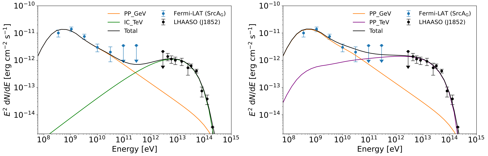
图注：SED fitting of GeV-100TeV gamma-rays of SrcA$_{\rm G}$ and J1852 in 1LHAASO J1852+0050u region. The orange lines represent the hadronic contribution of the protons accelerated by protostar activities. The green line in the left panel represents the IC emission from the electrons of pulsar(s). The purple line in the right panel represents the hadronic contribution from the massive stars in SFR.
对应解读：对应“建议重点查看的图表”第5项多波段SED图，以及“模型拟合”中强子、轻子/脉冲星方案比较段落。
入选理由：这是最直接支撑论文物理结论的图：同时展示GeV到100TeV谱点，并叠加强子模型、脉冲星电子IC模型和恒星形成区质子贡献。它比单纯SED点图更能检验作者关于SrcAG由原恒星活动质子解释、J1852由大质量恒星/SFR质子解释，以及PSR方案不足的核心论断。
来源与置信度：\(arxiv_source\)；high；\(arxiv_source\) / main.tex:figure[6]
Fig01
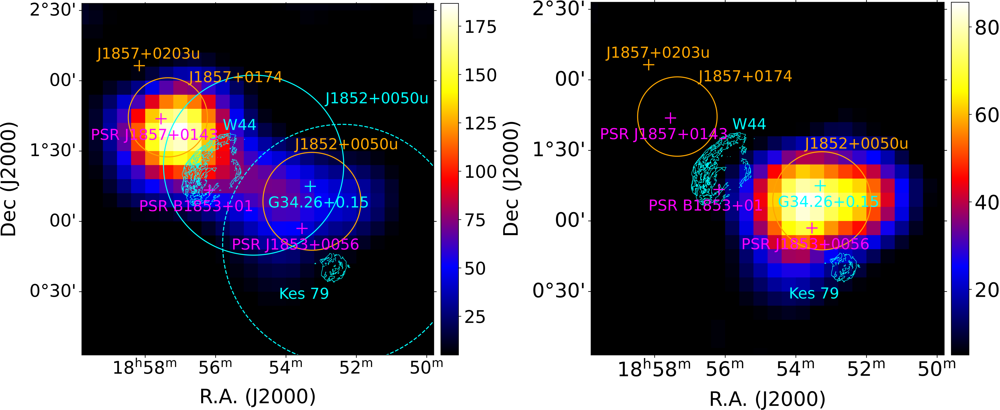
图注：TS maps of 2.5$^{\circ}\times2.5^{\circ}$ regions above 1 TeV towards the 1LHAASO J1852+0050u. Left panel: the TS map by refitting the LHAASO catalog source \(\protect\cite{2024ApJS..271...25C}\) but with the source 1LHAASO J1852+0050u removed from the model. The position and extension of 1LHAASO J1852+0050u in the LHAASO first catalog were shown in cyan solid (WCDA) and dashed (KM2A) circles for comparison. Right panel: the TS map of J1852 with the contribution from LHAASO J1857+0174 subtracted. The cyan plus indicates the star-forming region G34.26+0.15. SNRs W44 and Kes 79 are delineated as cyan contours with [5, 10] and [1, 6] mJy beam$^{-1}$ levels of the 1359.7 MHz radio continuum emission from MeerKAT observations \(\citep{2024MNRAS.531..649G},\) respectively. The orange circles represent the 1$\sigma$ Gaussian radius of J1852 and LHAASO J1857+0174. The pulsars with spin-down luminosity $\geq10^{34}$erg s$^{-1}$ were depicted in magenta pluses.
对应解读：对应“建议重点查看的图表”第1项LHAASO显著性/TS图，以及“关键图表逐图导读”图1。
入选理由：该图给出1TeV以上LHAASO TS空间分布、J1852扩展范围、邻近LHAASO J1857+0174扣除后的形态，并叠加G34.26+0.15、SNR和高自转能损失率脉冲星位置，是判断J1852是否真实扩展、是否与恒星形成区和PSR J1853+0056空间相关的首要证据。
来源与置信度：\(arxiv_source\)；high；\(arxiv_source\) / main.tex:figure[1]
Fig03
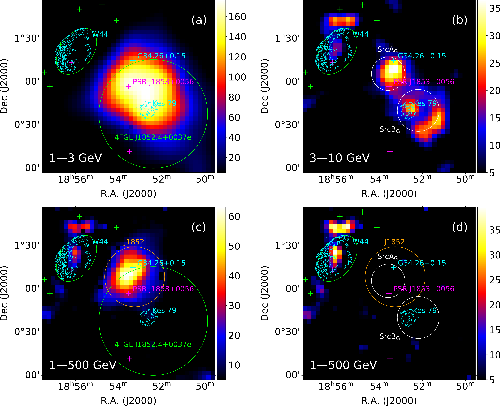
图注：Fermi-LAT gamma-ray TS maps of 2$^{\circ}$ × 2$^{\circ}$ regions centered at PSR J1853+0056. (a): the TS map in the energy range 1--3~GeV for an improved angular resolution with source 4FGL~J1852.4+0037e excluded from the 4FGL-DR4 catalog sources model. (b): same as (a) but in the energy range 3--10~GeV. (c): the TS map with 4FGL-DR4 catalog sources model in the energy range 1--500~GeV. (d): the TS map using the two extended source model. The green pluses, circle, and ellipse mark the positions of 4FGL-DR4 catalog sources \(\citep{{2023arXiv230712546B}}.\) The cyan plus and contours indicate the same objects as in \(\cref{fig:tsmap_TeV}.\) The white circles represent 39\% extension of the best-fitted spatial models in GeV energy band. The orange circle represents 1$\sigma$ Gaussian radius of J1852. The pulsars with spin-down luminosity $\geq10^{34}$ erg s$^{-1}$ are depicted in magenta pluses.
对应解读：对应“建议重点查看的图表”第3项Fermi-LAT TS/residual map，以及“关键图表逐图导读”图3。
入选理由：该图展示不同能段和不同源模型下的Fermi-LAT TS图，包含排除4FGL扩展源、使用目录源模型和双扩展源模型后的结果，可直接检查SrcAG在GeV能段是否仍显著、其位置和扩展是否与LHAASO J1852相容。
来源与置信度：\(arxiv_source\)；high；\(arxiv_source\) / main.tex:figure[3]
Fig05
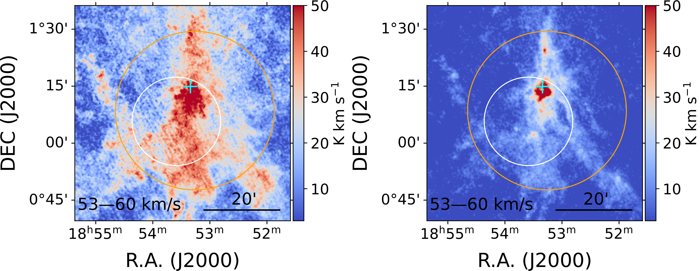
图注：Intensity maps of \twCO\ \,(left) line and \thCO\ \,(right) line in the velocity range +53 to +60 km s$^{-1}$. The cyan plus represents the HII region G34.26+0.15. The white circles represent 39\% extension of the best-fitted spatial models for SrcA${\rm_G}$. The orange circle represents 1$\sigma$ Gaussian radius of J1852.
对应解读：对应“建议重点查看的图表”第4项CO积分强度和速度通道图，以及“关键图表逐图导读”图4。
入选理由：该图在+53到+60 km/s速度范围内给出12CO和13CO积分强度图，并叠加SrcAG和J1852的空间扩展以及G34.26+0.15位置，是验证分子云靶物质是否真正覆盖伽马亮区、是否支持强子p-p相互作用解释的关键图。
来源与置信度：\(arxiv_source\)；high；\(arxiv_source\) / main.tex:figure[5]
Fig04
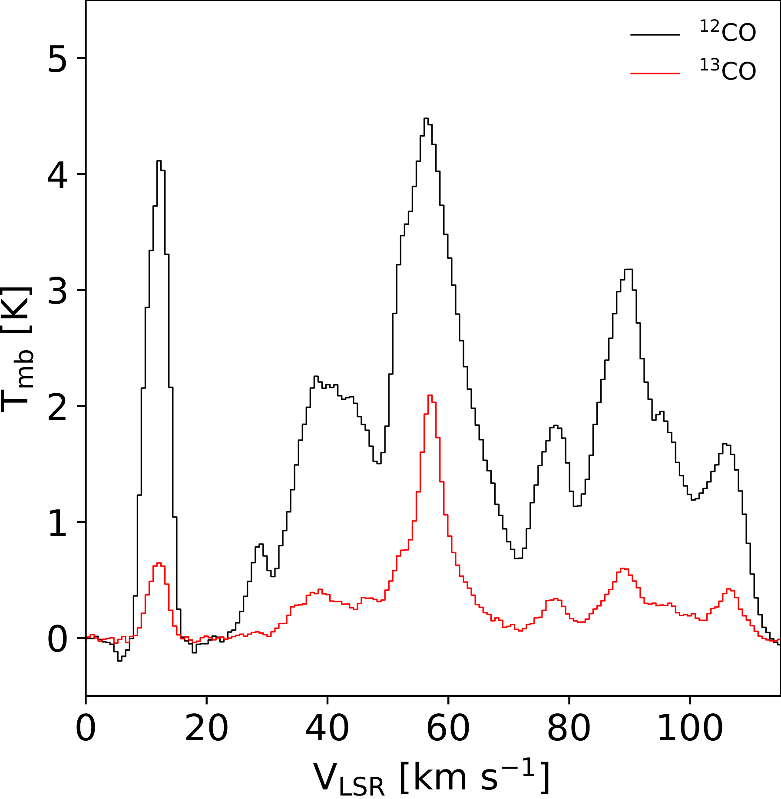
图注：Spectra of $^{12}$CO J=1–0 and $^{13}$CO J=1–0 line emission in the SrcA${\rm_G}$ region.
对应解读：对应“建议重点查看的图表”第4项中关于CO速度成分和物理关联的检查。
入选理由：该图给出SrcAG区域12CO和13CO谱线，可用于判断作者选择+53到+60 km/s速度范围是否有观测依据，并帮助区分相关分子团块与视线方向上其他速度成分的投影混淆。
来源与置信度：\(arxiv_source\)；high；\(arxiv_source\) / main.tex:figure[4]
Fig07
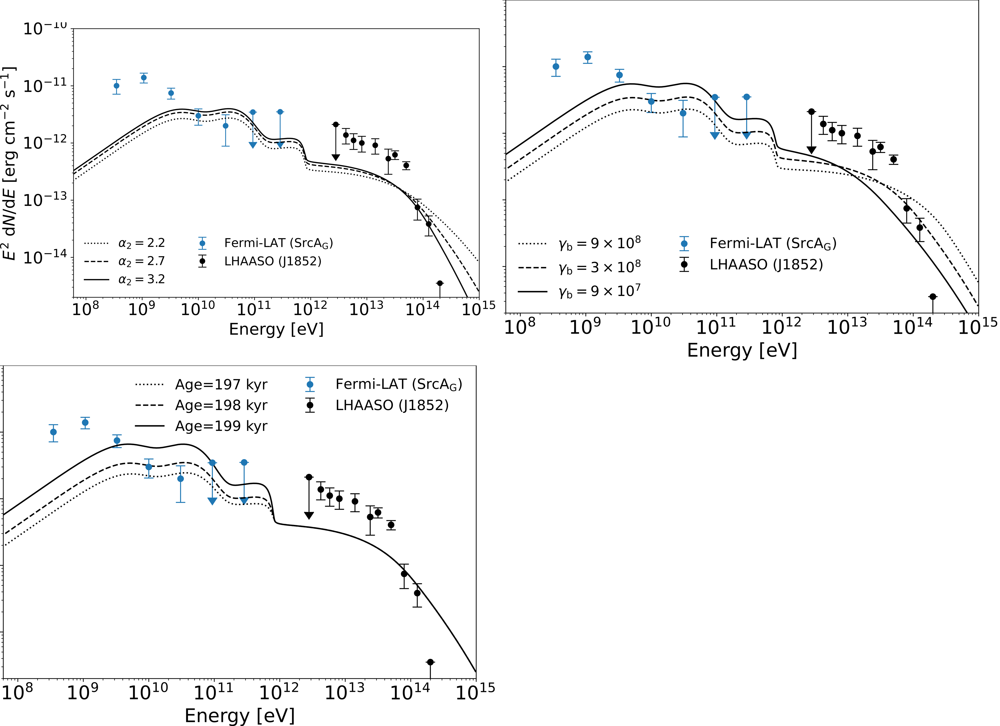
图注：The flux points are same as those in \(\cref{fig:sed}.\) The panels from left to right show the spectral energy distribution as functions of index $\alpha_2$, break energy $\gamma_{\rm b}$, and age $t_{\rm age}$, respectively. Left panel: the other parameters is $\gamma_{\rm b}=3\times10^8$ and $t_{\rm age}=198$~kyr. Middle panel: $\alpha_2=2.7$ and $t_{\rm age}=198$~kyr. Right panel: $\alpha_2=2.7$ and $\gamma_{\rm b}=3\times10^8$.
对应解读：对应“模型拟合”中脉冲星/电子模型参数退化和PSR解释可行性讨论。
入选理由：该图展示相同伽马谱点在电子谱指数、断裂能和年龄等参数变化下的SED响应，能辅助判断脉冲星电子IC方案是否需要极端参数，以及作者为何认为PSR J1853+0056难以解释观测通量。
来源与置信度：\(arxiv_source\)；high；\(arxiv_source\) / main.tex:figure[7]
强相关工作
这篇工作属于 LHAASO 超高能银河源和恒星形成区 PeVatron 候选体研究的交叉方向。同类问题包括 Cygnus Cocoon、Westerlund 1/2、NGC 3603、30 Dor C、以及银河中心分子区等：共同点是年轻恒星群体和高密度气体可能共同产生扩展 GeV–TeV 辐射；差别在于每个区域的距离、气体结构和已知紧致源污染不同。建议检索关键词：\(\mathrm{LHAASO}\) \(\mathrm{PeVatron}\) star-forming region, HII region gamma-ray, molecular cloud hadronic gamma rays, Cygnus Cocoon cosmic rays。\n\n与相反观点相关的文献主要来自 PWN 或 pulsar halo 解释。许多 LHAASO/HAWC 扩展 TeV 源最终可能由未分辨 pulsar halo、老年 PWN 或多个源混合贡献，因此本文的“恒星形成区主导”需要与隐藏脉冲星方案竞争。建议检索关键词：PSR J1853+0056 PWN, unidentified LHAASO source pulsar halo, TeV halo diffusion, Fermi-LAT Galactic diffuse systematics。\n\n基础理论方面，强子伽马产生常用 Kelner、Aharonian 与 Bugayov 的 \(p\)-\(p\) 产额参数化，轻子反康普顿与同步冷却则可参考高能辐射过程教材和 Fermi-LAT/LHAASO 源分析论文。若要复现实证链，应同时查 LHAASO 首批 UHE 源、Fermi-LAT 仪器论文、4FGL 目录和 CO 分子云距离测定方法。
同一事件 / 同类源线索：
相似工作：
基础理论 / 方法工作：
相反观点 / 张力线索：
（未提供）
2. Extended gamma-ray emission in the vicinity of the Westerlund 1 massive star cluster and Kes 41 supernova remnant seen by the Fermi Large Area Telescope
- 来源：arXiv / astro-ph.HE
- 链接：https://arxiv.org/abs/2609.10176v1
- 作者：L. Tibaldo, R. Bernet, L. Härer, M. Lemoine-Goumard, L. Mohrmann, G. Peron, B. Reville, T. Vieu
- 评分：novelty 8/10，importance 8/10，relevance 10/10，final 9.70/10
- 推荐理由：Fermi-LAT detection/characterization of extended GeV emission near Westerlund 1 and Kes 41, with direct implications for cosmic-ray acceleration, massive clusters, SNRs, and diffuse-source confusion.
中文题目：Fermi-LAT 在 Westerlund 1 大质量星团与 Kes 41 超新星遗迹附近看到的扩展伽马射线辐射
做了什么：这篇文章用超过 16 年的 Fermi-LAT 数据，在能量 \(>0.8\,\mathrm{GeV}\) 范围重新分析 Westerlund 1 大质量星团和 Kes 41 超新星遗迹方向的伽马射线辐射。作者重点检验一个实际问题：一些没有可靠多波段对应体的 LAT 点源簇，是否其实是被点源模型拆碎的扩展辐射。结果是他们报告了 3 个新的软谱扩展成分，均位于银河面高气体柱密度区域；其中一个与 Kes 41 的诞生云相关，统计上优于先前放在超新星遗迹壳层方向的点源解释；另外两个位于 Westerlund 1 超泡边缘约 \(100\,\mathrm{pc}\) 内的中性气体结构上。重要的是，作者没有把它们简单宣称为新宇宙线源，而是明确指出两种解释都可行：星际弥散背景中气体模板建模不足，或局部粒子注入后的强子伽马射线辐射。若按后一种解释，Kes 41 成分只需把 \(\lesssim 5\%\) 的超新星能量转为加速粒子，而 Westerlund 1 附近两个成分对应的伽马射线功率约为星团风机械功率的 \(10^{-4}\)。
为什么重要：这项工作重要，因为它触及 Fermi-LAT 银河面源表中的一个根本问题：很多软谱、无对应体的低纬伽马射线源，究竟是独立紧致天体，还是气体模板和宇宙线输运在中等尺度上没有被正确描述造成的残差。Westerlund 1 是银河系最强的大质量星团之一，Kes 41 是附近复杂区域中的超新星遗迹；如果这些扩展结构是真实粒子注入信号，它们说明大质量星团和超新星遗迹都能在几十到百秒差距尺度上塑造局地宇宙线分布。即便它们最终被证明是弥散模型误差，这篇文章也给出了如何系统识别这类误差的实用路线。
理论 / 观测 / 仪器方法价值：对理论的价值在于，它把宇宙线源附近输运问题从单个壳层或单个点源推进到介于孤立天体和银河弥散辐射之间的中等尺度结构；这正是简单均匀扩散模型最容易失效的地方。对观测的价值在于，文章展示了如何用长时间基线 LAT 数据、空间模板比较和似然检验来区分点源簇、扩展源和弥散背景残差。对方法的价值在于，它提醒读者在银河面上报告新源时必须同时检查气体柱密度、背景模板不确定性、点扩散函数、能谱软硬和多波段对应体，而不能只看源表显著性。
为什么应该关注：如果你关心银河宇宙线起源，这篇文章值得看，因为它把“大质量星团是否是宇宙线加速器”这个问题放进了真实复杂的银河面背景中，而不是理想化地只拟合一个漂亮的扩展源。如果你使用 Fermi-LAT 源表，它也值得看，因为它说明一些无对应体软源可能不是新的源族，而是中等尺度弥散结构被点源化的结果。如果你做 CTA、LHAASO、HAWC 或未来 MeV-GeV 任务的源识别，这种从点源簇回到物理模板的分析思路会直接影响目标选择和误差预算。
展开详细解读：文章讲解、背景、理论、重点章节、图表与相关工作
文章详细讲解
科学问题：论文关注的是 Westerlund 1 与 Kes 41 所在银河面方向的 GeV 伽马射线辐射到底来自什么。该区域同时包含大质量星团、超新星遗迹、分子云和强烈的银河弥散背景，是典型的“源与背景纠缠”场景。已有越来越多证据表明大质量星团可以加速宇宙线，但在 Fermi-LAT 能段，源附近的扩展辐射常常与气体相关的弥散辐射混在一起。作者要回答的不是简单的“有没有信号”，而是“原先被源表描述为若干未关联点源的结构，是否更自然地表现为扩展辐射”。
作者怎么做：他们使用超过 16 年的 Fermi-LAT 观测数据，选取 \(>0.8\,\mathrm{GeV}\) 的光子，以降低低能端较宽点扩散函数带来的空间混淆。分析策略是从标准银河弥散模型和已知源模型出发，检查 Westerlund 1 与 Kes 41 周围未关联伽马源簇的残差，再用扩展模板替换或补充点源模型，比较不同空间模型的似然。论文特别把扩展伽马结构与中性气体柱密度分布相对照，因为在强子情形下，宇宙线质子与气体相互作用产生 \(\pi^0\) 衰变伽马射线，表面亮度通常会跟气体有一定对应关系。
关键结果：作者报告了 3 个新的软谱扩展成分。一个位于 Kes 41 的诞生云方向，统计上优于此前在超新星遗迹壳层附近放置点源的解释；这意味着旧的“壳层点源”可能只是气体云中扩展辐射被点源模型吸收的结果。另两个扩展成分与 Westerlund 1 超泡边缘约 \(100\,\mathrm{pc}\) 内的中性气体重叠。若把这些结构解释为局地注入宇宙线照亮附近气体，Kes 41 所需加速能量低于典型超新星爆发能量的几％，而 Westerlund 1 所需伽马射线功率只是星团风机械功率的 \(10^{-4}\) 量级，因此能量学上并不苛刻。
局限和下一步：最核心的限制是银河面弥散背景模型的不确定性。高气体柱密度区域中，若气体模板、距离分解、暗气体、宇宙线海强度或反康普顿成分建模不足，都可能在残差图上产生看似扩展源的结构。作者因此谨慎地保留两种解释：一是局部粒子加速和非标准输运，二是星际背景模型缺陷。下一步需要更细的气体速度分解、更高角分辨率的 TeV 数据、不同弥散模型下的系统扫描，以及与射电、红外、X 射线和分子谱线数据联合判断这些扩展成分是否对应真实物理云团或冲击结构。
关键结果是怎么做出来的
数据和样本选择上，论文使用的是 \(>16\) 年 Fermi-LAT 数据，并把能量下限放在 \(0.8\,\mathrm{GeV}\)。这个选择很关键：LAT 在低于 GeV 的点扩散函数较宽，银河面弥散背景也更强，容易把多个点源、气体结构和真实扩展源混在一起；提高能量下限牺牲部分光子数，但换来更可靠的形态约束。分析区域围绕 Westerlund 1 与 Kes 41，目标不是盲搜所有源，而是检验已有未关联源簇是否可以由少数扩展成分更好解释。
事件数或样本量方面，摘要没有给出总光子数或每个扩展成分的净计数，因此阅读正文时应重点查看数据选择表、曝光图和各能段残差图。真正支撑结论的不是单个峰值计数，而是加入扩展模板后全局似然的改善、点源残差的消失程度、以及扩展成分在不同能段是否保持空间一致。若论文提供不同事件类型或不同点扩散函数分位的结果，应特别检查扩展显著性是否依赖某一类事件；如果只在较差角分辨率事件中显著，就要警惕形态误判。
统计判断上，核心量通常是似然比检验统计量，例如比较含扩展模板模型与只含点源模型的 \(\Delta \mathrm{TS}=2\Delta \ln \mathcal{L}\)。Kes 41 方向的关键结论是扩展成分在统计上优于此前壳层点源模型；Westerlund 1 方向的关键结论则是两个扩展成分可以替代或解释若干无对应体软源簇。读者应查看每个候选扩展源的空间扩展显著性、谱参数误差、与邻近源的协方差，以及是否进行了额外自由点源的再优化。
支撑结论的图表应包括：宽能段计数图和模型图、残差或显著性图、加入扩展源前后的残差对比、气体柱密度或分子云轮廓叠加图、每个扩展成分的能谱能量分布，以及不同空间假设的似然比较表。尤其要看扩展源轮廓是否只是沿银河面或气体模板的局部误差延展，而不是具有与 Westerlund 1 或 Kes 41 物理上可解释的几何关系。
主要系统误差来自银河弥散模型、气体柱密度到伽马发射率的转换、附近亮源建模、LAT 有效面积和点扩散函数、能量阈值选择，以及源表中未建模弱源的影响。稳健性检验应包括更换弥散背景模型、改变能量下限、移除或释放邻近源参数、比较圆盘或高斯等不同扩展模板、以及检查结果是否集中在某一能段。文章最有价值之处也正在这里：它没有把显著残差直接等同于新加速器，而是把统计偏好与系统不确定性一起呈现。
展开背景、理论、公式、模型、章节和图表导读
背景知识
Westerlund 1 是银河系中最著名的大质量恒星星团之一，包含大量 OB 星、Wolf-Rayet 星和演化后的大质量恒星。这样一个星团会通过恒星风和最终超新星爆发向周围介质注入巨大的机械能，形成超泡和湍动环境。理论上，集体恒星风、风-风碰撞、超泡边界冲击和过去的超新星都可能加速宇宙线。因此，Westerlund 1 一直是检验“大质量星团作为银河宇宙线源”的关键目标。
Kes 41 则是银河面中的超新星遗迹，位于复杂的气体和高能源背景中。超新星遗迹长期被视作银河宇宙线主要候选源，因为冲击波可以通过弥散激波加速把带电粒子加速到高能。对于 Kes 41 这类与分子云或致密气体相邻的遗迹，GeV 伽马射线特别有诊断意义：若加速质子逃逸并撞击云团，\(\pi^0\) 衰变会产生与气体分布相关的扩展辐射。
历史问题在于，Fermi-LAT 的银河面源表中存在大量未关联源，特别是低纬度、软谱、靠近气体复杂区的源。它们可能是脉冲星、脉冲星风云、超新星遗迹、星团、活动星系核透过银河面被看到的投影，也可能根本不是独立天体，而是弥散背景模型未能捕捉的结构。随着 LAT 积分时间从几年增长到十几年，统计误差降低后，系统误差反而变得更突出，原来能用几个点源吸收的残差现在需要用物理上更合理的扩展模板重新审视。
为什么现在值得重新看：一方面，Fermi-LAT 的长时间基线提高了弱扩展辐射的灵敏度；另一方面，TeV 观测、分子气体巡天和恒星星团研究都在提示源附近宇宙线输运可能不同于银河平均扩散。许多 TeV halo、星团周围扩展源和云团照亮现象都指向同一个问题：宇宙线离开源之后的前 \(10\) 到 \(100\,\mathrm{pc}\) 并不一定服从简单的均匀扩散。
常见误区有两个。第一，把“与气体重合”直接理解为“源注入宇宙线的证据”；实际上，气体重合也可能说明弥散背景模板本身建模不足。第二，把“无多波段对应体点源”当成新源族候选；在银河面上，点源模型常常只是对扩展残差的数学近似。本文的价值在于它把这两个误区都摆在台面上，并用似然比较检验点源簇与扩展结构之间的竞争解释。
基础理论 / 方法脉络
基本物理图像是：高能伽马射线可以来自相对论质子或原子核与气体碰撞后的 \(\pi^0\) 衰变，也可以来自高能电子的反康普顿散射和非热轫致辐射。在银河面高气体柱密度区域，若伽马射线表面亮度与分子云或原子气体有空间对应，强子过程通常是最自然的候选。不过这种对应不等于唯一解释，因为弥散背景模型本来就用气体模板构建，模板误差会直接投影到残差图中。
对超新星遗迹而言，关键量包括爆发能量 \(E_{\mathrm{SN}}\)、注入到宇宙线的能量 \(W_{\mathrm{CR}}\)、目标气体密度 \(n_{\mathrm{H}}\)、源年龄和距离。若 Kes 41 附近扩展成分由逃逸质子照亮诞生云产生，则所需的 \(W_{\mathrm{CR}}/E_{\mathrm{SN}}\) 可与典型加速效率比较。摘要给出的 \(\lesssim 5\%\) 表明能量学合理，但并不能单独证明强子起源，因为距离、气体质量和弥散模型误差都会进入估算。
对大质量星团而言，能量源不是单次爆炸，而是持续的星团风机械功率 \(L_{\mathrm{w}}\)。若 Westerlund 1 周围两个扩展成分来自局地粒子注入，那么观测伽马射线光度 \(L_{\gamma}\) 与 \(L_{\mathrm{w}}\) 的比值给出一个经验效率。文中提到 \(L_{\gamma}/L_{\mathrm{w}}\sim 10^{-4}\)，意味着只需很小一部分风功率最终进入可见 GeV 伽马辐射；这与星团作为潜在宇宙线源的能量预算相容。
观测和统计方法上，LAT 分析本质是泊松计数成像。每个空间像素和能量 bin 的预期计数由源模型、弥散背景、曝光和仪器响应卷积得到。点源、扩展高斯、圆盘模板或气体相关模板的区别，最终体现在预测计数分布是否能更好解释观测计数。由于 LAT 的点扩散函数随能量变窄，能量选择会直接影响形态结论。
主要退化关系包括：扩展源与银河弥散背景归一化的退化、相邻点源之间的通量退化、源大小与谱软硬的退化、气体柱密度误差与强子解释的退化，以及距离不确定性与能量预算的退化。本文的读法应始终围绕这些退化：统计显著性回答“模型是否更好”，但物理解释还需要证明这种改善不是由背景模板缺陷或未建模弱源造成。
公式与推导
从强子伽马射线的最简单估算开始。若宇宙线质子能量密度为 \(w_{\mathrm{CR}}\)，目标气体密度为 \(n_{\mathrm{H}}\)，相互作用截面为 \(\sigma_{pp}\)，则单位体积碰撞率近似为
其中 \(n_{\mathrm{CR}}\) 是相关能段宇宙线数密度，\(c\) 是光速。该式说明为什么高气体柱密度区域即使没有更强的加速器，也容易在伽马射线残差中显眼。
若用总宇宙线能量 \(W_{\mathrm{CR}}\) 和质子损失时间 \(t_{pp}\) 估算伽马射线光度，可写成
其中 \(\eta_{\gamma}\) 是进入所观测伽马能段的能量比例，\(\kappa_{pp}\) 是非弹性系数。Kes 41 能量预算中的 \(\lesssim 5\%\) 本质上就是把观测 \(L_{\gamma}\)、估计 \(n_{\mathrm{H}}\) 和距离代入这类关系，反推 \(W_{\mathrm{CR}}/E_{\mathrm{SN}}\)。
观测到的能量通量 \(F_{\gamma}\) 与光度的关系为
其中 \(d\) 是源距离。这个看似简单的式子是能量学判断中最大的系统入口之一：若 \(d\) 增大一倍，所需光度和粒子能量会增大到 \(4\) 倍。
对 Westerlund 1 的星团风解释，常用效率写成
其中 \(\dot{M}_i\) 和 \(v_{w,i}\) 分别是第 \(i\) 颗大质量恒星的质量损失率和风速。文中所说 \(\epsilon_{\gamma}\sim 10^{-4}\) 表明伽马辐射只需消耗星团风功率的一小部分。
源附近粒子输运可用扩散方程概括：
其中 \(n(E,\mathbf{r},t)\) 是粒子谱密度，\(Q(E,\mathbf{r},t)\) 是注入项，\(D(E,\mathbf{r})\) 是扩散系数，\(t_{\mathrm{loss}}\) 是损失时间。本文的中等尺度扩展结构之所以重要，是因为它们可能要求 \(D(E,\mathbf{r})\) 在源附近不同于银河平均值。
LAT 观测中的模型预测计数可写为
其中 \(k\) 表示空间与能量 bin，\(R\) 是仪器响应，\(I_s\) 是第 \(s\) 个源或模板的强度模型，\(\boldsymbol{\theta}\) 是待拟合参数，\(\mu_{k,\mathrm{bkg}}\) 是背景贡献。点源和扩展源的主要差别就在 \(I_s(E,\Omega)\) 的空间部分。
泊松似然为
其中 \(n_k\) 是观测计数。所有“加入扩展模板是否更好”的判断，最终都来自该似然在不同模型下的最大值比较。
常用检验统计量是
其中带帽参数表示最大似然估计。比较扩展源与点源时，可进一步使用
在理想正则条件下 \(\mathrm{TS}\) 可近似映射为显著性，但源扩展、边界参数和复杂背景会破坏简单的 \(\sqrt{\mathrm{TS}}\) 解释，因此本文这类银河面分析必须配合系统检验。
若采用幂律能谱，源光子谱通常写成
其中 \(N_0\) 是归一化，\(E_0\) 是枢轴能量，\(\Gamma\) 是光子指数。文中强调这些扩展成分为软谱，即 \(\Gamma\) 较大；软谱既可能是老年粒子群或云团照亮的特征，也可能更容易与银河弥散背景误差混淆。
模型拟合 / 应用方法
这类 Fermi-LAT 分析的拟合量包括每个源的通量归一化、谱指数或分段谱能量点、扩展模板的位置和尺寸、邻近源参数，以及银河弥散和各向同性背景的归一化。本文的关键拟合不是单纯给出新源通量，而是在“多个点源”与“少数扩展模板”之间做模型比较。Kes 41 方向要比较壳层附近点源与诞生云扩展模板，Westerlund 1 方向要比较未关联点源簇与两个扩展成分。
似然通常采用 binned Poisson likelihood，实际软件可能还会在不同能段、不同空间 bin 和不同事件类型上联合拟合。源显著性用 \(\mathrm{TS}\) 衡量，扩展显著性用 \(\mathrm{TS}_{\mathrm{ext}}\) 或类似似然差衡量。读者要注意：若扩展模板增加了位置、半径、谱形等多个自由度，简单比较 \(\Delta \mathrm{TS}\) 并不等于直接给出同等自由度下的高斯显著性；特别是在银河面，背景不完美会产生非统计的似然改善。
参数退化非常重要。扩展源通量与弥散背景归一化高度相关，尤其当源沿银河面或气体云延展时；源半径与谱指数也可能相关，因为较低能光子点扩散函数更宽，软谱源可能被拟合得更扩展。相邻未关联点源如果没有真实多波段对应体，它们的通量可能只是同一个扩展结构的不同局部峰值。因而，好的拟合诊断应查看加入扩展模板后邻近点源的 \(\mathrm{TS}\) 是否系统下降，残差是否从多峰结构变成噪声状分布。
系统误差处理应包括多套银河弥散模型、不同气体图、不同能量下限、不同 ROI 大小、释放或固定邻近源参数，以及改变扩展模板几何形状。若论文中的三处扩展成分在这些测试下位置和谱形稳定，局地粒子注入解释会更有说服力；若显著性强烈依赖某一个弥散模板或某个能段，则更可能是背景建模误差。
实际应用上，这篇文章的方法可用于清理 LAT 未关联源表。对于银河面软谱源簇，先不要急于逐个寻找脉冲星或紧致对应体，而应检查它们是否沿气体结构、超泡边界或星团周围分布，并测试扩展模板能否替代点源簇。对未来 TeV 或 X 射线跟进而言，最优目标不是源表中最亮的单个点源，而是似然残差、气体结构和潜在加速器共同指向的空间区域。
重点章节 / 结果段落怎么读
数据与区域选择部分应首先阅读。重点看 LAT 数据时间跨度、能量范围、事件类别、ROI 大小、天顶角切除和背景模型。能量下限 \(0.8\,\mathrm{GeV}\) 是形态分析的核心技术选择，读者应检查作者是否解释了该阈值对光子统计和点扩散函数的权衡。
源模型构建部分是全文方法核心。应关注初始模型包含哪些 4FGL 或更新源表源、哪些源参数被释放、是否加入新的点源、如何处理银河弥散和各向同性背景。这里决定了“扩展源”是否真的优于点源簇，还是只是初始模型不足造成的假改善。
扩展源搜索和空间模板比较部分需要细读。作者测试的扩展成分数量、位置、大小和形状，以及与未关联点源的替换关系，是论文主要结论的统计基础。读者应记录每个扩展成分对应的 \(\mathrm{TS}\)、\(\mathrm{TS}_{\mathrm{ext}}\)、谱指数和系统误差范围。
物理解释部分要和气体图一起读。Kes 41 方向的重点是扩展成分是否与诞生云而非壳层点源对应；Westerlund 1 方向的重点是两个扩展成分是否位于超泡边缘约 \(100\,\mathrm{pc}\) 内的中性气体上。能量预算中的 \(\lesssim 5\%\) 和 \(10^{-4}\) 是可行性论证，不是唯一性证明。
讨论和稳健性检验部分决定论文可信度。应看作者如何处理“弥散背景建模不足”这一反解释，是否用替代弥散模型或残差检查量化了影响。若附录给出不同模型配置下的源参数表、残差图或能谱点，那些内容比摘要中的发现声明更能判断结论强弱。
建议重点查看的图表
-
宽能段伽马射线计数图和模型图：看 Westerlund 1、Kes 41、已有源表点源和银河面的相对位置，确认新扩展成分是否只是沿曝光或背景梯度分布。
-
加入扩展模板前后的残差或显著性图：看原先未关联点源簇所在位置的正残差是否被消除，以及是否出现新的负残差或边缘结构。
-
气体柱密度图或中性气体轮廓叠加图：看三个扩展成分是否与高气体柱密度区域真实重合，还是只是在银河面投影上近似重合。
-
空间模型似然比较表：重点看点源模型、圆盘或高斯扩展模型、气体相关模板之间的 \(\Delta \ln \mathcal{L}\)、\(\mathrm{TS}\) 和自由度差异。
-
每个扩展成分的谱能量分布：看谱是否确实软，能谱点是否由多个能段支撑，还是主要来自低能端。
-
系统误差或稳健性检验表：看改变弥散模型、能量阈值、邻近源自由度和模板形状后，扩展源通量、尺寸和显著性是否稳定。
-
多波段对照图：若有射电壳层、分子云、红外泡或 X 射线源标记，应检查伽马扩展区域与这些结构的物理关系，而不是只看角距离。
-
源表点源替换诊断：看被扩展模板吸收的无对应体点源在加入扩展源后 \(\mathrm{TS}\) 是否显著下降，这是判断“点源簇其实是扩展辐射”的关键证据。
关键图表逐图导读
图 1：通常应是研究区域的 LAT 计数图或显著性图。横纵轴应为银河坐标或赤道坐标，颜色表示计数、模型强度或残差显著性，标出 Westerlund 1、Kes 41 和源表点源位置。读图时不要只看最亮斑点，要看这些斑点是否成簇、是否沿银河面拉长，以及是否与仪器曝光边界无关。
图 2：应关注加入扩展成分前后的残差对比。若左图为基准点源模型残差，右图为加入扩展模板后的残差，关键是正残差是否从结构化团块变为近似随机噪声。读图陷阱是色标范围：若两幅图色标不同，视觉上“改善”可能被夸大，必须结合 \(\mathrm{TS}\) 表判断。
图 3：气体柱密度或分子云轮廓叠加图是物理解释的核心。坐标轴同样为空间坐标，底图可能是 H I、CO 或总气体柱密度，轮廓为伽马扩展模板或反过来。主要看 Kes 41 方向扩展成分是否更贴近诞生云而不是壳层点源位置，以及 Westerlund 1 两个成分是否位于超泡边缘附近的中性气体结构上。陷阱是二维投影不能证明距离相同，速度分解和距离估计仍然必要。
图 4：空间模板或模型比较结果可能以表格或 \(\mathrm{TS}\) 柱状图呈现。应查看点源、扩展高斯、圆盘和气体模板的似然差，尤其注意自由参数数量不同带来的惩罚问题。如果某个扩展模板只是略优于多个点源，而系统误差未计入，结论应保守理解。
图 5：三个扩展成分的能谱能量分布应给出 \(E^2 dN/dE\) 或每能段通量点，横轴为能量，纵轴为能量通量或光子通量。关键看软谱是否由多个能段连续支撑，以及高能端是否只有上限。若通量主要由 \(<2\,\mathrm{GeV}\) 光子决定，则点扩散函数和弥散背景系统误差会更敏感。
图 6：稳健性检验图或表最容易被忽略但很关键。应查看不同弥散模型、不同能量阈值、不同 ROI 或不同模板形状下，扩展源的通量、谱指数、尺寸和 \(\mathrm{TS}\) 是否保持在误差范围内。如果某个扩展成分只在单一配置下显著，那么它更可能是背景残差而非稳健天体源。
论文原图 / 可嵌入图片
Fig04
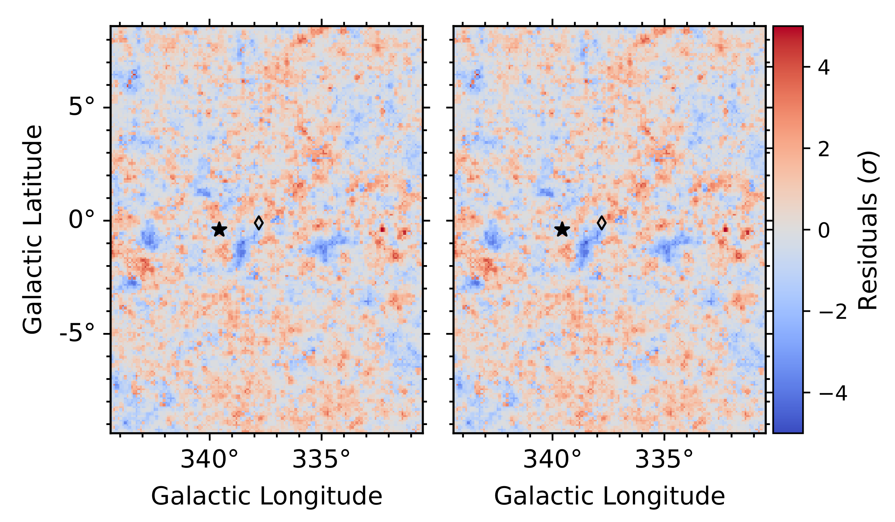
图注：Data--model residuals evaluated \(\latrv{for the hypothesis of point-like emission}\) based on the method from \(\citet{bruelNewMethodPerform2021}.\) Left panel: the best model from \(\pbrv{\sect}\)~\(\ref{sec:geomodel}\) featuring extended disks. Right panel: model including gas templates from \(\pbrv{\sect}\)~\(\ref{sec:ismmodel}.\) The star marks the position of the \(\object{Westerlund 1}\) MSC \(\citep{tarricq3DKinematicsAge2021},\) while the diamond corresponds to SNR \(\object{Kes 41}\) \(\citep{greenUpdatedCatalogue3102025}.\)
对应解读：对应“建议重点查看的图表”第2项残差/显著性图，以及“关键图表逐图导读”图2和模型拟合段落中关于加入扩展模板后残差是否被消除的诊断。
入选理由：这是判断三个新扩展成分是否真实改善空间模型的核心图，直接比较扩展圆盘模型与气体模板模型下的数据-模型残差，可检验未关联点源簇附近的结构化正残差是否被扩展/气体相关成分吸收，比单纯的源位置图更能支撑论文的统计建模结论。
来源与置信度：\(arxiv_source\)；high；\(arxiv_source\) / ms.tex:figure[4]
Fig01
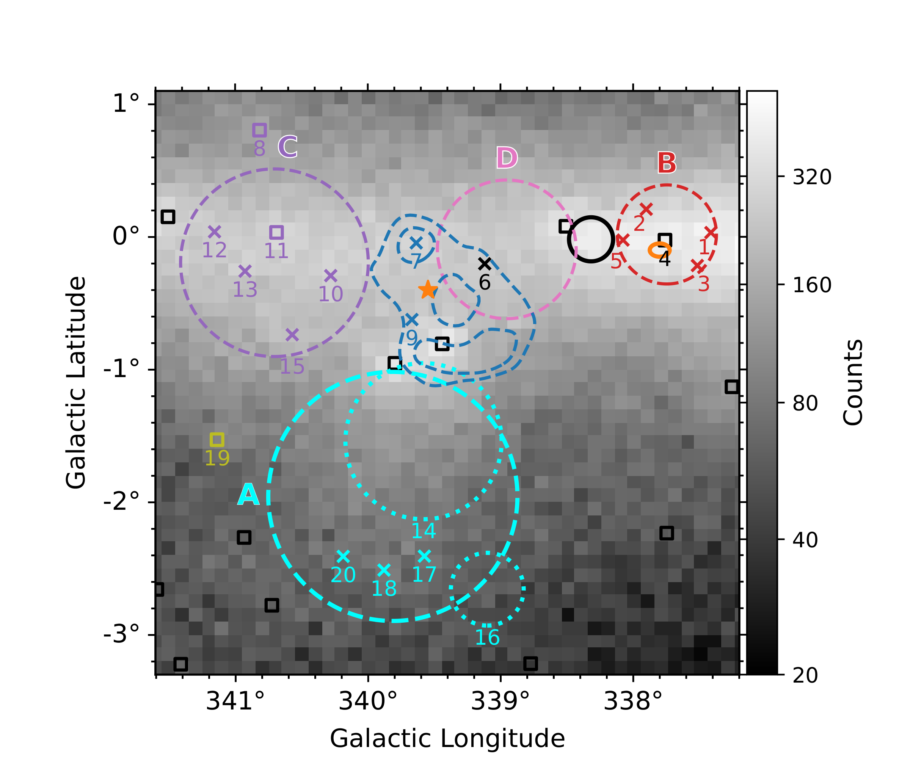
图注：4FGL-DR4 sources in the region around \(\object{Westerlund 1}\) and \(\object{Kes 41}\) \(\citep{collaborationIncrementalFermiLarge2022,balletFermiLargeArea2024}.\) The orange star marks the position of \(\object{Westerlund 1}\) \(\citep{tarricq3DKinematicsAge2021},\) while the orange ellipse corresponds to the radio shell of SNR G337.8$-$0.1, alias \(\object{Kes 41}\) \(\citep{greenUpdatedCatalogue3102025}.\) Blue dashed contours correspond to TeV gamma-ray emission measured with H.E.S.S. and attributed to \(\object{Westerlund 1}\) \(\citep{aharonianDeepSpectromorphologicalStudy2022}.\) Squares/crosses mark the positions of point-like sources and continuous/dotted circles indicate the 68\% containment regions of extended sources in 4FGL-DR4 for sources that are kept/discarded in the model in \(\pbrv{\sect}\)~\(\ref{sec:geomodel}.\) Unassociated and unknown type sources within 2.5\degr\ from \(\object{Westerlund 1}\) are highlighted in color, with color coding that reflects the extended emission regions discussed in the paper. Sources discussed individually in the text are numbered, and \(\pbrv{Table}\)~\(\ref{tab:unassoc}\) provides the correspondence of number to 4FGL-DR4 name. Dashed circles correspond to the 68\% containment regions of extended sources added in the model in \(\pbrv{\sect}\)~\(\ref{sec:geomodel}.\) The background map shows LAT counts above 800~MeV for the dataset used in our analysis.
对应解读：对应“建议重点查看的图表”第1项宽能段伽马射线计数图和模型图，以及“关键图表逐图导读”图1。
入选理由：该图给出LAT 800 MeV以上计数背景、Westerlund 1、Kes 41、4FGL-DR4点源、已有扩展源、H.E.S.S. TeV轮廓和本文新增扩展区域的整体空间关系，是读者理解未关联点源簇、银河面位置和新增扩展模板布局的入口图。
来源与置信度：\(arxiv_source\)；high；\(arxiv_source\) / ms.tex:figure[1]
Fig03
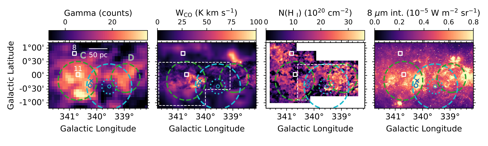
图注：Region around \(\leftblob\) and \(\centerblob.\) From left to right: photon counts that the likelihood fit has attributed to \(\leftblob\) and \(\centerblob\) (dashed green circles) based on the best-fit disk models \pbrv{in \sect~\ref{sec:geomodel} (the counts are obtained by subtracting the model counts for all other model components from the measured counts)}; CO intensity W$_\mathrm{CO}$ from MOPRA and CfA data in the kinematic range from $V_\mathrm{LSR} = -70$~km~s$^{-1}$ to $-40$~km~s$^{-1}$; column density of atomic hydrogen, N(\hi), in the optically thin limit for lines peaking at velocities consistent with the bubble-like feature B3 \(\citep{kothesDistanceNeutralEnvironment2007},\) highlighted by the dashed white box; 8~$\upmu$m intensity from MSX data. \latrv{Cyan circles are related to \object{Westerlund 1}: the solid circle shows the size of the stellar cluster \(\citep{negueruelaWesterlund1Light2022},\) the dotted and dashed circles show the predicted sizes of the cluster wind termination shock and superbubble, respectively, using the values of 20~pc and 60~pc from \citet{harerUnderstandingTeVGray2023}.} The blue cross marks the position of the \(\hii\) region G340.2$-$0.2 \(\citep{russeilStarformingComplexesSpiral2003}.\) The blue circle corresponds to the cluster of two young stellar objects G340.242$-$00.370 \(\citep{urquhartRMSSurveyGalactic2014}.\) White squares mark the positions of the unassociated gamma-ray sources 4FGL~J1646.5$-$4406 and 4FGL~J1649.3$-$4441 (labeled as 11 and 8, respectively, as in \(\pbrv{\fig}\)~\ref{fig:mapunassoc}) which are kept in the model (and whose emission is subtracted from the left panel). In the left panel we show the angular size equivalent to 50 pc at the 4.23~kpc distance of \(\object{Westerlund 1}.\) In the W$_\mathrm{CO}$ panel the dashed white box delimitates the template fit to the gamma-ray data. Maps are smoothed with a 0.1\degr\ Gaussian kernel for display.
对应解读：对应“建议重点查看的图表”第3项气体柱密度/中性气体轮廓叠加图、第7项多波段对照图，以及“关键图表逐图导读”图3中Westerlund 1附近两个扩展成分与超泡边缘和气体结构的关系。
入选理由：该图同时展示leftblob和centerblob的伽马计数、CO、H I柱密度和8微米红外数据，并标出Westerlund 1、风终止激波和超泡尺度，是检验两个Westerlund 1附近扩展成分是否与中性气体和星团环境物理相关的最有信息量图。
来源与置信度：\(arxiv_source\)；high；\(arxiv_source\) / ms.tex:figure[3]
Fig02
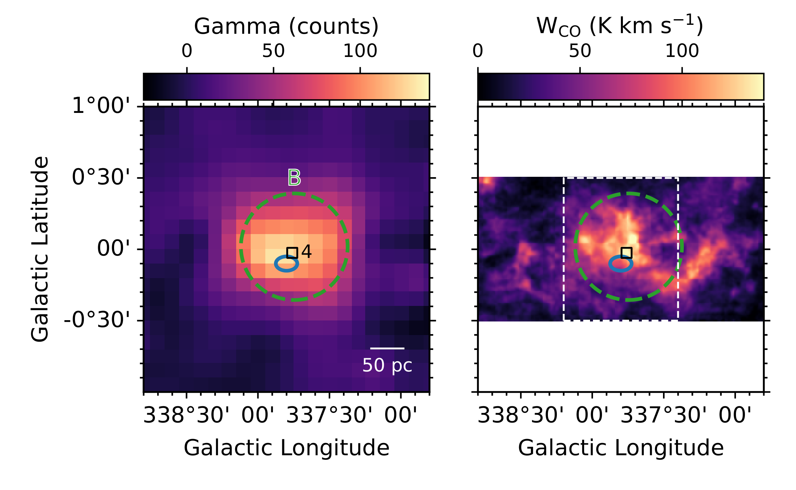
图注：Region around \(\rightblob\) and SNR \(\object{Kes 41}.\) Left: photon counts that the best fit in \(\pbrv{\sect}\)~\(\ref{sec:geomodel}\) has attributed to \(\rightblob\) (dashed green circle) and the source 4FGL~J1638.5$-$4657c associated with \(\object{Kes 41}\) (shown as a square and numbered as source 4 in \(\pbrv{\fig}\)~\ref{fig:mapunassoc}). \(\pbrv{The counts are obtained by subtracting the model counts for all other model components from the measured counts.}\) Right: W$_\mathrm{CO}$ from MOPRA data in the kinematic range from $V_\mathrm{LSR} = -70$~km~s$^{-1}$ to $-40$~km~s$^{-1}$. The blue ellipse corresponds to the radio shell of \(\object{Kes 41}\) \(\citep{greenUpdatedCatalogue3102025}.\) In the left panel we show the angular size equivalent to 50 pc at the 12~kpc distance of \(\object{Kes 41}.\) In the right plot the dashed white box delimitates the template fit to the gamma-ray data. Maps are smoothed with a 0.1\degr\ Gaussian kernel for display.
对应解读：对应“建议重点查看的图表”第3项气体柱密度/分子云叠加图、第7项多波段对照图，以及“关键图表逐图导读”图3中Kes 41方向扩展成分是否贴近诞生云而非壳层点源位置的讨论。
入选理由：该图聚焦Kes 41区域，把rightblob和4FGL J1638.5-4657c的伽马计数与MOPRA CO速度积分图并列显示，还标出Kes 41射电壳层和模板拟合区域，能直接支撑论文关于Kes 41诞生云扩展辐射优于壳层点源解释的论点。
来源与置信度：\(arxiv_source\)；high；\(arxiv_source\) / ms.tex:figure[2]
Fig05
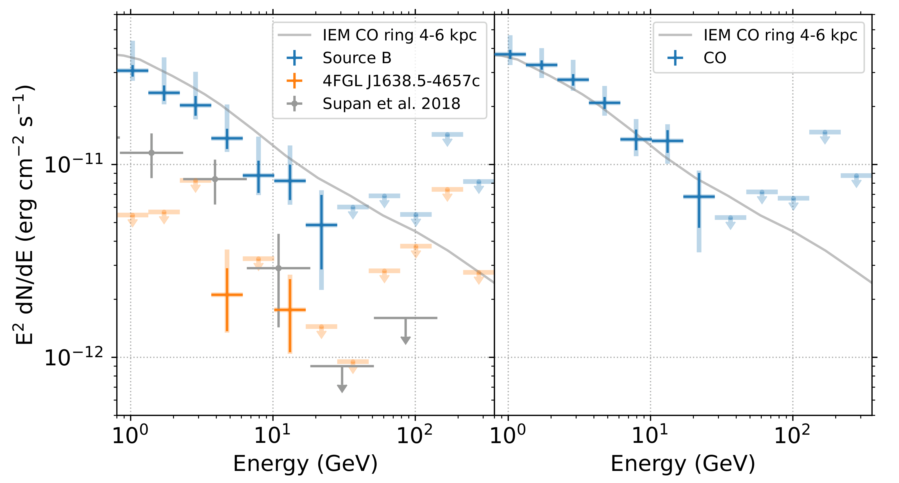
图注：SED of the sources in the region of \(\rightblob.\) Left panel: the pointlike source 4FGL~J1638.5$-$4657c and \(\rightblob\) in the model of \(\pbrv{\sect}\)~\(\ref{sec:geomodel}.\) Right panel: emission from the CO template in the model of \(\pbrv{\sect}\)~\(\ref{sec:ismmodel}.\) \(\irii{Solid error bars represent statistical uncertainties, while the semi-transparent bars show}\) the sum in quadrature of statistical and systematic uncertainties (see \(\pbrv{Appendix}\)~\(\ref{app:sysunc}\) for a description of systematic uncertainty sources considered). \(\irii{We show 95\% confidence-level upper limits}\) whenever the component has $\mathrm{TS}<9$ in the corresponding energy bin, or its estimated flux is consistent with zero within the $2\sigma$ statistical uncertainty. \(\irii{The upper limits shown are the most conservative for all model variations corresponding to different sources of systematic uncertainties.}\) The energy axis is truncated at 360~GeV because emission from these components is negligible at higher energies. We also include the SED of the interstellar emission model (IEM) CO component in the ring corresponding to Galactocentric radii from 4 to 6 kpc (kinematic range of \object{Kes 41}) in the square region shown in \(\pbrv{\fig}\)~\(\ref{fig:kes41_maps}\) and, in the left panel, the SED of the pointlike gamma-ray source associated to \(\object{Kes 41}\) from \(\citet{supanUnidentifiedGrayEmission2018}.\)
对应解读：对应“建议重点查看的图表”第5项每个扩展成分的谱能量分布，以及“关键图表逐图导读”图5中Kes 41/rightblob软谱、上限和系统误差的检查。
入选理由：该图给出Kes 41方向点源、rightblob和CO气体模板的SED，并同时显示统计误差、系统误差和95%置信上限，是判断该扩展成分是否确实软谱、是否主要由低能段驱动以及气体模板解释是否合理的关键谱学证据。
来源与置信度：\(arxiv_source\)；high；\(arxiv_source\) / ms.tex:figure[5]
Fig06
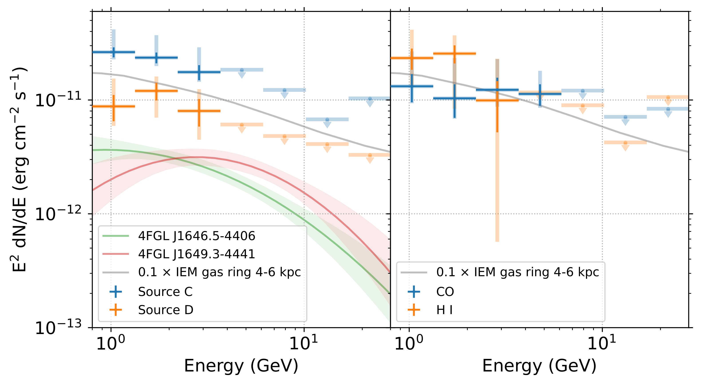
图注：SEDs of the extended sources in the region of \(\leftblob\) and \(\centerblob.\) Left panel: SEDs of \(\leftblob\) and \(\centerblob,\) modeled using disks in \(\pbrv{\sect}\)~\(\ref{sec:geomodel}.\) Right panel: SEDs of the CO and \(\hi\) templates from M3 in \(\pbrv{\sect}\)~\(\ref{sec:ismmodel}.\) See \(\pbrv{\fig}\)~\(\ref{fig:sedkes41}\) for explanations about the uncertainty bars. The energy axis is truncated at 28~GeV because emission from these components is negligible at higher energies. Furthermore, we show the SED of the interstellar emission model (IEM) gas components in the ring corresponding to Galactocentric radii from 4 to 6 kpc (kinematic range of the gas templates) in a square region from $l=338.4\degr$ to $341\degr$ and $b=-1\degr$ to $0.5\degr$, scaled by 10\% for easier visual comparison. In the left panel we also show the \(\irii{best spectral fit over the entire energy range with its statistical uncertainties for}\) the two unassociated sources that overlap with \(\leftblob\) 4FGL~J1649.3$-$4441 and 4FGL~J1646.5$-$4406 (labeled as 11 and 8, respectively, in \(\pbrv{\fig}\)~\(\ref{fig:mapunassoc}\) and~\ref{fig:shell_maps}).
对应解读：对应“建议重点查看的图表”第5项扩展成分SED、第6项系统误差/稳健性信息，以及“关键图表逐图导读”图5中Westerlund 1附近leftblob和centerblob软谱的讨论。
入选理由：该图展示leftblob和centerblob的圆盘模型SED，并与CO、H I模板SED及重叠未关联4FGL源的谱拟合作比较，带有统计与系统误差说明，可检验Westerlund 1附近两个扩展成分是否由多个能段支撑、是否与气体相关模板一致，以及是否可能替代未关联点源。
来源与置信度：\(arxiv_source\)；high；\(arxiv_source\) / ms.tex:figure[6]
强相关工作
这篇工作与大质量星团伽马射线研究直接相关，尤其是 Westerlund 1、Cygnus Cocoon、Westerlund 2、30 Doradus C 等系统中的扩展 GeV-TeV 辐射。相同类别的核心问题是：星团风和超泡能否维持足够的湍流与冲击来加速粒子，并使宇宙线在源附近呈现低扩散或非均匀输运。建议检索关键词包括 “Westerlund 1 gamma rays”, “massive stellar clusters cosmic ray acceleration”, “Cygnus Cocoon Fermi LAT”, “superbubble cosmic rays”, “collective stellar winds particle acceleration”。
它也与超新星遗迹-分子云相互作用研究相连，例如 W44、IC 443、W51C 等 GeV 谱中曾显示强子过程证据的系统。Kes 41 的情况更复杂，因为论文强调扩展成分与诞生云相关，但同时存在银河弥散背景建模不足的替代解释。建议检索关键词包括 “Kes 41 supernova remnant gamma rays”, “SNR molecular cloud pion decay”, “Fermi LAT unassociated Galactic sources diffuse model systematics”。
相反观点或张力主要来自弥散模型系统误差派：在银河面高气体柱密度区，任何未正确建模的 H I 自吸收、CO-to-\(\mathrm{H}_2\) 转换因子、暗气体、宇宙线梯度或反康普顿成分，都可能制造软谱扩展残差。因此这篇论文应与 Fermi-LAT 银河弥散模型、源表构建和未关联源分类工作一起读，而不是孤立地作为“发现三个新加速器”的论文来读。
同一事件 / 同类源线索：
相似工作：
基础理论 / 方法工作：
相反观点 / 张力线索：
3. Hadronic origin of gamma rays and neutrinos from blazars: Multi-messenger implications and observational constraints
- 来源：arXiv / astro-ph.HE
- 链接：https://arxiv.org/abs/2609.10128v1
- 作者：Rodrigo Sasse, Rita de Cássia dos Anjos
- 评分：novelty 7/10，importance 7/10，relevance 10/10，final 9.05/10
- 推荐理由：Blazar hadronic/UHECR scenario linking gamma rays, neutrinos, and CTAO forecasts; highly relevant to TeV gamma-ray astronomy and multi-messenger source constraints.
中文题目：耀变体中伽马射线和中微子的强子起源：多信使含义与观测约束
做了什么：这篇文章问的是：如果若干邻近、可能“中微子亮”的耀变体确实在大尺度喷流中加速超高能宇宙线，那么这些宇宙线在传播中产生的级联伽马射线和中微子，会不会已经在多波段能谱中留下可见信号？作者选取 \(\mathrm{AP\ Librae}\)、\(\mathrm{TXS\ 1700+685}\)、\(\mathrm{PKS\ 2326-502}\) 和 \(\mathrm{PKS\ 2345-16}\) 四个近邻候选源，用“不超过已有多波段观测”的条件约束超高能宇宙线光度，并把宇宙线放进现实的银河系和河外磁场中传播，再预测 \(\mathrm{CTAO}\) 的 \(50\) 小时观测能否分辨相应成分。主要结论是：传播产生的宇宙源伽马射线在总伽马辐射中最多只占约 \(7.5\%\)，难以主导 \(\mathrm{SED}\)；但伴随中微子光度可达约 \(10^{44}\) 到 \(10^{46}\,\mathrm{erg\ s^{-1}}\)，更像是强子加速的稳健传播指纹。
为什么重要：耀变体强子模型长期有一个关键困难：能产生高能中微子的强子过程往往也会产生电磁级联，若处理不好就会超过射电到伽马射线的观测。本文把这个问题放在“传播后”的多信使框架中检验，而不是只在源内调参，因此直接触及耀变体是否能作为超高能宇宙线源的可检验性。
理论 / 观测 / 仪器方法价值：对理论的价值在于把大尺度喷流加速、宇宙线传播、宇宙背景光相互作用、磁场偏折和电磁级联连成同一约束链。对观测的价值在于给出 \(\mathrm{CTAO}\) 级别甚高能伽马观测能否重建内禀谱、约束强子成分的预期。对方法的价值在于使用“不能超过已有 \(\mathrm{SED}\)”作为保守上限，再用模拟观测评估未来可判别性。
为什么应该关注：如果你关心的是“中微子耀变体”到底是不是一个真实源类，这篇文章值得看，因为它没有把中微子和伽马射线孤立讨论，而是追问同一批超高能质子在传播中必然带来的副产物是否与数据相容。即使最后伽马成分很小，这个“小”本身也很重要：它说明 \(\mathrm{CTAO}\) 可能更多是在排除或限制强子传播成分，而中微子仍可能是更直接的强子加速证据。
展开详细解读：文章讲解、背景、理论、重点章节、图表与相关工作
文章详细讲解
科学问题：本文关注的是耀变体喷流中是否存在足够强的强子加速，使其既能产生可观测的高能中微子，又不违反电磁波段的观测限制。传统耀变体 \(\mathrm{SED}\) 常用轻子模型解释，从同步辐射到逆康普顿散射可以较自然地拟合双峰结构；但一旦把超高能宇宙线引入喷流，就不可避免地产生光介子、贝特-海特勒对产生、核子传播损失和电磁级联。问题不是“能不能调出一个中微子通量”，而是“在已有射电、\(\mathrm{X}\) 射线、\(\gamma\) 射线数据都不被超过的条件下，强子贡献还能有多大”。
作者怎么做：文章选取四个近邻且在已有模型中被认为中微子较亮的耀变体：\(\mathrm{AP\ Librae}\)、\(\mathrm{TXS\ 1700+685}\)、\(\mathrm{PKS\ 2326-502}\) 和 \(\mathrm{PKS\ 2345-16}\)。作者假设超高能宇宙线在光学薄的大尺度喷流中加速，然后通过真实化的银河系与河外磁场传播。传播中宇宙线与宇宙微波背景、河外背景光等发生相互作用，产生宇宙源伽马射线和中微子。超高能宇宙线光度不是任意调高，而是受“总辐射不能超过已有多波段观测点”的条件限制。
关键结果：在这些约束下，宇宙源伽马射线在最高能端的贡献最多约为总伽马辐射的 \(7.5\%\)，因此不会成为四个源 \(\mathrm{SED}\) 的主导成分。这一点对强子模型并不完全是坏消息：它意味着现有 \(\gamma\) 射线数据没有看到显著强子级联成分，并不必然排除源内超高能宇宙线加速；相反，伴随中微子光度达到约 \(10^{44}\) 到 \(10^{46}\,\mathrm{erg\ s^{-1}}\)，在多信使意义上更能代表强子传播的特征信号。作者还模拟了 \(50\) 小时 \(\mathrm{CTAO}\) 曝光，认为该设施可较好重建内禀伽马谱，从而把强子传播成分压缩到更窄参数空间。
局限和下一步：本文的结论依赖源模型、最大加速能量、注入谱、喷流区位置、磁场模型、河外背景光模型和现有 \(\mathrm{SED}\) 数据的非同时性。尤其是耀变体高度变源，若把不同时期数据拼成 \(\mathrm{SED}\)，用“不超过数据”来限制强子光度时会有保守但复杂的系统误差。下一步需要把同步多波段观测、\(\mathrm{IceCube}\) 或下一代中微子望远镜的方向事件、以及 \(\mathrm{CTAO}\) 的时间分辨甚高能谱结合起来，检验强子信号是否随耀变体态变化而改变。
关键结果是怎么做出来的
样本选择上，本文不是做全天统计，而是聚焦四个近邻且在 Rodrigues \(2024\) 模型框架中具有较高中微子预期的耀变体。这样的选择有两个后果：第一，近邻源的宇宙源伽马射线受河外背景光吸收相对较少，更适合用 \(\mathrm{CTAO}\) 检验；第二，样本量只有 \(4\) 个，结论更像是物理可行性与观测判别能力研究，而不是耀变体总体种群结论。
核心约束链是先设定超高能宇宙线注入，再让粒子在银河系与河外磁场中传播，并计算传播诱发的伽马射线和中微子。每个源的超高能宇宙线光度通过 \(\mathrm{SED}\) 上限约束：模型的轻子背景、传播级联伽马成分与其他辐射总和不能超过已有多波段数据。这个步骤等价于给 \(L_{\mathrm{UHECR}}\) 一个观测允许上限，而不是任意要求其解释全部 \(\gamma\) 射线。
最重要的数值结果是，宇宙源伽马射线在最高能条件下对总伽马辐射的贡献至多约 \(7.5\%\)。这里的“最高能”与文摘中提到的 \(10^{20}\,\mathrm{eV}\) 相关，实际要读论文图表时应检查该比例是按积分通量、能量通量还是某个能段的 \(\nu F_{\nu}\) 比值定义。若这个比例出现在 \(\mathrm{SED}\) 高能端，读者应重点看模型线是否只是贴近误差棒上沿，还是在多个能点同时受限。
中微子结果的证据链则不同。因为中微子不参与电磁级联，也不受河外背景光吸收，传播损失和方向偏折对其影响较小，所以在给定强子注入下，中微子光度约 \(10^{44}\) 到 \(10^{46}\,\mathrm{erg\ s^{-1}}\) 更像是强子加速的稳健输出。读者应检查文中是否给出不同源之间的中微子谱峰、积分通量、与 \(\mathrm{IceCube}\) 灵敏度或事件率的对应关系；若只有光度而没有探测事件数，结论应理解为“物理上可产生可观中微子”，而非“已被探测确认”。
\(\mathrm{CTAO}\) 预测部分的统计含义在于：作者用 \(50\) 小时曝光模拟未来甚高能观测，评估内禀伽马谱能否被准确重建，并进一步限制强子级联成分。读者应特别看模拟谱点的误差条、能量阈值、有效面积和背景处理假设。如果强子成分只有几个百分点，\(\mathrm{CTAO}\) 的价值可能不是直接“看到”该成分，而是在高能端把可容许的级联上限压低。
系统误差方面，最关键的是河外磁场、银河磁场、河外背景光模型、源红移、非同时 \(\mathrm{SED}\) 数据和本征轻子模型的不确定性。稳健性检验应包括改变磁场强度与相干长度、改变最大加速能量 \(E_{\max}\)、改变注入谱指数 \(s\)、以及对不同背景光吸收模型重复计算。若这些变化下 \(7.5\%\) 量级仍保持为上限而非主导成分，结论才更有说服力。
展开背景、理论、公式、模型、章节和图表导读
背景知识
耀变体是喷流几乎指向我们的活动星系核，强烈相对论性多普勒增亮使其成为高能天体物理中最亮、变化最快的源类之一。典型 \(\mathrm{SED}\) 呈双峰结构：低能峰通常归因于相对论电子同步辐射，高能峰可由同步自康普顿或外康普顿散射解释，也可由质子同步、光介子级联或混合轻子-强子模型解释。本文讨论的是后一类可能性中更宏观的一支：超高能宇宙线离开源后在传播中产生的宇宙源伽马射线和中微子。
历史上，耀变体作为超高能宇宙线源一直有吸引力，因为其喷流功率、相对论激波、磁重联或剪切加速都可能满足高能粒子加速条件。但难点也很明显：带电宇宙线在磁场中偏折，抵达地球时方向信息被洗掉；伽马射线会被河外背景光吸收并级联；中微子方向保真但事件数少、角分辨和背景处理困难。因此单信使很难定论，必须把 \(\gamma\) 射线、中微子和宇宙线传播放在一起看。
这个问题现在值得重新看，主要因为两个观测条件正在改善。第一，\(\mathrm{IceCube}\) 已经推动了“中微子耀变体”候选源研究，虽然单个源关联仍有统计争议，但多信使触发和源类叠加分析越来越成熟。第二，\(\mathrm{CTAO}\) 将在几十 \(\mathrm{GeV}\) 到数十 \(\mathrm{TeV}\) 能段提供更好的灵敏度、能谱重建和角分辨能力，正好覆盖电磁级联和河外背景光吸收共同塑造的能区。
领域中一个常见误区是把“强子模型”简单等同于“伽马射线应当由强子主导”。实际上，强子加速可以主要通过中微子和很小的电磁级联表现出来，尤其当源内环境光场稀薄、宇宙线逃逸效率高、传播磁场使级联扩展或延迟时，\(\gamma\) 射线成分可能只是上限约束而不是主要辐射机制。另一个误区是把非同时多波段 \(\mathrm{SED}\) 当成严格瞬时谱；对耀变体而言，这往往只能提供包络式约束。
本文的定位正处在这些问题的交汇处。它不试图用强子级联解释全部 \(\mathrm{SED}\)，而是问在已有数据允许的范围内，宇宙线传播能贡献多少 \(\gamma\) 射线和多少中微子。这种保守问题更适合指导未来观测：如果预期成分很小，\(\mathrm{CTAO}\) 的主要任务就是压低上限；如果某些源在高能端出现超出轻子模型的硬尾，则可作为强子传播候选信号进一步追踪。
基础理论 / 方法脉络
基础物理图像是：喷流中某种加速机制把质子或原子核加速到超高能，粒子逃逸后穿过宿主星系、星系际空间和银河系。传播过程中，它们会与宇宙微波背景和河外背景光相互作用，产生 \(e^{\pm}\)、\(\gamma\) 射线和中微子。带电粒子受磁场偏折，电磁级联受吸收和再辐射影响，而中微子几乎直线传播，因此三种信使携带的是同一物理过程的不同投影。
本文采用的关键假设之一是加速发生在光学薄的大尺度喷流中。光学薄意味着源内高能 \(\gamma\) 射线和宇宙线不被强烈吸收，宇宙线可以有效逃逸。大尺度喷流假设则减轻了紧凑区强辐射场导致的过量级联问题，但也要求加速区有足够大的尺度和磁场以满足希拉斯条件。于是最大能量 \(E_{\max}\)、磁场 \(B\)、加速区尺度 \(R\) 和粒子电荷 \(Z\) 成为关键量。
观测上，\(\mathrm{SED}\) 通常以 \(\nu F_{\nu}\) 或 \(E^{2}\Phi(E)\) 表示，比较的是每个能段单位对数频率或能量的能量通量。本文将传播级联产生的 \(\gamma\) 射线叠加到已有辐射成分上，并要求总模型不超过多波段观测。这个判断看似简单，但实际受非同时观测、仪器交叉定标、河外背景光吸收、内禀谱形选择和变源态影响。
\(\mathrm{CTAO}\) 预测的基本逻辑是把模型光子谱通过仪器响应函数变成预期计数，再与背景计数比较，估计在 \(50\) 小时曝光下可否重建谱形或排除额外强子成分。关键量包括有效面积 \(A_{\mathrm{eff}}(E)\)、能量分辨率、点扩展函数、背景率、观测时间 \(T\) 和能量分箱。若强子级联只占几个百分点，系统误差和本征轻子模型退化就可能比统计误差更重要。
常见退化包括：较硬的轻子逆康普顿尾可模拟弱级联成分；不同河外背景光模型可改变 \(\mathrm{TeV}\) 吸收强度；河外磁场会影响级联角扩展和时间延迟；源的多普勒因子与内禀光度之间也有退化。因而本文的结论应理解为在特定传播和源模型族下的可允许强子贡献，而不是对所有强子模型的一刀切排除。
公式与推导
第一步是从喷流能量供给与宇宙线注入谱写起。常用的超高能宇宙线注入可表示为
其中 \(Q_{\mathrm{CR}}(E)\) 是单位能量、单位时间的注入率，\(Q_{0}\) 是归一化，\(s\) 是谱指数，\(E_{0}\) 是参考能量，\(E_{\max}\) 是最大能量。本文所说约束 \(L_{\mathrm{UHECR}}\) 本质上就是约束这个注入谱的归一化。
第二步把注入谱归一化到宇宙线光度：
这里 \(E_{\min}\) 和 \(E_{\max}\) 给出超高能宇宙线能段边界。若 \(s\) 变硬或 \(E_{\max}\) 增大，在固定 \(L_{\mathrm{UHECR}}\) 下高能端粒子数会显著变化，从而改变传播中光介子过程和中微子产额。
第三步是最大加速能量的希拉斯尺度限制：
其中 \(Z\) 是电荷数，\(e\) 是元电荷，\(B\) 是加速区磁场，\(R\) 是加速区尺度，\(\beta c\) 是散射中心或流体速度。大尺度喷流模型的吸引力在于 \(R\) 较大，有机会把质子推到 \(10^{20}\,\mathrm{eV}\) 附近。
第四步考虑传播相互作用的能量损失。对宇宙线能量 \(E\)，可写成
其中 \(b_{\mathrm{ad}}\) 是宇宙学绝热损失，\(b_{\mathrm{BH}}\) 是贝特-海特勒对产生损失，\(b_{p\gamma}\) 是光介子损失，\(z\) 是红移。这一式说明传播产物的强弱不仅由源光度决定，也由背景光场和距离决定。
第五步，光介子反应给出中微子与伽马射线的共同来源，阈值近似为
其中 \(E_{p}\) 是质子能量，\(\epsilon\) 是背景光子能量，\(\theta\) 是碰撞角。超过阈值后，\(p\gamma\) 过程产生带电和中性介子，带电介子衰变给出中微子，中性介子衰变给出 \(\gamma\) 射线。
第六步，把传播产生的光子转成地球观测通量。若源的光子光度谱为 \(L_{\gamma}(E_{\mathrm{em}})\)，则
其中 \(d_{L}\) 是光度距离，\(E_{\mathrm{em}}=(1+z)E\) 是发射能量，\(\tau_{\gamma\gamma}\) 是河外背景光导致的双光子吸收光深。本文的“不能超过 \(\mathrm{SED}\)”就是对这个通量加上其他辐射分量后的约束。
第七步，中微子通量没有对应的强吸收因子，可近似写成
这里 \(L_{\nu}\) 是中微子光度谱。由于没有 \(\exp[-\tau_{\gamma\gamma}]\) 这样的衰减项，中微子更直接追踪强子相互作用总产额，但探测端事件率较低。
第八步，把 \(\gamma\) 射线模型与 \(\mathrm{CTAO}\) 观测连接起来。能量分箱 \(i\) 内的预期源计数为
其中 \(T\) 是曝光时间，\(A_{\mathrm{eff}}(E)\) 是有效面积，\(R_{i}(E)") 是能量响应或迁移概率。实际分析还要加入背景计数 \(\mu_{i}^{\mathrm{bkg}}\)。)
第九步，谱重建或模型比较可用泊松似然表示：
其中 \(n_{i}\) 是观测计数，\(\mu_{i}=\mu_{i}^{\mathrm{src}}+\mu_{i}^{\mathrm{bkg}}\) 是总预期计数。比较含强子级联和不含强子级联的模型时，可用
作为检验统计量。若系统误差较小，\(\mathrm{TS}\) 的大小可近似反映额外强子成分的可辨认度；若系统误差主导，则需要把仪器响应和背景归一化作为 nuisance 参数。
模型拟合 / 应用方法
本文这类工作实际拟合或约束的核心参数是超高能宇宙线注入归一化，也就是 \(L_{\mathrm{UHECR}}\)，以及与之相关的注入谱指数 \(s\)、最大能量 \(E_{\max}\)、组成 \(Z\)、源距离和喷流参数。由于文摘强调用“不超过多波段数据”约束，拟合思想更接近上限估计：在给定轻子或基准 \(\mathrm{SED}\) 模型下逐步提高强子传播成分，直到某些能段触及观测上界。
统计上，若有实际 \(\mathrm{SED}\) 点和误差棒，最直接的方法是构造 \(\chi^{2}\) 或高斯似然；对于 \(\gamma\) 射线计数谱，尤其是 \(\mathrm{CTAO}\) 模拟，泊松似然更自然。拟合量可以是各能段通量、能量通量或折叠仪器响应后的计数。读者应注意作者是否在源模型空间中重新拟合轻子成分，还是把轻子背景固定后只添加强子级联；二者给出的强子上限可能差别很大。
残差诊断上，最值得看的是高能 \(\mathrm{GeV}\) 到 \(\mathrm{TeV}\) 段。若含强子模型只在最高能一个点改善拟合，而在其他能段造成系统性正残差，那么强子成分很可能只是被上限压住；若它能解释连续硬尾且不破坏低能谱，则物理意义更强。对于 \(\mathrm{CTAO}\) 模拟，还要看重建谱点相对于输入模型的偏差是否小于统计误差，以及能量迁移是否会把吸收截断误认为本征弯曲。
主要退化包括 \(L_{\mathrm{UHECR}}\) 与 \(E_{\max}\) 的退化、注入谱硬度与中微子产额的退化、河外背景光吸收与内禀谱软化的退化、以及河外磁场与级联角扩展的退化。如果河外磁场较强，部分级联光子可能形成扩展晕或时间延迟，点源分析会低估总电磁级联；如果磁场较弱，级联更接近视线方向，点源 \(\gamma\) 约束更强。
模型可能失败的场景也很清楚。若未来同步 \(\mathrm{CTAO}\) 数据显示高能谱已经被纯轻子模型精确解释且剩余空间远小于几个百分点，本文允许的强子传播分量将被进一步压低。相反，若未来中微子方向事件与这些源出现时间或方向相关，而 \(\gamma\) 射线仍无明显级联增强，则需要重新审视源内吸收、宇宙线逃逸和中微子产生区是否与大尺度喷流假设一致。
实际应用上，这种模型框架适合为目标源排序：哪些源近、背景低、\(\mathrm{SED}\) 高能端误差小、中微子预期高，就优先用 \(\mathrm{CTAO}\) 深曝光。它也适合设计联合似然，把 \(\gamma\) 射线谱点、中微子事件方向概率和宇宙线传播模拟的先验合并，给出比单一波段更有物理约束力的结论。
重点章节 / 结果段落怎么读
-
数据和样本部分应先看四个源的选择理由。重点确认 \(\mathrm{AP\ Librae}\)、\(\mathrm{TXS\ 1700+685}\)、\(\mathrm{PKS\ 2326-502}\)、\(\mathrm{PKS\ 2345-16}\) 的红移、多波段数据覆盖、是否有既有中微子亮度预测，以及观测点是否同时期。样本小，所以每个源的个别性质都会影响结论。
-
源模型和宇宙线注入部分应关注大尺度喷流、光学薄环境、注入谱、最大能量和宇宙线组成。这里决定了 \(L_{\mathrm{UHECR}}\) 如何转化为传播产物。若作者只采用质子组成，与包含重核的情形相比，中微子和级联产额会不同。
-
传播模拟部分应重点读磁场与背景光模型。银河系磁场影响到达方向和视线传播，河外磁场影响级联的角扩展和时间延迟；河外背景光决定 \(\mathrm{TeV}\) 吸收。读者应检查这些模型是否做了参数变化，还是只采用一个基准配置。
-
\(\mathrm{SED}\) 约束和主要结果部分是全文核心。读者应看每个源的模型线是否在多波段数据内，强子级联在哪些能段接近上限，以及“最多 \(7.5\%\)”是四源中的最大值还是某个极端参数点。中微子光度范围 \(10^{44}\) 到 \(10^{46}\,\mathrm{erg\ s^{-1}}\) 也应与源距离和可探测事件率对应起来看。
-
\(\mathrm{CTAO}\) 预测部分应看模拟曝光、仪器响应、背景处理和谱重建。\(50\) 小时是现实但偏深的曝光；如果强子成分只有几个百分点，结论对系统误差很敏感。读者应重点检查作者是否比较了含强子与不含强子的模型可区分度。
建议重点查看的图表
-
四个源的多波段 \(\mathrm{SED}\) 图：看观测点、轻子或基准模型、宇宙源伽马成分和总模型之间的相对位置，尤其是总模型是否贴着误差棒上沿。
-
宇宙源伽马贡献比例图或表：看约 \(7.5\%\) 的最大贡献出现在什么源、什么能段、什么 \(E_{\max}\) 或 \(L_{\mathrm{UHECR}}\) 设置下。
-
中微子光度或通量谱图：看 \(10^{44}\) 到 \(10^{46}\,\mathrm{erg\ s^{-1}}\) 对应的能量范围、谱峰位置，以及是否给出与 \(\mathrm{IceCube}\) 灵敏度或事件率的比较。
-
宇宙线传播与磁场影响图：若有到达方向、偏折角或级联角扩展图，应看银河系与河外磁场分别造成多大不确定性。
-
\(\mathrm{CTAO}\) 模拟观测图：看 \(50\) 小时曝光下重建谱点的误差条、能量阈值、最高能点显著性，以及输入模型和重建模型是否有系统偏差。
-
参数约束或稳健性表：看改变注入谱指数 \(s\)、最大能量 \(E_{\max}\)、背景光模型和磁场模型后，\(L_{\mathrm{UHECR}}\) 上限与中微子输出是否稳定。
关键图表逐图导读
图 1：通常应是样本源的 \(\mathrm{SED}\) 或源位置/基本性质汇总。若横轴是频率或能量，纵轴是 \(\nu F_{\nu}\) 或 \(E^{2}\Phi(E)\)，读者要区分观测点、上限箭头、轻子基准模型和强子传播成分。读图陷阱是把非同时多波段点当作同一物理态；对耀变体来说，这些点更像历史包络。
图 2：若展示宇宙线传播或级联伽马谱，横轴多半是 \(E\)，纵轴是通量或能量通量。模型线的高能衰减可能同时来自内禀截断和河外背景光吸收，不应简单解释为源内加速截止。应看强子级联线是否在 \(\mathrm{GeV}\) 到 \(\mathrm{TeV}\) 段形成硬尾，以及相对于总 \(\gamma\) 辐射的比例。
图 3：若展示中微子谱，重点看不同源的谱峰和归一化。中微子曲线若以全味或单味表示，数值会相差约因子 \(3\)，读者必须确认标注。若图中有 \(\mathrm{IceCube}\) 灵敏度或点源上限，注意比较的是瞬时通量、长期平均通量还是积分能量通量。
图 4：\(\mathrm{CTAO}\) 模拟谱图通常会把输入模型、重建谱点和误差条放在一起。横轴为重建能量，纵轴为差分通量或能量通量。应看最高能分箱是否仍有足够计数、误差条是否主要为统计误差、以及含强子与不含强子模型之间的差别是否大于仪器系统误差。
图 5：若有参数扫描或约束图，横轴可能是 \(L_{\mathrm{UHECR}}\)、\(E_{\max}\)、磁场强度或注入谱指数，纵轴是伽马贡献比例、中微子光度或似然差。关键是看允许区是否由某一个能段的 \(\mathrm{SED}\) 点决定；如果是，结论会对该点的变源态和定标误差很敏感。
表 1 或表 2：若列出源参数和结果，重点核对红移、光度距离、最大允许 \(L_{\mathrm{UHECR}}\)、最大伽马贡献比例和中微子光度。表格能帮助判断 \(7.5\%\) 是普遍上限还是个别源的最大值。
论文原图 / 可嵌入图片
Fig04
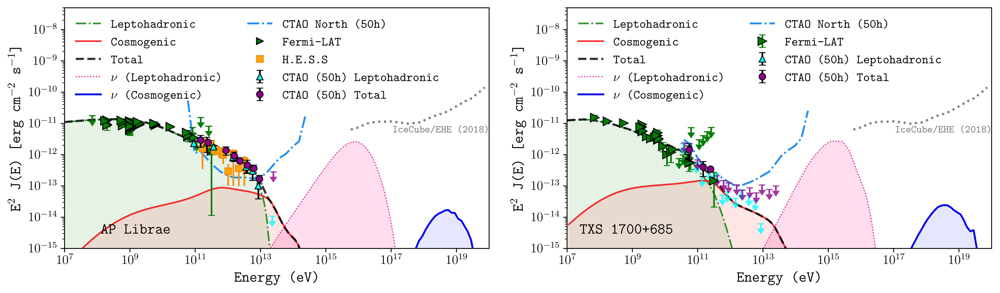
图注：AP Librae SED showing the combined leptohadronic modeling, cosmogenic flux predictions, and simulated CTAO performance. \(\textit{Fermi}-LAT\) points are green triangles and H.E.S.S. are orange squares. The dashed green line is the \(\citet{xrodrigues}\) leptohadronic model, and the pink line is its neutrino flux. The dashed black line is the Total model. Solid red and dark blue lines are the cosmogenic gamma-ray and neutrino fluxes ($E_{\mathrm{max}} = 10^{20}$~eV). The blue dash-dotted line is the 50~h CTAO sensitivity, with simulated flux points as cyan triangles/purple circles.
对应解读：对应“建议重点查看的图表”第1项多波段SED、第3项中微子光度或通量谱、第5项CTAO模拟观测图，以及“关键图表逐图导读”中关于SED、强子传播成分和CTAO重建谱点的解读。
入选理由：该图同时包含AP Librae的Fermi-LAT与H.E.S.S.观测点、轻子/轻强子基准模型、宇宙源伽马射线、宇宙源中微子、总模型以及50小时CTAO灵敏度和模拟谱点，是最直接支撑本文核心结论的综合图。它能检验强子级联是否超过多波段数据、宇宙源伽马贡献是否次主导，以及CTAO是否能约束高能端谱形。
来源与置信度：\(arxiv_source\)；high；\(arxiv_source\) / elsarticle-template-har.tex:figure[4]
Fig05
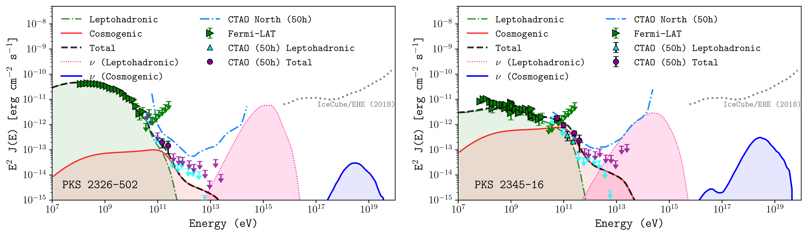
图注：PKS 2326-502 Multi-messenger SED following the same curve and marker conventions as panel (a), with the 50~h CTAO differential sensitivity computed for this specific source declination.
对应解读：对应“建议重点查看的图表”第1项四个源的多波段SED、第3项中微子通量谱、第5项CTAO模拟观测图，以及模型拟合段落中关于不同源高能端约束强弱的讨论。
入选理由：该图给出PKS 2326-502的多信使SED，并沿用Fig04的模型线和观测点约定，还包含按该源赤纬计算的50小时CTAO微分灵敏度。它适合与AP Librae对比，展示不同源距离、观测数据和CTAO响应下强子传播成分及中微子预测的差异。
来源与置信度：\(arxiv_source\)；high；\(arxiv_source\) / elsarticle-template-har.tex:figure[5]
Fig03
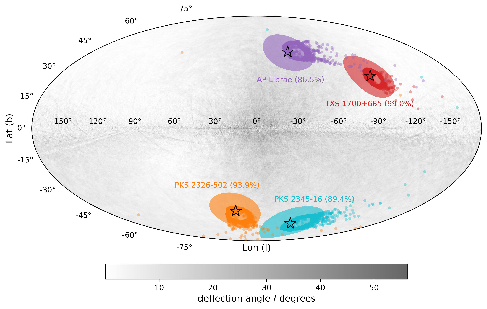
图注：All-sky map in Hammer projection showing the average angular deflection of protons produced by both the regular and turbulent components of the galactic magnetic field, modeled with the JF12 framework. The map is displayed in galactic coordinates, with the Galactic center located at $(\ell, b) = (0^{\circ}, 0^{\circ})$. Star symbols mark the positions of the candidate blazar sources, each identified by name. The colored contours represent the 95\% confidence regions derived from the backtracked arrival directions of simulated particles. The percentage given next to each source indicates the fraction of simulated protons that reach the observer within the corresponding confidence region.
对应解读：对应“建议重点查看的图表”第4项宇宙线传播与磁场影响图，以及详细解读中关于银河磁场导致到达方向偏折和不确定性的讨论。
入选理由：该图用全天图展示JF12银河磁场模型下质子的平均角偏折，并标出四个候选耀变体位置、95%置信区域和到达比例。它直接支撑文中关于真实银河磁场传播、到达方向扩展和点源关联不确定性的论述，是理解多信使方向关联可靠性的关键图。
来源与置信度：\(arxiv_source\)；high；\(arxiv_source\) / elsarticle-template-har.tex:figure[3]
Fig02
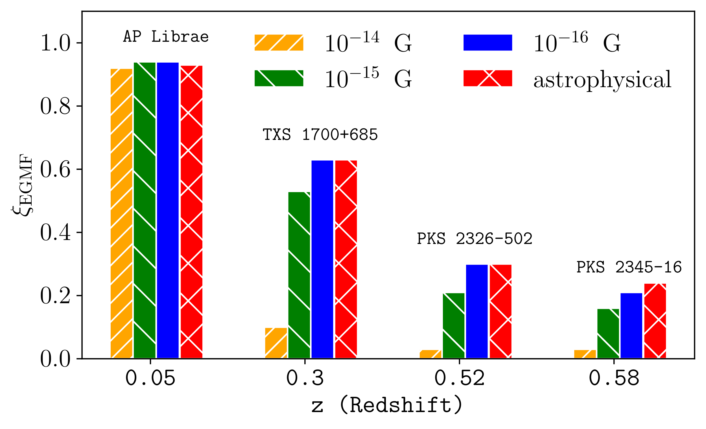
图注：Fraction of injected protons, $\xi_{\mathrm{EGMF}}$, that successfully reach the observer as a function of the comoving distance of the source. The simulations assume a cutoff energy of $E_{\mathrm{cut}} = Z \times 10^{20}$~eV. Results are shown for the Kolmogorov turbulent model with three field strengths ($B_{\mathrm{RMS}} = 10^{-14}$, $10^{-15}$, and $10^{-16}$~G) and for the \(\textit{astrophysical}\) MHD model.
对应解读：对应“建议重点查看的图表”第4项宇宙线传播与磁场影响图，以及模型拟合段落中关于河外磁场与级联角扩展、传播效率退化的讨论。
入选理由：该图显示不同河外磁场模型和场强下，注入质子成功到达观测者的比例随源共动距离的变化。它能说明河外磁场如何影响UHECR传播效率，从而影响可允许的UHECR光度、级联伽马约束和中微子传播信号。
来源与置信度：\(arxiv_source\)；high；\(arxiv_source\) / elsarticle-template-har.tex:figure[2]
Fig01
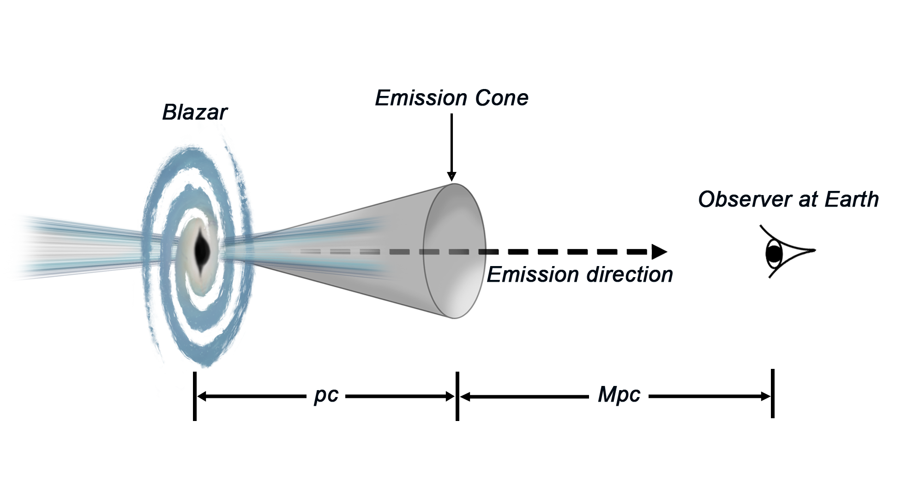
图注：Schematic representation of the simulation setup adopted for each blazar, placed at its corresponding distance from the observer on Earth. The emission cone indicates the jet direction and the line of sight along which the ultra high energy particles are injected and propagated. The opening angle of the emission cone, which defines the simulated beam geometry, varies between $0^{\circ}$ and $1^{\circ}$ depending on the source distance.
对应解读：对应详细解释中“作者怎么做”部分关于四个耀变体、喷流视线注入、源距离和模拟束几何的说明。
入选理由：该图是模拟设置示意图，展示每个耀变体相对地球的距离、喷流方向和注入锥角。虽然不包含SED、残差或CTAO谱点等核心诊断量，但有助于读者理解后续传播模拟的几何假设和源距差异。
来源与置信度：\(arxiv_source\)；high；\(arxiv_source\) / elsarticle-template-har.tex:figure[1]
强相关工作
这篇工作与 \(\mathrm{TXS\ 0506+056}\) 相关研究属于同一“中微子耀变体”大背景，但本文对象不是 \(\mathrm{TXS\ 0506+056}\)，而是四个近邻中微子亮候选耀变体。应把它看成同类源、多信使传播建模和未来 \(\mathrm{CTAO}\) 可检验性的研究，而不是某个已确认中微子事件的后随观测论文。检索关键词可用 “hadronic blazar neutrino UHECR propagation cosmogenic gamma rays CTAO AP Librae” 和 “neutrino bright blazars Rodrigues 2024”。
相似工作包括 \(\mathrm{IceCube}\) 对 \(\mathrm{TXS\ 0506+056}\) 的关联论文、耀变体强子模型综述、超高能宇宙线源传播模拟、以及 \(\mathrm{CTA}\) 对活动星系核甚高能谱的性能预测。相反或存在张力的观点主要来自纯轻子模型：许多耀变体 \(\mathrm{SED}\) 可由同步自康普顿或外康普顿很好解释，不需要强子能量预算；同时，一些强子模型要求喷流功率过高，甚至超过爱丁顿量级。本文的结果实际上缓和了部分张力，因为它允许强子加速存在但不要求其主导伽马 \(\mathrm{SED}\)。
同一事件 / 同类源线索：
相似工作：
基础理论 / 方法工作：
相反观点 / 张力线索：
4. Wide Field Localization Using Fixed Modulation Collimators
- 来源：arXiv / astro-ph.HE
- 链接：https://arxiv.org/abs/2609.10384v1
- 作者：Steven E. Boggs
- 评分：novelty 8/10，importance 7/10，relevance 9/10，final 9.00/10
- 推荐理由：GRB hard-X/soft-gamma wide-field localization concept with no moving parts; directly relevant to high-energy transient and multi-messenger instrumentation, with potentially reusable detector architecture.
中文题目：用固定调制准直器实现宽视场定位
做了什么：这篇文章提出一种没有转动部件的硬 X 射线/软伽马射线宽视场定位方案，目标是快速、连续地定位伽马暴等瞬变源。核心做法是把传统旋转调制准直器中的时间调制，改成多个固定相位偏移的双栅准直器同时测量：源的离轴角会在双栅透过率中留下周期性三角条纹，相位可由四相计数解调得到；由于条纹有周期性，单个栅距会给出多个候选位置，作者再用逐级更粗栅距的游标级联来消除多解。重要结论是，这种架构可以在任意宽视场内用简单计数探测器实现二维定位，且四相解调能抵消背景和栅漏，游标级联能降低达到精细角分辨率所需的光子数和栅标定精度。
为什么重要：伽马暴、多信使触发源和其他高能瞬变的科学回报高度依赖快速、可靠、全天候定位。传统成像方案如编码孔径需要较大探测面和复杂重建，旋转调制准直器需要机械运动或时间调制，不适合所有快速瞬变。本文的重要性在于把调制准直器定位问题重写为固定阵列的相位测量问题，试图用低成本、低复杂度硬件填补宽视场连续监测和较好角定位之间的空隙。
理论 / 观测 / 仪器方法价值：对仪器方法的价值最直接：它给出一种可扩展的固定双栅、多相读出、游标级联架构，可作为小卫星或分布式瞬变监测器的候选设计。对观测的价值在于，若工程实现可行，它能为伽马暴、磁星耀发、引力波电磁对应体搜索提供更快的初始定位。对理论和数据分析的价值在于，论文把定位精度、光子统计、背景抵消、相位混叠和多级消歧之间的关系形式化，便于做任务概念设计和灵敏度预算。
为什么应该关注：如果你关心高能时域天文，这篇文章值得看，因为它讨论的不是某个特定探测器的小修小补，而是一种可能改变触发定位硬件复杂度的架构。它也提醒我们：宽视场定位的瓶颈不只是探测面积和角分辨率，还包括相位多解、背景稳定性、栅几何标定和实时判别算法。即使最终设计未必按本文方案实现，里面的四相解调和游标级联思想也可迁移到其他非成像或弱成像高能仪器。
展开详细解读：文章讲解、背景、理论、重点章节、图表与相关工作
文章详细讲解
科学问题：硬 X 射线和软伽马射线的瞬变源定位一直处在一个尴尬区间。低能 X 射线可以用聚焦望远镜或编码孔径获得较好图像，高能伽马射线可以用多探测器相对计数率或康普顿事件重建给出较粗位置；但在几十 \(\mathrm{keV}\) 到 \(\mathrm{MeV}\) 附近，若要连续监测大天区并在短时间内给出精细定位，探测器面积、遮罩尺寸、背景、读出复杂度和机械可靠性都会迅速变成限制。本文问的是：能否不用旋转、不用真正成像探测器，只用固定栅格和简单计数器，在宽视场内恢复源方向？
作者怎么做：论文从双栅调制准直器出发。两片对齐的周期性狭缝栅格放在非成像计数探测器前，离轴点源穿过两片栅后，其透过率随入射角呈周期性三角形条纹。传统旋转调制准直器通过转动栅格让计数率随时间变化，再反演源方向；本文改用多个相同栅距但相对相位固定错开的栅对，同时测量四个相位点的计数率。这样可以从同时计数中解出条纹相位，而不是等待机械旋转产生时间序列。
关键结果：四相解调的一个核心优点是，若四个通道共享同类背景和栅漏项，适当的计数差分能抵消这些加性项，只保留与源调制相位有关的分量。单级双栅只能测到相位，而相位在天空上周期重复，会导致很多候选方向。为了解决这一点，作者引入逐级更粗栅距的级联，类似游标尺：粗级给出大尺度区间，细级给出高精度相位，多级组合后在很宽视场内确定唯一方向。论文还把这种一维思想推广到二维，用正交级联分别测量两个角坐标。
局限和下一步：这是一篇方法和架构论文，重点是几何调制、相位解调和级联消歧的原理，而不是一台已建成仪器的实测性能。真正任务设计还需要处理栅片制造误差、热变形、准直器厚度和高能穿透、探测器非均匀性、离轴有效面积、多个同时源、地球反照和粒子背景等问题。下一步应是端到端蒙特卡洛和硬件原型：把源光谱、背景场、探测器响应、触发时间尺度、栅校准误差和实时定位算法放在一起，检验本文的相位精度和游标消歧在真实条件下是否保持稳健。
关键结果是怎么做出来的
本文最重要的证据链不是来自某个观测样本，而是来自一个可计算的仪器定位模型。样本对象可理解为单个短时点源事件，例如伽马暴，在给定时间窗内每个栅对记录一个总计数。作者关心的“事件数”对应每个相位通道的源计数与背景计数，而不是天体样本量。读者应把论文中的计数模型看成定位性能预算：在源总光子数固定时，四相通道如何给出相位估计，级联栅距如何把相位估计转化为唯一角位置。
核心统计量是相位不确定度。四相解调把四个固定相位偏移的计数率组合成两个近似正交的调制分量，然后用反正切得到条纹相位。若计数服从泊松统计，相位误差随调制振幅和源计数增加而减小，随背景和栅漏增加而变大。论文的关键主张是：由于背景和栅漏以共同偏置形式进入四相计数，差分组合能在一阶上消掉这些项，因此相位估计对慢变背景不需要像单通道时间调制那样敏感。
消歧部分的证据链来自游标级联。细栅级给出高精度但周期重复的相位，粗栅级给出较少重复甚至唯一的粗位置。逐级组合时，上一层的粗定位只需足够好到能选中下一层正确周期分支，而不必达到最终角分辨率。因而与只靠一组极细栅在全视场内定位相比，级联设计把高精度任务和宽视场唯一性任务分开，降低了每一级对光子数和几何标定的苛刻要求。
显著性或置信度在这类论文中应理解为定位误差椭圆和分支误判概率，而非天体发现显著性。读者需要检查作者如何从泊松计数传播到相位误差，再从相位误差传播到角误差；还要检查相邻游标分支之间的相位间隔是否远大于误差。若论文给出示意图或性能曲线，最关键的是看定位精度随总源计数、背景水平、栅距比、级数和视场宽度的标度关系，而不是只看某个理想参数点。
主要系统误差包括栅距误差、栅相位偏置、栅片相对平移、探测器增益或效率非均匀、准直器透光不完全、狭缝边缘厚度导致的能量依赖透过率，以及离轴角大时投影几何偏离小角近似。稳健性检验应包括改变背景强度、加入通道间不等效率、模拟不同源光谱和入射角、测试多个同时源或扩展背景结构，并检查四相抵消是否仍成立。
展开背景、理论、公式、模型、章节和图表导读
背景知识
调制准直器的思想早于现代大面积位置灵敏探测器。它利用空间遮挡图案把源方向编码为计数率调制：源从不同角度入射时，前后栅格的狭缝重合程度改变，探测器收到的通量随角度周期变化。历史上，类似技术曾用于早期 X 射线源定位，也启发了后来的旋转调制准直器和傅里叶成像方法。
伽马暴定位对这类方法特别有吸引力。伽马暴发生时间不可预知、持续时间从毫秒到数百秒不等，而且科学价值常常取决于几分钟内是否能把位置发给地面和其他望远镜。若定位误差太大，后续光学、红外、射电或引力波联合搜索会被大量候选源淹没；若仪器视场太小，则大多数事件根本不会被捕获。
现有路线各有代价。编码孔径成像能在硬 X 射线提供可靠位置，但遮罩与探测器间距、探测器像素化和视场要求使系统复杂度上升。Fermi GBM 这类多探测器计数率定位视场大，但角精度通常受探测器响应矩阵和背景建模限制。康普顿望远镜能利用事件运动学重建方向，但需要多层探测器和复杂事件筛选。本文想探索的是另一端：牺牲传统成像，保留方向相位信息，用简单读出换取部署便利。
现在重新看固定调制准直器有现实动机。小卫星平台、低功耗读出、批量制造栅片和快速 onboard 计算的发展，使得多个固定相位通道和多级栅阵列变得更可行。同时，多信使天文学需要更密集的高能监测网络，而不是少数大型平台独占触发能力。一个无运动部件、可模块化复制的定位单元，如果性能足够，将很适合星座化部署。
常见误区之一是把“非成像探测器”理解为只能做粗略定位。实际上，只要遮挡结构给入射角留下可测相位，非成像计数也可以携带高精度角信息。另一个误区是只看细栅的名义角周期，忽略相位混叠；细条纹可以给很小统计误差，但如果不知道落在哪个周期，宽视场定位仍然失败。本文的游标级联正是针对这个混叠问题。
基础理论 / 方法脉络
基本物理图像很简单：准直器不是聚焦光子，而是有选择地让某些方向的光子通过。若两片周期性狭缝栅相隔一定距离，来自离轴方向的平行光束在第二片栅上的投影相对第一片平移。这个平移量与入射角成正比，狭缝重合面积随平移周期性变化，于是探测器计数率包含一个与方向相关的调制相位。
对一维双栅而言，关键量包括栅距、两栅间距、开口函数、源通量、背景计数率和调制可见度。理想薄栅、小角度、单点源条件下，方向角可映射为条纹相位；真实仪器中，有限栅厚、高能穿透、边缘散射和离轴投影会降低调制可见度，并引入能量依赖响应。本文为了建立架构原理，强调周期相位和多级消歧，而不是完整材料输运。
四相解调的思想来自锁相测量。若有四个相同栅距的通道，相位分别偏移 \(0\)、\(\pi/2\)、\(\pi\)、\(3\pi/2\)，那么相对的两个通道相减给出一个正交分量，另一对相减给出另一个正交分量。共同背景、探测器暗计数和栅漏若在四通道中近似相等，就会在差分中消失。这样得到的相位是瞬时测量，不需要源亮度在旋转周期内保持稳定。
相位测量本身不等于唯一定位。因为条纹周期重复，某个相位对应一串角位置。游标级联通过不同栅距提供不同周期的相位约束：粗栅周期大、混叠少但精度低；细栅周期小、精度高但混叠多。只要相邻级的误差小于分支间隔的一部分，就能逐级选择正确周期，最后达到细栅给定的角精度。
二维推广可用两组正交栅级联分别测量两个方向余弦。实际宽视场中，两个角坐标并不总是严格可分，因为投影几何、探测器平面坐标、入射能谱和有效面积都会耦合。因此工程实现需要把一维相位模型嵌入二维响应函数，用校准源或仿真建立从天空方向到多通道期望计数的响应矩阵。
公式与推导
第一步是把源方向转为双栅相对投影位移。设两栅间距为 \(L\)，一维入射角为 \(\theta\)，小角近似下投影平移为
这里 \(\Delta x\) 是前后栅开口图案的相对位移；该式要求 \(\theta\) 不太大、光线近似平行、栅片可视为薄屏。
第二步定义条纹相位。若栅距为 \(p\)，相位可写为
其中 \(\phi_{0}\) 是机械装配或通道设计给定的零点相位。单级测到 \(\phi\) 只能确定 \(\theta\) 模 \(p/L\) 的值。
第三步写出理想四相通道计数模型。对第 \(j\) 个相位通道，设设计相位偏移为 \(\delta_{j}\)，源计数归一化为 \(S\)，背景和漏光为 \(B\)，调制可见度为 \(V\)，则
这里 \(\mu_{j}\) 是期望计数，实际观测 \(n_{j}\) 通常服从泊松分布；\(V=0\) 表示没有方向信息，\(V=1\) 是理想最大调制。
第四步使用四相差分。取 \(\delta_{j}=0,\pi/2,\pi,3\pi/2\)，定义
在四通道背景相同的理想情况下，\(B\) 和未调制的 \(S\) 项相消，得到 \(X\approx2SV\cos\phi\)、\(Y\approx2SV\sin\phi\)。
第五步恢复相位和调制幅度：
其中 \(\hat{A}\) 估计 \(SV\)。这一步说明定位问题被转化为复平面相位估计；如果源亮度变化在四通道同时发生，它主要改变半径而非角度。
第六步估计相位统计误差。泊松近似下，若四通道总噪声方差相近且背景为 \(B\)，相位误差的标度可写为
这个式子强调提高源计数 \(S\)、提高可见度 \(V\)、降低背景 \(B\) 都能改善相位测量。
第七步把相位误差传播为角误差。由 \(\phi=2\pi L\theta/p\) 得
细栅距 \(p\) 和大基线 \(L\) 可提高角分辨率，但也会缩短相位周期、增加混叠。
第八步表达单级混叠。相同相位对应的候选角为
在宽视场中会有多个整数 \(m\) 落入可观测范围，这就是必须用游标级联解决的问题。
第九步描述两级游标消歧条件。设粗级角周期为 \(P_{c}=p_{c}/L\)，细级角周期为 \(P_{f}=p_{f}/L\)，粗级误差为 \(\sigma_{c}\)，为了可靠选中细级分支，需要近似满足
多级级联就是反复满足这类条件：每一级只需把位置限制到下一级周期的一小部分内。
第十步给出完整计数似然，适用于真实拟合和仿真验证：
这里 \(\mu_{j}\) 可扩展为二维方向、能量响应和通道效率函数。最大化 \(\mathcal{L}\) 或采样后验即可得到定位、误差区间和分支误判概率。
模型拟合 / 应用方法
这类工作的拟合对象不是传统天体物理谱参量，而是源方向、源强、背景和仪器响应参数。最简模型中，待估参数为一维或二维天空方向 \(\boldsymbol{\theta}\)、源计数归一化 \(S\)、背景水平 \(B\) 以及可能的通道效率因子。观测量是每个固定相位栅对在触发时间窗内的计数 \(n_{j}\)。在真实任务中，还要把能量通道、时间窗和多个栅级合并进同一个响应模型。
似然通常应采用泊松形式，而不是简单高斯残差，尤其是短伽马暴或弱源触发时每通道计数可能不高。若计数足够大，四相差分可给出快速解析相位估计；若要做最终定位和置信区间，最好直接在多通道泊松似然上拟合，并把所有可能混叠分支都纳入搜索，避免反正切相位包裹导致的局部极值。
参数退化主要有三类。第一是源强 \(S\) 与可见度 \(V\) 退化：调制幅度只测到二者乘积，因此可见度校准误差会直接投射到相位信噪比和定位置信度。第二是背景 \(B\) 与未调制源分量退化：四相差分能消掉共同项，但若通道背景不等或随时间变化，残余会伪装成调制信号。第三是相位零点 \(\phi_{0}\) 与源角 \(\theta\) 完全相关，几何标定偏差会造成系统定位偏移。
残差诊断应看每个相位通道的计数残差是否呈现与设计相位相关的系统模式。若四相模型正确，相对通道差分应落在同一个圆相位轨迹附近；若存在栅漏不均匀、死时间差异或探测器非均匀，残差会在某些相位通道上持续偏正或偏负。对于多级游标，还应检查被选中的分支是否在所有级上同时给出高似然，而不是仅由最细级偶然匹配。
模型可能失败的情形包括多个同时瞬变源、强烈空间非均匀背景、地球边缘进入视场、源位置靠近视场边缘导致有效面积迅速变化，以及源光谱过硬使栅片不再近似不透明。这些问题不一定否定架构，但要求响应模型从理想三角条纹升级为能量和角度相关的蒙特卡洛响应，并在地面标定中测量通道间相位与效率。
重点章节 / 结果段落怎么读
一、仪器概念与科学动机部分应先读。这里解释为什么硬 X 射线/软伽马射线瞬变需要宽视场、快速、连续定位，也说明本文方案与旋转调制准直器、编码孔径和普通计数率定位的区别。读者应特别注意作者把“无运动部件”和“无时间调制”列为核心设计约束。
二、双栅调制与四相解调部分是全文技术核心。应检查作者如何定义双栅条纹、源相位、相位偏移通道，以及四相计数如何组合成相位估计。这里的关键不是公式复杂度，而是背景和栅漏为何能在差分中抵消，以及这种抵消依赖哪些通道一致性假设。
三、相位混叠与游标级联部分决定该方法是否能宽视场工作。读者要跟踪每一级栅距如何选择、粗到细的分支选择逻辑是什么、需要多少光子才能避免选错分支，以及这种级联如何推广到任意宽视场。若论文给出示意图，这部分的图通常比文字更直观。
四、二维推广部分应作为从概念到真实仪器的桥梁来读。一维相位模型很清楚，但真实天区定位至少需要两个角坐标。正交级联能否独立工作、两个方向的误差是否耦合、离轴响应如何变化，是判断方案工程可行性的重点。
五、讨论和局限部分要重点看作者如何处理实际误差源。包括栅距标定、栅相位装配误差、探测器背景、漏光、制造容差、可见度损失和实时计算复杂度。若论文没有完整仿真，读者应把这些部分视为后续验证清单，而不是已解决问题。
建议重点查看的图表
-
双栅几何示意图：看两片周期狭缝、间距 \(L\)、栅距 \(p\)、离轴角 \(\theta\) 和投影位移 \(\Delta x\) 如何对应。关键是确认相位与角度的线性小角关系在哪些条件下成立。
-
三角透过率或条纹函数图：看横轴是角度或相位，纵轴是透过率或计数率。重点检查周期、调制深度、峰谷形状，以及是否考虑漏光导致的非零谷值。
-
四相解调示意图：看四个相位偏移通道的计数如何通过相减形成正交分量。应关注背景项是否以相同偏置出现，以及通道效率不等时会留下什么残差。
-
单级相位混叠图：看同一个相位在宽视场内对应多少个候选位置。读者应确认细栅距虽然提高局部精度，但会增加候选分支数。
-
游标级联图：看粗、中、细不同栅距的候选区间如何逐级相交，最终只留下一个位置。重点是相邻级周期比和误差带宽度。
-
定位精度或所需光子数曲线：若论文给出，应看纵轴是角误差、分支误判概率还是所需计数，横轴是源计数、背景、栅距比或视场。最关键的是标度趋势，而不是单个设计点。
-
二维正交级联示意图或误差椭圆：看两个方向的约束如何交叉形成天空位置，是否存在方向相关的误差拉伸和视场边缘退化。
-
系统误差或稳健性诊断表：若有，应查看栅相位误差、通道效率误差、背景不均匀和可见度下降对定位的影响。
关键图表逐图导读
图 1：建议把它作为几何模型导读图来读。横向通常表示栅格平面坐标，光线以离轴角入射，两片栅之间的投影位移决定透过率。读图陷阱是不要把栅距给出的角周期误认为最终定位精度；它只是相位重复尺度，精度还取决于光子统计和可见度。
图 2：若展示三角条纹或透过率函数，横轴多半是源相位或角度，纵轴是透过率。理想薄栅会给出近似三角波，真实栅厚和穿透会降低峰谷对比。应看调制深度是否足够大，因为相位误差近似随 \(1/V\) 变坏。
图 3：四相解调图应显示四个固定相位点的计数。读者要关注相对相位是否正好覆盖 \(0\)、\(\pi/2\)、\(\pi\)、\(3\pi/2\)，以及相减后背景是否真的消失。陷阱是四个通道如果有效面积或背景不同，简单差分会产生虚假相位，需要校准项。
图 4：相位多解图通常会在宽角度范围内画出重复条纹，某个测得相位对应多个候选角。关键结论是单级细栅不能独立完成宽视场定位。读图时应比较候选间距与相位误差带宽，如果误差带接近候选间距，分支误判概率会显著上升。
图 5：游标级联图应显示不同栅距级别的候选位置如何相交。横轴是角位置，纵轴可能是级别或似然。重点看粗级是否能唯一圈定细级的周期分支，以及逐级选择是否需要每一级达到同等高精度；本文主张是不需要，粗级只需承担消歧。
图 6：二维定位图若存在，通常会把两组正交约束画成天空平面上的条带或误差椭圆。读者应看误差椭圆是否接近圆形，还是因一个方向的调制可见度较差而拉长。视场边缘处投影效应可能让坐标变换非线性增强，这是读图时容易忽略的系统项。
图 7：性能预算图若给出光子数、背景和角分辨率关系，应重点看斜率。泊松限制下误差常接近随源计数平方根改善，但背景主导时改善变慢。若曲线只展示理想背景或理想栅不透明，不能直接外推到真实轨道环境。
论文原图 / 可嵌入图片
（未提供 verified figure；为避免编造图片链接，本节只在能确认官方图片 URL 或成功提取论文原图时嵌入图片。）
强相关工作
这篇工作与旋转调制准直器、编码孔径成像和伽马暴宽视场触发仪器属于同一方法谱系。历史原型包括早期用调制准直器定位强 X 射线源的实验、后来太阳硬 X 射线成像中的旋转调制准直器，以及以 Swift BAT 为代表的编码孔径硬 X 射线瞬变定位。本文的差异在于固定化和多相并行读出：它不是通过机械旋转获得时间调制，也不是用像素探测器恢复完整影像，而是用相位测量和游标消歧直接估计方向。
相反或互补观点来自现代康普顿望远镜和多探测器响应定位。康普顿方案可在 \(\mathrm{MeV}\) 能段提供物理事件环约束，但硬件复杂；多探测器计数率方案视场极宽，但定位常受响应系统误差限制。检索时可用关键词“rotating modulation collimator gamma-ray burst localization”、“fixed modulation collimator”、“vernier collimator Sco X-1”、“coded mask Swift BAT localization”、“Fermi GBM localization systematics”、“wide-field hard X-ray transient monitor”。若要追踪同类仪器概念，还应检索“小卫星 GRB monitor”、“modulation collimator CubeSat”和“hard X-ray time-domain instrumentation”。
同一事件 / 同类源线索：
相似工作：
基础理论 / 方法工作：
相反观点 / 张力线索：
（未提供）
5. First Detection of Radio Polarization During Jet Formation in the Changing-Look AGN 1ES 1927+654
- 来源：arXiv / astro-ph.HE
- 链接：https://arxiv.org/abs/2609.09539v1
- 作者：Onic I. Shuvo, Eileen T. Meyer, Sibasish Laha, Agniva Roychowdhury, Dev R. Sadaula, Tracy E. Clarke, Wendy M. Peters, Mitchell C. Begelman
- 评分：novelty 8/10，importance 8/10，relevance 8/10，final 9.00/10
- 推荐理由：First radio-polarization study during jet formation in a changing-look AGN, with VLBA/VLA evidence for newly launched relativistic outflow; important for AGN jet birth and high-energy jet physics.
中文题目：变脸活动星系核 1ES 1927+654 喷流形成期间的首次射电偏振探测
做了什么：这篇论文用甚长基线阵列和甚大阵列的多频、时域射电观测，跟踪变脸活动星系核 1ES 1927+654 在 2022 年中以后再次增强的高能活动。核心结果是：源中已经出现并持续存在双极射电喷流结构，紧凑核心呈现自吸收的同步辐射谱；在约 \(3\,\mathrm{GHz}\) 以上首次探测到线偏振，偏振度随频率升高从约 \(0.2\%\) 增至约 \(6\%\)，偏振电矢量位置角不服从简单的 \(\lambda^2\) 直线关系；2026 年 X 波段监测还看到约 \(81\) 天内平滑旋转约 \(137^\circ\) 的偏振角，而总强度基本稳定。作者把这些现象解释为一个新生相对论喷流中的紧凑、非均匀同步辐射区，以及一个扰动穿过喷流发射区时磁场和法拉第屏共同演化的信号。
为什么重要：1ES 1927+654 是少数能在可观测时间尺度内从非喷流、X 射线主导状态转向射电响亮状态的活动星系核。喷流通常在天文时间尺度上已经“成型”才被我们看到，而这篇文章抓到的是喷流出生后的早期磁场、粒子加速和吸收结构。线偏振尤其关键，因为它不是只告诉我们有多少同步辐射，而是直接约束磁场有序程度、法拉第旋转介质、喷流扰动和几何结构。
理论 / 观测 / 仪器方法价值：对理论而言，它给出了喷流启动模型需要解释的时间序列约束：双极结构、GHz 峰谱、自吸收转折、频率依赖偏振度、非线性 \(\lambda^2\) 偏振角以及稳定总流量下的大幅偏振角旋转。对观测而言，它展示了把 VLBA 的毫角秒结构、VLA 的宽频谱和时域偏振监测结合起来，如何区分紧凑核心、连续外流、法拉第屏和传播扰动。对方法而言，这是一篇很好的案例：不能只用总流量光变判定喷流状态，偏振和多频谱形同样是核心诊断量。
为什么应该关注：如果你关心黑洞吸积盘如何把能量转入喷流，或者关心变脸活动星系核到底只是视线遮挡变化还是中心发动机状态转变，那么这篇文章值得看。它把一个过去以 X 射线异常著称的源，放进了“新生相对论喷流实验室”的框架中；而偏振角在总强度稳定时大幅转动这一点，提醒我们喷流早期演化可能主要体现在磁场拓扑和传播扰动中，而不是传统的射电爆发光变中。
展开详细解读：文章讲解、背景、理论、重点章节、图表与相关工作
文章详细讲解
科学问题：1ES 1927+654 过去因为极端的光学谱型变化和 X 射线行为而受关注，通常被归入变脸活动星系核。新的问题是，在 2022 年中以后该源再次 X 射线变亮之后，它是否真正形成了相对论喷流，还是只是出现了暂时增强的紧凑射电核心？如果只是总流量增强，很难区分喷流、盘风、冕区喷发或非热瞬变；但如果同时看到毫角秒双极结构、同步辐射自吸收谱和有序偏振演化，就能更有力地指向喷流形成。
作者怎么做：论文结合 VLBA 成像、VLA 多波段观测以及 VLITE 低频数据，覆盖约 \(340\,\mathrm{MHz}\) 到 \(45\,\mathrm{GHz}\) 的射电频段，并特别加入时间分辨的 VLA 偏振监测。VLBA 提供紧凑尺度上的形态和核心谱，VLA 提供宽频谱能量分布和偏振随频率、随时间的变化。作者还比较了 VLA 和 VLBA 在高频端的流量密度，判断发射是否主要来自紧凑核心而非大尺度弥散结构。
关键结果：VLBA 继续看到此前报道的双极喷流形态，新的 X 波段探测把结构确认到更大分离尺度，K 波段图像还显示出连接核心与外侧结构的桥状发射，支持连续外流而非孤立亮斑。核心的射电谱在 GHz 附近转折，宽频谱显示低于约 \(3\,\mathrm{GHz}\) 时同步辐射自吸收明显，高于该频率后进入光学薄区。线偏振只在约 \(3\,\mathrm{GHz}\) 以上显著出现，偏振度从低频的约 \(0.2\%\) 增长到高频的约 \(6\%\)，说明低频端可能被自吸收和法拉第退偏振压低。最有辨识度的是 2026 年 X 波段长期监测：偏振电矢量位置角在约 \(81\) 天内平滑旋转约 \(137^\circ\)，随后部分回转；与此同时总强度稳定，线偏振度被压低到不超过约 \(1.4\%\)。这更像一个传播扰动穿过紧凑发射区并改变局部磁场投影，而不是简单的总能量注入。
局限和下一步：由于研究对象是单个源，结论的物理解释仍依赖几何、法拉第屏和喷流速度的模型假设。偏振角的非线性 \(\lambda^2\) 行为说明单一外部法拉第旋转屏不足以描述全部数据，但它本身不能唯一地区分内部法拉第旋转、多分量叠加、频率依赖核心位置或螺旋磁场。下一步需要更密集的多频 VLBI 偏振成像、核心位移测量、同步的 X 射线和紫外监测，以及把扰动传播时间与喷流表观速度、源区大小和磁场强度联系起来的动力学建模。
关键结果是怎么做出来的
这篇文章最重要的证据链从样本定义开始：研究的不是一个统计样本，而是一个物理上极端、时间上可跟踪的单源事件，即 1ES 1927+654 在 2022 年中以后重新进入高能活跃期后的射电响应。作者使用的样本单位是多历元、多频段观测：VLBA 用于毫角秒尺度形态，VLA 和 VLITE 用于宽频谱和偏振监测。由于这是个单源时间域研究，可信度不来自大样本显著性，而来自不同仪器、不同频率、不同诊断量之间是否互相一致。
结构证据来自 VLBA：论文报告双极喷流结构仍然存在，新的 X 波段探测确认了更大分离处的形态，K 波段成像看到桥状发射。这里需要关注的是 VLBA 图像中的核心、两侧喷流结点和桥状结构是否高于局部噪声若干倍，动态范围是否足够，以及不同频段的形态是否可能被分辨率差异或 \(u v\) 覆盖差异伪造。若论文图中给出等高线图和恢复波束，读者应检查桥状结构是否沿预期喷流轴连续分布，而不是清洁算法造成的旁瓣残留。
谱证据来自宽频流量密度。VLA 和 VLITE 组合出约 \(340\,\mathrm{MHz}\) 到 \(45\,\mathrm{GHz}\) 的谱能量分布，显示低于约 \(3\,\mathrm{GHz}\) 自吸收，高于该频率光学薄。VLBA 核心也呈 GHz 峰谱；并且 VLA 与 VLBA 在高于约 \(8\,\mathrm{GHz}\) 的流量密度一致，说明高频辐射主要来自紧凑核心。这个比较很重要：如果 VLA 高出 VLBA 很多，就可能有大尺度扩展流量被 VLBA 分辨掉；而这里的相符支持把偏振和高频谱解释为核心喷流发射。
偏振证据是本文的新结果。线偏振在约 \(3\,\mathrm{GHz}\) 以上出现，偏振度随频率从约 \(0.2\%\) 增至约 \(6\%\)。这种趋势与低频自吸收、束内法拉第旋转散布和多分量混合导致的退偏振一致。偏振电矢量位置角没有简单服从 \(\chi=\chi_0+\mathrm{RM}\lambda^2\) 的单一直线关系，说明不能只给出一个旋转量就完事。可能需要多发射分量、内部法拉第旋转、频率依赖核心位置或时间变化屏共同解释。
最强的时间域结果是 X 波段监测中偏振角约 \(81\) 天内平滑转动约 \(137^\circ\)，之后部分返回。论文强调这一过程中总强度稳定而偏振度被压低到不超过约 \(1.4\%\)。这排除了最简单的“强度耀发同时带来偏振角变化”的图像，更偏向于扰动穿过一个紧凑发射区：不同偏振子分量的矢量叠加可使总强度近似不变，但线偏振度下降并让偏振角平滑旋转。
系统误差方面，读者应重点看偏振校准，包括仪器泄漏项、绝对偏振角标定、低偏振度时的 Ricean 偏差、不同频段非同时性以及 VLBA 与 VLA 分辨尺度不同造成的混合。稳健性检验应包括用不同频率子带分别拟合偏振角、检查校准源偏振稳定性、比较 Stokes \(Q\) 与 \(U\) 的时间轨迹，以及检验偏振角旋转是否跨越 \(n\pi\) 模糊后仍保持平滑。
展开背景、理论、公式、模型、章节和图表导读
背景知识
1ES 1927+654 是一个著名的变脸活动星系核。所谓变脸，指活动星系核的光学谱线型、连续谱或遮挡状态在几年甚至更短时间内发生显著变化。这类源的重要性在于，它们把通常很慢的吸积态变化压缩到人类可跟踪的时间尺度，使我们有机会看见中心发动机状态转换，而不是只比较不同星系之间的静态差异。
过去关于 1ES 1927+654 的讨论主要集中在极端 X 射线和光学行为：例如宽线消失或重现、X 射线冕区可能崩塌又恢复、吸积盘结构快速变化等。长期以来，这个源并不是传统意义上强射电喷流主导的活动星系核。因此，如果它现在变成射电响亮并出现准直双极结构，就意味着喷流启动可能和吸积态重构直接相连。
射电喷流的早期阶段很难研究。多数射电星系和耀变体被发现时喷流已经延伸到秒差距、千秒差距甚至更大尺度，我们看到的是长期积累结果。新生喷流的信号往往紧凑、自吸收、快速演化，并且容易与星形成、盘风、冕区非热电子或小尺度冲击混淆。VLBI 形态、宽频谱转折和偏振三者结合，才有可能把“真正的喷流”与“只是射电增强”分开。
为什么现在值得重新看？因为 2022 年中以后该源再次 X 射线变亮，随后射电观测显示出此前没有的喷流特征。时间上相邻的高能活动和射电喷流出现，为吸积盘、冕区和喷流之间的因果联系提供了少见的约束。特别是偏振监测能追踪磁场方向和法拉第介质，而这些量比总流量更接近喷流启动的微观物理。
该领域常见误区之一是把射电响亮度简单等同于成熟喷流。事实上，紧凑自吸收源可以在很短时间内变亮，但是否有准直外流还要看 VLBI 结构和谱演化。另一个误区是把偏振角的变化都解释为单一法拉第旋转；在紧凑喷流中，多个同步辐射分量、频率依赖核心位置、内部法拉第旋转和磁场几何变化都能造成非线性的 \(\lambda^2\) 行为。还有一个误区是认为总流量稳定就没有动力学变化；本文恰好显示，在总强度稳定时偏振矢量仍可剧烈演化。
基础理论 / 方法脉络
基础物理图像是同步辐射。相对论电子在磁场中螺旋运动，辐射出宽频非热谱；如果电子能谱近似为幂律，光学薄区的总强度谱也是幂律。同步辐射天然带有线偏振，偏振方向与天球投影磁场方向垂直或平行，具体取决于光学厚薄状态。因此，射电偏振直接携带磁场有序程度、辐射区几何和传播介质的信息。
紧凑喷流早期常出现同步辐射自吸收。低频光子会被同一批相对论电子吸收，使谱在低频端变平或反转；高频端进入光学薄区后，谱指数反映电子能谱斜率。若源是非均匀喷流，不同频率看到的有效发射位置不同，低频来自更外、更大、更不透明区域，高频来自更内、更紧凑区域。这就是为什么本文强调约 \(3\,\mathrm{GHz}\) 的转折和约 \(8\,\mathrm{GHz}\) 以上 VLA 与 VLBA 流量一致：它们共同说明高频辐射主要来自核心尺度。
偏振传播还会经历法拉第旋转。线偏振角 \(\chi\) 穿过含自由电子和磁场的等离子体时会随波长平方变化，理想外部均匀屏给出 \(\chi\) 对 \(\lambda^2\) 的直线关系。但在真实喷流中，法拉第介质可能与发射区混合，或在束内有旋转量梯度；再加上多个偏振分量叠加，\(\chi\) 与 \(\lambda^2\) 就会弯曲甚至局部跳变。本文报告的非线性 \(\lambda^2\) 行为正是区分简单屏和复杂核心环境的关键。
观测方法上，VLA 适合测宽频谱和高信噪偏振时间序列，VLBA 适合分辨毫角秒尺度喷流结构。Stokes \(I\) 给总强度，Stokes \(Q\) 与 Stokes \(U\) 给线偏振，Stokes \(V\) 给圆偏振。低偏振度时必须谨慎，因为线偏振幅 \(P=\sqrt{Q^2+U^2}\) 是正定量，噪声会造成偏振度偏高；而偏振角 \(\chi\) 在偏振度很低时误差会变大。本文没有探测到圆偏振，说明数据对相干辐射或强转换圆偏振过程没有给出正证据。
主要退化关系包括：自吸收转折可由磁场、源区大小、多普勒因子和电子密度共同决定；偏振度降低可由磁场无序、自吸收、法拉第退偏振或多个子分量抵消造成；偏振角旋转可由真实磁场旋转、传播扰动、几何弯曲或法拉第屏变化导致。因此，本文的强处不是某一个量单独“证明”喷流形成，而是形态、谱、偏振和时间演化在同一物理图像下相互支撑。
公式与推导
第一步，从同步辐射电子能谱写起。若相对论电子数密度满足幂律
其中 \(E\) 是电子能量，\(K\) 是归一化，\(p\) 是电子谱指数，则在均匀磁场且光学薄的近似下，辐射流量密度可写成
这里 \(S_\nu\) 是频率 \(\nu\) 处流量密度，\(\alpha\) 是射电谱指数。本文高于约 \(3\,\mathrm{GHz}\) 的光学薄谱段可用这一关系连接观测谱斜率与电子加速。
第二步，引入同步辐射自吸收。对一个近似均匀发射区，观测流量可写为
其中 \(\Omega\) 是源的立体角，\(j_\nu\) 是发射系数，\(\kappa_\nu\) 是吸收系数，\(R\) 是源区尺度，\(\tau_\nu\) 是光深。谱峰大致出现在 \(\tau_\nu\simeq 1\) 附近；本文约 \(3\,\mathrm{GHz}\) 以下的自吸收就是用这个物理图像解释。
第三步，把线偏振写成 Stokes 量。线偏振幅、偏振度和偏振角为
其中 \(I\) 是总强度，\(Q\) 和 \(U\) 是线偏振 Stokes 量，\(m_L\) 是线偏振度，\(\chi\) 是偏振电矢量位置角。本文的 \(m_L\) 从约 \(0.2\%\) 增至约 \(6\%\)，说明偏振矢量的相干程度随频率显著提高。
第四步，光学薄同步辐射的最大本征偏振度近似为
真实观测的 \(m_L\) 通常远低于 \(m_{\max}\)，因为磁场无序、束内混合、自吸收和法拉第退偏振会降低净偏振。本文低频偏振度很低而高频上升，正符合紧凑非均匀源中这些效应随频率减弱的预期。
第五步，最简单的外部法拉第屏给出
其中 \(\lambda\) 是波长，\(\chi_0\) 是本征偏振角，\(\mathrm{RM}\) 是旋转量。旋转量与视线方向等离子体积分有关：
其中 \(n_e\) 以 \(\mathrm{cm^{-3}}\) 计，\(B_\parallel\) 以 \(\mu\mathrm{G}\) 计，\(dl\) 以 \(\mathrm{pc}\) 计。本文报告 \(\chi\) 不服从简单的 \(\lambda^2\) 直线，说明单一均匀外部屏不是充分模型。
第六步，退偏振可用 Burn 型外部旋转量散布近似表示为
其中 \(m_0\) 是无退偏振时的偏振度，\(\sigma_{\mathrm{RM}}\) 是束内旋转量散布。该式说明低频即大 \(\lambda\) 处偏振会被迅速压低，是解释本文低频偏振弱的一个基本诊断。
第七步，若有多个偏振子分量，观测到的复偏振可写成
其中第 \(k\) 个分量有强度 \(I_k\)、偏振度 \(m_k\)、本征角 \(\chi_{0,k}\) 和旋转量 \(\mathrm{RM}_k\)。这个式子能自然产生非线性的 \(\lambda^2\) 行为，也能在总强度近似稳定时造成偏振度降低和偏振角旋转。
第八步，时间域偏振角旋转可用角速度估计为
代入本文的 \(\Delta \chi\simeq137^\circ\) 和 \(\Delta t\simeq81\,\mathrm{d}\)，得到平均旋转速率约为 \(1.7^\circ\,\mathrm{d^{-1}}\)。这不是单独的物理模型，但给扰动穿越时间、源区尺度和磁场拓扑演化提供了直接量纲约束。
第九步，比较 VLA 与 VLBA 流量时，可以把缺失扩展流量写作
若 \(f_{\mathrm{rec}}(\nu)\simeq1\)，说明 VLBA 恢复了大部分 VLA 流量，辐射主要来自紧凑尺度。本文在高于约 \(8\,\mathrm{GHz}\) 看到两者一致，因此把高频谱和偏振归因于紧凑核心是合理的。
模型拟合 / 应用方法
这类工作的拟合对象首先是射电谱。作者需要把多频流量密度拟合为非均匀同步辐射源，至少区分低频自吸收段、GHz 峰值和高频光学薄段。可拟合参数包括峰频 \(\nu_m\)、峰值流量 \(S_m\)、光学薄谱指数 \(\alpha\)、低频有效谱指数以及可能的多分量归一化。由于观测跨越 VLA、VLITE 和 VLBA，不同仪器的绝对流量标定、非同时性和分辨尺度差异都可能进入系统误差。
第二类拟合是偏振随频率变化。最简单模型是外部均匀法拉第屏，即 \(\chi\) 对 \(\lambda^2\) 线性拟合，斜率给 \(\mathrm{RM}\)。但本文指出偏振电矢量位置角呈非线性 \(\lambda^2\) 行为，因此单一 \(\mathrm{RM}\) 模型应在残差上失败。更合理的拟合包括多个偏振分量、外部旋转量散布、内部法拉第旋转或频率依赖核心位置。判断模型优劣时不能只看形式上是否能穿过点，还要看参数是否物理合理、是否跨频段连续、是否需要过多自由度。
第三类拟合是时间域偏振角演化。X 波段监测显示约 \(81\) 天内平滑旋转约 \(137^\circ\)，随后部分回转。这里适合在 Stokes \(Q\)-\(U\) 平面拟合轨迹，而不仅仅在 \(\chi(t)\) 上画线，因为 \(\chi\) 有 \(180^\circ\) 模糊且在低偏振度时误差非高斯。若扰动模型正确，\(Q(t)\) 与 \(U(t)\) 应该显示相干演化，而不是由噪声点随机跳变造成的角度漂移。
关键退化包括总强度稳定但偏振变化的解释。一个传播扰动穿过有序磁场可以造成偏振角平滑转动；两个或多个稳定分量的相对权重变化也可以造成类似现象；法拉第屏的时间变化同样会改变偏振角。如果只有单频时间序列，很难完全区分这些情形。因此，多频同步偏振监测和 VLBI 偏振成像是打破退化的关键。
系统误差尤其重要。线偏振度低于约 \(1\%\) 时，仪器泄漏项、偏振校准源的不确定性、绝对偏振角标定误差和 Ricean 偏差都可能影响结论。圆偏振未探测也需要结合 Stokes \(V\) 的噪声、泄漏校准和束内平均来解释，而不能简单说源没有任何圆偏振机制。实际应用上，这篇论文给未来新生喷流监测提供了一套流程：先用宽频谱确认同步辐射和自吸收，再用 VLBI 确认准直结构，最后用偏振时间序列追踪磁场演化。
重点章节 / 结果段落怎么读
数据和样本部分应首先读。这里要看作者如何界定 2022 年中以后重新活跃的观测窗口，VLBA、VLA 和 VLITE 的历元是否接近，频率覆盖如何连接，以及哪些数据用于成像、哪些用于光谱、哪些用于偏振时间序列。单源研究的关键不是样本量，而是时间线和多仪器交叉校验是否清楚。
VLBA 成像结果是第二个重点。读者应关注 X 波段和 K 波段图像中核心、双极喷流和桥状发射的相对位置、信噪比、恢复波束、等高线级别和动态范围。这里的中心问题是：形态是否真的支持连续外流，而不是噪声峰、旁瓣或被分辨率差异拉伸的核心。
宽频谱分析是第三个重点。论文声称核心为 GHz 峰谱，VLA 和 VLITE 显示非均匀同步辐射源，低于约 \(3\,\mathrm{GHz}\) 自吸收，高于该频率光学薄。读者应检查谱点是否同时、误差条是否包含系统标定、低频是否可能受扩展发射污染，以及高于约 \(8\,\mathrm{GHz}\) 的 VLA 与 VLBA 一致性是否足够强。
偏振频率依赖是第四个重点。线偏振只在约 \(3\,\mathrm{GHz}\) 以上探测，偏振度随频率升高，偏振角不满足简单 \(\lambda^2\) 线性关系。应读清楚作者如何处理偏振偏差、仪器泄漏、绝对角度标定和 \(n\pi\) 模糊，以及是否尝试过单 \(\mathrm{RM}\) 模型与多分量模型的比较。
时间域 X 波段监测和讨论部分是最后的核心。这里提出传播扰动穿越紧凑发射区的解释。读者应检查偏振角约 \(137^\circ\) 旋转是否由连续采样支撑，总强度稳定和偏振度压低是否与同一时间窗口重合，以及作者如何排除校准漂移、低信噪角度跳变或单纯法拉第屏变化。
建议重点查看的图表
- VLBA X 波段和 K 波段等高线图：看双极结构、桥状发射、核心位置、恢复波束和噪声等高线；关键是结构是否沿同一喷流轴连续。
- 宽频射电谱图：看 \(340\,\mathrm{MHz}\) 到 \(45\,\mathrm{GHz}\) 的谱点、约 \(3\,\mathrm{GHz}\) 的自吸收转折、高频光学薄谱指数，以及 VLA 与 VLBA 流量是否在高频一致。
- 偏振度随频率图：看 \(m_L\) 是否从约 \(0.2\%\) 平滑上升到约 \(6\%\)，误差条是否足够小，低频非探测上限是否支持退偏振解释。
- 偏振角对 \(\lambda^2\) 图：看数据是否明显偏离直线，是否存在 \(n\pi\) 展开不唯一，单一 \(\mathrm{RM}\) 拟合残差是否系统性弯曲。
- X 波段偏振时间序列：看 \(\chi(t)\)、\(m_L(t)\) 和 \(I(t)\) 是否同步展示，约 \(81\) 天内约 \(137^\circ\) 旋转是否平滑，总强度是否确实稳定。
- Stokes \(Q\)-\(U\) 轨迹或等价诊断：看偏振矢量是否沿连续轨迹运动，而不是低信噪噪声点造成角度跳动。
- 圆偏振上限表：看 Stokes \(V\) 的测量误差和上限，判断未探测是否对辐射机制有实质约束。
- 校准和稳健性表：看流量标定、偏振泄漏、绝对偏振角标定和不同阵列通量恢复比例，这是低偏振度结论的基础。
关键图表逐图导读
图 1：建议把 VLBA 成像图作为第一张重点图来读。横纵轴通常是相对赤经和赤纬偏移，单位可能是毫角秒；等高线表示射电亮度，椭圆表示恢复波束。读图时看核心是否最亮、两侧喷流是否相对核心成双极分布、K 波段桥状发射是否连接核心和外侧结构。陷阱是不要把低等高线处的旁瓣当成真实喷流，也不要忽略不同频段分辨率不同造成的形态差异。
图 2：宽频谱图应以频率为横轴、流量密度为纵轴，通常用对数坐标。关键特征是低频端低于光学薄幂律外推，约 \(3\,\mathrm{GHz}\) 附近出现转折，高频端接近幂律下降。若图中同时标出 VLA、VLITE 和 VLBA 点，重点看高于约 \(8\,\mathrm{GHz}\) 的点是否重合；这决定高频辐射是否可视为紧凑核心主导。读图陷阱是非同时观测可能把时间变化误读成谱弯曲。
图 3：偏振度随频率图应以频率为横轴、线偏振度 \(m_L\) 为纵轴。本文的核心趋势是约 \(3\,\mathrm{GHz}\) 以下弱或不探测，高频端升至约 \(6\%\)。如果图中有上限，要看上限是否真的低到能限制模型。读图陷阱是低偏振度处的正定偏差和仪器泄漏可能造成虚假探测，因此误差条和校准说明必须一起读。
图 4：偏振角对 \(\lambda^2\) 图用于检查法拉第旋转。横轴是 \(\lambda^2\)，纵轴是偏振电矢量位置角 \(\chi\)。简单外部屏应给出直线；本文强调非线性行为，因此应看残差是否呈系统弯曲、是否需要多个斜率或多个分量。陷阱是 \(\chi\) 有 \(180^\circ\) 周期，错误的角度展开会制造或抹平非线性。
图 5：X 波段时间序列图应同时展示总强度 \(I(t)\)、偏振度 \(m_L(t)\) 和偏振角 \(\chi(t)\)。关键结论是约 \(81\) 天内 \(\chi\) 平滑转过约 \(137^\circ\)，随后部分返回，而 \(I(t)\) 基本稳定、\(m_L(t)\) 被压低到不超过约 \(1.4\%\)。读图陷阱是当 \(m_L\) 很低时 \(\chi\) 误差会增大，因此需要看角度误差和 Stokes \(Q\)、\(U\) 是否同步支持。
图 6：如果论文提供 Stokes \(Q\)-\(U\) 平面图或模型轨迹，这可能是判断偏振角旋转真实性的最佳图。坐标轴是 \(Q\) 和 \(U\)，数据点按时间排序。真实平滑旋转应表现为偏振矢量端点沿连续轨迹移动；随机噪声则更像无序散点。读图陷阱是未校正的仪器泄漏会在 \(Q\)-\(U\) 平面中引入固定偏移。
论文原图 / 可嵌入图片
Fig09
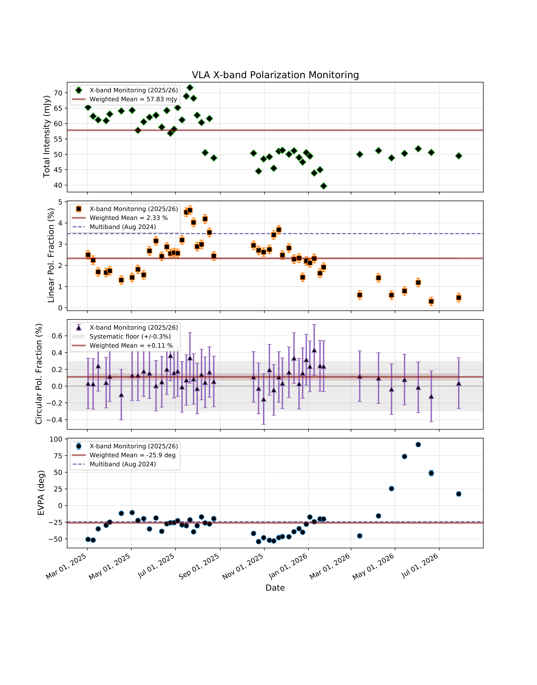
图注：Temporal evolution of the X-band polarization properties of 1ES\,1927+654 from 2025 March to 2026 July. \(\textit{Top panel:}\) Total intensity (Stokes $I$, mJy) as a function of time, showing a general decline from $\sim$65--70~mJy in early 2025 to $\sim$45--55~mJy by late 2025, followed by a stable plateau near $\sim$50~mJy through the final months of the campaign. \(\textit{Second panel:}\) Linear fractional polarization ($m_{\rm pol}$) over the same period. Error bars correspond to $\sigma_m$, computed from the thermal noise in the Stokes $Q$ and $U$ images together with a systematic floor of $0.2\%$. \(\textit{Third panel:}\) Circular polarization, $V/I$. The shaded band marks the $\pm0.3\%$ systematic floor set by residual $R$/$L$ gain amplitude errors; all measurements lie within it, and circular polarization is not detected at any epoch. \(\textit{Bottom panel:}\) EVPA over the same period, unwrapped under the standard minimal-rotation convention. Values are therefore accumulated angles and may lie outside the $(-90^\circ, +90^\circ]$ range of the measured quantity, which is defined only modulo $180^\circ$. The dashed navy lines indicate the 2024 August multiband VLA reference values; the solid maroon lines show the weighted means. The 2026 epochs show a smooth EVPA rotation of $\sim137^\circ$ over 81 days followed by a partial return, at stable total intensity and suppressed fractional polarization, discussed in Section~\(\ref{sec:vla_xband_evpa}.\)
对应解读：建议重点查看的图表第5项；关键图表逐图导读图5；模型拟合中“时间域偏振角演化”段落。
入选理由：这张图直接展示X波段监测的核心证据：Stokes I、线偏振度、圆偏振V/I和EVPA随时间同步变化，可检验约81天内约137°平滑EVPA旋转、总强度相对稳定、线偏振度受抑制以及圆偏振未探测等多个关键结论，比单独的静态偏振图更能支撑论文的主要新发现。
来源与置信度：\(arxiv_source\)；high；\(arxiv_source\) / 1ES1927_pol_paper_arxiv.tex:figure[9]
Fig03
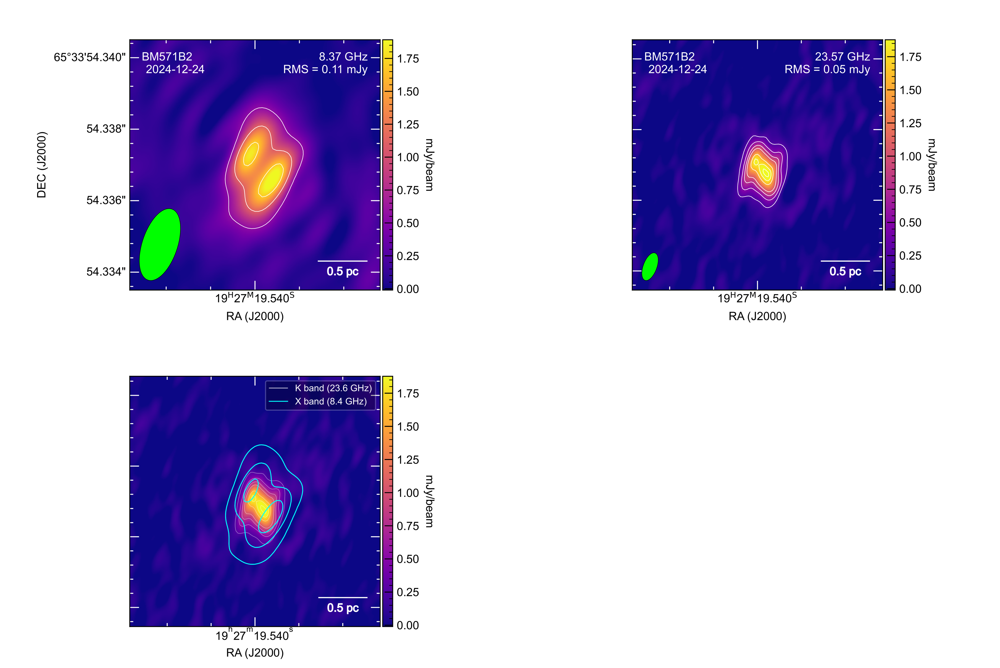
图注：Core-subtracted VLBA residual images of 1ES\,1927+654 from the 2024 December epoch. \(\textit{Left:}\) X-band (8.4~GHz) residual image. \(\textit{Middle:}\) K-band (23.6~GHz) residual image. \(\textit{Right:}\) K-band image with X-band contours (cyan) overlaid. Contours are drawn at $(5,10,15,20,30,35)\times\sigma$ of the corresponding core-subtracted images. While the bipolar two-component structure was previously detected only at K band \(\citep{meyer2025},\) the X-band residual map presented here reveals, for the first time, the same bipolar structure at a larger angular separation, consistent with outward propagation of the jet components. In addition, the higher-resolution K-band image reveals a bridge of residual emission between the two X-band peaks, possibly connecting the two components (see Section~\ref{sec:VLBA_x_band_blob}).
对应解读：建议重点查看的图表第1项；关键图表逐图导读图1；详细解读中“VLBA继续看到双极喷流形态、K波段桥状发射”段落。
入选理由：这张VLBA核扣除残差图最直接对应喷流形成的形态学证据，包含X波段和K波段残差、双极两分量结构、X波段更大角分离以及K波段桥状发射，是判断结构是否沿同一喷流轴连续、是否支持新生喷流而非孤立亮斑的关键图。
来源与置信度：\(arxiv_source\)；high；\(arxiv_source\) / 1ES1927_pol_paper_arxiv.tex:figure[3]
Fig08
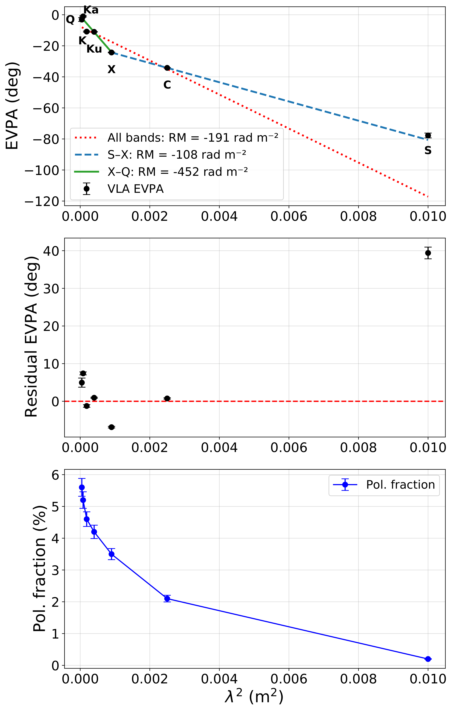
图注：\(\textit{Top:}\) EVPA as a function of wavelength squared ($\lambda^2$) for VLA multi-band observations of 1ES\,1927+654. The red dotted line represents the linear fit over all bands (S--Q), weighted by the inverse-square of the EVPA uncertainties, the blue dashed line shows the fit to the low-frequency subset (S--X), and the green solid line shows the high-frequency fit (X--Q). The low-frequency rotation measure, ${\rm RM}_{\rm S-X} = -108$~rad~m$^{-2}$, likely traces an external Faraday screen or extended magnetized plasma, as suggested by slightly higher VLA flux compared to VLBA (see Section~\ref{sec:vla_multiband_SED}). The high-frequency rotation measure, ${\rm RM}_{\rm X-Q} = -452$~rad~m$^{-2}$, traces a magnetized sheath external to the emitting region (see Section~\ref{sec:vla_evpa}). The global fit across all bands (S--Q) yields ${\rm RM}_{\rm all} = -191$~rad~m$^{-2}$, but with a very large reduced chi-square ($\chi^2_\nu \approx 417$), indicating that a single RM cannot adequately describe the full frequency range. \(\textit{Middle:}\) Residuals of the measured EVPAs relative to the global S--Q fit, highlighting systematic deviations and demonstrating the frequency-dependent nature of the Faraday rotation. \(\textit{Bottom:}\) Fractional polarization as a function of $\lambda^2$ with error bars computed from propagated uncertainties in polarized and total intensity. The polarization fraction increases with frequency, consistent with depolarization at longer wavelengths due to Faraday effects.
对应解读：建议重点查看的图表第3、4项；关键图表逐图导读图3和图4；模型拟合中“偏振随频率变化”和“单一RM模型失败”段落。
入选理由：这张图同时给出EVPA-λ²关系、全频段与分段RM拟合线、全局拟合残差以及偏振度随λ²变化，直接检验单一法拉第屏线性RM模型为何失败，也展示高频偏振增强和低频退偏振，是频域偏振诊断中信息量最高的候选图。
来源与置信度：\(arxiv_source\)；high；\(arxiv_source\) / 1ES1927_pol_paper_arxiv.tex:figure[8]
Fig05
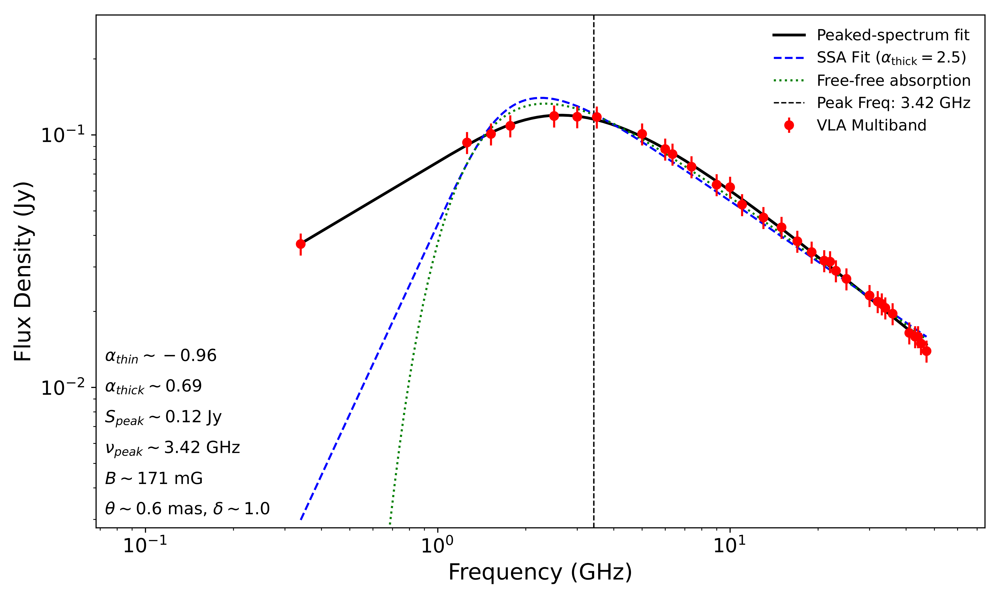
图注：Radio SED of 1ES\,1927+654 with a phenomenological peaked-spectrum model, a synchrotron self-absorbed (SSA) model (with a fixed $\alpha_{\rm thick} = 2.5$), and a free-free absorption model fit to the VLA+VLITE flux densities. The lowest-frequency data point at 340~MHz was obtained with VLITE. The vertical dashed line indicates $\nu_{\rm peak}$ as defined by the peaked-spectrum functional form (Equation~\ref{eq:peaked_form}); note that this is a shape parameter rather than the literal frequency of peak flux (see footnote~\ref{fn:nupeak}). Fit parameters ($S_{\rm peak}$, $\nu_{\rm peak}$, $\alpha_{\rm thick}$, $\alpha_{\rm thin}$), the derived magnetic field $B$, assumed VLBI core size $\theta$, and Doppler factor $\delta$ are annotated in the figure.
对应解读：建议重点查看的图表第2项；关键图表逐图导读图2；模型拟合中“射电谱拟合、自吸收转折和高频光学薄谱指数”段落。
入选理由：这张宽频射电SED图包含VLITE 340 MHz到VLA高频数据，并叠加峰谱模型、SSA模型和自由-自由吸收模型，标注峰频、峰值流量、厚/薄谱指数及派生磁场等参数，最适合支撑约GHz峰值、自吸收转折和同步辐射模型判断。
来源与置信度：\(arxiv_source\)；high；\(arxiv_source\) / 1ES1927_pol_paper_arxiv.tex:figure[5]
Fig10
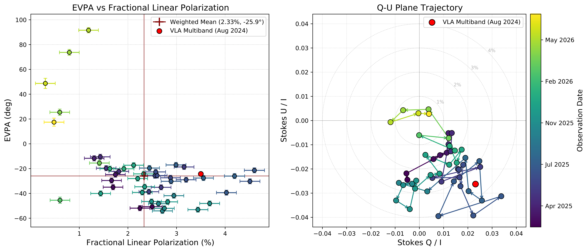
图注：\(\textit{Left:}\) EVPA as a function of fractional linear polarization for VLA X-band monitoring of 1ES\,1927+654 from March 2025 through July 2026. Each point is color-coded by observation date (colorbar at right). Solid maroon lines indicate the weighted mean fractional polarization ($2.33\%$) and EVPA ($-25.9^\circ$). The 2026 epochs (light green through yellow) occupy a distinct region of the diagram, combining the lowest fractional polarizations in the campaign ($\sim0.30$--$1.4\%$) with the largest EVPA values, reaching $+91.6^\circ$ on June 2. The 2025 epochs instead scatter about the weighted mean. \(\textit{Right:}\) Stokes $Q/I$--$U/I$ plane trajectory for the same epochs. Dashed circles indicate constant fractional polarization levels of 1\%, 2\%, 3\%, and 4\%. The 2026 epochs trace a coherent counter-clockwise sweep followed by a reversal, at consistently low polarized fraction. The red point shows the August 2024 multiband reference.
对应解读：建议重点查看的图表第6项；关键图表逐图导读图6；模型拟合中“应在Stokes Q-U平面拟合轨迹”段落。
入选理由：这张图提供EVPA-线偏振度关系和Stokes Q/I-U/I轨迹，能检验2026年低偏振状态下EVPA旋转是否由连续偏振矢量运动支持，而不是噪声点或角度展开造成的跳变，是对Fig09时间序列结论的重要稳健性诊断。
来源与置信度：\(arxiv_source\)；high；\(arxiv_source\) / 1ES1927_pol_paper_arxiv.tex:figure[10]
Fig07
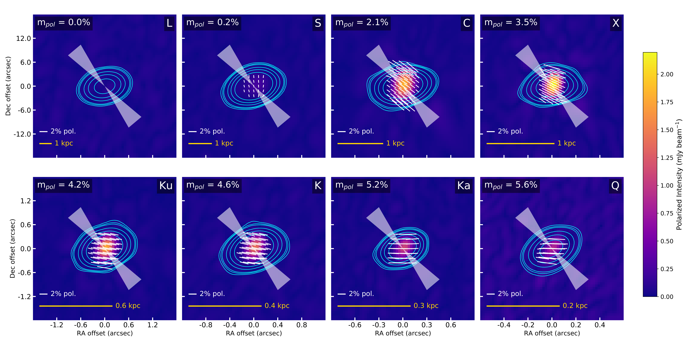
图注：VLA Multi-band linear polarization images of 1ES\,1927+654. The background color shows the polarized intensity (mJy/beam) at each band: L (1.5~GHz), S (3~GHz), C (6~GHz), X (10~GHz), Ku (15~GHz), K (22~GHz), Ka (33~GHz), and Q (44~GHz), while cyan contours represent the total intensity from the corresponding VLA band. Magnetic field vectors, derived by rotating the EVPA by 90° to trace the projected magnetic field orientation, are overlaid and averaged in 5$\times$5 pixel boxes. The white shaded bipolar cones indicate the projected jet/outflow direction, centered at a position angle of $40^\circ$ (measured from north to east) as measured from the extended K-band VLBA emission (see section~\ref{sec:VLBA_x_band_blob}), with a $\pm10^\circ$ opening angle shown to illustrate the plausible range of the outflow orientation. The cones are drawn with an exaggerated spatial extent for clarity, as no resolved large-scale outflow is detected in the VLA images; they are intended as a schematic guide to the jet angle and magnetic field orientation inferred from the VLBA observations. The polarization fraction at the central peak is indicated in the top-left of each panel. The polarization increases with frequency, consistent with a transition from depolarized emission in the outer, turbulent sheath of the jet to optically thin emission from the inner, more ordered jet/core region.
对应解读：建议重点查看的图表第3项，并补充关键图表逐图导读中“偏振度随频率升高、磁场方向与喷流轴关系”的内容。
入选理由：这张多波段线偏振图从L到Q波段展示偏振强度、总强度等高线、磁场方向和各频段中心偏振分数，可直观看到偏振随频率增强，并与VLBA推断的喷流方向进行空间关联；虽然定量拟合不如Fig08集中，但对解释频率依赖退偏振和磁场有序化很有价值。
来源与置信度：\(arxiv_source\)；high；\(arxiv_source\) / 1ES1927_pol_paper_arxiv.tex:figure[7]
强相关工作
同一源背景方面，应把本文与 1ES 1927+654 早期变脸、X 射线异常、冕区恢复以及后续射电变亮研究连起来读。摘要中提到 Meyer 等 2025 首次报告双极喷流结构，Laha 等 2025 报告该源转为射电响亮；这些是同一源、同一事件链条中的直接前作。建议检索关键词包括“1ES 1927+654 changing-look AGN X-ray”, “1ES 1927+654 radio loud”, “1ES 1927+654 VLBA jet”, “1ES 1927+654 polarization”。
同类源方面，可以比较紧凑对称天体、GHz 峰谱源和新生射电星系中的自吸收谱与喷流扩张，也可以比较耀变体中偏振角大幅旋转事件。不过 1ES 1927+654 的特别之处在于它原先不是典型喷流主导源，且高能状态变化和喷流形成在时间上接近。基础理论应检索“synchrotron self absorption compact jet”, “Faraday rotation AGN core polarization”, “EVPA rotation blazar jet disturbance”, “Blandford Königl jet model”。
相反观点或张力主要在解释层面：偏振角旋转是否一定代表传播扰动？是否可能由多分量叠加、法拉第屏变化或校准系统误差造成？射电响亮化是否一定意味着相对论喷流启动，而不是盘风或冕区非热喷发？本文通过 VLBA 双极形态、桥状发射、紧凑高频流量恢复和偏振演化来支持喷流解释，但这些问题仍需要更高频、更密集的 VLBI 偏振成像检验。
同一事件 / 同类源线索：
- https://arxiv.org/abs/2609.09539
- https://arxiv.org/pdf/2609.09539
- https://simbad.u-strasbg.fr/simbad/sim-id?Ident=1ES%201927%2B654
相似工作：
- https://ui.adsabs.harvard.edu/abs/1985ApJ...298..114M/abstract
- https://ui.adsabs.harvard.edu/abs/1998PASP..110..493O/abstract
基础理论 / 方法工作：
- https://ui.adsabs.harvard.edu/abs/1979ApJ...232...34B/abstract
- https://ui.adsabs.harvard.edu/abs/1966MNRAS.133...67B/abstract
- https://ui.adsabs.harvard.edu/abs/1995PASP..107..803U/abstract
相反观点 / 张力线索：
（未提供）
6. Free Neutron Decay in Kilonova Ejecta: X-ray/UV Flashes with Non-Thermal Effects
- 来源：arXiv / astro-ph.HE
- 链接：https://arxiv.org/abs/2609.09311v1
- 作者：Daniel Brethauer, Daniel Kasen, Smaranika Banerjee, Raffaella Margutti, Ryan Chornock
- 评分：novelty 8/10，importance 8/10，relevance 8/10，final 9.00/10
- 推荐理由：首批非 LTE、频率依赖不透明度的自由中子衰变千新星早期 X-ray/UV/optical 辐射转移网格，直接服务 NS 并合多信使瞬变和 UV/X 射线跟进策略，值得阅读。
中文题目：千新星抛射物中的自由中子衰变：含非热效应的 X 射线/紫外闪光
做了什么：这篇论文研究双中子星或中子星—黑洞并合后高速抛射物中的自由中子如何改变千新星最早期辐射。作者用辐射转移程序 Sedona 做了首批包含非局域热力学平衡、频率依赖不透明度和非热能量沉积的模型网格，扫描自由中子质量、与 \(r\)-过程物质的混合程度、以及高速尾的最大速度。核心结论是：自由中子衰变可在并合后最初几分钟产生 \(L\sim{\rm few}\times10^{41}-10^{42}\ {\rm erg\ s^{-1}}\) 的软 X 射线/极紫外辐射，随后峰值快速移向远紫外和近紫外；即使自由中子质量低至 \(10^{-7}\ M_\odot\)，也可能在远紫外/近紫外光变曲线中留下不同于无中子模型的凸起。
为什么重要：自由中子是否存在，直接连接到并合动力学抛射物的最高速度尾、种子核形成时间、电子分数和 \(r\)-过程环境。过去千新星建模主要靠光学/红外日尺度光变约束镧系元素和总抛射质量，而本文强调分钟到小时尺度的 X 射线—紫外观测能探测一个更靠外、更快、更早透明的物质层。这个层的质量可能很小，却对核合成和并合流体动力学非常敏感。
理论 / 观测 / 仪器方法价值：理论上，本文把自由中子前兆从灰不透明度或局域热平衡近似推进到频率依赖、非局域热平衡和非热沉积的辐射转移计算，给出可直接和 UVEX、ULTRASAT、Swift/UVOT 类观测比较的谱能分布和光变曲线。观测上，它指出最有诊断力的不是传统光学峰，而是极紫外、远紫外和近紫外中峰值波长与峰值通量的联动变化。方法上，它提供了一套把高速尾结构、混合和自由中子质量映射到早期多波段信号的模型网格。
为什么应该关注：如果未来引力波定位能足够快触发紫外观测，这类自由中子闪光可能成为并合后几分钟到几小时内最直接的核合成探针之一。它可以回答：高速抛射物里是否有来不及俘获成重核的中子？并合是否产生了接近 \(0.4c\) 甚至更快的物质？早期紫外非探测又能排除多少自由中子质量？这些问题会反馈到并合数值模拟、喷流—抛射物相互作用和千新星早期观测策略。
展开详细解读：文章讲解、背景、理论、重点章节、图表与相关工作
文章详细讲解
科学问题：中子星并合会抛出一部分非常高速的外层物质。当速度达到 \(v\gtrsim0.4c\) 时，膨胀时间可能短到让一部分中子来不及被种子核俘获，从而以自由中子形式存活到并合后数百秒量级。自由中子通过 \(\beta\) 衰变释放能量，时间尺度与千新星最早变亮阶段相当。问题在于，这个能量是否会以可观测的 X 射线/紫外闪光出现，以及它与普通 \(r\)-过程放射性加热产生的早期光变能否区分。
作者怎么做：论文使用 Sedona 做时间依赖辐射转移模型，重点不是只算一个代表性模型，而是构建覆盖理论预期范围的模型网格。参数包括自由中子质量、自由中子与 \(r\)-过程物质的混合程度、高速尾的空间/速度范围以及最大速度。相对早期半解析工作，本文的关键技术增量是非局域热力学平衡、频率依赖不透明度以及非热粒子沉积处理；这些物理在 X 射线、极紫外和远紫外最重要，因为这里电离状态、线不透明度和能量沉积分配都不容易用单一灰不透明度概括。
关键结果：模型预言谱能分布在很早期快速演化。并合后最初几分钟，辐射可处在软 X 射线/极紫外，典型光度为 \(L\sim{\rm few}\times10^{41}-10^{42}\ {\rm erg\ s^{-1}}\)。随后随着外层冷却和光球后退，峰值移向远紫外和近紫外，时间尺度为分钟到小时。自由中子质量越大，后续光学和红外也可能被增强；但真正最能区分自由中子性质的是极紫外和远紫外，因为峰值波长和峰值通量对最大速度与混合程度尤其敏感。论文还强调，即使 \(M_n\sim10^{-7}\ M_\odot\) 的自由中子质量，也能在远紫外/近紫外产生相对无中子模型独特的凸起。
局限和下一步：这些模型仍依赖一维或参数化的高速尾结构、混合描述和核合成输入，而真实并合抛射物是强非球对称、多成分、可能受喷流和磁风影响的。极紫外观测还会受到银河系和宿主星系吸收、触发延迟、定位面积以及仪器响应的限制。下一步应把模型与多维并合模拟更紧密相连，并为具体任务生成可观测量：例如不同距离、视角、滤光片和触发延迟下的检出概率与上限解释框架。
关键结果是怎么做出来的
本文最重要的证据链来自模型网格，而不是单个事件拟合。样本不是观测样本，而是一组覆盖自由中子质量 \(M_n\)、高速尾最大速度 \(v_{\max}\)、混合程度和 \(r\)-过程污染水平的辐射转移模拟。读者应把它理解为参数空间探索：哪些组合会在 X 射线、极紫外、远紫外、近紫外、光学和红外产生可识别的偏离。
数据/样本选择方面，作者针对中子星并合理论中最不确定但最有诊断价值的高速尾设置模型。高速尾需要达到 \(v\gtrsim0.4c\)，因为只有足够快的膨胀才可能让中子逃过俘获。自由中子质量从很小的 \(M_n\sim10^{-7}\ M_\odot\) 到更显著的高值，混合则控制自由中子衰变能量是否被 \(r\)-过程物质线不透明度重处理。这样的参数选择直接服务于一个问题：未来紫外任务看到或没看到早期凸起时，能否把它翻译成自由中子层的物理约束。
统计显著性在本文中主要不是通过观测事件的 \(p\)-值给出，而是通过模型间可分辨性来体现。核心比较是含自由中子模型与无自由中子模型的多波段光变和谱能分布差异。尤其需要看远紫外和近紫外波段中，含 \(M_n\sim10^{-7}\ M_\odot\) 的模型是否相对于无中子基线产生独立凸起，以及这个凸起是否超过可预期的观测误差、距离不确定性和触发时延造成的模糊。
支撑结论的图表应包括时间序列谱能分布、不同 \(M_n\) 的多波段光变曲线、不同 \(v_{\max}\) 或混合程度下峰值波长和峰值通量的变化，以及自由中子模型与无中子模型的比值图。最关键的读法不是只看光学是否更亮，而是看早期峰值从软 X 射线/极紫外向远紫外/近紫外迁移的时间和颜色演化是否具有模型间单调性。
主要系统误差包括不透明度数据库在高电离态和紫外波段的不完备、非热电子能量沉积分配、抛射物密度剖面和速度分布的参数化、以及一维几何对真实视角效应的压缩。稳健性检验应关注：改变混合处方后 \(M_n\) 的可探测阈值是否显著移动；改变 \(r\)-过程污染后紫外凸起是否仍存在；以及在不同观测波段组合下，\(M_n\)、\(v_{\max}\) 和混合程度之间是否出现强退化。
展开背景、理论、公式、模型、章节和图表导读
背景知识
千新星是致密双星并合后抛射物中放射性核素衰变驱动的热瞬变。GW170817/AT2017gfo 之后，光学和红外观测已经证明中子星并合能产生重元素，并且蓝、红两个分量大致对应不同电子分数、不透明度和速度的物质。然而，日尺度光学/红外光变主要探测相对慢、质量较大的抛射物，对最外层高速尾的信息很间接。
自由中子前兆的概念来自一个简单时间尺度竞争：如果物质膨胀得足够快，密度迅速降低，中子被种子核俘获的反应来不及完成，于是会有一小部分自由中子留在最外层。自由中子的寿命约为十几分钟，正好对应并合后最早可观测阶段。这个阶段比常规 \(r\)-过程加热更早，波段也更偏向高能和紫外。
为什么现在值得重新看？一方面，未来引力波探测和预警会更快，电磁跟进从“小时后找光学源”逐步走向“分钟级紫外和高能响应”。另一方面，UVEX、ULTRASAT 等任务把大视场紫外瞬变监测变成现实，使得过去被认为观测窗口太短的自由中子信号重新有了实际检验机会。理论上，数值相对论模拟也越来越能解析冲击加热、潮汐尾和喷流—抛射物相互作用产生的高速物质。
这个领域常见误区有三个。第一，把早期蓝光全部等同于自由中子衰变；实际上高电子分数 \(r\)-过程物质、喷流余辉、冷却包层辐射也能造成早期蓝/紫外信号。第二，只用灰不透明度估算紫外亮度；紫外和极紫外对电离态和线不透明度极端敏感，灰近似可能误导。第三，把无探测简单解释为无自由中子；实际还要考虑距离、定位、消光、触发延迟、视角和仪器灵敏度。
基础理论 / 方法脉络
基础物理图像是同源膨胀的放射性加热气体。并合后抛射物很快进入近似弹道膨胀，半径满足 \(r\simeq vt\)，密度随时间大致按 \(t^{-3}\) 下降。外层高速物质的扩散时间最短，因此最早透明；如果这部分物质含有自由中子，其衰变能量会优先从高能/紫外波段泄出。
自由中子通过 \(\beta\) 衰变 \(n\rightarrow p+e^-+\bar{\nu}_e\) 释放能量。不是所有衰变能都能热化：反中微子基本逃逸，电子和质子通过库仑相互作用、激发和电离把部分能量沉积到等离子体。本文所谓非热效应，重点就是不假定沉积能量立刻形成局域热平衡黑体，而是跟踪高能电子如何改变电离、激发和加热平衡。
辐射转移方面，频率依赖不透明度非常关键。光子在不同频率上的吸收、散射和线遮蔽不同；紫外波段尤其容易被重元素线森林压低。因此，自由中子是否与 \(r\)-过程物质混合，决定了衰变能量是直接以极紫外/远紫外逃逸，还是被重处理到近紫外、光学甚至红外。
本文的关键量包括自由中子质量 \(M_n\)、高速尾最大速度 \(v_{\max}\)、密度剖面、混合参数、以及随时间演化的谱能分布 \(L_\nu(t)\)。常见退化是 \(M_n\) 增大、\(v_{\max}\) 增大和不透明度降低都可能提高早期紫外通量；混合增强则可能同时改变热化效率和紫外遮蔽，使峰值通量与峰值波长不再只由 \(M_n\) 决定。观测上，多波段颜色演化比单波段峰值更能打破这些退化。
公式与推导
第一步是同源膨胀。并合后外层抛射物近似满足速度与半径成正比：
这里 \(r\) 是半径，\(v\) 是物质速度，\(t\) 是并合后时间。这个关系成立于压力梯度相对动力学能量已不重要的阶段，是把速度分布映射到空间光学深度的基础。
第二步写出自由中子数随时间的衰减：
其中 \(N_n\) 是自由中子数，\(\tau_n\) 是中子平均寿命，\(M_n\) 是自由中子质量，\(m_n\) 是中子质量。这个式子给出衰变功率的时间标尺。
第三步得到衰变能量注入率：
这里 \(Q_n\) 是每次衰变可沉积到电磁成分中的有效能量，\(f_{\rm th}(t)\) 是热化或沉积效率。非热计算的核心就在于 \(f_{\rm th}(t)\) 和沉积通道不能简单设为常数。
第四步估计扩散条件。若取平均不透明度 \(\kappa_\nu\)，外层质量 \(M(>v)\) 的光学深度可近似写成：
这里 \(\tau_\nu\) 是频率 \(\nu\) 处的光学深度，\(M(>v)\) 是速度大于 \(v\) 的外层质量。早期能逃逸的辐射来自满足 \(\tau_\nu\sim c/v\) 或 \(\tau_\nu\sim1\) 的浅层。
第五步连接到扩散时间：
当 \(t_{\rm diff,\nu}\lesssim t\) 时，该层的能量可以在膨胀时间内逃逸。高速尾因为 \(v\) 大、外覆质量小，最早满足这个条件。
第六步给出粗略峰值时间标度：
其中 \(M_{\rm sh}\) 是主导某波段逃逸的壳层质量。这个式子解释了为什么更高速度、更低不透明度或更小质量会把峰值推到更早时间。
第七步把辐射能量转换为谱光度。若局部近似热化，可写作检查量：
这里 \(R_{\rm ph}\) 是光球半径，\(B_\nu\) 是普朗克函数，\(T_{\rm eff}\) 是有效温度。本文更完整地做频率依赖非局域热力学平衡转移，但这个式子帮助理解峰值波长随冷却从 X 射线/极紫外移向紫外和光学。
第八步对应实际观测通量：
其中 \(D_L\) 是光度距离，\(z\) 是红移，\(\tau_{\}}\)
u,\
m MW}) 和 (\tau_{\nu,\
m host}) 分别代表银河系和宿主吸收。紫外检出能力强烈依赖这些吸收项。
第九步给出模型比较的常用似然形式：
这里 \(F_i\) 和 \(\sigma_i\) 是观测通量及误差，\(\boldsymbol{\theta}\) 可包括 \(M_n\)、\(v_{\max}\)、混合参数和不透明度参数。即使本文主要给模型预测，这个式子也是未来用紫外数据约束自由中子质量的直接接口。
模型拟合 / 应用方法
本文本身更像模型网格预测，而不是对某个已观测事件做后验拟合。可拟合的核心量包括 \(M_n\)、\(v_{\max}\)、高速尾质量分布、混合程度、\(r\)-过程污染水平和视角相关归一化。观测量则是多波段 \(F_\nu(t)\)、颜色演化、峰值时间、峰值波长以及相对无中子模型的早期残差。
若把这些模型用于实际事件，似然通常会基于多波段通量或上限构建。对检出点可使用高斯误差似然，对非探测上限则应使用截断似然或生存分析式处理，而不是简单把上限当作零通量点。若有引力波距离后验，还应把 \(D_L\) 和倾角信息作为先验传入，因为通量归一化与 \(M_n\) 存在直接退化。
参数退化非常重要。较大的 \(M_n\) 可以提高总能量输入；较大的 \(v_{\max}\) 可让光球更早、更热并提升早期高频通量；较低的 \(\kappa_\nu\) 或较少 \(r\)-过程混合也能增强紫外逃逸。因此单一近紫外点往往不能唯一确定 \(M_n\)。真正有力的是早期多色覆盖，特别是极紫外/远紫外到近紫外的谱峰移动，以及随后光学/红外是否被同步增强。
残差诊断应关注时间结构。如果含自由中子模型只在一个波段通过调高归一化改善拟合，却不能同时解释峰值时间和颜色演化，那可能是在吸收、距离或普通蓝千新星参数上过拟合。相反，如果相对于无中子模型，残差集中表现为分钟到小时尺度的远紫外/近紫外凸起，并且光学日尺度仍保持一致，那么自由中子解释更有说服力。
模型可能失败的地方包括非球对称、高速尾与喷流余辉混淆、紫外不透明度原子数据不足、宿主消光曲线不确定，以及触发时延导致真正峰值已错过。实际应用中应把这些系统误差显式加入层级模型，或至少通过模型网格边界给出保守上限，而不是报告过窄的 \(M_n\) 置信区间。
重点章节 / 结果段落怎么读
-
引言和物理动机：重点看作者如何定义自由中子前兆与普通 \(r\)-过程千新星的区别。这里应抓住两个时间尺度：高速膨胀抑制中子俘获的时间尺度，以及自由中子 \(\beta\) 衰变的时间尺度。
-
模型设置和 Sedona 辐射转移：重点看密度/速度结构、自由中子质量范围、混合处方、非局域热力学平衡和频率依赖不透明度如何实现。读者应特别检查模型是否假定球对称，以及高速尾最大速度如何参数化。
-
谱能分布演化：这是理解结果的核心部分。看谱峰如何从早期 X 射线/极紫外迁移到远紫外、近紫外再到光学/红外；同时比较不同 \(M_n\)、\(v_{\max}\) 和混合模型之间的差异。
-
多波段光变和可探测性：重点看远紫外与近紫外的凸起是否在低 \(M_n\) 情况下仍可见，以及相比无中子模型的幅度。这里直接关系到 UVEX、ULTRASAT 等任务的观测策略。
-
讨论和局限：应关注作者如何处理与余辉、冷却辐射、普通蓝千新星的区分，以及他们对不透明度、非热沉积和几何效应的谨慎说明。附录或稳健性部分若有，应优先检查参数网格边界和替代混合处方。
建议重点查看的图表
-
模型参数网格或抛射物结构图：看 \(M_n\)、\(v_{\max}\)、密度剖面和混合程度的覆盖范围，判断是否真的涵盖主流并合模拟预期。
-
时间序列谱能分布图：看谱峰从 X 射线/极紫外到远紫外/近紫外的迁移速度，以及不同模型线在紫外段的分离度。
-
多波段光变曲线：重点检查含自由中子模型相对无中子模型的早期凸起，尤其是 \(M_n\sim10^{-7}\ M_\odot\) 是否仍可区分。
-
峰值通量—峰值波长或峰值时间关系图：看 \(v_{\max}\) 和混合程度是否形成可识别趋势，还是与 \(M_n\) 强退化。
-
能量沉积或热化效率诊断图：若论文给出，应检查非热沉积如何改变电离状态和紫外输出，而不仅是总光度。
-
与仪器灵敏度/探测距离相关的图或表：看 UVEX、ULTRASAT 或其他紫外设施在不同距离和触发延迟下能否实际检出模型差异。
-
无中子对照模型比较图：必须检查基线模型是否合理，否则“自由中子凸起”的显著性会被高估。
-
系统误差或替代模型图：看改变不透明度、混合或高速尾结构后，论文主结论是否保持。
关键图表逐图导读
图 1：通常应是模型结构或参数空间示意。横轴可能是速度 \(v/c\) 或质量坐标，纵轴可能是密度、累计质量或自由中子质量分数。读图时要看高速尾在 \(v\gtrsim0.4c\) 区域有多少质量，以及自由中子是否只在最外层还是与 \(r\)-过程物质混合。陷阱是不要把参数化尾部当作数值相对论模拟的唯一预言。
图 2：时间序列谱能分布应是本文最关键图之一。横轴为频率、波长或光子能量，纵轴为 \(L_\nu\)、\(\nu L_\nu\) 或等效光度。模型线随时间从早到晚变化，主要结论是谱峰在分钟到小时内从软 X 射线/极紫外移向远紫外和近紫外。读图陷阱是紫外段受不透明度和吸收影响大，不能只看本征谱就等同于观测谱。
图 3：多波段光变图应比较 X 射线、远紫外、近紫外、光学和红外。横轴为并合后时间，纵轴为光度、绝对星等或通量。含自由中子模型相对无中子模型的早期凸起是关键，特别要看 \(M_n\sim10^{-7}\ M_\odot\) 的曲线是否仍与无中子模型分离。陷阱是光学日尺度增强不一定唯一来自自由中子，紫外早期形状更有诊断力。
图 4：若有参数扫描图，横轴可能是 \(M_n\)、\(v_{\max}\) 或混合参数，纵轴是峰值时间、峰值波长或峰值通量。数据点或模型线应显示最大速度和混合如何控制谱峰位置。读图时要寻找单调趋势以及等值线重叠区域；重叠越多，说明未来观测需要更多波段才能打破退化。
图 5：若给出仪器可探测性图，横轴可能是距离、时间延迟或波段，纵轴是通量/星等或信噪比。应比较模型曲线与 UVEX、ULTRASAT、Swift/UVOT 等灵敏度线。陷阱是触发延迟和定位面积会显著降低实际检出率，标称灵敏度不等于真实跟进能力。
图 6：若有稳健性或无中子对照图，应重点看残差或比值。横轴为时间，纵轴为含中子/无中子通量比或两者差值。真正有力的证据应是早期紫外比值出现结构化凸起，而不是所有波段被一个整体归一化因子抬高。
论文原图 / 可嵌入图片
Fig03
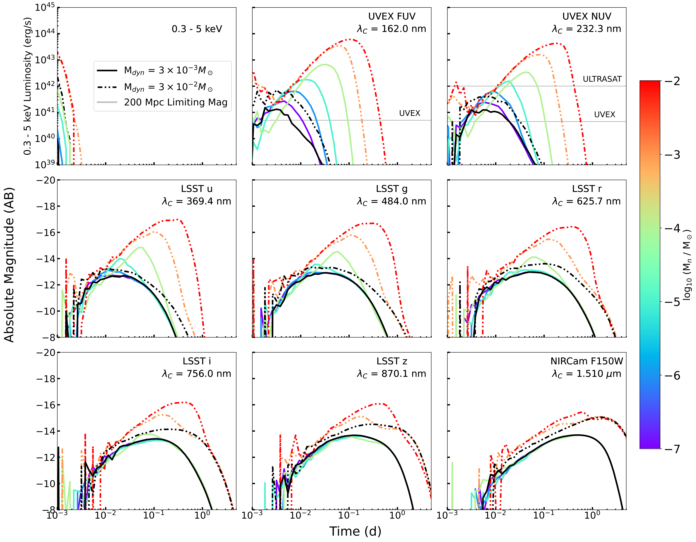
图注：Light curves for varying neutron masses (colors) with $n = 500$ composition profile of free neutrons with $v_{\rm max} = 0.7c$. The typical depth of UVEX and ULTRASAT photometric observations at 200 Mpc are shown in gray. In black is a $3\times10^{-3}$ and $3\times10^{-2}$ M$_\odot$ dynamical ejecta model with no free neutrons (solid and dash-dot-dotted, respectively). The UV flash peaks on typical timescales of $\sim5$ minutes to $\sim2$ hours, depending on M$_n$. Neutron-free models and neutron-rich models are most distinguishable in the FUV due to the distinct peak at FUV wavelengths. Monte Carlo noise is most prominent at early times and at redder wavelengths due to the short time bin width and weak red emission.
对应解读：对应“建议重点查看的图表”第3、6、7项，以及“关键图表逐图导读”图3：多波段光变曲线、仪器灵敏度、无中子对照。
入选理由：这是最核心的观测预言图：同时给出不同自由中子质量的多波段光变、无中子模型对照，以及 UVEX/ULTRASAT 在 200 Mpc 的典型深度。它直接检验日报强调的早期 FUV/NUV 凸起、低自由中子质量模型是否可区分，以及未来紫外任务是否具备探测能力。
来源与置信度：\(arxiv_source\)；high；\(arxiv_source\) / KNe.tex:figure[3]
Fig04
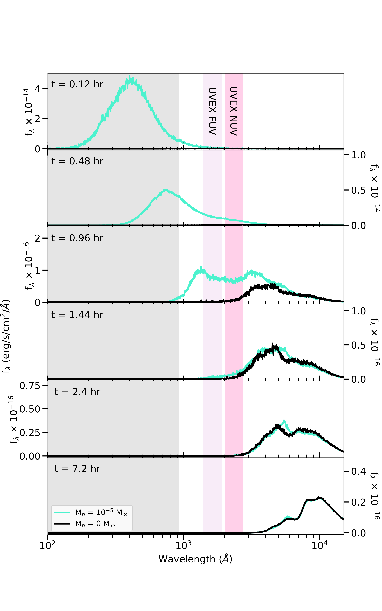
图注：Spectral sequence for $n = 500$, $v_{\rm max} = 0.7c$, and $M_n = 10^{-5}$ M$_\odot$ model with UVEX FUV and NUV filter regions highlighted at an assumed distance of 40 Mpc compared to a neutron-free model. Region of high galactic absorption due to hydrogen is highlighted in gray. The SED rapidly shifts from peaking in the EUV to the optical and IR on $\sim$hrs timescale.
对应解读：对应“建议重点查看的图表”第2项，以及“关键图表逐图导读”图2：时间序列谱能分布。
入选理由：该图展示谱能分布随时间从 EUV/XUV 向 UV、光学和红外迁移，并标出 UVEX FUV/NUV 波段及氢吸收区域，最直接支撑日报中关于谱峰分钟到小时尺度快速红移、紫外段诊断价值和观测吸收陷阱的解读。
来源与置信度：\(arxiv_source\)；high；\(arxiv_source\) / KNe.tex:figure[4]
Fig01
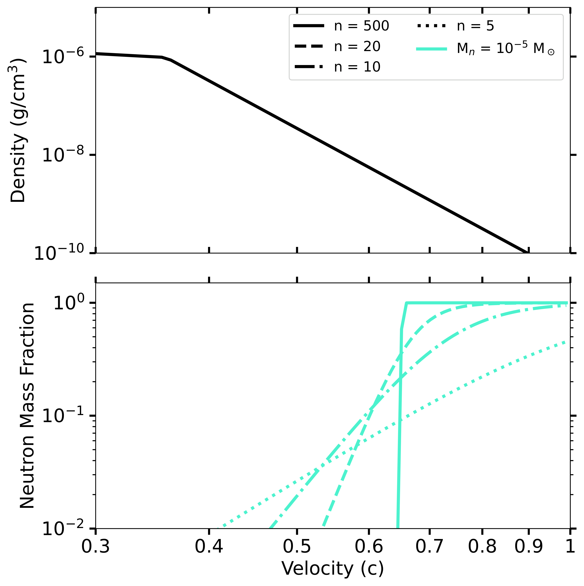
图注：\(\textit{Top Panel:}\) Density profile at $t \sim 1.4$ minutes for M$_n$ = $10^{-5}$ M$_\odot$ embedded in the fiducial dynamical ejecta (blue) of varying neutron mixing \(\textit{Bottom Panel:}\) Fraction of initial free neutron mass as a function of position in the ejecta. As $n$ increases, there is less mixing of the free neutrons with the ejecta and therefore less homogeneously mixed.
对应解读：对应“建议重点查看的图表”第1项，以及“关键图表逐图导读”图1：模型参数网格或抛射物结构图。
入选理由：该图给出密度剖面和自由中子初始质量分数随抛射物位置的变化，并比较不同混合参数 n，是理解模型网格物理含义的基础。它能帮助读者判断自由中子位于最外层还是与 r-过程物质混合，以及混合程度如何进入后续光变和谱能分布。
来源与置信度：\(arxiv_source\)；high；\(arxiv_source\) / KNe.tex:figure[1]
Fig07
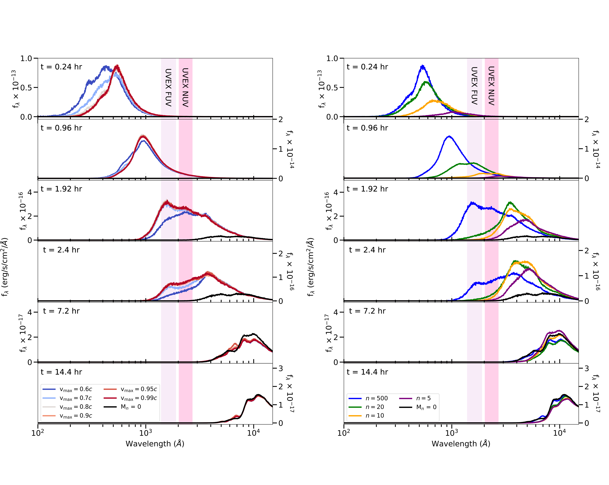
图注：\(\textit{Left Panel:}\) Spectral sequence for $n = 500$, $M_n = 10^{-4}$ M$_\odot$ and variable \vmax\, with UVEX FUV and NUV filter regions highlighted at an assumed distance of 40 Mpc. The peak wavelength and peak flux of the spectrum shift in response to the varying temperature and photospheric radius at $t \lesssim 1$ hr, with lower \vmax\, resulting in hotter but smaller photosphere. \(\textit{Right Panel:}\) Same as left panel, but for variable values of $n$ and \vmax\, is held constant at 0.9$c$. As the neutrons are more mixed with the dynamical ejecta, the spectral peak at $t \lesssim$ hours shifts redward and becomes fainter, resulting in a delayed and brighter red peak due to higher opacities.
对应解读：对应“建议重点查看的图表”第4项，以及“关键图表逐图导读”图4：峰值波长、峰值通量与最大速度和混合程度的关系。
入选理由：该图专门比较不同 \(v_max\) 和不同混合参数 n 对早期谱峰位置、峰值通量和红化演化的影响，正好对应日报中关于参数退化和多色观测打破退化的讨论。相比单一光变图，它更能说明最大速度与混合程度如何控制可观测 SED。
来源与置信度：\(arxiv_source\)；high；\(arxiv_source\) / KNe.tex:figure[7]
Fig05
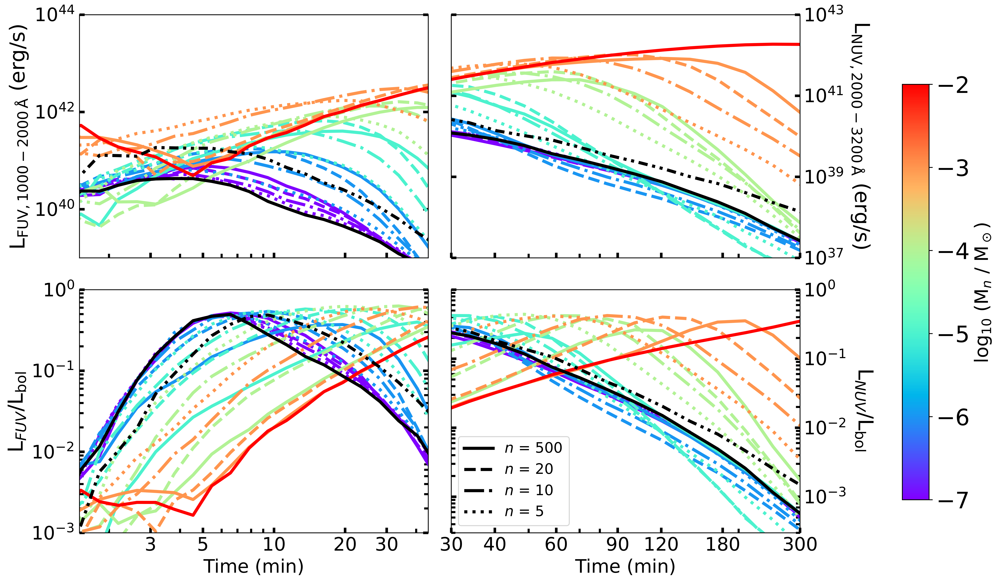
图注：\(\textit{Top Left Panel:}\) Zoom-in on FUV luminosity from Figure \(\ref{Fig:ConstLC},\) with varying composition profile of free neutrons (linestyle) from minimally mixed ($n = 500$) to highly mixed ($n = 5$) for $v_{\rm max} = 0.7c$ models. The neutron-free models are shown in black. For $M = 3\times10^{-3}$ M$_\odot$ models, higher degrees of mixing of the free neutrons with the dynamical ejecta result in suppression of FUV emission, as the longer diffusion timescale reprocesses emission to optical emission at later times. \(\textit{Bottom Left Panel:}\) Fraction of bolometric luminosity emerging as FUV, with each model peaking at $\sim60\%$ and rapidly declining post-peak. \(\textit{Top Right Panel:}\) Same as Top Left Panel, but for NUV luminosity. For free neutron mass $\lesssim 10^{-5}$ M$_\odot$, the additional hydrogen atoms leads to less efficient ionization in $r$-process elements which absorb NUV radiation and cause the transient to appear dimmer in the UV compared to the neutron-free model. \(\textit{Bottom Right Panel:}\) Same as Bottom Left Panel, but for NUV luminosity. In the first hour, most of the luminosity that escapes is in the FUV/NUV indicating the importance of UV coverage to get accurate bolometric luminosities.
对应解读：对应“建议重点查看的图表”第3、7项，以及模型拟合段落中关于 FUV/NUV 残差和无中子对照的讨论。
入选理由：该图聚焦 FUV/NUV 光变及其占总光度比例，并显式比较不同混合程度和无中子模型。它能细化 Fig03 中最重要的紫外诊断，展示自由中子混合如何压低或增强 UV 输出，以及为什么早期 FUV/NUV 覆盖比单一光学点更有判别力。
来源与置信度：\(arxiv_source\)；high；\(arxiv_source\) / KNe.tex:figure[5]
Fig10
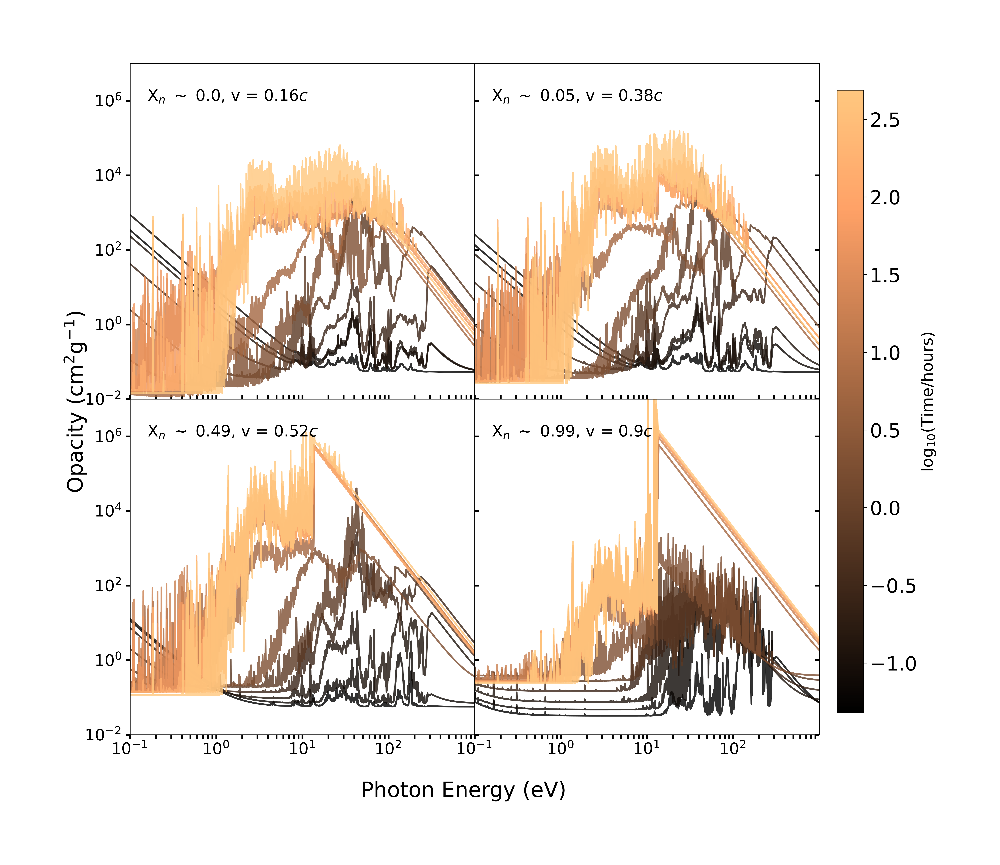
图注：Time evolution of the wavelength-dependent opacity in representative neutron-free to neutron-rich layers of the ejecta for the $M_n = 10^{-4}$ M$_\odot$, $v_{\rm max} = 0.9c$, $n = 10$ model. Much of the opacity at $t \lesssim 1$ hr is dominated by a combination of bound-bound and bound-free from the $r$-process species, even in zones where there is very little $r$-process mass.
对应解读：对应“建议重点查看的图表”第5项，以及详细解读中关于频率依赖不透明度、非 LTE 和紫外输出系统误差的讨论。
入选理由：该图给出从无中子到富中子层的波长依赖不透明度随时间演化，直接支撑论文技术增量中频率依赖不透明度对 UV/XUV 辐射转移的重要性。它比普通光变图更适合说明紫外预测的物理来源和系统不确定性。
来源与置信度：\(arxiv_source\)；high；\(arxiv_source\) / KNe.tex:figure[10]
强相关工作
这篇工作直接延续自由中子千新星前兆的理论线索。早期半解析研究提出，最外层高速抛射物中的自由中子衰变会产生小时内的蓝/紫外前兆；本文把这个图像推进到更现实的频率依赖辐射转移和非热效应。建议检索关键词包括 “free neutron precursor kilonova”、“neutron decay merger ejecta”、“early ultraviolet kilonova”、“Sedona radiative transfer kilonova”。
它也与 GW170817/AT2017gfo 的早期蓝千新星解释有关，但不是声称 GW170817 已经探测到自由中子闪光。GW170817 的最早光学/紫外数据一般在并合后若干小时量级，且受普通蓝千新星、余辉和观测覆盖限制影响。未来同类事件若有分钟级紫外覆盖，才更适合检验本文提出的诊断。
潜在相反或竞争解释包括喷流余辉早期上升、喷流冲击加热的茧辐射、常规高电子分数 \(r\)-过程蓝千新星、以及冷却包层辐射。与这些模型区分的关键不是“早期很蓝”这一点，而是 X 射线/极紫外到远紫外/近紫外的快速谱峰迁移、凸起持续时间和与光学/红外后续演化的一致性。
同一事件 / 同类源线索：
- https://arxiv.org/abs/2609.09311
- https://arxiv.org/pdf/2609.09311
- https://arxiv.org/abs/1710.05832
- https://arxiv.org/abs/1710.05463
相似工作：
基础理论 / 方法工作：
相反观点 / 张力线索：
7. Dispersion Measure Variability in Fast Radio Bursts from Photoionization
- 来源：arXiv / astro-ph.HE
- 链接：https://arxiv.org/abs/2609.09285v1
- 作者：Brian D. Metzger
- 评分：novelty 8/10，importance 8/10，relevance 8/10，final 9.00/10
- 推荐理由：提出重复 FRB 的 DM 变化由可变中心引擎 X 射线光致电离驱动，并给出 FRB 121102 未来 DM 反转的可检验预言；与磁星、FRB 环境和高能活动联系明确。
中文题目：光电离导致的快速射电暴色散量变化
做了什么：这篇文章讨论重复快速射电暴的本地色散量 \(\mathrm{DM}\) 为什么会在几年尺度上升降。Metzger 提出，观测到的 \(\mathrm{DM}\) 变化不一定需要由激波不断电离超新星抛射物来解释；更自然的机制可能是中心磁星或其星云的可变 X 射线辐射改变年轻超新星抛射物、特别是被脉冲星风星云扫起的致密壳层的电离度。该模型把 FRB 活动增强、X 射线照射增强和 \(\mathrm{DM}\) 上升联系起来，并指出 FRB 121102 在 2018--2019 年活跃期附近出现 \(\mathrm{DM}\) 峰值，与这种图像相符。
为什么重要：重复 FRB 的 \(\mathrm{DM}\) 通常被当作传播路径上电子柱密度的被动量度，但这篇文章强调：在年轻磁星环境中，\(\mathrm{DM}\) 本身可以是一个随中心引擎辐射状态响应的动态变量。若成立，\(\mathrm{DM}\) 时间演化就不只是测距和扣除星际介质的麻烦项，而是诊断 FRB 本地环境、中心引擎活动史和超新星抛射物电离结构的工具。
理论 / 观测 / 仪器方法价值：理论价值在于把重复 FRB 的 \(\mathrm{DM}\)、\(\mathrm{RM}\)、持续射电源和磁星风星云统一到同一个年轻源环境中；观测价值在于给出可检验预言：持续活跃的源应在电离和复合时间平滑后出现 \(\mathrm{DM}\) 变平或回升；方法价值在于提醒分析者不要只用几何膨胀或激波电离解释 \(\mathrm{DM}\) 趋势，而要同时拟合中心 X 射线光度史和局部电离平衡。
为什么应该关注：如果你关心 FRB 作为宇宙学探针，这篇文章说明本地 \(\mathrm{DM}\) 可能随源状态变化，不能简单当作常数噪声。如果你关心磁星模型，它给出了一条把射电暴活动率、X 射线输出和超新星遗迹物理连接起来的具体路径。如果未来 FRB 121102 的 \(\mathrm{DM}\) 确实因近期再活跃而停止下降甚至回升，这将是对年轻磁星本地环境模型很直接的检验。
展开详细解读：文章讲解、背景、理论、重点章节、图表与相关工作
文章详细讲解
科学问题：重复 FRB 中若干源显示 \(\mathrm{DM}\) 随时间变化，其中 FRB 121102 的 \(\mathrm{DM}\) 曾在约 2019 年前后达到高点，此后下降。传统直觉会把 \(\mathrm{DM}\) 变化归因于源周围等离子体的几何膨胀、激波扫过抛射物造成的电离前沿，或环境密度非均匀性。但这些解释有一个困难：年轻超新星抛射物富含金属，激波后气体可以通过金属线辐射高效冷却，并且在与冷气体湍混后可能复合，因此“激波一过就永久增加自由电子柱密度”的假设并不稳固。
作者怎么做：文章提出替代图像，即 \(\mathrm{DM}\) 的快速可变部分主要来自中心引擎 X 射线照射导致的光电离。年轻磁星或其风星云在超新星抛射物内部膨胀，形成热非热粒子星云，并在外侧扫出致密壳层。这个壳层密度高、体积小、原本弱电离，因此即使电离层几何厚度不大，也能贡献可观电子柱密度；同时由于密度高，它的电离和复合时间都可以落在年到数年尺度，正好对应观测到的 \(\mathrm{DM}\) 演化。
关键结果：模型预言 \(\mathrm{DM}\) 应该由两部分叠加：一部分是超新星抛射物整体膨胀带来的缓慢下降，近似随时间按负幂律减小；另一部分是致密壳层对中心 X 射线光度变化的延迟响应。若 FRB 活跃期伴随更强中心引擎高能辐射，则源的 \(\mathrm{DM}\) 会在经过电离和复合时间平滑后上升。FRB 121102 的 \(\mathrm{DM}\) 高点靠近 2018--2019 年的高活动阶段，包括 2019 年 FAST 记录的大量暴发，这一点被作者视为该模型的重要线索。
局限和下一步：文章的核心不在于给出唯一参数反演，而是提出可检验的物理机制。主要不确定性包括中心 X 射线光度与射电暴活动率之间的定量关系、壳层的混合和 clumping 程度、金属丰度与冷却曲线、以及观测中 \(\mathrm{DM}\) 测量对频率结构和 burst profile 演化的系统误差。下一步最关键的是对 FRB 121102 和类似重复源做长期、同一处理流程的 \(\mathrm{DM}\) 监测，并与暴发率、持续射电源通量、\(\mathrm{RM}\) 和可能的 X 射线上限联合比较。
关键结果是怎么做出来的
本文最重要的证据链从 FRB 121102 的长期 \(\mathrm{DM}\) 演化开始。作者关注的不是单次暴发的绝对 \(\mathrm{DM}\)，而是多年尺度趋势：该源的 \(\mathrm{DM}\) 在早期观测中上升，约在 2018--2019 年活跃阶段附近达到峰值，之后几年转为下降。样本意义上，FRB 121102 是少数同时具备重复暴发、精确宿主定位、紧致持续射电源、强 \(\mathrm{RM}\) 变化和长期 \(\mathrm{DM}\) 监测的源，因此它虽然不是大样本统计，却是检验年轻磁星环境模型的关键个例。
作者的模型比较主要针对两类物理解释：一类是激波电离或动力学扫掠导致自由电子柱密度改变，另一类是时间可变 X 射线光电离改变已有气体的电离分数。文章指出，若被激波加热的金属富集抛射物能迅速线冷却并复合，那么单靠激波不容易维持几年尺度的新增 \(\mathrm{DM}\)。相反，致密壳层由于电离时间和复合时间短，可以对中心源辐射变化快速响应，同时在辐射减弱后又自然让 \(\mathrm{DM}\) 回落。
统计意义在本文中更接近物理一致性检验，而不是传统的 \(p\)-value 发现声明。作者用时间尺度、量级估算和 FRB 121102 活跃史的时间对应关系来论证：观测到的 \(\Delta \mathrm{DM}\) 幅度与致密弱电离壳层中可被光电离的电子柱密度相当；响应时间与壳层中复合时间相当；峰值时间与暴发富集时期相近。读者应重点检查论文中 \(\mathrm{DM}\) 随时间的曲线、活动率或暴发风暴时间标记，以及模型曲线中缓慢膨胀项和快速电离响应项的分解。
关键稳健性问题包括：\(\mathrm{DM}\) 测量是否受不同望远镜频段、模板、散射尾和 burst 频率漂移影响；活动率是否能可靠追踪未观测到的 X 射线照射；壳层是否足够致密且弱电离以提供快速可变 \(\mathrm{DM}\)；以及是否存在其他机制，例如视线穿过非均匀等离子体、星云磁化结构变化或宿主星际介质湍动。本文的强预言是，如果 FRB 121102 的近期再活跃持续，\(\mathrm{DM}\) 下降应当变平，甚至在未来几年重新上升；这是比回顾性拟合更有力的检验。
展开背景、理论、公式、模型、章节和图表导读
背景知识
FRB 的 \(\mathrm{DM}\) 是射电脉冲在冷等离子体中传播产生的频率相关延迟，对应视线方向自由电子柱密度。对于非重复 FRB，\(\mathrm{DM}\) 常被用于估计星际介质、星系际介质和宿主星系贡献；对于重复 FRB，尤其是有长期监测的源，\(\mathrm{DM}\) 的时间变化则提供了源附近等离子体演化的信息。
FRB 121102 是该领域的原型重复源之一。它被定位到一个低金属丰度矮星系的恒星形成区，并与紧致持续射电源空间重合，还显示极高且随时间变化的 \(\mathrm{RM}\)。这些事实长期支持一种年轻磁星嵌在超新星遗迹或磁星风星云中的图像：持续射电源来自相对论粒子星云，\(\mathrm{RM}\) 来自强磁化等离子体，\(\mathrm{DM}\) 的局部部分来自抛射物和星云边界结构。
历史上，解释 \(\mathrm{DM}\) 演化时常见两种思路。一种是超新星抛射物自由膨胀，密度降低，使 \(\mathrm{DM}\) 随时间下降；另一种是年轻源的激波或辐射逐渐电离更外层抛射物，使 \(\mathrm{DM}\) 可能暂时上升。FRB 121102 先升后降的行为推动人们寻找既能产生上升又能产生下降的机制。Metzger 的文章强调，电离状态本身可以随中心源活动变化，而不必要求气体质量柱密度发生同样幅度的动力学变化。
现在重新看这个问题的原因是观测基线已经足够长，重复源数量也在增加。过去几年宽带接收机、CHIME、FAST 和其他监测项目积累了大量重复暴发，\(\mathrm{DM}\) 的年际变化不再只是测量误差边缘的现象。同时，银河磁星 SGR 1935+2154 产生类似 FRB 的射电暴并伴随高能活动，使“射电暴活动和高能辐射状态相关”的设想更有物理动机。
一个常见误区是把 \(\mathrm{DM}\) 当作纯几何量：只要电子总数或路径长度不变，\(\mathrm{DM}\) 就不变。实际上，\(\mathrm{DM}\) 只对自由电子敏感，弱电离金属富集气体的电离分数小变化就可能改变可观电子柱密度。另一个误区是认为 \(\mathrm{DM}\) 与 \(\mathrm{RM}\) 必须同向变化；但 \(\mathrm{RM}\) 还依赖磁场方向和强度，因此同一个环境中二者可以有不同时间行为。
基础理论 / 方法脉络
基础物理图像是冷等离子体色散：射电脉冲的群速度低于光速，低频信号比高频信号晚到，延迟正比于自由电子柱密度。若源附近存在年轻超新星抛射物，视线上的自由电子数不仅取决于质量分布，还取决于电离分数。对于富金属、低温或已冷却气体，电离分数可能远小于一，因此中心源辐射状态变化会直接改变 \(\mathrm{DM}\)。
在年轻磁星模型中，中心紧致星注入磁化风和相对论粒子，形成膨胀星云。星云向外推动超新星抛射物，在接触面附近扫起壳层。壳层密度高，厚度相对小，因而复合率高；它不像稀薄外层抛射物那样响应很慢，而是可以在较短时间内达到新的光电离平衡。这正是本文把快速 \(\mathrm{DM}\) 变化归因于壳层的关键。
光电离平衡由电离率和复合率竞争决定。电离率与中心 X 射线光度、谱形、壳层半径和吸收截面有关；复合率与电子密度、离子密度和温度有关。若 X 射线光度升高，电离分数上升，\(\mathrm{DM}\) 增加；若光度降低，气体复合，\(\mathrm{DM}\) 下降。由于响应不是瞬时的，观测到的 \(\mathrm{DM}\) 应是中心活动史经过一个电离/复合核函数平滑后的结果。
本文的一个重要假设是 FRB 活动率可以作为中心引擎高能活动的间接示踪。这个假设不必要求每个射电暴都有可探测 X 射线伴随，而是要求长期平均的暴发富集期对应更高的电离辐射输出。潜在退化在于：观测到的暴发率受望远镜灵敏度、频段、传播闪烁和源本征频率结构影响，并不等同于真实能量注入率。
观测上还要警惕 \(\mathrm{DM}\) 的定义问题。重复 FRB 的暴发有复杂时频结构，最优 \(\mathrm{DM}\) 有时是最大化脉冲锐度的经验量，而不完全等同于传播积分量。散射、等离子体透镜、频率漂移和多组分脉冲都可能造成表观 \(\mathrm{DM}\) 偏差。因此，检验本文模型时最好使用同一管线、同一频段或经过交叉校准的 \(\mathrm{DM}\) 时间序列。
公式与推导
从冷等离子体传播开始，群速度导致的到达时延可写为
其中 \(\nu_1\) 和 \(\nu_2\) 是两个观测频率，\(K_{\rm DM}\) 是色散常数，\(\mathrm{DM}\) 是自由电子柱密度。这一式子说明观测者实际测到的是频率相关延迟，而非直接测到气体质量。
自由电子柱密度定义为
其中 \(n_e\) 是自由电子数密度，\(x_e\) 是电离分数，\(n_{\rm ion}\) 是离子数密度，\(Z_{\rm eff}\) 是平均每个离子可贡献的电子数，\(l\) 是视线路径。本文关注的是 \(x_e\) 随中心源辐射变化，而不只是 \(n_{\rm ion}\) 或几何路径变化。
若超新星抛射物近似同 homologous 膨胀，特征半径 \(R_{\rm ej}\approx v_{\rm ej}t\)，平均密度随时间下降为
其中 \(M_{\rm ej}\) 是抛射物质量，\(v_{\rm ej}\) 是速度，\(t\) 是源年龄。若电离分数近似不变，则柱密度尺度为
其中 \(μ\) 是平均离子量纲因子，\(m_p\) 是质子质量。这个负幂律项对应本文所说的慢速长期下降背景。
对于被星云扫起的壳层，可用面密度近似写为
其中 \(M_{\rm sh}\) 和 \(R_{\rm sh}\) 分别是壳层质量和半径，\(x_{e,\rm sh}\) 是壳层电离分数。即使 \(M_{\rm sh}\) 不变，只要 \(x_{e,\rm sh}\) 改变，\(\mathrm{DM}_{\rm sh}\) 就会改变。
光电离率可估算为
其中 \(L_\nu\) 是中心源谱光度，\(h\nu\) 是光子能量，\(\sigma_\nu\) 是光电离截面，\(\nu_0\) 是电离阈值频率。它把可变 X 射线输出直接连接到壳层电离状态。
复合率由
给出，其中 \(\alpha_{\rm rec}(T)\) 是温度 \(T\) 下的复合系数。对单区近似，电离分数演化可写为
第一项表示中性或低电离离子被光子电离，第二项表示自由电子与离子复合。
在准平衡极限下，令 \(dx_e/dt=0\)，得到
这表明低密度或强照射会提高 \(x_e\)，而高密度壳层在照射减弱时会迅速复合。
响应时间可近似写为
它决定 \(\mathrm{DM}\) 对中心光度变化的平滑宽度。本文的物理要求是壳层的 \(t_{\rm resp}\) 与观测到的年尺度 \(\mathrm{DM}\) 变化相匹配。
总观测趋势可概括为
其中 \(z\) 是红移，\(\mathrm{DM}_{\rm MW}\)、\(\mathrm{DM}_{\rm IGM}\) 和 \(\mathrm{DM}_{\rm host}\) 分别表示银河系、星系际介质和宿主星系的较稳定贡献。对同一源的时间变化而言，重点是局部项 \(\mathrm{DM}_{\rm ej}(t)+\mathrm{DM}_{\rm sh}(t)\) 的相对变化。
模型拟合 / 应用方法
这类模型拟合的直接观测量是每次暴发或每个时间 bin 的 \(\mathrm{DM}\)，以及相应的不确定度、观测频段、脉冲形态和时间戳。最简单做法是把 \(\mathrm{DM}(t)\) 分解为常数项、随膨胀下降的慢项和受活动史驱动的响应项。慢项可用 \(t^{-2}\) 或更一般的幂律表示；快速项可由中心 X 射线光度或暴发率经过一阶响应方程卷积得到。
似然通常可以从高斯残差开始，即比较观测 \(\mathrm{DM}_i\) 与模型 \(\mathrm{DM}_{\rm mod}(t_i)\) 的差异。但对重复 FRB 来说，误差不一定完全高斯，因为不同暴发的时频结构会导致额外散布。因此实际拟合最好加入 intrinsic scatter 或管线系统误差项，并检查残差是否与频段、望远镜、信噪比、散射时间或 burst drift rate 相关。
参数退化很明显。壳层质量 \(M_{\rm sh}\)、半径 \(R_{\rm sh}\)、平均离子量、金属丰度和电离分数只通过电子柱密度组合进入 \(\mathrm{DM}_{\rm sh}\)，很难由 \(\mathrm{DM}\) 单独拆开。响应时间又同时依赖 \(n_{\rm ion}\)、温度和复合系数。若没有 \(\mathrm{RM}\)、持续射电源大小、谱演化或 X 射线上限辅助，许多参数只能得到量级约束。
模型比较上，读者应关注光电离模型是否显著优于纯幂律下降、纯线性趋势或经验样条模型。若加入活动率驱动项只是在过拟合稀疏数据，结论就不强；若同一组响应时间和幅度能同时解释 \(\mathrm{DM}\) 峰值、下降斜率以及后续可能回升，则物理可信度会提高。贝叶斯证据、信息准则或交叉验证都可用于判断额外参数是否值得。
模型可能失败的地方包括：FRB 活动率与 X 射线电离光度不相关；壳层被高度 clumpy 化导致一维单区响应无效；\(\mathrm{DM}\) 变化主要来自等离子体透镜或多路径传播而非真实电子柱变化；或者源年龄和抛射物质量使壳层柱密度不足。实际应用中，应把本文机制当作一个可检验的环境诊断框架，而不是把某个拟合参数视为唯一物理实测量。
重点章节 / 结果段落怎么读
-
引言和观测动机：读者应先看作者如何把银河磁星射电暴、重复 FRB 的持续射电源、\(\mathrm{RM}\) 变化和 \(\mathrm{DM}\) 变化串起来。重点不是“磁星能否产生 FRB”这个宽泛问题，而是为什么 \(\mathrm{DM}\) 年际变化可以反过来约束源周环境。
-
旧解释的物理困难：论文中关于激波电离、金属线冷却和复合的讨论很关键。这里决定了作者为什么不满足于“激波扫过抛射物导致 \(\mathrm{DM}\) 增加”的解释。读者应检查冷却时间、复合时间和动力学时间的量级比较。
-
光电离模型：这是核心方法段。应关注作者如何把中心 X 射线辐射、壳层密度、壳层半径、电离分数和 \(\mathrm{DM}\) 响应时间联系起来。即使具体参数有不确定性，量级关系是否自然落在观测范围内才是关键。
-
FRB 121102 应用：读者应重点看 \(\mathrm{DM}\) 时间序列与 2018--2019 年活跃期的比较，以及模型如何解释先升后降。这里需要区分后验解释和真正预言：文章最值得记住的是对未来几年 \(\mathrm{DM}\) 变平或回升的预测。
-
讨论和可检验预言：最后部分通常会涉及与 \(\mathrm{RM}\)、持续射电源、其他重复 FRB 和未来监测的关系。读者应寻找作者是否说明了哪些观测会证伪模型，例如活跃期持续但 \(\mathrm{DM}\) 继续按原斜率下降。
建议重点查看的图表
-
\(\mathrm{DM}\) 随时间变化图：检查 FRB 121102 的数据点、误差棒、不同望远镜或频段标记，以及峰值是否确实靠近 2018--2019 年活跃期。
-
活动率或暴发风暴时间标记：看论文是否把 burst-rich episodes 与 \(\mathrm{DM}\) 响应放在同一时间轴上；重点是时间滞后是否与模型响应时间一致。
-
模型分解图：检查总 \(\mathrm{DM}\) 曲线中慢速膨胀下降项和快速光电离壳层项各自贡献，避免只看总曲线而忽略参数可替代性。
-
电离/复合时间尺度图或参数图：看 \(t_{\rm ion}\)、\(t_{\rm rec}\) 与源年龄、壳层密度、X 射线光度的关系，确认年尺度响应是否需要极端参数。
-
壳层柱密度或 \(\Delta\mathrm{DM}\) 量级图：检查模型能否在合理 \(M_{\rm sh}\)、\(R_{\rm sh}\)、\(x_e\) 下产生观测到的 \(\Delta\mathrm{DM}\)。
-
稳健性或替代模型比较表：若有，应看纯膨胀、激波电离和光电离模型在趋势、响应时间和幅度上的差别，而不只看最佳拟合线是否穿过数据点。
关键图表逐图导读
图 1：若论文给出 FRB 121102 的 \(\mathrm{DM}\) 时间序列，横轴应是观测年份或源年龄代理，纵轴是扣除固定贡献后的 \(\mathrm{DM}\) 或观测 \(\mathrm{DM}\)。数据点可能来自不同观测项目，模型线可能包括慢速下降背景和光电离响应。读图陷阱是不同频段测得的 \(\mathrm{DM}\) 可能存在系统偏差，不能把每个小幅跳动都解释成真实电子柱变化。
图 2：若展示暴发活动率与 \(\mathrm{DM}\) 的关系，横轴通常仍是时间，纵轴可能一边是 burst rate，另一边是 \(\mathrm{DM}\)。关键是看 2018--2019 年活跃期和 \(\mathrm{DM}\) 峰值的相对时序。读图时不要要求严格同步，因为模型预期有电离和复合时间造成的平滑与滞后。
图 3：若展示壳层电离结构或 \(\mathrm{DM}\) 贡献分解，横轴可能是半径、时间或壳层密度，纵轴是电离分数、电子柱密度或 \(\Delta\mathrm{DM}\)。模型线的物理含义是：同一质量壳层在不同照射强度下可贡献不同自由电子柱。陷阱是参数组合高度退化，单条曲线不应被理解为唯一解。
图 4：若展示时间尺度比较，横轴可能是源年龄、壳层密度或 X 射线光度，纵轴是 \(t_{\rm ion}\)、\(t_{\rm rec}\) 或 \(t_{\rm resp}\)。读者应看年尺度区域是否覆盖 FRB 121102 所需参数，而不是只看定性趋势。若所需区域非常窄或要求极高光度，就会削弱模型自然性。
图 5：若有未来预测图，横轴是未来年份，纵轴是 \(\mathrm{DM}\)。关键线索是近期活动持续时模型预言 \(\mathrm{DM}\) 下降斜率变小甚至反转。读图陷阱是短期随机散布可能掩盖趋势，因此需要多年监测和统一 \(\mathrm{DM}\) 提取方法。
论文原图 / 可嵌入图片
Fig03
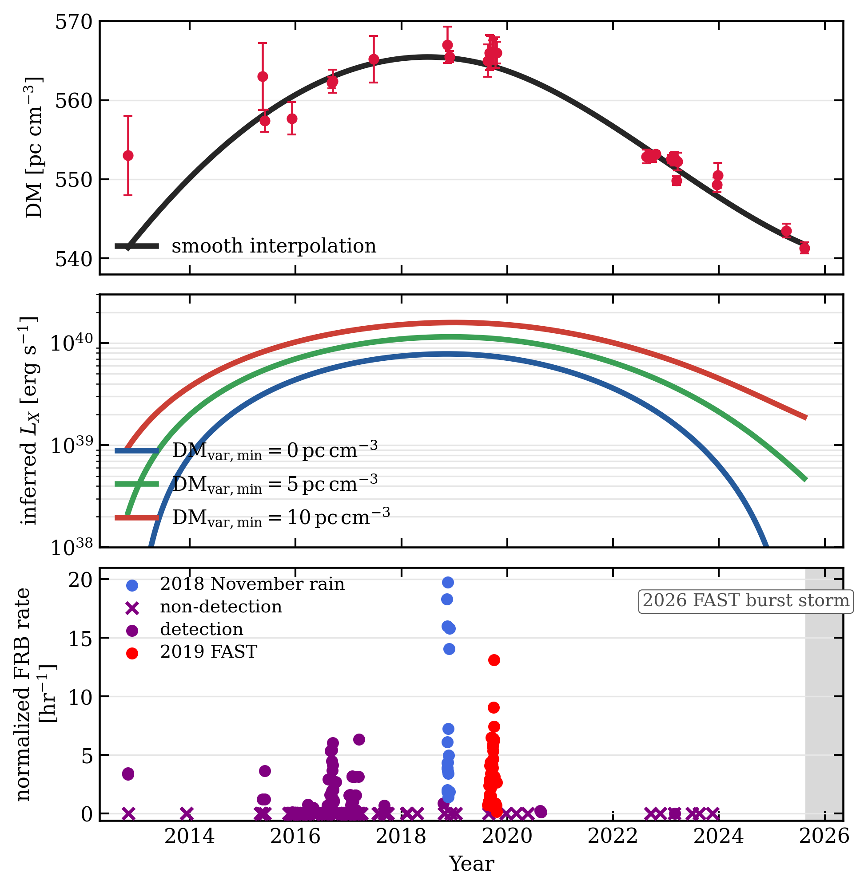
图注：Comparison between the secular DM evolution of FRB~121102 and its radio activity history. Top: binned DM measurements compiled by \(\citet{Waxman2026}\) (their Table~2), together with a smooth interpolation used only as a guide. Middle: ionizing luminosity inferred from the smooth DM curve under the quasi-equilibrium assumption, using Eq.~\(\eqref{eq:LX_from_DM}\) and adopting the fiducial shell parameters in that equation. Different curves correspond to different assumed minimum values of the variable shell contribution, ${\rm DM}_{\rm var,min}$. Bottom: normalized L-band FRB activity rates from \(\citet{Braga2025},\) their Fig. 3. Purple circles and crosses denote detections and non-detections, respectively; blue and red points highlight the burst-rich Arecibo campaign in November 2018 (the ``November rain'' sample; \citealt{Jahns2023}) and the 2019 FAST sample \(\citep{Li2021Nature}.\) The rates have been normalized across heterogeneous telescopes and should be regarded as qualitative indicators of the radio activity state. The gray shaded band marks the epoch of the recent FAST report of renewed hyperactivity \(\citep{ATel17921}.\)
对应解读：对应“建议重点查看的图表”第1、2、3项，以及“关键图表逐图导读”中的图1、图2和模型拟合段落。
入选理由：这是最直接支撑日报核心解读的图：同一图内给出 FRB 121102 的 DM 时间序列、由 DM 反推的电离光度曲线，以及 L 波段暴发活动率历史，并标出 2018 年 Arecibo 活跃期、2019 年 FAST 暴发风暴和近期 FAST renewed hyperactivity。它直接检验日报强调的关键判断——DM 峰值是否靠近 2018--2019 年活跃期、活动率与 DM 响应是否在同一时间轴上相关，以及未来 DM 下降是否可能变平或反转。相比其他候选图，它包含真实观测数据、误差/分箱趋势和活动率对照，科学支撑价值最高。
来源与置信度：\(arxiv_source\)；high；\(arxiv_source\) / DM.tex:figure[3]
Fig02
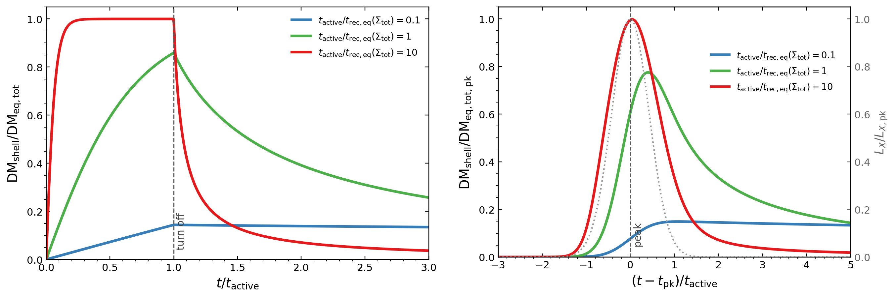
图注：Evolution of the DM response during and after finite episodes of ionizing X-ray activity. The upper panel shows the analytic solution for an idealized constant-luminosity episode of duration $t_{\rm active}$ (Eqs.~\(\ref{eq:x_on_solution}\) and \ref{eq:x_off_solution}); the lower panel shows the result of numerically solving Eq.~\(\eqref{eq:xdot}\) for a Gaussian luminosity history with full-width half-maximum $t_{\rm active}$. Curves are labeled by $t_{\rm active}/t_{\rm rec,eq}(\Sigma_{\rm tot})$ and are normalized to the equilibrium DM corresponding to a steady luminosity equal to the peak luminosity of the episode. The curves may be interpreted as the response of a representative layer near $\Sigma\simeq\Sigma_{\rm tot}$, which is a good proxy for the shell-integrated DM because both the equilibrium DM and the initial DM growth rate are weighted toward large columns. For slowly varying luminosity, the DM remains close to equilibrium and tracks ${\rm DM}_{\rm eq}\propto L_{\rm X}^{1/2}$. For short activity episodes, the DM rises approximately with the accumulated ionizing fluence, reaches only a fraction of ${\rm DM}_{\rm eq,tot}$, and then undergoes a slower recombination-powered decline after the luminosity fades.
对应解读：对应“建议重点查看的图表”第4项，以及“关键图表逐图导读”中的图4和模型拟合段落关于响应时间、卷积和平滑滞后的讨论。
入选理由：该图展示有限时长 X 射线活动 episode 之后 DM 如何上升、滞后和平滑衰减，并比较不同 \(t_active/t_rec,eq\) 情况。它是理解光电离模型是否能自然产生年尺度 DM 响应的关键图，直接支撑日报中关于不要要求 DM 与暴发活动严格同步、应关注电离/复合时间造成滞后的解读。虽然不是 FRB 121102 的观测拟合图，但它给出了模型动态响应的物理机制。
来源与置信度：\(arxiv_source\)；high；\(arxiv_source\) / DM.tex:figure[2]
Fig01
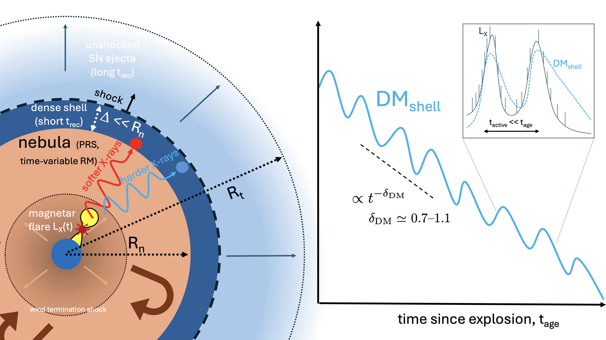
图注：Schematic illustration of the photoionization-regulated DM scenario. A central magnetar launches a relativistic wind that is thermalized at a wind termination shock and inflates a magnetized nebula, identified with the persistent radio source (PRS). Turbulence and magnetic-field fluctuations inside the nebula can give rise to the large, time-variable RM, while its secular decline reflects the expansion and dilution of the magnetized nebula confined by the surrounding ejecta \(\citep{MargalitMetzger2018}.\) The nebula drives a forward shock into the freely expanding supernova ejecta, sweeping the inner ejecta into a thin dense shell of thickness $\Delta\ll R_{\rm n}$. This dense shell has a short recombination time and is photoionized by the central X-ray luminosity: softer X-rays are absorbed closer to the inner edge, while harder X-rays penetrate to larger columns. The resulting ionized column produces the time-variable shell contribution, ${\rm DM}_{\rm shell}$. More extended, unswept ejecta near the transition radius $R_t$ have lower density and longer recombination times, and therefore contribute mainly to a slowly varying or approximately constant local DM. Right: on the system age, the shell DM declines secularly as the ejecta expand, approximately ${\rm DM}_{\rm shell}\propto t_{\rm age}^{-\delta_{\rm DM}}$. On shorter activity timescales, $t_{\rm active}\ll t_{\rm age}$, individual magnetar flares and longer active episodes in $L_{\rm X}(t)$ drive a smoothed and delayed DM response as the shell approaches and departs from photoionization-recombination equilibrium.
对应解读：对应“建议重点查看的图表”第3、5项，以及“关键图表逐图导读”中的图3和详细解释中关于致密壳层、PRS、RM 与 \(DM_shell\) 的物理图像。
入选理由：该图概括了本文提出的光电离调制 DM 场景：磁星风星云、持续射电源、扫起的致密壳层、软/硬 X 射线在壳层中的吸收深度，以及 shell DM 的长期膨胀下降和短期活动响应。它有助于读者理解 DM 可变部分为什么主要来自高密度弱电离壳层，以及为什么扩展抛射物主要贡献慢变或近似常数项。其价值偏概念框架，不如 Fig03 的观测对照直接，但对解释模型组成不可或缺。
来源与置信度：\(arxiv_source\)；high；\(arxiv_source\) / DM.tex:figure[1]
强相关工作
这篇工作属于 FRB 121102 同源环境解释的一支。应把它与该源的重复发现、精确定位、持续射电源发现和极高 \(\mathrm{RM}\) 观测放在一起读；这些论文共同建立了“年轻磁星加致密磁化环境”的语境。检索关键词可用“FRB 121102 persistent radio source rotation measure dispersion measure young magnetar nebula”。
它也应与银河磁星 SGR 1935+2154 的射电暴和 X 射线爆发关联相比较，因为后者提供了磁星能产生 FRB-like 射电暴的本地实验证据。本文更进一步，把高能活动是否能改变周围气体电离度作为 \(\mathrm{DM}\) 演化机制。检索关键词可用“SGR 1935+2154 FRB X-ray burst magnetar”。
相反或竞争观点包括：\(\mathrm{DM}\) 变化由超新星抛射物自由膨胀、激波电离、等离子体透镜、宿主星际介质湍动或测量系统误差主导。判断这些模型的关键不是哪一个能画出趋势线，而是谁能同时解释变化幅度、时间尺度、与活动期的相位关系以及 \(\mathrm{RM}\) 和持续射电源行为。检索关键词可用“FRB DM variability shock ionization supernova ejecta plasma lensing measurement systematics”。
同一事件 / 同类源线索：
- https://arxiv.org/abs/2609.09285
- https://arxiv.org/abs/1603.00581
- https://arxiv.org/abs/1701.01098
- https://arxiv.org/abs/1801.03965
相似工作：
基础理论 / 方法工作：
- https://arxiv.org/abs/1603.00581
- https://arxiv.org/abs/1701.01098
- https://arxiv.org/abs/2005.10828
- https://arxiv.org/abs/2005.10324
相反观点 / 张力线索：
（未提供）
8. The Evolution of Thermal and Non-thermal Emission Components in GRB 250920C
- 来源：arXiv / astro-ph.HE
- 链接：https://arxiv.org/abs/2609.09710v1
- 作者：Jia-Ming Chen, Ke-Rui Zhu, Shan Chang, Dan Zhu, Yu-Lu Gong, Zhao-Yang Peng, Yong-Gang Zheng, Li Zhang
- 评分：novelty 7/10，importance 7/10，relevance 9/10，final 8.70/10
- 推荐理由：Fermi/GBM and Swift/BAT time-resolved GRB prompt-emission analysis with thermal-to-nonthermal transition interpretation; directly relevant to GRB high-energy emission physics.
中文题目：GRB 250920C 中热成分与非热成分的演化
做了什么：这篇文章用 \(Fermi\)/GBM 和 \(Swift\)/BAT 对 GRB 250920C 的 prompt 辐射做时间结构和分时段谱分析。作者把爆发分成由长静默期隔开的两个辐射阶段 \(\mathrm{EI}\) 和 \(\mathrm{EII}\)，并用经验谱、黑体加幂律、热加非热复合模型以及物理同步辐射模型做贝叶斯拟合。核心结论是：\(\mathrm{EI}\) 中黑体成分显著，温度随时间下降，热通量占比较高，推断外流更像热主导的重子火球；\(\mathrm{EII}\) 则主要由非热同步辐射解释，磁化度下限 \(\sigma_{\min}\sim1.1\)–\(4.3\)，暗示可能转为 Poynting 流主导。
为什么重要：GRB prompt 辐射的能量载体到底是热火球还是磁主导外流，是高能天体物理中长期未解决的问题。GRB 250920C 的特殊之处在于同一次爆发中出现两个清晰分离的辐射阶段，且二者谱成分和推断的喷流物理状态不同，因此它提供了研究中心引擎或喷流耗散机制随时间切换的个例。
理论 / 观测 / 仪器方法价值：这项工作的价值不只是给一个单源拟合结果，而是把分时段贝叶斯谱拟合、联合 \(Fermi\)/GBM 与 \(Swift\)/BAT 宽能段约束、光球参数估计、同步辐射模型和磁化度限制放在同一条证据链里。对理论上区分火球喷流与磁化喷流、对观测上识别黑体成分、对方法上评估经验模型与物理模型的可比性都有参考意义。
为什么应该关注：如果你关心 GRB prompt 辐射机制，这篇文章值得看，因为它不是简单争论某一个时间片是否有黑体，而是在同一次 GRB 内提出“早期热主导、晚期磁主导”的演化图像。这个图像若在更多事件中成立，将直接影响我们如何理解中心引擎喷发历史、喷流加载方式、光球辐射与磁重联或内耗散之间的关系。
展开详细解读：文章讲解、背景、理论、重点章节、图表与相关工作
文章详细讲解
科学问题：GRB prompt 辐射的谱通常可以被经验函数拟合，但经验拟合并不直接告诉我们外流是热主导还是磁主导。GRB 250920C 的 prompt 光变显示两个相隔明显静默期的辐射阶段，记为 \(\mathrm{EI}\) 和 \(\mathrm{EII}\)。这使它成为一个很有用的测试场：如果两个阶段的谱形、热成分比例、低能谱指数和物理模型参数系统性不同，那么同一个中心引擎在不同喷发片段中可能产生不同的能量载体或耗散机制。
作者怎么做：论文使用 \(Fermi\)/GBM 与 \(Swift\)/BAT 数据，先在时间域确定两个 episode 和若干分时段谱 bin，再对每个 bin 做贝叶斯谱拟合。模型包括经验模型，例如 Band、cutoff power law 或 power law；热模型，例如黑体 \(\mathrm{BB}\)；复合模型，例如 \(\mathrm{BB}+\mathrm{PL}\) 或其他热加非热组合；以及带有物理假设的同步辐射模型，尤其考虑衰减磁场中的快冷却同步辐射。作者还把 \(Fermi\)/GBM 与 \(Swift\)/BAT 联合拟合，用更宽能段检查热成分是否只是单仪器能段或响应造成的假象。
关键结果：在 \(\mathrm{EI}\) 中，多数较亮时间 bin 偏好 \(\mathrm{BB}+\mathrm{PL}\) 一类模型，黑体温度随时间大体降低，黑体通量随脉冲轮廓变化，热通量比例维持在较高水平。基于光球火球公式估计，光球洛伦兹因子为几百量级，初始半径 \(r_0\sim10^9\)–\(10^{10}\,\mathrm{cm}\)，初始磁化因子 \(1+\sigma_0\) 为一量级，且 \(\eta\gg1\)。这些结果共同支持 \(\mathrm{EI}\) 是热主导重子外流的图像。相反，\(\mathrm{EII}\) 的谱由非热成分主导，低能光子指数没有显著越过同步辐射的“line of death”，用衰减磁场快冷却同步辐射能较好解释。作者给出的磁化度下限 \(\sigma_{\min}\sim1.1\)–\(4.3\) 超过 \(1\)，因此倾向认为 \(\mathrm{EII}\) 可能更接近 Poynting 流主导。
局限和下一步：这类结论高度依赖分时段选择、背景建模、仪器交叉定标、模型先验和模型比较准则。黑体成分的统计偏好并不自动等价于真实纯 Planck 光球；它可能代表多温光球、角向结构、亚光球耗散，或多个非热成分叠加后的近似峰。\(\mathrm{EII}\) 的同步辐射解释也受到电子注入、磁场衰减律、辐射区尺度和冷却历史的退化影响。下一步应在更大样本中寻找同类双阶段事件，并用联合 prompt、多波段余辉、偏振或高能 \(\mathrm{GeV}\) 数据检验“火球到磁主导”的演化是否普遍。
关键结果是怎么做出来的
数据和样本选择方面，本文的核心是把 GRB 250920C 的 prompt 辐射按光变结构拆成两个主要 episode：早期 \(\mathrm{EI}\) 和晚期 \(\mathrm{EII}\)，中间有显著静默间隔。这样的分段不是任意装饰，而是后续物理解释的前提；如果把全爆发一起拟合，热与非热成分会被混合，可能只得到一个统计上可接受但物理上模糊的平均谱。作者进一步在每个 episode 内做时间分辨谱分析，重点关注较亮 bin，因为这些 bin 对额外成分和谱曲率最敏感。
统计证据链主要来自贝叶斯谱拟合和模型比较。对 \(\mathrm{EI}\)，作者比较单一经验模型、单黑体或复合模型，发现 \(\mathrm{BB}+\mathrm{PL}\) 在多数亮 bin 中更受支持。这里要看的不是单个时间片的偶然改善，而是多个连续 bin 中热成分参数是否随时间平滑演化、黑体通量是否跟随脉冲、热通量比例是否稳定偏高。联合 \(Fermi\)/GBM 与 \(Swift\)/BAT 拟合进一步重要，因为 \(Swift\)/BAT 的低能响应能帮助约束低能谱形，降低把响应边缘或背景误差误认为黑体的风险。
对 \(\mathrm{EII}\)，关键检验是低能光子指数与同步辐射极限的关系，以及物理同步辐射模型是否能同时解释谱峰、低能斜率和高能尾。作者报告 \(\mathrm{EII}\) 的低能光子指数没有显著超过同步辐射 line of death，因此不需要像 \(\mathrm{EI}\) 那样引入强热成分来解释硬低能谱。使用衰减磁场中的快冷却同步辐射模型后，拟合得到的参数可映射到喷流磁化度约束，并给出 \(\sigma_{\min}\sim1.1\)–\(4.3\)。
支撑结论的图表应包括：全时段光变及 \(\mathrm{EI}\)、静默期、\(\mathrm{EII}\) 的边界；各时间 bin 的最佳拟合谱和残差；模型比较量随时间的变化；黑体温度、黑体通量、热通量占比的演化；以及光球参数或磁化度限制的时间序列。读者应特别检查热成分显著性的连续性，而不是只看一个最高信噪比 bin；还要检查联合拟合相对于单仪器拟合是否改变了热成分强度。
主要系统误差来自背景区间选择、探测器选择、能道截断、不同仪器归一化常数、时间 bin 宽度以及先验体积效应。稳健性上，较有说服力的检验包括改变时间 bin、改变背景多项式阶数、分别使用 GBM-only 和 GBM+BAT、比较 \(\mathrm{BB}+\mathrm{PL}\) 与更柔性的非热曲率模型、检查后验是否受边界或先验主导。若这些检验后 \(\mathrm{EI}\) 的热成分仍持续存在，而 \(\mathrm{EII}\) 仍由同步辐射解释，则“早期火球、晚期磁化”的结论才有实质分量。
展开背景、理论、公式、模型、章节和图表导读
背景知识
GRB prompt 辐射是相对论喷流在最初几十秒到几百秒内释放的高能辐射。观测上，它通常表现为强烈变动的 \(\gamma\) 射线光变和非热形状的能谱。经典经验模型如 Band 函数很好用，但它只是谱形参数化，不能直接回答能量是在光球附近以热辐射释放，还是在光球外由内激波、磁重联或湍动加速电子后通过同步辐射释放。
历史上，火球模型从高光深热等离子体出发，预言喷流加速并在光球处释放准热辐射。若观测到随时间冷却的黑体成分，且其温度与通量演化符合相对论光球预期，就可反推洛伦兹因子、光球半径和初始喷流半径。相反，磁主导模型强调能量主要以 Poynting 通量携带，辐射可能来自磁重联或磁湍动，热黑体成分较弱，而非热同步辐射或逆康普顿成分更突出。
这个问题现在值得重新看，是因为 \(Fermi\)/GBM 提供宽能段、高时间分辨率的 prompt 数据，\(Swift\)/BAT 提供独立低能约束，多仪器联合分析能减少单一探测器响应造成的误判。同时，贝叶斯模型比较和物理同步辐射模型已经比早期只比较经验函数的做法更成熟，使研究者能把“拟合得好”进一步转化为“物理上哪种喷流状态更合理”。
该领域常见误区有三类。第一，把任意黑体拟合改善都等同于真实光球辐射；实际上多温光球、角向结构和非热曲率都可能产生类似峰形。第二，把低能谱指数硬于某个同步辐射极限简单视为排除同步辐射；实际极限取决于冷却、磁场演化、电子注入和观测时间平均。第三，把单一 episode 的平均谱当成整个喷流的物理状态；GRB 250920C 这类双阶段事件提醒我们，喷流性质可能随中心引擎活动历史发生变化。
基础理论 / 方法脉络
从物理图像看，GRB prompt 辐射来自高洛伦兹因子外流。若外流最初由热能主导，辐射和重子物质在高光深区耦合，随着膨胀把内能转化为动能；当 Thomson 光深降到 \(\tau\sim1\) 时，光子逃逸形成光球辐射。理想情况下局域谱接近黑体，但相对论多普勒展宽、角向结构和亚光球耗散会把它变成多温或准热谱。
如果外流由磁能主导，能量主要储存在有序或湍动磁场中。辐射区的电子被磁重联、激波或湍动加速，在磁场中发出同步辐射。快冷却同步辐射的经典低能谱斜率与观测到的 prompt 低能谱指数之间曾存在张力，即所谓同步辐射 line of death；但如果磁场随半径衰减、电子持续注入或冷却不完全，低能谱可以变硬，从而缓解这一张力。
本文的关键观测量包括分时段光子谱、能量通量、黑体温度 \(kT\)、黑体通量 \(F_{\rm BB}\)、总通量 \(F_{\rm tot}\)、热通量比例 \(F_{\rm BB}/F_{\rm tot}\)、谱峰能量、低能光子指数以及模型证据或信息准则。对 \(\mathrm{EI}\)，这些量被用来判断热成分是否真实且随时间演化合理；对 \(\mathrm{EII}\)，这些量被用来检验同步辐射模型是否足够解释数据。
常见退化关系包括：\(kT\) 与非热低能斜率的退化、黑体归一化与仪器交叉归一化的退化、时间 bin 宽度与谱演化造成的人工展宽、以及同步辐射模型中电子注入参数、磁场衰减指数和辐射半径之间的退化。系统误差则主要来自背景扣除、响应矩阵、探测器选择、能区范围和模型先验。本文的价值在于用两个 episode 的相互对照减轻部分解释歧义：同一套分析流程下，\(\mathrm{EI}\) 与 \(\mathrm{EII}\) 呈现不同物理偏好。
公式与推导
第一步，从光球条件出发。相对论外流在 Thomson 光深约为 \(1\) 时释放光球辐射：
这里 \(r_{\rm ph}\) 是光球半径，\(n'_e\) 是共动电子数密度，\(\sigma_T\) 是 Thomson 截面，\(\Gamma\) 是体运动洛伦兹因子。该式说明黑体成分若来自光球，应能映射到喷流密度和速度。
第二步，用观测到的黑体通量和温度定义一个近似角尺寸量：
其中 \(F_{\rm BB}\) 是黑体通量，\(T_{\rm obs}\) 是观测温度，\(\sigma_{\rm SB}\) 是 Stefan-Boltzmann 常数，\(z\) 是红移，\(d_L\) 是光度距离，\(\xi\) 是几何与角向修正因子。该量是从谱拟合通向光球半径与 \(\Gamma\) 的桥梁。
第三步，总各向同性光度与观测能量通量关系为：
这里 \(F_{\rm tot}\) 是 prompt 总能量通量，\(Y\) 表示总喷流功率与观测 \(\gamma\) 射线功率之比，包含辐射效率修正。若已知或假设 \(Y\)，可把观测通量转成火球动力学所需的喷流功率。
第四步，对重子火球，饱和后光球半径常写成量级关系：
其中 \(m_p\) 是质子质量，\(c\) 是光速，\(\eta=L/\dot{M}c^2\) 是无量纲熵或终端洛伦兹因子。若 \(\Gamma\simeq\eta\)，则 \(r_{\rm ph}\propto L_{\rm iso}\Gamma^{-4}\)，说明 \(\Gamma\) 对推断非常敏感。
第五步，热通量比例可作为热主导程度的观测诊断：
当 \(f_{\rm th}\) 在 \(\mathrm{EI}\) 的多个亮 bin 中较高且随脉冲协同变化时，比单个 bin 的黑体显著性更支持光球解释。
第六步，经验非热谱可用 cutoff power law 表示为：
这里 \(N(E)\) 是光子数谱，\(A\) 是归一化，\(E_0\) 是枢轴能量，\(\alpha\) 是低能光子指数，\(E_{\rm pk}\) 是 (
u \(F_\nu\)) 谱峰。若单一非热曲率不能吸收低能峰状残差，加入黑体才可能有物理意义。
第七步，同步辐射的特征频率为：
其中 \(q_e\) 和 \(m_e\) 是电子电荷与质量，\(B'\) 是共动磁场，\(\gamma_e\) 是电子洛伦兹因子。\(\mathrm{EII}\) 的谱峰若由同步辐射产生，就约束 \(B'\)、\(\gamma_e\) 和 \(\Gamma\) 的组合。
第八步，快冷却条件由冷却时间与动力学时间比较给出：
这里 \(Y_{\rm IC}\) 是逆康普顿冷却修正，\(R\) 是辐射半径。该式说明为何磁场强度和半径会影响低能谱斜率。
第九步，磁化度可写为磁能通量与物质能通量之比：
其中 \(L_B\) 是 Poynting 光度，\(L_k\) 是动能光度。本文给出的 \(\sigma_{\min}>1\) 意味着磁能至少不弱于重子动能，是判断 \(\mathrm{EII}\) 是否磁主导的核心量。
第十步，模型比较可用边缘似然或近似信息准则表达：
这里 \(D\) 是谱数据，\(\theta\) 是模型参数，\(M\) 是候选模型，\(\pi\) 是先验，\(B_{12}\) 是 Bayes 因子。它提醒读者：额外黑体成分是否成立，不只看 \(\chi^2\) 下降，还要惩罚额外参数和先验体积。
模型拟合 / 应用方法
本文的拟合对象是分时段计数谱，而不是直接拟合去卷积后的物理光子谱。实际流程通常是给定光子模型 \(N(E)\)，通过 GBM 与 BAT 的响应矩阵折叠成预期计数，再与每个能道的观测计数比较。背景模型、源区间、探测器响应和仪器间归一化常数都会进入似然或作为系统误差传播。
参数估计方面，经验模型给出 \(A\)、\(\alpha\)、\(E_{\rm pk}\) 等谱形参数；黑体模型给出 \(kT\) 和归一化，由此得到 \(F_{\rm BB}\)；复合模型还要估计非热成分归一化和斜率。物理同步辐射模型则把谱形参数替换为电子分布、磁场演化、冷却状态、辐射半径或等效参数。贝叶斯拟合的优点是能给出完整后验和模型证据，但缺点是结论可能受先验范围和参数化方式影响。
残差诊断非常关键。若单一 Band 或 cutoff power law 在低能端和谱峰附近留下系统性波状残差，而加入 \(\mathrm{BB}\) 后这些残差同时消失，热成分更可信。若只有某个窄能道改善，或改善主要来自仪器交界处，就要警惕响应系统误差。对于 \(\mathrm{EII}\)，应检查同步辐射模型是否不仅拟合 \(E_{\rm pk}\)，也能解释低能指数和高能尾；否则所谓物理模型只是用更多自由度重现经验谱。
主要退化关系包括 \(kT\) 与 \(\alpha\) 的退化、\(F_{\rm BB}\) 与低能非热曲率的退化、\(E_{\rm pk}\) 与时间平均造成的谱展宽退化，以及同步辐射模型中 \(B'\)、\(R\)、\(\gamma_e\) 与电子注入历史之间的退化。若红移未知，光球半径、洛伦兹因子和初始半径还会与 \(d_L\) 和 \(z\) 强烈耦合；若红移采用假设值，所有绝对尺度都应理解为条件推断。
实际应用上，这套方法适合筛选“同一 GRB 内喷流状态演化”的候选样本。读者可把本文当作工作流模板：先用光变划分 episode，再做时间分辨谱，接着用模型比较判断热成分，最后把热成分和同步辐射参数分别映射到光球火球和磁化喷流物理量。模型可能失败的地方也很清楚：若多温光球或亚光球耗散能同时解释 \(\mathrm{EII}\)，或若复杂同步辐射能解释 \(\mathrm{EI}\) 的硬谱，则二分图像会被削弱。
重点章节 / 结果段落怎么读
-
数据与时间分段：应首先阅读作者如何选取 \(Fermi\)/GBM 探测器、\(Swift\)/BAT 数据、背景区间和源区间。特别要看 \(\mathrm{EI}\)、静默期和 \(\mathrm{EII}\) 的边界如何定义，因为所有后续物理结论都依赖这一分段。
-
时间分辨谱拟合方法：重点看候选模型列表、先验设置、统计量或似然函数、模型比较标准以及联合拟合时仪器交叉归一化如何处理。这里决定了 \(\mathrm{BB}+\mathrm{PL}\) 的偏好是否可解释为真实热成分，而不是模型选择偏差。
-
\(\mathrm{EI}\) 的热成分结果：读者应关注每个亮 bin 的 \(kT\)、\(F_{\rm BB}\)、\(F_{\rm BB}/F_{\rm tot}\) 与残差图。温度冷却和热通量跟随脉冲是比单个最佳拟合更有物理意义的证据。
-
\(\mathrm{EII}\) 的非热同步辐射解释：重点看低能光子指数是否真的与同步辐射允许范围相容，以及快冷却衰减磁场模型相对于经验模型是否有统计和物理优势。磁化度下限 \(\sigma_{\min}\) 的推导假设也应仔细检查。
-
讨论与物理图像：最后阅读作者如何把 \(\mathrm{EI}\) 的光球参数和 \(\mathrm{EII}\) 的磁化度拼接成喷流演化。这里最重要的是区分“数据支持两个阶段谱性质不同”和“中心引擎真的从火球切换到 Poynting 流”这两个强度不同的结论。
建议重点查看的图表
-
全能段 prompt 光变图：检查 \(\mathrm{EI}\)、静默期和 \(\mathrm{EII}\) 是否清晰分离，分时段 bin 是否与脉冲结构匹配。
-
时间积分谱和分时段谱残差图：看单一经验模型在 \(\mathrm{EI}\) 是否留下系统残差，加入 \(\mathrm{BB}\) 后残差是否显著改善；同时看 \(\mathrm{EII}\) 是否无需热峰。
-
模型比较表或 Bayes 因子图：检查 \(\mathrm{BB}+\mathrm{PL}\) 在多少个亮 bin 中胜出，胜出的强度是否超过一般经验阈值。
-
\(kT\) 随时间演化图：看温度是否整体下降，误差条是否足够小，是否有与时间 bin 选择相关的跳变。
-
\(F_{\rm BB}\) 与总光变对比图：看黑体通量是否跟随脉冲，热通量比例是否长期偏高，而不是只在某个低信噪比 bin 中异常。
-
低能光子指数或同步辐射模型参数图：检查 \(\mathrm{EII}\) 的 \(\alpha\) 是否真的未显著违反同步辐射限制，并看参数后验是否被先验边界截断。
-
光球参数与磁化度估计图或表：看 \(\Gamma\)、\(r_0\)、\(1+\sigma_0\)、\(\eta\)、\(\sigma_{\min}\) 的不确定度和假设依赖，尤其是红移或效率假设。
关键图表逐图导读
图 1：通常应是 \(Fermi\)/GBM 与可能的 \(Swift\)/BAT 光变。横轴为触发后时间，纵轴为计数率或能量分通道计数率。读者要看 \(\mathrm{EI}\) 与 \(\mathrm{EII}\) 是否由明显低于背景涨落的静默期隔开，以及分时段谱 bin 是否覆盖主要峰而没有跨越强烈谱演化区间。读图陷阱是把时间平均峰形当作单一辐射区。
图 2：应关注代表性时间 bin 的能谱和残差。横轴为能量，纵轴可为计数谱、光子谱或 (
u \(F_\nu\))；不同颜色线代表经验模型、\(\mathrm{BB}\)、非热成分及总模型。若 \(\mathrm{BB}+\mathrm{PL}\) 只在 \(\mathrm{EI}\) 中消除低能或峰附近系统残差，而 \(\mathrm{EII}\) 中残差不要求黑体，这是双阶段解释的关键。陷阱是只看总模型线贴合，而不看分量是否物理合理。
图 3：模型比较图或表的图形化版本。横轴多为时间 bin，纵轴可能是 \(\Delta\mathrm{BIC}\)、\(\ln B\)、后验模型概率或统计量差值。关键是 \(\mathrm{EI}\) 中支持热成分的 bin 是否连续出现在高信噪比区，而 \(\mathrm{EII}\) 是否系统转向非热同步辐射模型。陷阱是忽略额外参数惩罚和先验体积。
图 4：黑体温度与通量演化图。横轴为时间，纵轴分别为 \(kT\)、\(F_{\rm BB}\) 或 \(F_{\rm BB}/F_{\rm tot}\)。若 \(kT\) 随时间下降，且 \(F_{\rm BB}\) 与脉冲强度同相变化，说明热成分不是任意拟合出来的孤立峰。陷阱是误把大误差条下的趋势当成确定冷却律，或忽略时间 bin 宽度导致的平均效应。
图 5：低能光子指数或同步辐射模型拟合图。横轴为时间，纵轴为 \(\alpha\) 或物理模型参数，通常会标出同步辐射 line of death 或理论允许区。读者要看 \(\mathrm{EII}\) 的误差条是否与同步辐射区间重叠，而不是只看最佳值。陷阱是把经验 \(\alpha\) 与具体物理同步辐射模型的一一对应看得过于简单。
图 6：光球和磁化度参数汇总图或表。若有 \(\Gamma\)、\(r_0\)、\(1+\sigma_0\)、\(\eta\) 与 \(\sigma_{\min}\)，应看它们的置信区间、假设条件和 episode 差异。关键结论是 \(\mathrm{EI}\) 的参数落在热主导重子火球可接受范围，而 \(\mathrm{EII}\) 的 \(\sigma_{\min}>1\) 支持磁化外流。陷阱是忽略红移、效率和几何因子带来的绝对尺度不确定性。
论文原图 / 可嵌入图片
Fig03
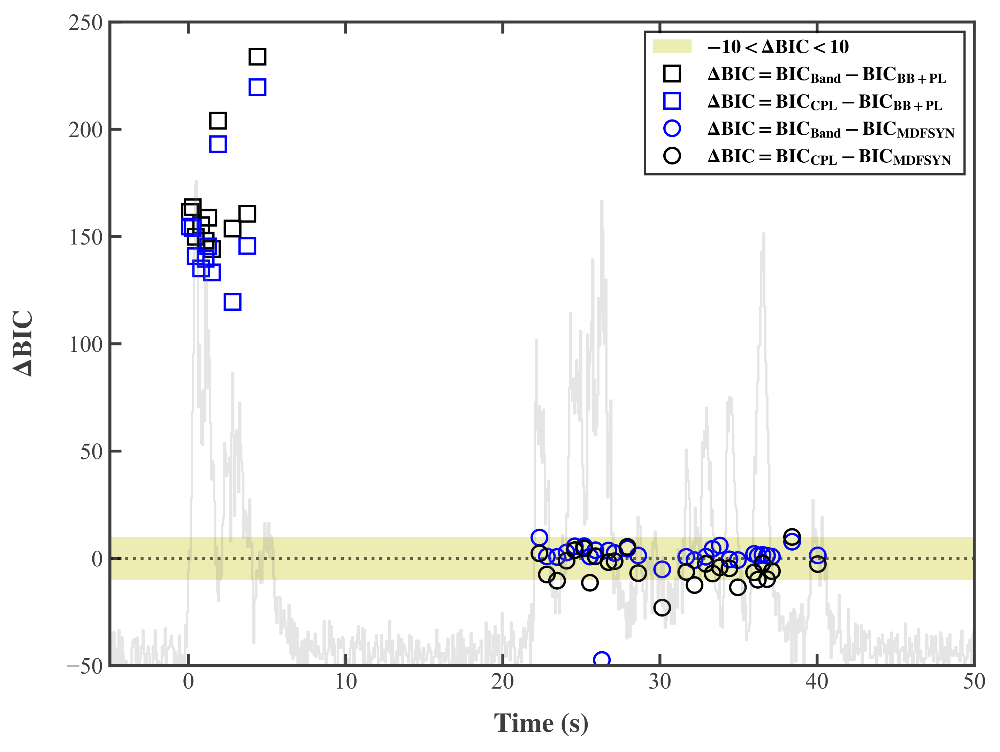
图注：Temporal evolution of the BIC differences for model comparison in GRB 250920C. In EI, the black and blue squares represent $\Delta{\rm BIC}={\rm BIC}_{\rm Band}-{\rm BIC}_{\rm BB+PL}$ and $\Delta{\rm BIC}={\rm BIC}_{\rm CPL}-{\rm BIC}_{\rm BB+PL}$, respectively. In EII, the blue and black circles represent $\Delta{\rm BIC}={\rm BIC}_{\rm Band}-{\rm BIC}_{\rm MDFSYN}$ and $\Delta{\rm BIC}={\rm BIC}_{\rm CPL}-{\rm BIC}_{\rm MDFSYN}$, respectively. Positive values indicate that BB+PL or MDFSYN is preferred over the corresponding empirical model. The shaded region marks $|\Delta{\rm BIC}|<10$, where the evidence is weak or inconclusive.
对应解读：对应“建议重点查看的图表”第3项和“关键图表逐图导读”图3：模型比较/BIC 随时间演化。
入选理由：这张图直接给出 EI 中 BB+PL 相对 Band/CPL、以及 EII 中 MDFSYN 相对经验模型的 ΔBIC，并标出 |ΔBIC|<10 的弱证据区，是支撑“EI 偏热成分、EII 偏同步辐射非热成分”这一核心结论的最关键诊断图。
来源与置信度：\(arxiv_source\)；high；\(arxiv_source\) / ms2026-0344.tex:figure[3]
Fig06
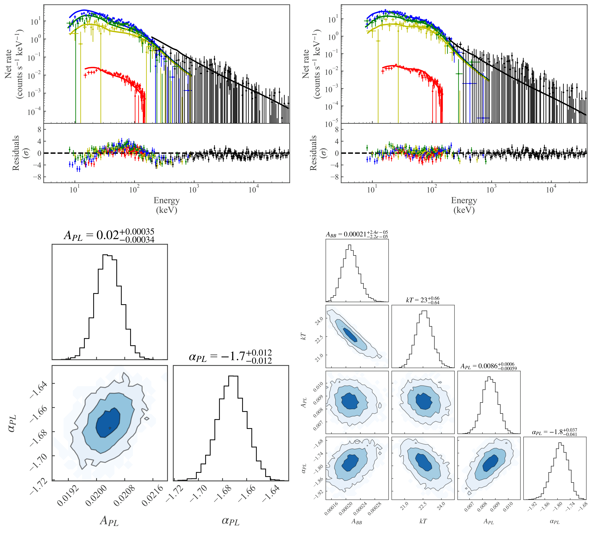
图注：Comparison of the independent PL-only and BB+PL fits for the second joint EI interval, $1.4$--$3.8$~s. Panels (a) and (b) show the observed count spectra, folded model predictions, and standardized residuals for PL-only and BB+PL, respectively. Panels (c) and (d) show their corresponding posterior distributions. The PL-only parameters are constrained, but its broad, coherent residual pattern demonstrates that a single power law cannot reproduce the spectral curvature. The BB+PL fit removes this structure and yields compact posterior distributions for the BB normalization $A_{\rm BB}$, temperature $kT$, PL normalization $A_{\rm PL}$, and photon index $\alpha_{PL}$.
对应解读：对应“建议重点查看的图表”第2项和“模型拟合”中关于计数谱折叠、标准化残差、BB+PL 消除系统残差的讨论。
入选理由：该图展示同一 EI 联合时间段中 PL-only 与 BB+PL 的计数谱、折叠模型、标准化残差和后验分布，能直接检验单一非热模型是否留下连贯残差，以及加入黑体后残差和参数约束是否改善，比单纯的谱能量分布更能支撑热成分的统计可信度。
来源与置信度：\(arxiv_source\)；high；\(arxiv_source\) / ms2026-0344.tex:figure[6]
Fig05
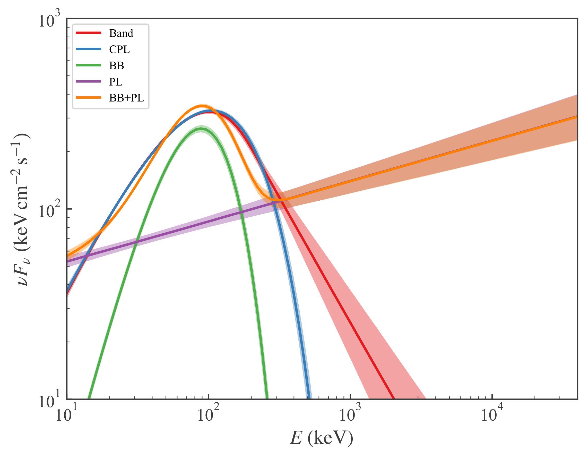
图注：Comparison of the Band, CPL, and BB+PL spectral-energy distributions for the second joint EI interval, $1.4$--$3.8$~s. The BB and PL components of the BB+PL model are plotted separately, together with their summed spectrum. The shaded regions show the propagated spectral uncertainties.
对应解读：对应“关键图表逐图导读”图2：代表性 EI 时间 bin 的能谱、模型分量和不确定度。
入选理由：该图比较 Band、CPL、BB+PL 的谱能量分布，并单独画出 BB 与 PL 分量及总谱和不确定区间，适合说明 EI 中热峰与非热成分如何共同构成观测谱，是理解 BB+PL 物理解释的核心可视化补充。
来源与置信度：\(arxiv_source\)；high；\(arxiv_source\) / ms2026-0344.tex:figure[5]
Fig07

图注：Representative MDFSYN fit to the joint \(\textit{Fermi}/GBM+\textit{Swift}/BAT\) data for the second EII interval, $23.2$--$24.8$~s. The upper-right panel shows the observed count spectra, folded model predictions, and standardized residuals, while the lower-left corner plot shows the posterior distributions of the physical MDFSYN parameters.
对应解读：对应“建议重点查看的图表”第6项和“关键图表逐图导读”图5：EII 的物理同步辐射模型拟合、残差和参数后验。
入选理由：这张图给出 EII 代表性时间段的 MDFSYN 联合拟合、标准化残差和物理参数后验，直接支撑“EII 可由衰减磁场快冷却同步辐射解释”的说法，也能检查后验是否紧贴先验边界或存在明显残差结构。
来源与置信度：\(arxiv_source\)；high；\(arxiv_source\) / ms2026-0344.tex:figure[7]
Fig04
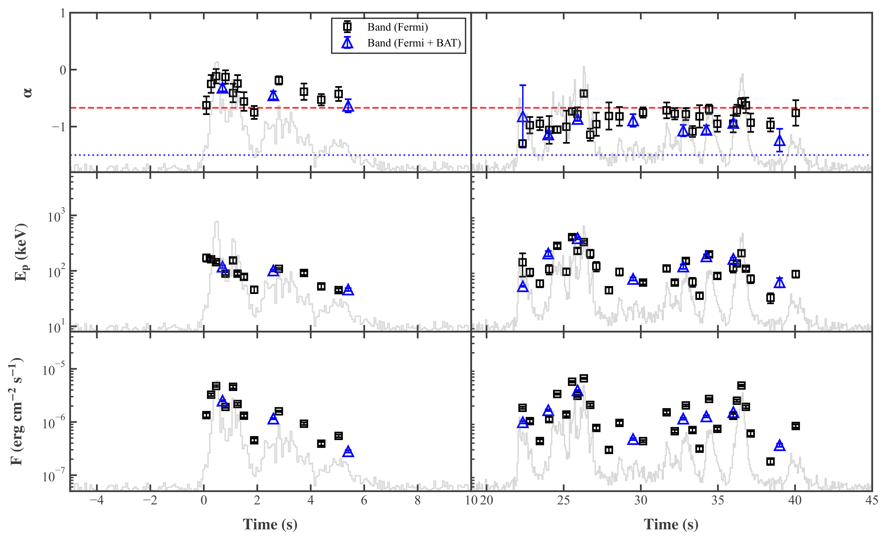
图注：Temporal evolution of the Band spectral parameters for GRB 250920C. Black squares show the \(\textit{Fermi}/GBM-only\) fits, and blue triangles show the joint \(\textit{Fermi}/GBM+\textit{Swift}/BAT\) fits. The left and right columns correspond to EI and EII, respectively.
对应解读：对应“建议重点查看的图表”第6项以及“关键图表逐图导读”图5中关于低能光子指数和经验谱参数演化的检查。
入选理由：该图给出 Band 谱参数随时间的演化，并区分 GBM-only 与 GBM+BAT 联合拟合、EI 与 EII，可用于检查 EII 低能光子指数是否显著越过同步辐射限制以及联合拟合是否改变谱参数判断。虽然它不是物理同步辐射模型图，但对经验谱诊断很有价值。
来源与置信度：\(arxiv_source\)；high；\(arxiv_source\) / ms2026-0344.tex:figure[4]
Fig09
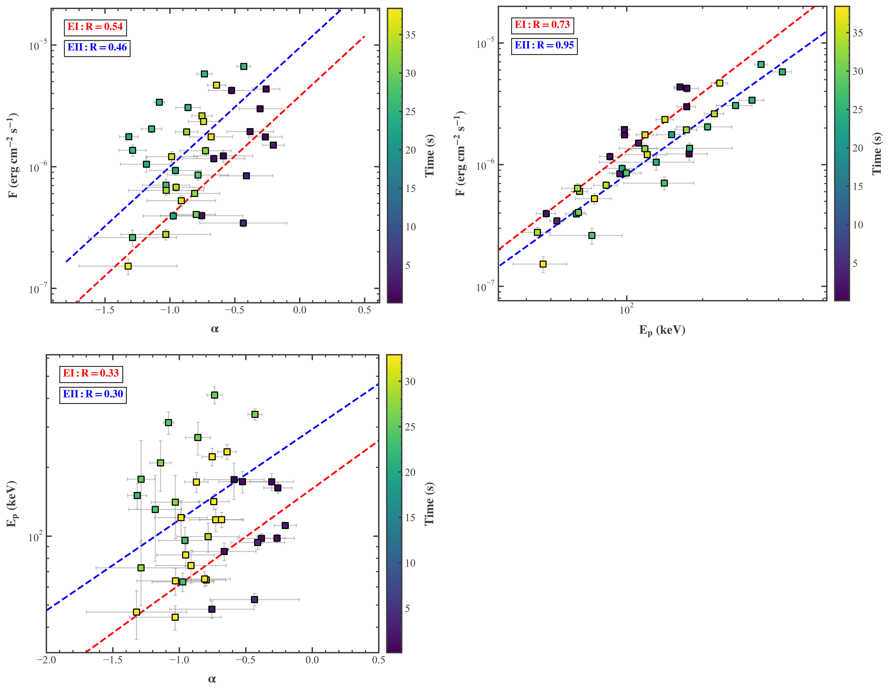
图注：Correlations among the spectral parameters of GRB 250920C. From left to right, the panels show the $F$--$\alpha$, $F$--$E_{\rm p}$, and $E_{\rm p}$--$\alpha$ relations, respectively. Red and blue dashed lines represent the best-fit relations for EI and EII, and the color scale indicates the time since the trigger.
对应解读：对应模型拟合和详细解读中关于谱参数相关性、F--α、F--Ep、Ep--α 关系以及 EI/EII 差异的辅助讨论。
入选理由：该图展示 EI 与 EII 的谱参数相关关系和时间颜色编码，可作为两阶段谱演化差异的辅助证据；但它不直接给出热成分残差、BIC、kT 或磁化度，因此科学优先级低于模型比较和代表性拟合图。
来源与置信度：\(arxiv_source\)；high；\(arxiv_source\) / ms2026-0344.tex:figure[9]
强相关工作
这篇工作属于 GRB prompt 辐射成分分解和喷流组成诊断的交叉方向。与它最接近的是那些在单个 GRB 中识别出黑体或准热光球成分、并用其反推火球参数的研究；也应与使用 \(Fermi\)/GBM 大样本研究低能谱指数、同步辐射 line of death、以及衰减磁场快冷却同步辐射的工作对照。检索关键词可用 “GRB photospheric emission blackbody Fermi GBM time-resolved spectroscopy”、“GRB prompt thermal component Pe'er Ryde”、“synchrotron line of death GRB prompt”、“decaying magnetic field fast cooling synchrotron GRB”。
同一事件 GRB 250920C 的公开论文目前在给定材料中只明确出现本文 arXiv 条目；若要补全同事件背景，应检索 GCN Circulars、\(Fermi\)/GBM trigger 页面、\(Swift\)/BAT GRB table、以及是否有后续红移、余辉或偏振报告。相反观点方面，需要关注那些认为 prompt 谱中所谓黑体可由多区同步辐射、时间积分效应或亚光球耗散解释的论文；这些工作会削弱“黑体等于纯火球光球”的直接推断。
同一事件 / 同类源线索：
相似工作：
基础理论 / 方法工作：
- https://arxiv.org/abs/astro-ph/9905303
- https://arxiv.org/abs/astro-ph/9810274
- https://arxiv.org/abs/0902.2419
相反观点 / 张力线索：
9. Evidence of a Low-Energy Cutoff in the Injected Spectrum of a Pulsar Wind Nebula
- 来源：arXiv / astro-ph.HE
- 链接：https://arxiv.org/abs/2609.10041v1
- 作者：Zhihong Shi, C. -Y. Ng, Niccol`o Bucciantini, B. M. Gaensler, Zhen Yan, David J. Wilner, Douglas C. -J. Bock, Hua-bai Li
- 评分：novelty 8/10，importance 7/10，relevance 8/10，final 8.65/10
- 推荐理由：Multiwavelength evidence for a low-energy cutoff in a bow-shock PWN injection spectrum; relevant to relativistic particle acceleration and PWN energetics.
中文题目：在脉冲星风云注入粒子谱中发现低能截止的证据
做了什么：这篇文章用从低频射电到毫米波、再到硬 X 射线的多望远镜数据，重建了弓形激波脉冲星风云 Mouse 的宽频谱能量分布。作者汇总 17 台望远镜的数据，给出 \(118\,\mathrm{MHz}\) 到 \(353\,\mathrm{GHz}\) 的射电/毫米波探测，并结合 \(0.5\text{--}30\,\mathrm{keV}\) 的 X 射线约束，发现射电谱在约 \(3.7\,\mathrm{GHz}\) 处有清楚转折：低频端不是常见的单调下降幂律，而是随频率升高而上升，在转折附近达到峰值，之后转为下降。跨越该转折的谱指数变化为 \(\Delta \alpha=0.65\pm0.05\)。作者认为，这不是简单的同步辐射冷却造成的高能谱陡化，而更可能反映了注入电子/正电子分布在低能端的内禀截止或变陡，可能对应从脉冲星磁层逸出的轻子特征能量，或终止激波之后的耗散过程。
为什么重要：脉冲星风云的射电谱通常被当作注入粒子谱的窗口，但真正能在低能端直接看到注入谱结构的例子很少。Mouse 是典型的弓形激波脉冲星风云，受最近注入粒子主导，历史积累和复杂演化效应比大型遗迹型风云更弱。因此，一个稳健的 GHz 级谱峰如果成立，就把问题从“风云整体辐射怎么拟合”推进到“脉冲星风本身输出的轻子能谱是否有低能特征尺度”。这会影响我们理解相对论磁化风、终止激波加速、磁层对产生和银河正负电子注入。
理论 / 观测 / 仪器方法价值：观测价值在于它把 Mouse 的射电/毫米谱覆盖扩展到 3 个数量级以上频率，并用多仪器交叉检查确认谱弯曲，而不是依赖单一频段的局部斜率。理论价值在于低频上升谱与普通单幂律注入不相容，迫使模型引入低能截止、低能变陡或空间/能量依赖输运。方法价值在于它展示了怎样把干涉阵缺失短基线、背景扣除、紧致源污染、通量标定和 X 射线谱约束放到同一个宽频谱框架中。
为什么应该关注：如果你研究脉冲星风、相对论激波或非热粒子加速，这篇文章值得关注，因为它给出了一个可观测的低能注入尺度，而不是只从高能冷却尾部反推。若你做射电/毫米波观测，它也是一个提醒：低频谱形不一定只是吸收、标定或成像系统误差，弓形激波 PWN 的空间过滤和多波段通量归一化会直接决定物理解读。若你做银河宇宙线轻子源建模，低能截止意味着 PWN 向星际介质释放的粒子谱未必能外推到任意低能。
展开详细解读：文章讲解、背景、理论、重点章节、图表与相关工作
文章详细讲解
科学问题：脉冲星风云的非热辐射来自相对论电子和正电子的同步辐射。通常我们把观测到的射电幂律谱 \(S_\nu\propto \nu^\alpha\) 解释为注入粒子分布 \(N(E)\) 的投影；若谱在高频变陡，则常被归因于同步辐射冷却。但 Mouse 是弓形激波 PWN，粒子流被高速脉冲星和周围星际介质压成头尾结构，辐射主要来自新近注入和被输运到尾部的粒子。它的低频射电谱若不是普通幂律，而是在 GHz 附近出现峰值，就可能直接指向注入轻子分布的低能结构。本文的核心问题是：Mouse 的宽频谱是否需要一个内禀低能截止或低能变陡，而不是用冷却、吸收或仪器效应解释。
作者怎么做：作者整合了 17 台望远镜的数据，覆盖 \(118\,\mathrm{MHz}\) 到 \(353\,\mathrm{GHz}\)，并加入 \(0.5\text{--}30\,\mathrm{keV}\) X 射线谱信息。这种频率跨度对判断谱峰很关键，因为只看厘米波局部数据可能把弯曲误认为标定偏差或背景问题；只看 X 射线又只能约束高能粒子冷却尾部。文章的分析重点应包括不同望远镜通量密度的一致化、对 Mouse 扩展结构的积分区域定义、干涉阵可能丢失大尺度通量的修正、附近弥散背景和点源污染的扣除，以及射电到毫米波谱模型与 X 射线谱的联合解释。
关键结果：Mouse 在低频射电端呈上升趋势，谱在约 \(3.7\,\mathrm{GHz}\) 达到峰值，之后在高频射电/毫米波下降。作者测得跨越转折的谱指数变化为 \(\Delta \alpha=0.65\pm0.05\)，这比典型连续注入同步冷却在理想情形下造成的 \(\Delta \alpha\simeq -0.5\) 式高频陡化更像是注入谱本身存在低能端截断或变形。重要的是，这个转折出现在射电 GHz 段，对应的是远低于 X 射线发射粒子的电子能量；因此它不是传统意义上由高能电子快速冷却产生的 X 射线断裂，而是在粒子注入低能边界附近暴露出来的结构。
局限和下一步：最需要谨慎的是，低频上升谱也可能受到自由-自由吸收、低频成像系统误差、空间过滤、背景扣除、不同仪器通量标定差异或不同频率采样到不同空间区域的影响。作者把结果解释为注入谱低能截止，但要真正区分“磁层逸出轻子的特征能量”和“终止激波后耗散/再加速造成的低能耗尽”，还需要空间分辨谱指数图、偏振/磁场结构、尾部沿程谱演化，以及更高灵敏度的低频和毫米波观测。下一步的关键不是简单增加一个通量点，而是用同一角分辨率和相似空间滤波的多频成像检验谱峰是否在头部、尾部和不同流线中同步出现。
关键结果是怎么做出来的
本文最重要的证据链是宽频通量谱，而不是某一张单频图像。样本对象是单个源 Mouse，一个原型弓形激波 PWN；数据样本不是源数统计，而是跨 17 台望远镜的多频通量密度集合。关键选择包括：只积分与 Mouse PWN 相关的扩展辐射区域，排除无关背景和邻近源；对不同频率的波束和最大可恢复尺度差异进行处理；在低频 \(118\,\mathrm{MHz}\) 到毫米波 \(353\,\mathrm{GHz}\) 之间建立尽可能统一的总通量尺度。读者应特别检查论文是否把头部紧致区和尾部扩展区分开，还是采用统一孔径，因为这会影响谱峰位置和斜率。
显著性来自谱模型比较和谱指数差异。摘要给出的 \(\Delta \alpha=0.65\pm0.05\) 表明转折两侧斜率差达到约 \(13\sigma\) 的形式精度，但这个数字本身只反映统计或拟合误差；实际可信度还取决于通量标定系统误差、低频吸收模型、干涉阵短基线缺失、不同观测 epoch 的源稳定性，以及背景扣除。合理的阅读方式是看作者是否比较了单幂律、断裂幂律、带低能截止的粒子分布、可能的吸收模型，并报告了 \(\chi^2\)、信息准则或后验赔率之类的模型优劣指标。
支撑结论的图表应包括宽频谱能量分布图、转折附近的局部放大图、各望远镜通量点与误差条表、以及可能的射电图像或谱指数图。最关键的是，\(3.7\,\mathrm{GHz}\) 附近的峰值不能只由一两个频点决定；低频侧必须有多个频率显示随 \(\nu\) 上升，高频侧也必须有多个频率显示随 \(\nu\) 下降。如果低频只有一个受吸收或成像误差影响很大的点，那么低能截止解释会弱很多；如果多个独立仪器在转折两侧给出一致趋势，则证据明显增强。
系统误差方面，低频上升最常见的替代解释是前景自由-自由吸收或同步自吸收。对 PWN 这种低亮温扩展源，同步自吸收通常很难在 GHz 频段强到塑造总谱，但自由-自由吸收需要用电子温度、发射量和视线环境检验。另一个重要系统误差是干涉阵在低频或高频对扩展尾部的响应不同：如果某些频率丢失大尺度通量，就会人为制造谱弯曲。作者若使用了单碟补短间距、模拟注入源恢复率或只比较相同空间尺度的通量，结论会更稳健。
稳健性检验应关注三个层面。第一，改变积分孔径、背景区域和点源掩膜后，谱峰频率和 \(\Delta \alpha\) 是否稳定。第二，把不同望远镜数据分组拟合，例如只用低频阵列和厘米波阵列、或排除毫米波点，转折是否仍存在。第三，采用物理粒子谱模型而非经验断裂幂律时，是否仍需要低能截止，并且截止对应的电子能量在合理的磁场范围内不被完全推到不现实区间。
展开背景、理论、公式、模型、章节和图表导读
背景知识
研究对象 Mouse，即常写作 G359.23-0.82，是银河中心方向附近一个著名的弓形激波脉冲星风云，与高速运动脉冲星相关。弓形激波 PWN 的几何结构通常包括前方压缩的头部、终止激波附近的明亮区域，以及向后延伸的尾部。它不像 Crab 这类较年轻、较对称的填充型 PWN 那样主要由整个星云长期积累的粒子和磁场历史控制，而更强调脉冲星空间运动、环境密度和风-介质相互作用。
历史上，PWN 宽频谱是研究相对论轻子加速的主要证据之一。射电波段对应低能到中能电子，X 射线对应高能电子；如果只看 X 射线，看到的往往是冷却后谱形和流体输运的混合结果。如果射电谱在低能端出现峰值或截止，就更接近注入函数本身。以往很多 PWN 射电谱被近似为单幂律，部分原因是频率覆盖不足、扩展源通量测量困难，以及低频观测受电离层、前景吸收和混乱背景影响较大。
现在值得重看这个问题，是因为低频阵列、宽带厘米波接收机和毫米波阵列使得从百 MHz 到数百 GHz 的连续谱约束更可靠。对于 Mouse 这样的亮源，多望远镜数据可以跨越仪器系统误差：低频阵列给出谱上升端，厘米波测定峰值附近，毫米波判断高频下降是否延续，X 射线则约束高能粒子是否存在独立冷却断裂。这样的数据条件过去并不常见。
一个常见误区是把任何射电谱转折都立即归为吸收。自由-自由吸收确实会压低低频通量，但它有特定频率依赖、需要足够大的发射量，并且常伴随环境电离气体证据。另一个误区是把所有谱陡化都归为同步冷却。同步冷却主要影响高能电子，并且冷却断裂频率与磁场强度、年龄或流动时间有关；在 GHz 附近看到峰值不一定符合常规冷却图像。本文的意义正是在这些替代解释之间，把注入谱低能结构作为严肃选项提出。
基础理论 / 方法脉络
PWN 的基本物理图像是：脉冲星自转能通过磁化相对论风带出，风中包含电子、正电子和电磁场。当风撞上周围介质或星云内部压力时形成终止激波，粒子被加速或重新分配能量，在磁场中做螺旋运动并发出同步辐射。弓形激波 PWN 中，脉冲星相对于星际介质超声速运动，外部动压把风压缩成头尾结构，因此粒子的停留时间、磁场和流速都强烈依赖位置。
同步辐射把电子能量和观测频率联系起来。给定磁场 \(B\)，洛伦兹因子为 \(\gamma\) 的电子主要在特征频率 \(\nu_{\rm syn}\propto B\gamma^2\) 附近辐射。若粒子能谱是幂律 \(N(\gamma)\propto \gamma^{-p}\)， optically thin 同步辐射的通量谱也是幂律，谱指数满足 \(\alpha=-(p-1)/2\)。因此射电谱斜率可以反推粒子谱斜率；若低频端上升并出现峰值，就意味着低 \(\gamma\) 粒子数不再按简单幂律向低能无限延伸。
本文所需的模型假设大致是：Mouse 的射电/毫米辐射主要是 optically thin 同步辐射；不同频率的总通量可以代表同一粒子群在不同能量上的投影；源整体不发生显著时间变化；外部吸收和仪器响应可以被估计或排除到不足以解释谱峰。若采用低能截止模型，粒子分布可以写成在 \(\gamma_{\min}\) 附近被截断或平滑变陡的函数，而非从任意低能开始的单幂律。
观测方法上的关键量是通量密度 \(S_\nu\)、谱指数 \(\alpha\)、转折频率 \(\nu_{\rm b}\)、转折两侧斜率差 \(\Delta\alpha\)，以及可能的 X 射线光子指数。实际分析中存在退化：低能截止、自由-自由吸收、空间过滤造成的低频通量偏低，都能让低频谱看起来上升；磁场 \(B\) 与粒子能量 \(\gamma\) 也退化，因为同一 \(\nu_{\rm b}\) 可以由较强磁场下较低能粒子或较弱磁场下较高能粒子产生。要打破这些退化，需要空间分辨成像、独立环境诊断和跨仪器一致性。
公式与推导
第一步从单个相对论电子的同步辐射特征频率开始。若电子洛伦兹因子为 \(\gamma\)，磁场垂直分量为 \(B_\perp\)，则辐射主要集中在
其中 \(e\) 是元电荷，\(m_e\) 是电子质量，\(c\) 是光速。这个式子把观测到的 GHz 转折频率和产生该辐射的轻子能量联系起来，前提是辐射区近似 optically thin 且 \(B_\perp\) 可用有效磁场代表。
第二步写出注入粒子分布。普通单幂律可表示为
其中 \(Q(\gamma)\) 是单位时间注入的粒子数分布，\(Q_0\) 是归一化，\(p\) 是粒子谱指数，\(\gamma_{\min}\) 和 \(\gamma_{\max}\) 是低能和高能边界。本文关心的正是 \(\gamma_{\min}\) 或低能变陡是否在射电频段留下可见印记。
第三步，在 optically thin 且无强冷却的近似下，幂律电子谱产生幂律通量谱：
这里 \(S_\nu\) 是通量密度，\(\alpha\) 是射电谱指数。若转折两侧的 \(\alpha\) 明显不同，就等价于粒子谱指数或粒子数边界发生变化，而不是单一 \(p\) 能解释。
第四步，若低能端有平滑截止，可用经验形式表示为
其中 \(N(\gamma)\) 是星云内粒子数分布，\(\gamma_{\rm cut}\) 是低能截止尺度，\(s\) 控制截止平滑程度。这个形式在 \(\gamma\gg\gamma_{\rm cut}\) 时回到幂律，在 \(\gamma\lesssim\gamma_{\rm cut}\) 时抑制低能粒子，从而可产生低频通量下降或谱峰。
第五步，将截止 Lorentz 因子映射为谱峰频率：
这里 \(\nu_{\rm b}\) 是观测转折频率。对本文的 \(\nu_{\rm b}\approx3.7\\,\mathrm{GHz}\)，若 \(B\) 已由能量均分、X 射线冷却或 MHD 模型估计，就可反推 \(\gamma_{\rm cut}\) 的数量级；反过来，若 \(B\) 不确定，则 \(\gamma_{\rm cut}\) 与 \(B\) 存在平方根退化。
第六步，同步冷却给出另一类断裂。电子能量损失率为
其中 \(\sigma_T\) 是 Thomson 截面。由此得到冷却时间 \(t_{\rm syn}\propto B^{-2}\gamma^{-1}\)。若某一频率对应的电子冷却时间等于流动或年龄时间 \(t_{\rm age}\)，则会出现冷却断裂。
第七步，冷却断裂频率可写成标度关系
这说明冷却断裂对 \(B\) 和年龄极敏感，而且通常先影响高 \(\gamma\)、高频辐射。若 GHz 转折难以用合理 \(B\) 和 \(t_{\rm age}\) 解释，就支持注入低能结构而非冷却解释。
第八步，通量谱拟合通常最小化
其中 \(S_{\}}\)
u,i}^{\(\rm\) obs}) 是第 \(i\) 个频点通量，\(\sigma_i\) 包含统计和标定误差，\(S_{\nu,i}^{\(\rm}\) mod}) 是模型预测，\(\boldsymbol{\theta}\) 包含归一化、\(\alpha\)、\(\nu_{\rm b}\)、截止强度等参数。单幂律和断裂/截止模型的 \(\chi^2\) 差异是判断谱弯曲是否必要的直接诊断。
第九步，谱指数变化可用
表征，其中 \(\alpha_{\rm low}\) 和 \(\alpha_{\rm high}\) 分别是转折低频侧和高频侧斜率。本文报告 \(\Delta\alpha=0.65\pm0.05\)，说明弯曲幅度远大于典型单频通量误差，但解释时仍必须把 \(\sigma_i\) 中的系统项纳入。
模型拟合 / 应用方法
这类工作首先拟合的是宽频通量密度 \(S_\nu\)。最简单的零假设是单幂律，参数只有归一化和谱指数；更复杂的经验模型是断裂幂律，参数包括低频斜率、高频斜率、转折频率和转折平滑度；物理模型则从 \(N(\gamma)\) 出发，通过同步辐射核积分得到 \(S_\nu\)。本文的关键拟合量是 \(\nu_{\rm b}\approx3.7\,\mathrm{GHz}\) 和 \(\Delta\alpha=0.65\pm0.05\)，它们共同决定低能截止解释是否必要。
似然通常可近似为高斯通量误差下的 \(\chi^2\)，但实际通量误差不是纯统计量。不同望远镜的绝对标定误差可能相关；干涉阵成像误差可能随空间尺度相关；背景扣除对相邻频点也可能引入共同偏移。因此，严谨拟合应把每个仪器的通量尺度不确定性作为 nuisance parameter，或至少在误差预算中加入频段相关系统项。否则，\(\Delta\alpha\) 的形式误差会显得过小。
参数退化主要有三类。第一，\(\nu_{\rm b}\) 与磁场 \(B\) 和截止 Lorentz 因子 \(\gamma_{\rm cut}\) 退化，因为 \(\nu_{\rm b}\propto B\gamma_{\rm cut}^2\)。第二，低能截止与自由-自由吸收退化，二者都能压低低频通量，但前者改变的是粒子谱，后者在视线上乘以 \(e^{-\tau_\nu}\)。第三，源区混合会使总谱弯曲：若头部和尾部有不同谱指数，积分通量可能看起来像单一区域发生断裂。空间分辨谱拟合是打破这类退化的关键。
残差诊断很重要。若单幂律拟合后低频点系统性为负、中频点为正、高频点再为负，就说明存在真实曲率；若残差只集中在某一仪器或某一观测模式，物理解释要谨慎。对于断裂模型，应检查转折附近残差是否随机分布，以及排除某个频点后 \(\nu_{\rm b}\) 是否大幅漂移。对于低能截止模型，应检查 X 射线数据是否要求另一个高能断裂或不同粒子族，避免把全谱强行归入单一区域模型。
模型可能失败的场景包括：前景吸收被低估、毫米波通量受到尘埃或背景污染、低频通量因短基线或离轴响应被低估、不同频率采样到不同 PWN 结构，或假设的单一磁场过于简化。实际应用上，若该低能截止被确认，可以作为 PWN population synthesis 的输入条件，限制脉冲星风的 pair multiplicity、终止激波注入能量和 PWN 对银河轻子谱的低能贡献。
重点章节 / 结果段落怎么读
数据/样本部分应优先读。这里决定了结论的地基：17 台望远镜分别覆盖哪些频率、角分辨率和空间尺度，哪些数据是新观测，哪些来自档案，通量积分区域如何定义，背景如何选取。对 Mouse 这种扩展源，数据处理细节比“探测到了多少频点”更重要。
射电与毫米波通量测量部分是第二个重点。读者应关注每个频点的误差是否包含绝对标定，是否对干涉阵缺失短间距做了评估，是否有同一频率附近的独立仪器交叉验证，以及是否把可能的热尘埃、H II 区或银河背景污染排除。
谱模型拟合部分是全文核心。应看作者如何比较单幂律、断裂幂律、低能截止粒子谱和吸收模型；\(\nu_{\rm b}\) 和 \(\Delta\alpha\) 的误差如何给出；模型选择是否只是目测，还是有统计量支持。这里也应检查转折频率 \(3.7\,\mathrm{GHz}\) 是否由多个频点共同约束。
X 射线分析部分用于连接高能粒子。读者不应把 X 射线结果只当作附属信息；它可以判断高能谱是否存在独立冷却断裂，帮助区分“整个谱由一个连续粒子分布产生”与“射电和 X 射线来自不同区域或不同粒子历史”的可能性。
讨论和稳健性检验部分应重点看替代解释。作者若系统讨论自由-自由吸收、同步自吸收、冷却断裂、空间混合和仪器系统误差，并说明为什么这些机制不足以解释 \(\Delta\alpha=0.65\pm0.05\)，那么低能截止结论才有说服力。附录若列出通量表、图像处理和误差预算，也应认真核查。
建议重点查看的图表
-
宽频 \(S_\nu\) 或 \(\nu S_\nu\) 谱能量分布图：看 \(118\,\mathrm{MHz}\) 到 \(353\,\mathrm{GHz}\) 的数据点是否连续支持 \(3.7\,\mathrm{GHz}\) 峰值，误差条是否包含系统误差。
-
单幂律、断裂幂律和低能截止模型的拟合对比图：看模型线在低频上升端和高频下降端的残差，确认谱弯曲不是由一两个异常点驱动。
-
通量测量表或多仪器交叉标定图：看相邻频率不同望远镜的通量尺度是否一致，特别是厘米波峰值附近是否有独立数据支撑。
-
低频射电图像与背景区域示意：看 Mouse 扩展结构是否完整恢复，附近银河背景或点源是否可能污染积分通量。
-
谱指数或分区谱图：若论文提供，应看头部和尾部是否共享相似转折；若没有，应把这视为下一步需要补上的诊断。
-
X 射线谱及残差图：看 \(0.5\text{--}30\,\mathrm{keV}\) 谱是否需要额外断裂或吸收修正，以及 X 射线光子指数与射电高频斜率是否能由同一粒子模型自然连接。
-
稳健性检验图或附录表：看改变孔径、背景、排除单个仪器或加入吸收模型后，\(\nu_{\rm b}\) 和 \(\Delta\alpha\) 是否稳定。
关键图表逐图导读
图 1：通常应是 Mouse 的多频图像或观测区域示意。横纵轴多为天球坐标，颜色表示射电或 X 射线表面亮度，可能叠加积分孔径、背景区域和脉冲星位置。读图时要看孔径是否覆盖完整尾部、是否避开附近无关源，以及不同频率图像是否具有可比的空间响应。陷阱是把高分辨率图中看不见的弥散尾部误认为没有通量；对扩展 PWN，最大可恢复尺度和背景选择会直接影响总谱。
图 2：最关键的图应是宽频谱能量分布。横轴为频率 \(\nu\)，纵轴为通量密度 \(S_\nu\) 或能量通量 \(\nu S_\nu\)，数据点来自不同望远镜，模型线可能包括单幂律、断裂幂律和低能截止模型。主要结论是谱在 \(\nu_{\rm b}\approx3.7\,\mathrm{GHz}\) 附近出现峰值，低频侧上升、高频侧下降。读图陷阱是忽略不同颜色/符号代表不同仪器及其标定误差；如果峰值附近只有单一仪器支撑，可信度会降低。
图 3：若有拟合残差或模型比较图，横轴仍为 \(\nu\)，纵轴为标准化残差或数据/模型比值。单幂律模型若在低频和高频呈系统残差，而断裂/截止模型残差接近随机分布，就支持真实谱弯曲。读者应检查残差是否集中在某个频段或某台仪器，因为那可能暗示系统误差而非物理断裂。
图 4：若论文给出 X 射线谱图，横轴为能量 \(E\)，纵轴为计数谱、展开能谱或残差。模型线可能是吸收幂律或带断裂的非热谱。它的作用是约束高能电子分布和冷却，而不是直接测量 GHz 转折。读图陷阱是把 X 射线光子指数与射电谱指数简单外推相连；两者可能来自不同空间区或不同冷却阶段。
图 5：若有分区谱或谱指数图，横纵轴为空间坐标，颜色为 \(\alpha\) 或局部转折强度。应看谱峰是否只出现在头部、只出现在尾部，还是全源一致。若全源一致，更支持注入谱低能结构；若只有局部存在，则可能与输运、混合或局部吸收有关。没有这类图时，读者应把空间分辨检验视为本文结论的主要待加强处。
图 6：稳健性或系统误差图可能展示不同孔径、背景区域、排除某些频点后的 \(\nu_{\rm b}\) 和 \(\Delta\alpha\)。横轴可为测试方案，纵轴为拟合参数。若所有方案都围绕 \(3.7\,\mathrm{GHz}\) 和 \(\Delta\alpha\simeq0.65\) 波动，结论稳健；若某些合理方案让转折消失，则物理解读应降级。
论文原图 / 可嵌入图片
Fig03
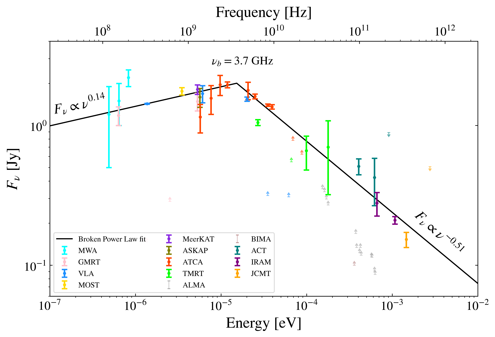
图注：Radio-to-submillimeter spectrum of the Mouse with the best-fit broken PL model (black solid line). The data points are measurements from MWA (118, 150, 200\,MHz), GMRT (153, 325, 610\,MHz, 1.28\,GHz), VLA (330\,MHz, 1.5, 4.9, 8.4, and 14.9\,GHz), MOST (843\,MHz), MeerKAT (1.3\,GHz), ASKAP (1.36\,GHz), ATCA(1.38, 4.98, 6.01, 8.48, 9.51, 16.7, 21.2, 94.5\,GHz), TMRT (6.5, 16, 24, 43\,GHz), ALMA (37, 39, 41, 43, 90, 92, 100, 102, 104, 138, 140, 150, 152\,GHz), BIMA (86.9\,GHz), ACT (98, 150, 220\,GHz), IRAM 30m (160, 260\,GHz), and JCMT (353, 666\,GHz).
对应解读：对应“建议重点查看的图表”第1、2、3项，以及“关键图表逐图导读”中图2和模型拟合段落的宽频射电到亚毫米通量谱。
入选理由：这是最直接支撑全文核心结论的图：横跨118 MHz到353/666 GHz的多仪器通量点与最佳断裂幂律模型同图展示，可直接检查3.7 GHz附近峰值、低频上升和高频下降是否由连续数据支撑，也能判断峰值附近是否有VLA、ATCA、MeerKAT、ASKAP等独立仪器交叉验证。相比单独成像图，它最能检验低能截止或谱变陡是否真实存在。
来源与置信度：\(arxiv_source\)；high；\(arxiv_source\) / manuscript.tex:figure[3]
Fig04
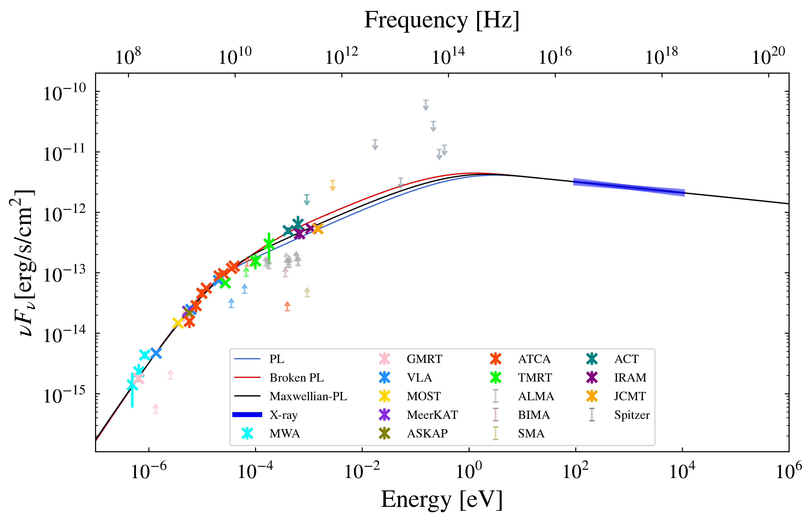
图注：Multi-wavelength SED of the Mouse, covering radio, submillimeter, infrared, and X-ray measurements or limits. The best-fit single PL with low cut, broken PL with low cut, and Maxwellian-PL injection models are plotted in blue, red, and black solid lines, respectively. The X-ray \cxo\ results are shown in a blue envelope.
对应解读：对应“建议重点查看的图表”第2、6项，以及“关键图表逐图导读”中关于单幂律低能截止、断裂幂律低能截止、Maxwellian-PL注入模型和X射线连接的讨论。
入选理由：该图把射电、亚毫米、红外限制和X射线结果放入同一SED，并叠加三类物理/经验模型线，是判断低能截止解释是否优于简单外推、以及X射线高能谱是否能与射电/毫米波粒子分布相容的关键图。它比Fig03更偏模型解释，适合支撑日报中关于模型退化和X射线约束的详细解读。
来源与置信度：\(arxiv_source\)；high；\(arxiv_source\) / manuscript.tex:figure[4]
Fig05

图注：Best-fit particle spectrum of single PL, broken PL and Maxwellian-PL models. The best-fit parameters are listed in Table~\(\ref{tab:fitpars}.\)
对应解读：对应“模型拟合”中从粒子分布N(γ)出发解释低能截止、断裂幂律和Maxwellian-PL注入模型的段落。
入选理由：该图展示不同最佳拟合模型对应的粒子谱，是把观测到的GHz谱峰转化为注入粒子低能结构的核心物理桥梁。它不能直接检查通量系统误差，但对理解低能截止、低能变陡和Maxwellian成分之间的物理差异非常重要。
来源与置信度：\(arxiv_source\)；high；\(arxiv_source\) / manuscript.tex:figure[5]
Fig02
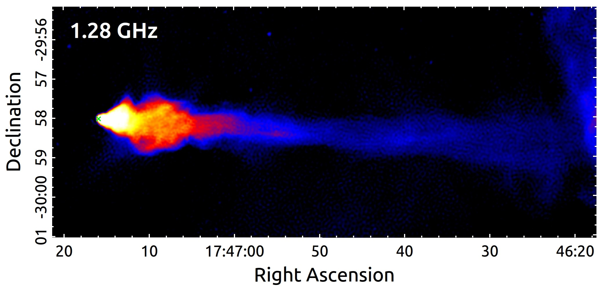
图注：MeerKAT image of the Mouse at 1.28\,GHz obtained from MeerKAT Galactic Centre Survey \(\citep{2022ApJ...925..165H}.\) The color scale is in units of mJy/beam. The green cross denotes the position of the pulsar.
对应解读：对应“建议重点查看的图表”第4项，以及“关键图表逐图导读”中图1关于Mouse扩展结构、脉冲星位置和积分通量区域可靠性的讨论。
入选理由：MeerKAT 1.28 GHz图像展示Mouse的扩展射电形态和脉冲星位置，可用于判断射电积分是否覆盖完整头尾结构、是否存在弥散尾部通量被遗漏的风险。虽然caption未明确给出背景区或孔径，但它是候选中最适合支撑低频/厘米波成像形态与通量完整性检查的图。
来源与置信度：\(arxiv_source\)；high；\(arxiv_source\) / manuscript.tex:figure[2]
Fig06
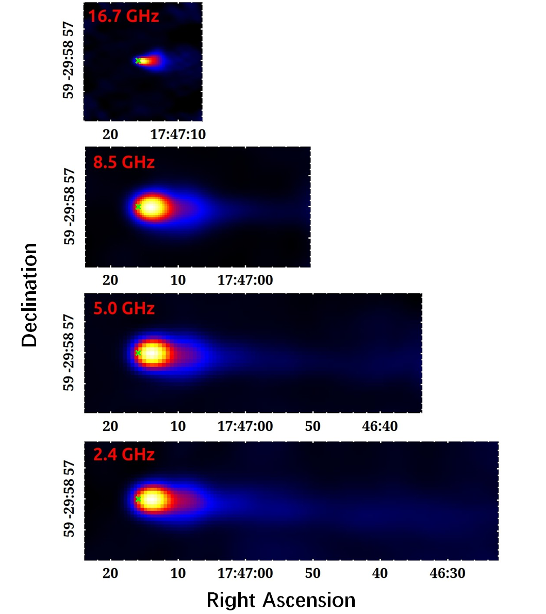
图注：ATCA total intensity maps of the Mouse at 16.7, 8.5, 5.0, and 2.4\,GHz. The green cross marks the pulsar position.
对应解读：对应“建议重点查看的图表”第3、4、5项中关于厘米波峰值附近多频成像、一致空间采样和分区谱诊断的讨论。
入选理由：ATCA在2.4、5.0、8.5、16.7 GHz的总强度图覆盖谱峰两侧关键频段，可帮助读者检查不同频率下Mouse形态是否一致、是否可能因空间滤波或不同结构采样造成积分谱弯曲。它没有直接给出谱指数图或残差，但对排查成像系统误差和空间混合效应有价值。
来源与置信度：\(arxiv_source\)；high；\(arxiv_source\) / manuscript.tex:figure[6]
Fig11
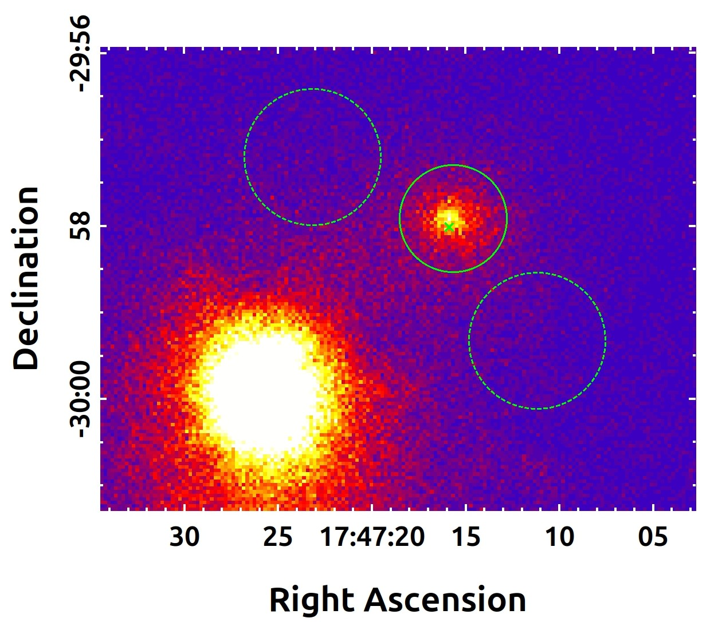
图注：\nus\ FPMA image of the Mouse in the 3--30\,keV band. The solid line indicates the 50\arcsec\ radius aperture for the extraction of the PWN spectrum. The background extraction regions are indicated by the dashed lines. All these regions have the same distance from SLX 1744$-$299, the bright source to the southeast.
对应解读：对应“建议重点查看的图表”第6项和“关键图表逐图导读”中图4关于X射线谱提取、背景选择和高能约束的讨论。
入选理由：该图不是X射线谱残差图，而是NuSTAR 3--30 keV成像及源区/背景区示意；它仍然有助于检查X射线谱提取孔径、背景区域与邻近亮源SLX 1744-299的控制方式。因其不能直接展示X射线谱形或残差，相关性低于SED和射电谱图。
来源与置信度：\(arxiv_source\)；high；\(arxiv_source\) / manuscript.tex:figure[11]
强相关工作
同一源和同类源的脉络很重要。Mouse 是弓形激波 PWN 的原型之一，相关历史工作包括 Mouse 的射电形态发现、Chandra/XMM 的 X 射线头尾结构研究、以及对高速脉冲星风与星际介质相互作用的 MHD 模拟。建议检索关键词包括 “Mouse pulsar wind nebula G359.23-0.82 radio X-ray”, “bow-shock PWN synchrotron spectrum”, “PSR J1747-2958 Mouse PWN”, “termination shock particle injection low-energy cutoff”。
理论上，本文与 PWN 粒子注入、pair multiplicity、相对论终止激波加速和同步冷却断裂研究相连。相似问题在 Crab、Vela PWN、Geminga 尾迹和其他弓形激波 PWN 中也出现，但 Mouse 的价值在于它的射电亮度和弓形激波几何使“新鲜注入粒子谱”更容易被分离出来。相反或竞争解释应检索 “free-free absorption PWN radio spectrum”, “synchrotron self-absorption pulsar wind nebula”, “interferometer missing flux extended radio source”。这些文献能帮助判断 GHz 谱峰到底是粒子物理，还是视线吸收或仪器响应。
这篇论文关注的是同一源 Mouse/G359.23-0.82/PSR J1747-2958 的宽频谱；同源历史论文、同类弓形激波 PWN 论文、PWN 综述和同步辐射基础理论都应一并阅读。若要系统追踪，可在 NASA ADS 以对象名 “G359.23-0.82” 和 “PSR J1747-2958” 检索引用链。
同一事件 / 同类源线索：
- https://arxiv.org/abs/2609.10041
- https://arxiv.org/pdf/2609.10041
- https://ui.adsabs.harvard.edu/search/q=G359.23-0.82%20Mouse%20pulsar%20wind%20nebula
- https://ui.adsabs.harvard.edu/search/q=PSR%20J1747-2958%20Mouse%20PWN
相似工作：
- https://ui.adsabs.harvard.edu/search/q=bow-shock%20pulsar%20wind%20nebula%20radio%20spectrum
- https://ui.adsabs.harvard.edu/search/q=pulsar%20wind%20nebula%20low-energy%20cutoff%20electron%20spectrum
- https://ui.adsabs.harvard.edu/search/q=Mouse%20PWN%20radio%20X-ray%20spectrum
基础理论 / 方法工作：
- https://ui.adsabs.harvard.edu/search/q=pulsar%20wind%20nebula%20synchrotron%20review
- https://ui.adsabs.harvard.edu/search/q=Kennel%20Coroniti%20Crab%20pulsar%20wind%20nebula
- https://ui.adsabs.harvard.edu/search/q=synchrotron%20radiation%20Rybicki%20Lightman
相反观点 / 张力线索：
10. cuDART: a GPU-accelerated ray tracing code for generating synthetic observations of relativistic astrophysical sources
- 来源：arXiv / astro-ph.HE
- 链接：https://arxiv.org/abs/2609.09322v1
- 作者：Henry Whitehead, Emma L. Elley, Christoper N. Everett
- 评分：novelty 8/10，importance 7/10，relevance 8/10，final 8.65/10
- 推荐理由：开源 GPU 加速相对论射线追踪/合成观测工具，能处理有限光行时、多历元数据和多视角渲染，对喷流、相对论流体模拟及高能源模型比较具有方法学价值。
中文题目：cuDART：用于相对论天体源合成观测的 GPU 加速光线追踪代码
做了什么：这篇论文发布并验证了开源工具 cuDART，用来把网格化数值模拟数据快速渲染成光学薄辐射的合成观测图像、光变或多视角诊断。它的核心改进不是单纯“画得快”，而是同时处理相对论多普勒增强、几何投影和跨源区有限光行时延迟，允许同一张观测图像由多个模拟时刻共同贡献。作者展示，如果只用单一模拟快照生成图像，会在相对论流、喷流结、爆发外流等问题中得到错误的表观运动、形态和通量。
为什么重要：高能天体物理越来越依赖三维流体或磁流体模拟，但观测比较不能直接看模拟变量，而要看经过辐射、投影、相对论和时间延迟处理后的可观测量。cuDART 针对这一中间环节提供了可复现、开源、GPU 加速的实现，尤其适合相对论喷流、并合外流、脉冲星风云、超新星遗迹和活动星系核小尺度结构等需要从许多视角生成合成观测的场景。
理论 / 观测 / 仪器方法价值：方法价值在于把“模拟到观测”的光线积分流程系统化：输入网格数据和发射率场，沿视线使用三维差分数字分析算法穿越网格，并在每个像素上自动考虑不同位置对应的不同发射时刻。对理论工作者，它减少了把模拟结果误读为观测形态的风险；对观测解释，它提供了可与图像、光变和表观速度直接比较的前向模型；对仪器或巡天规划，它能快速扫描视角和时间采样带来的可见性差异。
为什么应该关注：如果你用数值模拟解释相对论源，却仍用单快照投影图或简单多普勒因子估算观测形态，这篇论文指出那可能在关键情况下给出错误答案。它值得关注，因为它把有限光行时延迟从“事后修正”变成渲染过程的一部分，并通过 GPU 和网格遍历算法让这种更真实的处理在参数扫描中可用。
展开详细解读：文章讲解、背景、理论、重点章节、图表与相关工作
文章详细讲解
科学问题：数值模拟通常输出的是某个仿真时间切片上的密度、速度、磁场、压力或非热粒子分布，而望远镜看到的是沿过去光锥叠加后的辐射。对于非相对论、静态或缓慢演化源，单快照投影常常还能近似成立；但对高速喷流、冲击波、爆发外流和快速演化结构，不同深度处的辐射在不同发射时刻离开源区。论文要解决的问题是：怎样把网格化模拟数据转成合成观测，同时不牺牲相对论几何和有限光行时效应，也不让计算成本高到无法做视角扫描。
作者怎么做：cuDART 被设计成一个用于光学薄辐射的光线追踪工具。它从网格化模拟数据读取局域物理量，沿每条视线穿越三维网格，计算每个网格段对像素强度的贡献。代码使用 GPU 并行处理大量像素和射线，同时用三维差分数字分析算法高效确定射线穿过哪些网格单元以及路径长度。关键设计是渲染时不是只取一个模拟时刻，而是根据观测时间、网格位置和视线方向选择或插值多个模拟时刻，使一张合成图像对应一个等到达时间面。
关键结果：论文给出的测试表明，cuDART 的输出能够再现理论上预期的相对论多普勒增强、几何投影和表观运动规律。更重要的是，作者演示了忽略有限光行时会如何改变观测结果：结构的表观位置可以偏移，运动速度可能被误估，亮度峰值和形态也会出现系统性偏差。这说明错误不只是图像美观层面的，而会直接影响从合成观测反推洛伦兹因子、喷流开角、发射区尺度、能量分布或视角的判断。
局限和下一步：从摘要可知，cuDART 主要面向光学薄发射，因此它目前最自然的应用是无需求解强吸收、自吸收或多次散射的波段和源区。若要处理光学厚辐射、偏振辐射转移、频率依赖吸收、广义相对论强引力弯曲或复杂非热粒子演化，还需要额外模块或与其他辐射转移代码耦合。下一步值得关注的是它在真实三维磁流体模拟上的端到端应用、与观测数据的拟合接口、误差传播、以及在不同网格类型和时间插值策略下的数值收敛。
关键结果是怎么做出来的
这篇论文的核心证据链不是来自某一个天体事件的观测样本，而是来自代码验证、理论基准测试和有限光行时效应的对照实验。样本选择可以理解为一组受控的模拟或解析测试场：同样的发射率和速度结构，分别用传统单快照渲染与 cuDART 的多时刻等到达时间面渲染生成合成观测。这样的设计使作者能够把差异归因于光行时处理，而不是归因于复杂源模型本身。
事件数或样本量在这类方法论文中通常体现为像素数、射线数、网格单元数、模拟时刻数和视角数，而不是天体数量。cuDART 的亮点是每个像素射线都可以并行计算，且射线与网格相交的单元序列由三维差分数字分析算法给出；因此作者能够快速渲染大量观测方向。读者应重点看论文中对不同视角、不同速度和不同时间处理方案的结果比较，因为那里直接展示了算法改进对可观测形态的影响。
显著性或置信度在本文中应主要表现为数值误差、相对偏差和与解析期望的符合程度，而不是传统观测论文中的探测显著性。作者测试相对论多普勒增强时，应该会比较数值渲染得到的亮度比与解析多普勒因子标度；测试几何投影和表观运动时，则应比较图像中特征位置随观测时间的变化与理论预期。若表格或图中给出残差、误差百分比或收敛趋势，那里就是判断代码可信度的关键。
模型比较的中心是“单快照投影”与“有限光行时渲染”的比较。前者隐含整张图像来自同一个仿真时间，后者让每个位置满足同一观测时间的到达条件。论文结论的强弱取决于这些对照图是否清楚显示：在速度接近光速、源区纵向尺度较大或发射结构快速变化时，两种方法产生的差别超过数值误差和视觉主观差异。
系统误差主要来自时间插值、空间分辨率、网格穿越路径长度计算、边界处理、发射率模型假设和速度场插值。稳健性检验应包括改变网格分辨率、改变输出快照时间间隔、改变视角、改变辐射权重或速度幅度后结果是否收敛。读者不要只看最终漂亮图像，而要看作者是否用解析标度和残差图说明代码在极端角度、接近网格边界和高速流情况下仍然稳定。
展开背景、理论、公式、模型、章节和图表导读
背景知识
研究对象不是单个天体，而是“从相对论天体模拟生成合成观测”这个方法问题。现代高能天体物理中的许多对象，例如活动星系核喷流、伽马暴余辉、并合喷流、脉冲星风云和超新星冲击，都由三维、时变、非均匀流体控制。模拟输出本身是局域物理量，而观测仪器记录的是投影到天空平面的辐射强度、谱、光变和结构演化。
历史上，理论解释常用解析估计或半解析模型连接模拟与观测。例如相对论喷流中常用多普勒因子解释迎向喷流增亮和背向喷流变暗，用表观超光速运动解释射电结点的天球运动。这些公式很有用，但通常假设发射结构简单、速度场规则、发射图样静态，或者存在一个便于积分的图样参考系。真实三维模拟中的湍流、冲击、弯曲喷流和非轴对称结构会破坏这些简化。
有限光行时效应是这个领域反复出现但容易被低估的问题。望远镜在同一观测时刻接收到的光子，并不是从源的所有部分在同一实验室时间同时发出的。对于尺度为 \(R\) 的源，如果 \(R/c\) 与动力学时间相当，或者流体速度 \(v\) 接近 \(c\)，那么“同一图像等于同一快照投影”的假设就会失败。其后果包括表观形态压缩或拉伸、亮度峰位偏移、运动轨迹扭曲以及通量时序变化。
为什么现在值得重新看：一方面，三维磁流体模拟和辐射流体模拟的分辨率、物理完整度和数据量都在提高；另一方面，甚长基线干涉、时域巡天、高能监测和多信使观测越来越要求把模型预测变成仪器可比的观测量。GPU 计算和高效网格遍历算法使过去昂贵的多视角、多时刻光线积分变得实际可行。
常见误区包括：把模拟切片图当成观测图；认为只乘一个多普勒增强因子就足以处理相对论观测；把有限光行时看作只影响光变而不影响形态；或者认为只要源是光学薄的，就可以任意把所有单元在同一仿真时间相加。cuDART 针对的正是这些简化在高速、时变和大尺度结构中的失效。
基础理论 / 方法脉络
基本物理图像是光学薄辐射的视线积分。若发射区对自身辐射的吸收可以忽略，观测强度近似等于沿视线把局域发射率乘以路径长度后相加。对静态非相对论源，这个操作就是几何投影；对运动源，发射率、频率、到达时间和固有角都会因相对论运动而改变。
相对论效应首先体现在多普勒因子。若流体以速度 \(v\) 相对观测者运动，且速度方向与视线夹角为 \(\theta\)，则多普勒因子由洛伦兹因子和投影速度决定。观测频率、强度和时间间隔都随这个因子变换。对非热同步辐射一类幂律谱，通量增强常表现为多普勒因子的幂次，因此小的视角或速度误差会放大为大的亮度误差。
有限光行时效应可用过去光锥理解。给定一个观测时间，离观测者更远的源内位置必须在更早的源时间发光，才能与近端光子同时到达。若模拟只提供离散快照，渲染器需要根据位置和视线方向计算所需发射时间，并在相邻快照间插值局域物理量。cuDART 的重要假设之一就是合成图像由多个模拟时刻共同组成，而不是由单个时刻整体投影。
算法层面，每条像素射线需要穿过三维网格并知道在每个单元内走了多长距离。朴素做法会很慢，因为像素数、网格数、视角数和时间步数都可能很大。三维差分数字分析算法通过按射线前进顺序逐个跨越网格边界，避免对所有单元做相交测试；GPU 则把不同像素或射线的计算并行化。
常见退化和系统误差包括视角与速度的退化、发射率归一化与多普勒增强的退化、时间插值误差与真实变源行为的混淆、网格分辨率与薄结构宽度的混淆，以及边界条件对总通量的影响。用 cuDART 生成图像时，读者需要同时检查形态、通量、表观速度和残差，而不能只根据一张投影图判断模型是否成功。
公式与推导
第一步，从光学薄辐射转移方程出发。若吸收系数 \(\alpha_\nu\) 可忽略，沿路径 \(s\) 的比强度满足
其中 \(I_\nu\) 是观测方向上的比强度，\(j_\nu\) 是局域发射率，\(s\) 是沿射线的路径长度。这个式子说明合成图像的像素值本质上是射线穿过发射区后累加的辐射贡献。
第二步，若源静止且不考虑时间延迟，单个像素的强度可写成
其中 \((x,y)\) 是天空平面像素坐标，\({\bf r}\) 是三维空间位置。传统单快照投影通常近似使用这一形式，但它隐含所有 \({\bf r}\) 处的发射来自同一仿真时间。
第三步，引入相对论运动。流体速度为 \({\bf v}\)，定义 \(β=v/c\)，洛伦兹因子为
其中 \(c\) 是光速。若 \({\bf n}\) 是从源指向观测者的单位矢量，多普勒因子为
其中 \(\boldsymbol{\beta}={\bf v}/c\)。这个量控制频率、时间和强度在流体共动系与观测系之间的转换。
第四步，利用辐射不变量。洛伦兹变换下 \(I_\nu/\)
\(u^3\)) 保持不变，因此
其中带撇号的量在流体共动系中测量。若共动系发射率是幂律谱 \(j'_{\}}\)
u'}\(\propto\) {\(\nu\)'}^{-a})，则局域贡献通常会得到类似
的标度，具体指数取决于采用的是发射率、强度还是体元体积的变换约定。这里 \(a\) 是谱指数，\(j'_0\) 是共动系发射率归一化。
第五步，引入等到达时间面。对远处观测者，位置 \({\bf r}\) 处在发射时间 \(t_{\rm em}\) 发出的光在观测时间 \(t_{\rm obs}\) 到达，可写为
其中 \(D\) 是源参考原点到观测者的距离。去掉常数 \(D/c\) 后，渲染所需的源时间为
这个关系是 cuDART 区别于单快照渲染的核心：同一张图中不同 \({\bf r}\) 一般对应不同 \(t_{\rm em}\)。
第六步，离散到网格和像素。若射线穿过第 \(k\) 个网格单元的路径长度为 \(\Delta s_k\)，则像素强度可近似为
其中 \(W_k\) 包含多普勒、谱和几何权重，\({\bf r}_k\) 是该段代表位置，\(t_{{\rm em},k}\) 由等到达时间条件给出。
第七步，对离散模拟快照做时间插值。若 \(t_i\le t_{{\rm em},k}\le t_{i+1}\)，某个流体量 \(q\) 可写为
这里 \(q\) 可以代表密度、压力、磁场、速度或发射率参数。时间输出间隔太大时，这一步会成为主要系统误差。
第八步，用表观运动检验有限光行时。若发射特征以速度 \(v\) 与视线夹角 \(\theta\) 运动，其表观横向速度为
cuDART 若正确处理等到达时间面，就应在测试图像中恢复这一标度；单快照投影通常不能正确给出同样的表观运动和形态演化。
第九步，代码验证可用残差或相对误差表示。若解析期望为 \(M_i\)，数值像素或诊断量为 \(D_i\)，常见的相对误差为
或汇总为
其中 \(\sigma_i\) 表示数值误差、采样误差或设定的容许误差。这类诊断能把“图像看起来对”转化为可复核的算法验证。
模型拟合 / 应用方法
cuDART 本身是一种前向建模工具：给定模拟数据、发射率处方、观察方向、观测时间和频率，它生成可与观测比较的图像或通量。若将它用于模型拟合，待估参数通常包括视角 \(\theta\)、源距离或尺度、发射率归一化、谱指数、非热粒子效率、磁场权重、模拟时间对齐、以及可能的速度或能量缩放。
似然可以按观测类型构建。对图像数据，可以在卷积仪器点扩散函数或合成波束后比较每个像素的残差；对光变曲线，可以比较模型通量与多历元观测；对喷流结位置，可以比较特征点轨迹和表观速度。若观测噪声近似高斯，可用 \(\chi^2\) 型统计量；若是低计数高能图像，则更适合泊松似然。
参数退化非常重要。视角 \(\theta\) 与洛伦兹因子 \(\Gamma\) 都会影响多普勒增强和表观速度，因此只用亮度比或只用位置演化往往不能唯一确定二者。发射率归一化可以补偿多普勒因子误差，源尺度可以补偿时间轴对齐误差，谱指数也会改变多普勒增强的幂次。有限光行时处理不当会把这些物理退化进一步污染为算法系统误差。
系统误差诊断应包括：改变快照时间间隔后拟合参数是否漂移；改变网格分辨率后总通量和峰值亮度是否收敛；改变射线步进和边界处理后形态是否稳定；改变仪器卷积或噪声模型后结论是否保持。对于观测应用，残差图比总 \(\chi^2\) 更有信息，因为有限光行时错误常表现为空间相关残差，例如亮斑错位、前后沿不对称或喷流结拉伸。
模型可能失败的地方也应明确。若源区不是光学薄的，简单视线积分会低估吸收、自吸收或遮挡效应；若辐射来自复杂粒子加速和冷却过程，仅用流体变量构造瞬时发射率可能不足；若观测处在强引力透镜或黑洞近场，平直空间光线追踪也不够。cuDART 的价值在于解决几何、相对论运动和有限光行时的关键环节，但它不是完整辐射微物理的替代品。
重点章节 / 结果段落怎么读
-
引言和物理动机：读者应首先确认作者针对的是哪个近似的失效，即单快照投影在相对论、时变和大尺度源中的问题。这里通常会说明为什么合成观测必须在过去光锥上构造，而不是在模拟时间切片上构造。
-
辐射和相对论处理方法：重点看作者如何定义观测者方向、像素射线、发射率、速度场和多普勒权重。还要看它是否假设光学薄、是否支持频率依赖发射率、是否在共动系与观测系之间做一致变换。
-
有限光行时与多时刻渲染：这是全文最核心部分。读者应看清代码怎样从观测时间反推出每个网格位置的发射时间，怎样读取或插值多个模拟快照，以及当所需时间超出模拟输出范围时如何处理。
-
计算实现：重点关注 GPU 并行策略和三维差分数字分析算法。这里决定 cuDART 能否在大量视角、像素和时间步上实际使用。读者还应检查输入数据格式、网格限制、内存需求和开源文档是否足以复现。
-
验证测试和结果展示：应优先阅读与解析相对论和几何期望对比的部分，包括多普勒增强、表观运动、形态变化和通量偏差。有限光行时开关对照图是判断论文说服力的关键。
-
讨论和局限：看作者是否诚实界定光学薄假设、时间插值误差、缺少复杂辐射转移或广义相对论效应的适用范围。这部分决定你能否把代码用于自己的源类，而不是只把它当作可视化工具。
建议重点查看的图表
-
代码流程图或数据流示意图：看输入模拟快照、网格遍历、时间插值、相对论权重和输出图像之间的关系，确认多时刻渲染不是后处理拼接，而是逐射线完成。
-
单快照渲染与有限光行时渲染的对照图：重点看亮斑位置、喷流或流体结构的拉伸压缩、前后沿不对称和总通量差异。这是全文最直接的物理结论。
-
多普勒增强验证图：看横轴是否为视角、速度或多普勒因子，纵轴是否为通量或强度比；检查数值点是否沿解析标度分布，以及高速小视角处偏差是否增大。
-
表观运动验证图：看特征位置随观测时间的曲线，是否恢复相对论表观速度公式。单快照结果若也画出，应比较两者斜率和截距。
-
性能或加速比图：看渲染时间如何随像素数、网格规模、视角数和快照数缩放。对实际使用者来说，性能曲线比单个演示图更重要。
-
收敛或残差诊断表：重点看改变空间分辨率、时间输出间隔、射线步进或插值方案时，强度、总通量、位置和残差是否稳定。
-
多视角合成观测网格：如果论文展示许多观察方向，读者应看视角变化是否产生连续、物理可解释的形态和通量变化，而不是出现网格方向伪影。
-
文档和开源可复现性信息：虽然不是传统科学图表，但对于代码论文，应检查版本、示例数据、安装说明和测试用例是否足以复现论文中的基准。
关键图表逐图导读
图 1：若为代码架构或流程图，坐标轴通常没有物理含义，而是展示从模拟快照到合成观测的管线。读图时要追踪每条射线何时获得网格单元路径长度、何时计算发射时间、何时插值物理量、何时施加相对论权重。陷阱是把它看成普通渲染流程；真正关键是多模拟时刻在同一观测时刻图像中的共同参与。
图 2：若为单快照与有限光行时渲染的图像对照，横纵轴应是天空平面坐标或像素坐标，颜色代表比强度、通量密度或归一化亮度。应比较峰值位置、结构边界、前后不对称和总亮度。读图陷阱是只看颜色是否漂亮，而忽略色标是否相同；不同色标会掩盖通量偏差。
图 3：若为多普勒增强测试，横轴可能是视角 \(\theta\)、速度 \(\beta\) 或多普勒因子 \(\delta\)，纵轴可能是强度比或通量比。数据点应来自 cuDART 数值渲染，模型线应是解析相对论标度。关键看小视角和大 \(\Gamma\) 区域，因为那是误差最容易被放大的地方。
图 4：若为表观运动测试，横轴通常是观测时间，纵轴是天空平面位置或角距离。有限光行时渲染应跟随 \(\beta_{\rm app}\) 的解析预期，而单快照投影可能给出不同斜率或错误时间序列。读图陷阱是混淆仿真时间和观测时间；这两者在相对论运动中不是同一个横轴。
图 5：若为性能基准，横轴可能是像素数、网格单元数、视角数或射线数，纵轴是运行时间、吞吐量或加速比。应看缩放是否接近线性、GPU 加速是否在大问题规模下才充分体现、以及多时刻插值是否成为瓶颈。不要只引用最大加速比，要看测试硬件和数据规模。
图 6：若为收敛或残差图，横轴可能是分辨率、快照间隔或算法设置，纵轴是相对误差、总通量偏差或位置误差。应检查误差是否随分辨率提高而下降，是否存在系统偏置平台。若残差在特定方向或边界集中，可能提示网格穿越、插值或边界处理仍有问题。
论文原图 / 可嵌入图片
Fig03
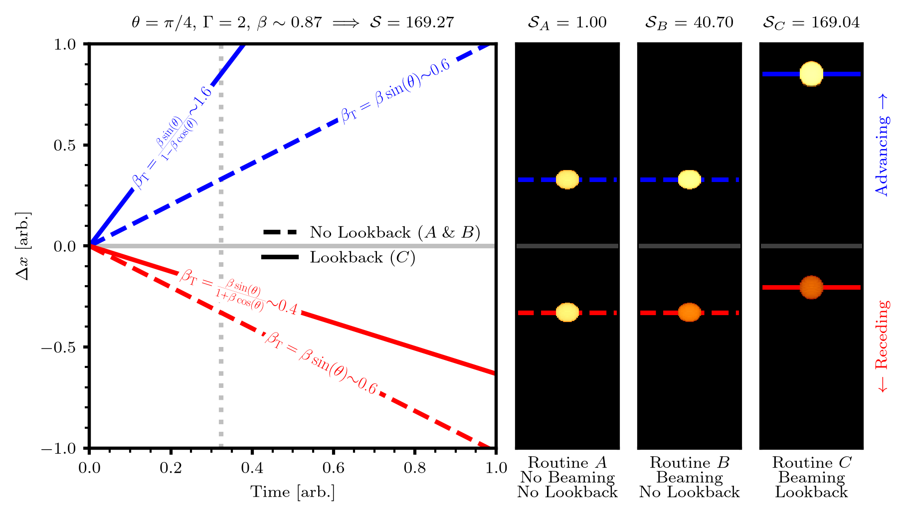
图注：Comparison of observed properties for a mock simulation dataset hosting twin anti-parallel relativistic ejecta, when imaged using three different routines with increasing levels of complexity ($A$, $B$ and $C$). Without lookback ($A$, $B$), rendering is performed using a single simulation snapshot. With lookback ($C$), multiple snapshots are scanned to account for a finite communication time between source and observer. In the left panel, the observed transverse motion for systems with/without lookback. In the right panels, we show the synthetic observations generated under different routines at an observer time given by the grey dashed line in the left panel. Without beaming ($A$), the advancing and receding ejecta have the same brightness; when beaming is included ($B$, $C$) the advancing ejecta is substantially brighter (shown by the flux ratio $\mathcal{S}\equiv S^\mathrm{adv}_\nu/S^\mathrm{rec}_\nu$). Without lookback ($A$, $B$), the ejecta exhibit symmetric transverse motion ($\beta_\mathrm{T}\sim0.6$) and are imaged as oblate spheroids, coherent with their lab-frame morphology. When lookback is included ($C$), the proper asymmetric transverse motion is captured, with the advancing ejectum appearing to move faster ($\beta_\mathrm{T}\sim 1.6$) than the receding ejectum ($\beta_\mathrm{T}\sim0.4$). Further, the ejecta are observed as spheres, consistent with the relativistic/geometric predictions of the Penrose-Terrell effect. When lookback is enabled, the flux ratio between ejecta matches the expected theoretical value to $0.2\%$. As such, only routine $C$ produces synthetic observations that match the predicted transverse motion, morphology and flux; see Sections~\ref{sec:beaming}-\ref{sec:luminosity}.
对应解读：对应“单快照渲染与有限光行时渲染的对照图”“多普勒增强验证图”“表观运动验证图”，也是关键图表逐图导读中图2、图3、图4类内容的核心实例。
入选理由：这张图同时比较无回溯/有回溯、无多普勒/有多普勒三种渲染方案，直接展示有限光行时对表观运动、形态和通量比的影响；左 panel 给出横向运动随时间的诊断，右侧图像给出亮度不对称和形态差异，并明确提到通量比与理论值相符到0.2%。它最能支撑日报中“忽略有限光行时会导致位置、速度、形态和通量系统偏差”的主结论。
来源与置信度：\(arxiv_source\)；high；\(arxiv_source\) / main.tex:figure[3]
Fig02
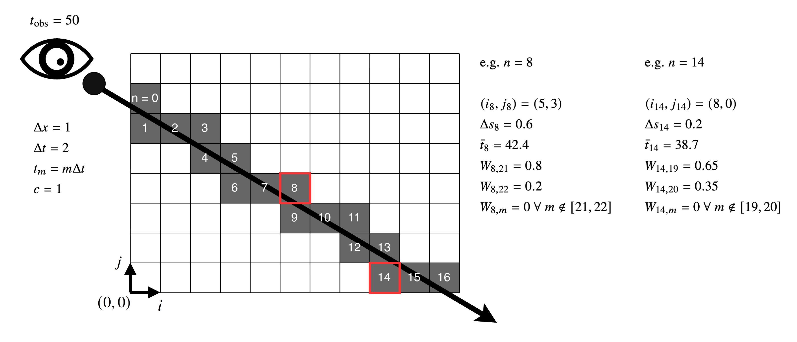
图注：Schematic description of the ray-tracing process for a single observation made at $t_\mathrm{obs}$, indicating how the cell-by-cell contributions to the line-of-sight summation are computed by identifying the indices of all cells on the line-of-sight $n=(i_n,j_n)$, the line element within each cell $\Delta s_n$, the evaluation time $\bar{t}_n$ and the temporal weighting factors for adjacent simulation snapshots $W_{n,m}$. For this schematic system (with spatial resolution $\Delta x$, snapshot cadence $\Delta t$), these quantities are evaluated explicitly for cells $n=8$ and $n=14$ (listed on the right). We can see that despite being viewed at the same observer time $t_\mathrm{obs}$, cell 14 is sampled at an earlier time than cell 8 ($\bar{t}_{14}=38.7$ vs. $\bar{t}_8=42.4$), as the cell lies deeper in the domain. The code uses these cell-by-cell quantities to sum the field along the line-of-sight (see Equation~\ref{eq:general_sum}).
对应解读：对应“代码流程图或数据流示意图”以及关键图表逐图导读中图1关于逐射线、逐网格单元、发射时间和时间插值的说明。
入选理由：该图明确标出每条视线穿过的网格单元、路径长度、单元发射时间以及相邻模拟快照的时间权重，正好解释日报强调的“多时刻渲染不是后处理拼接，而是在射线积分中逐单元完成”。相比一般代码流程图，它更直接揭示有限光行时算法的物理和数值核心。
来源与置信度：\(arxiv_source\)；high；\(arxiv_source\) / main.tex:figure[2]
Fig08
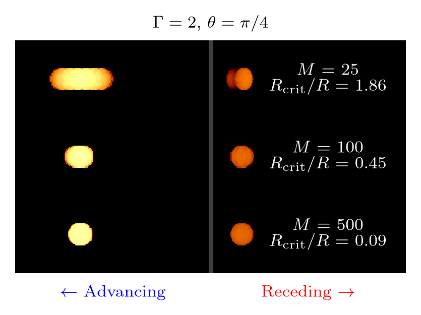
图注：Comparison between renders using simulation data sampled at increasing cadences. In the top panels (low cadence), the resolved length scale $R_\mathrm{crit}$ (see Equation~\ref{eq:r_crit}) exceeds the emitter radius $R$, resulting in multiple images of the emitter. Increasing the cadence reduces $R_\mathrm{crit}$, resulting in reduced smearing and proper recovery of the observed spherical structure (to a precision set by $R_\mathrm{crit}/R$).
对应解读：对应“收敛或残差诊断表”以及模型拟合段落中关于快照时间间隔、时间插值和系统误差诊断的讨论。
入选理由：该图通过改变模拟数据采样 cadence 展示低时间分辨率会产生多重像和 smearing，而提高 cadence 后才恢复正确球形结构；这直接支撑日报中关于快照间隔导致形态和通量系统误差、需要做时间采样收敛测试的解读。
来源与置信度：\(arxiv_source\)；high；\(arxiv_source\) / main.tex:figure[8]
Fig06
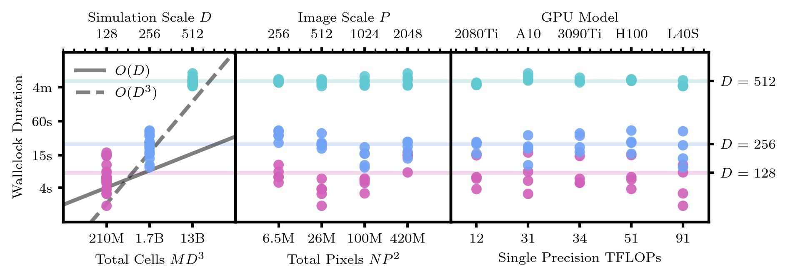
图注：Durations for the backend render routine when running with lookback generating $N=100$ images (consisting of $P^2$ pixels) each sampling $M=100$ simulation snapshots (consisting of $D^3$ cells). Performance shows little dependence on both the number of pixels in the image and the GPU model used, despite a wide range of theoretical performance ceilings considered (as measured in TFLOPS). The size of simulation dataset $D$ has the most significant effect on the runtime, with duration scaling as $O(D)$ for small datasets, and $O(D^3)$ for large datasets (as the system bottlenecked by file read speed, see Figure~\ref{fig:2080ti}).
对应解读：对应“性能或加速比图”以及关键图表逐图导读中图5关于运行时间随像素数、网格规模、视角数和快照数缩放的说明。
入选理由：该图给出启用 lookback 时生成多幅图像并扫描多快照的后端渲染耗时，横向比较像素数、模拟网格规模和 GPU 型号，能判断实际瓶颈来自数据规模而非单纯像素数。它比单个运行时间数字更能说明 cuDART 在真实参数扫描中的可用性。
来源与置信度：\(arxiv_source\)；high；\(arxiv_source\) / main.tex:figure[6]
Fig01
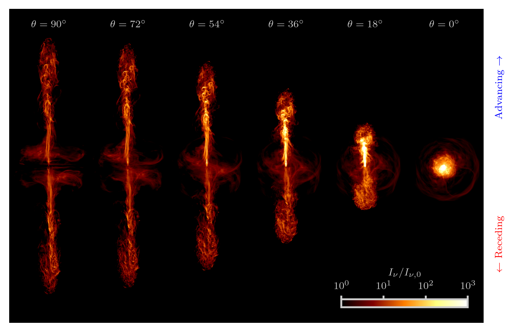
图注：Synthetic radio observations generated by \(\texttt{cuDART}\) using data from a relativistic magneto-hydrodynamic simulation of a flickering AGN jet \(\citep{Elley_2026b}.\) Image data publicly available on \href{https://zenodo.org/records/20140021}{Zenodo}. Each panel depicts the same dataset (single snapshot) viewed from different orientations; due to relativistic beaming the jet is substantially brighter when the jet is closely aligned to the line-of-sight. See Section~\(\ref{sec:astrophysics}\) for a discussion of the observationally relevant relativistic and geometric effects recovered by \(\texttt{cuDART}.\)
对应解读：对应“多视角合成观测网格”和“多普勒增强验证图”的定性展示部分。
入选理由：该图展示同一个相对论 MHD 喷流快照在不同观察方向下的合成射电图像，能够直观看到视角变化和相对论 beaming 对亮度的影响。虽然它不是严格的解析标度验证图，但很适合支撑日报中关于多视角扫描、形态连续性和视角依赖通量变化的讨论。
来源与置信度：\(arxiv_source\)；high；\(arxiv_source\) / main.tex:figure[1]
Fig05
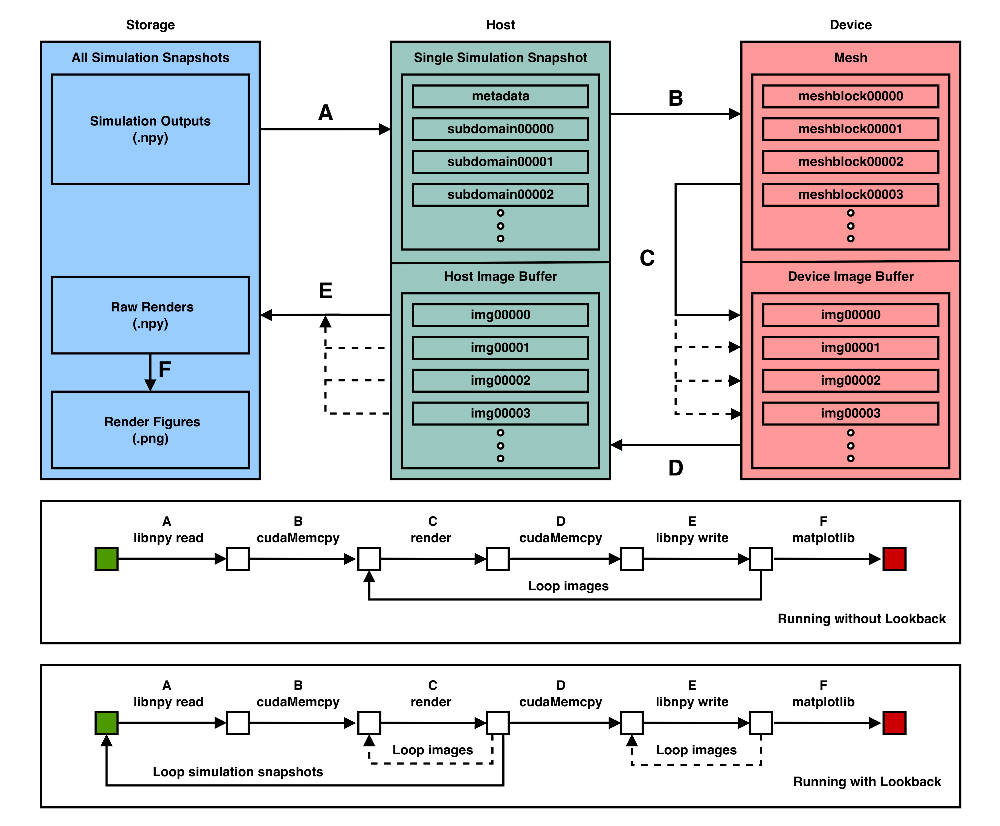
图注：Schematic description of the runtime chronology, for renders performed both with and without the lookback routine. Data is loaded from storage into host memory using \(\texttt{libnpy},\) and then copied to the device. Without lookback, images are rendered, copied and saved to storage within loop. With lookback, partial images are written additively to a communal buffer and the complete images are only copied and saved once all snapshots have been looped over. This minimises the number of read/write/transfer operations at the expense of maintaining a persistent buffer for all images in device memory. The raw image files can be converted into human-readable figures using the Python frontend and \(\texttt{matplotlib}.\)
对应解读：对应“代码流程图或数据流示意图”和性能段落中关于启用/不启用 lookback 时数据加载、GPU 缓冲和输出流程差异的说明。
入选理由：该图说明无 lookback 与有 lookback 渲染在运行时流程上的差别，尤其是多快照循环、部分图像累加到公共缓冲区以及最终一次性拷贝保存的设计。它对理解 GPU 实现和 I/O 策略有帮助，但科学诊断量不如 Fig02、Fig03 和 Fig08 直接。
来源与置信度：\(arxiv_source\)；high；\(arxiv_source\) / main.tex:figure[5]
强相关工作
这篇工作属于合成观测和辐射后处理工具链的一部分，和许多广义辐射转移、同步辐射后处理、喷流可视化以及虚拟望远镜框架互补。相似工作通常围绕关键词检索：synthetic observations, relativistic ray tracing, optically thin emission, light travel time effects, relativistic jets, post-processing simulations, GPU ray tracing, radiative transfer code。cuDART 的差异点在于强调网格化模拟的快速多视角渲染，并把有限光行时延迟纳入多模拟时刻合成，而不是只做单时刻可视化。
它也与经典相对论喷流观测理论相连，包括多普勒增强、表观超光速运动和等到达时间面。若研究对象是活动星系核喷流或伽马暴余辉，这些基础理论早已指出观测图像是相对论几何的产物；cuDART 的贡献是把这些效应放进可运行的开源数值流程。应同时检索同类源、历史原型和综述，如 relativistic beaming review, apparent superluminal motion, gamma-ray burst afterglow equal arrival time surface, VLBI jet synthetic observation。
潜在张力或相反观点不是某篇观测论文与本文冲突，而是方法选择上的权衡：更完整的辐射转移代码可以处理吸收、偏振或广义相对论弯曲，但可能计算更重；简单解析模型速度快、可解释性强，但难以处理复杂三维时变结构。cuDART 位于二者之间，适合光学薄、相对论、几何和时间延迟效应主导的问题。
同一事件 / 同类源线索：
相似工作：
（未提供）
基础理论 / 方法工作：
- https://ui.adsabs.harvard.edu/abs/1979rpa..book.....R/abstract
- https://ui.adsabs.harvard.edu/abs/1966Natur.211..468R/abstract
相反观点 / 张力线索：
（未提供）
11. Electromagnetic Emission and Orbital Evolution of Eccentric Supermassive Black Hole Binaries in Retrograde Disks
- 来源：arXiv / astro-ph.HE
- 链接：https://arxiv.org/abs/2609.09314v1
- 作者：David ONeill, Mark J. Avara, Christopher Tiede, Daniel J. DOrazio, Zoltan Haiman, Andrew MacFadyen
- 评分：novelty 8/10，importance 7/10，relevance 8/10，final 8.65/10
- 推荐理由：首次网格流体模拟偏心 SMBH 双星的逆行盘并预测电磁辐射和 LISA 相关轨道演化，属于黑洞多信使源建模，结果对未来 EM+GW 识别有参考价值。
中文题目：逆行盘中偏心超大质量黑洞双星的电磁辐射与轨道演化
做了什么：这篇论文用二维网格流体模拟研究偏心超大质量黑洞双星周围的逆行 circumbinary disk，并把黏滞加热、激波加热和黑体冷却放进能量方程。作者扫描了盘的初始马赫数 \(\mathcal{M}_a\in\{10,20,40\}\) 和双星偏心率 \(e_{\rm b}=0\) 到 \(0.8\)，发现同一组宏观参数下可存在多个稳定态：两个小盘都逆行、两个小盘都顺行，或一顺一逆。不同小盘自转态给双星角动量和偏心率演化带来相反结论：\(\downarrow\downarrow\) 与 \(\uparrow\downarrow\) 倾向圆化并内旋，而 \(\uparrow\uparrow\) 可维持或增强偏心率，使进入 \(\rm LISA\) 频段时仍可能有可观测偏心。论文还估算了电磁辐射，认为质量 \(M_{\rm b}=8\times10^6\,M_\odot\)、红移 \(z=1\) 的系统在光学和紫外可被现有或未来设备探测。
为什么重要：超大质量黑洞双星是低频引力波天文学的核心源类之一，但气体盘会怎样改变其偏心率、合并时间和电磁对应体仍是理论不确定性最大的部分之一。过去很多研究默认顺行盘，或集中在圆轨道双星；这篇工作强调逆行盘并不只是顺行盘换个符号，而会产生由小盘旋向决定的多稳态动力学。这直接影响 \(\rm LISA\) 源参数解释、候选周期活动星系的电磁诊断，以及气体辅助合并是否能解决最终秒差距问题。
理论 / 观测 / 仪器方法价值：方法上的价值在于它把偏心双星、逆行环双星盘、局域热平衡辐射冷却和网格流体模拟结合起来，并进一步用一维平均盘模型解释二维模拟的径向结构。理论上的价值是指出双星轨道演化不仅由大尺度盘的总角动量方向决定，还强烈依赖小盘的拓扑态和初始条件记忆。观测上的价值是给出了光学/紫外可探测性和时间变辐射的预期，为寻找 \(\rm LISA\) 前兆电磁源提供了更具体的模板。
为什么应该关注：如果你关心 \(\rm LISA\) 时代如何把低频引力波源和活动星系核候选体联系起来，这篇文章值得看，因为它说明同样的双星质量、偏心率和盘厚度可以对应不同轨道演化路径。一个看似细节的问题——小盘是顺行还是逆行——可能决定双星进入 \(\rm LISA\) 频段时是否还带有可测偏心，也决定电磁光变和谱能量分布该如何解释。
展开详细解读：文章讲解、背景、理论、重点章节、图表与相关工作
文章详细讲解
科学问题：超大质量黑洞双星周围的气体盘通常被认为会影响双星的半长轴 \(a_{\rm b}\)、偏心率 \(e_{\rm b}\) 和电磁辐射，但大多数既有直觉来自顺行盘。逆行盘在星系并合后的角动量随机重取向环境中并不罕见；若外盘角动量与双星轨道角动量反向，气体越过空腔进入两个黑洞附近后形成的小盘可能出现多种旋向组合。本文的核心问题是：偏心双星在逆行环双星盘中是否有单一演化结论，还是存在由小盘态决定的多解；这些解会不会改变 \(\rm LISA\) 可观测偏心和电磁对应体预期。
作者怎么做：论文进行了首个针对偏心超大质量黑洞双星逆行 circumbinary disk 的网格流体模拟系列。模拟求解二维流体方程，并加入能量方程，使黏滞加热和激波加热与黑体辐射冷却竞争。参数扫描包括初始盘马赫数 \(\mathcal{M}_a=10,20,40\)，对应不同盘厚度或声速水平，以及双星偏心率 \(e_{\rm b}\in[0,0.8]\)。作者特别跟踪两个黑洞周围 minidisk 的旋向组合，用 \(\downarrow\downarrow\)、\(\uparrow\uparrow\) 和 \(\uparrow\downarrow\) 表示两小盘相对双星轨道的逆行、顺行或混合状态。
关键结果：最重要的发现是同一 \(e_{\rm b}\) 和 \(\mathcal{M}_a\) 下可以有多个长期稳定态，它们不是数值噪声，而是由初始条件和小盘角动量捕获历史决定的动力学分支。\(\downarrow\downarrow\) 和 \(\uparrow\downarrow\) 态通常给出圆化内旋，即半长轴减小同时偏心率降低；\(\uparrow\uparrow\) 态则可驱动偏心内旋，使双星在后续引力波主导阶段仍携带较大 \(e_{\rm b}\)。这意味着观测到的偏心 \(\rm SMBHB\) 不能简单反推出一个唯一盘构型，反过来，发现电磁周期源也不能只用单一顺行盘模板解释。
电磁方面，作者根据模拟中的温度、面密度和辐射冷却率计算盘的光度和谱能量分布。对一个总质量 \(M_{\rm b}=8\times10^6\,M_\odot\)、红移 \(z=1\) 的标度系统，模型预言光学与紫外波段通量可达到当前和未来仪器的探测范围。论文还展示二维模拟经时间和方位平均后的径向剖面可以被一维模型很好描述；一维模型自然给出一个空腔半径，空腔内部角动量输运主要由雷诺应力而不是普通黏滞应力控制。
局限和下一步：本文采用的是二维流体和参数化黏滞/冷却处理，尚未包含完整磁流体湍流、三维倾角翘曲、自引力、辐射转移细节和黑洞自旋相关的相对论效应。小盘多稳态是否在三维 \(\rm MHD\) 中同样稳健、态间转换的概率如何、真实星系并合历史会偏向哪个初始条件，仍需后续研究。下一步最关键的是把这些气体扭矩与 \(\rm PN\) 和引力波反作用连续耦合，预测进入 \(\rm LISA\) 频段时的 \(e_{\rm b}\) 分布，并把模拟光变与巡天数据中的周期类星体候选体做统计比较。
关键结果是怎么做出来的
数据和样本选择方面，本文不是观测样本论文，而是一个参数网格模拟研究。样本由不同初始马赫数 \(\mathcal{M}_a\in\{10,20,40\}\) 与不同双星偏心率 \(e_{\rm b}\in[0,0.8]\) 组合构成；每个组合下，作者关注外盘为逆行时气流穿越空腔、供给两个黑洞并形成 minidisk 的长期行为。关键选择不是事件数，而是能否覆盖从较厚热盘到较薄冷盘、从近圆轨道到高偏心轨道的动力学范围。
核心判据是小盘角动量的符号和双星轨道元的平均演化率。作者把两个 minidisk 的旋向归类为 \(\downarrow\downarrow\)、\(\uparrow\uparrow\) 和 \(\uparrow\downarrow\)，再计算气体对双星的扭矩、能量交换以及由此推得的 \(\dot a_{\rm b}\) 和 \(\dot e_{\rm b}\)。这类模拟的“显著性”不是观测意义上的 \(p\)-值，而是不同运行在多个轨道周期平均后是否收敛到稳定、可重复的符号和幅度；读者应重点看时间序列图中态是否只是一段瞬态，还是在粘滞时间或许多轨道周期上维持。
模型比较上，论文的关键证据链是：二维流场显示不同小盘态；扭矩和功率分解显示不同态对轨道角动量与能量的输运方向不同；轨道演化公式把这些输运量映射到 \(\dot a_{\rm b}\) 与 \(\dot e_{\rm b}\)；最后电磁辐射计算把热结构映射到可观测通量。支持结论的图表应包括小盘形态图、径向面密度/温度剖面、扭矩随半径或时间的分解、\(\dot a_{\rm b}\) 与 \(\dot e_{\rm b}\) 参数图，以及模型 \(\rm SED\) 或滤光片通量图。
主要系统误差来自二维近似、有效黏滞处方、冷却函数、内边界和吸积 sink 处理。尤其是 minidisk 的旋向可能对黑洞附近边界条件、数值分辨率和气体角动量混合敏感；若小盘被过强 sink 人为削弱，雷诺应力和局域激波加热会被改变。论文通过不同 \(\mathcal{M}_a\) 和 \(e_{\rm b}\) 的网格比较、时间和方位平均剖面、一维模型拟合来检查稳健性，但三维磁湍流仍是待验证因素。
最重要结果的读法是不要只看“逆行盘导致内旋”这一粗略结论，而要看内旋同时是圆化还是偏心化。\(\uparrow\uparrow\) 态在外盘整体逆行的背景下看似反直觉，却正是本文的新物理：流入空腔的气体可以在小尺度上重新组织成顺行小盘，并通过与双星相位相关的吸积和扭矩改变偏心率。若该结果稳健，它会让 \(\rm LISA\) 偏心率成为诊断气体盘历史而非仅诊断恒星散射历史的工具。
展开背景、理论、公式、模型、章节和图表导读
背景知识
研究对象是超大质量黑洞双星，即两个质量通常在 \(10^5\) 到 \(10^{10}\,M_\odot\) 范围的黑洞在星系并合后形成的束缚系统。它们在大尺度上由动力摩擦靠近，在较小尺度上由恒星散射、气体盘相互作用和最终引力波辐射驱动合并。所谓 circumbinary disk 是包围整个双星的盘，而 minidisk 是气体越过中心空腔后围绕单个黑洞形成的小盘。
历史问题之一是“最终秒差距问题”：双星从星系尺度收缩到引力波能高效带走能量的尺度，中间是否会停滞。气体盘曾被认为可以通过角动量交换帮助双星继续内旋，但后来研究发现顺行盘的净扭矩符号并不总是简单，甚至在某些参数下可能导致外迁或减慢内旋。因此，盘-双星相互作用不是一句“气体带走角动量”就能概括。
逆行盘的背景来自星系并合环境中角动量方向的随机性。外部气体补给、核区湍流、二次并合和反馈都可能让盘角动量与双星轨道角动量反向。逆行盘没有强的外 Lindblad 共振屏障，传统上常被认为更容易让气体进入中心、抽取角动量并促进合并；但偏心双星和小盘结构会让这个图像复杂化。
现在值得重新看，是因为 \(\rm LISA\) 将在毫赫兹频段探测 \(10^4\) 到 \(10^7\,M_\odot\) 级黑洞双星合并，而地面和空间光学/紫外巡天正在积累大量周期性活动星系候选体。如果气体盘能留下可测偏心或周期辐射调制，那么电磁巡天与低频引力波可以互相定位和约束源环境。
常见误区有三个。第一，把“逆行盘”理解成所有尺度都严格逆行；本文显示小盘可能是顺行或混合态。第二，把偏心率演化只归因于引力波辐射；事实上在较大分离处气体扭矩可能主导 \(\dot e_{\rm b}\)。第三，把模拟中的辐射光度当作直接观测模板；实际观测还受尘埃消光、宿主星系污染、倾角、谱带响应和长期变源筛选函数影响。
基础理论 / 方法脉络
基础物理图像是双星和盘通过引力扭矩、吸积携带的质量和角动量通量、以及激波耗散交换能量。若盘角动量与双星轨道反向，气体进入中心时可能带走或抵消双星角动量，使半长轴 \(a_{\rm b}\) 减小；但偏心率 \(e_{\rm b}\) 取决于能量损失和角动量损失的相对比例，而不是只取决于角动量符号。
盘的厚度通常可用马赫数 \(\mathcal{M}_a\) 表征。较大的 \(\mathcal{M}_a\) 意味着声速 \(c_s\) 较低、盘相对更薄，螺旋激波和流束结构更尖锐；较小的 \(\mathcal{M}_a\) 则代表更热、更厚的盘，压力可平滑部分非轴对称结构。本文扫描 \(\mathcal{M}_a=10,20,40\)，正是在检验小盘多稳态和扭矩符号是否依赖盘厚度。
能量方程的作用是让温度不是人为固定，而由黏滞加热、激波加热和黑体冷却平衡决定。温度影响声速，声速影响盘厚和流束穿越空腔的形态，最终影响雷诺应力、吸积率和发光。对电磁辐射而言，局域有效温度 \(T_{\rm eff}\) 决定黑体谱峰，盘的径向面积分决定光学/紫外谱能量分布。
本文的关键观测量或诊断量包括 \(\dot a_{\rm b}\)、\(\dot e_{\rm b}\)、总光度 \(L\)、谱通量 \(F_\nu\)、径向面密度 \(\Sigma(r)\)、温度 \(T(r)\)、黏滞应力和雷诺应力。模拟中还要区分时间平均与瞬时光变，因为双星相位会强烈调制供给小盘的流束。
常见退化包括质量标度与吸积率标度的退化、盘倾角与内禀光度的退化、红移与源质量对观测谱峰位置的退化，以及数值 sink 半径与真实小盘内边界的退化。对理论解释尤其重要的是，测到偏心内旋并不唯一指向恒星散射或三体作用；气体盘，特别是本文的 \(\uparrow\uparrow\) 分支，也可能产生类似信号。
公式与推导
第一步从双星两体轨道能量和角动量写起。对总质量 \(M_{\rm b}=M_1+M_2\)、约化质量 \(\mu=M_1M_2/M_{\rm b}\)、半长轴 \(a_{\rm b}\) 和偏心率 \(e_{\rm b}\)，轨道能量为
这里 \(G\) 是引力常数。该式说明若气体从双星抽取能量，即 \(\dot E_{\rm b}<0\)，通常会使 \(a_{\rm b}\) 减小。
第二步写轨道角动量：
在给定 \(a_{\rm b}\) 下，较小的 \(J_{\rm b}\) 对应较大的 \(e_{\rm b}\)。因此偏心率演化取决于 \(\dot E_{\rm b}\) 和 \(\dot J_{\rm b}\) 的组合，而不是只看扭矩正负。
第三步将上两式微分，得到偏心率变化的诊断关系：
若短时间内质量增长项较小，这个式子直接把模拟测得的能量和角动量交换映射为 \(\dot e_{\rm b}\)。
第四步给出盘的质量守恒。二维薄盘面密度 \(\Sigma\) 满足
其中 \(\mathbf{v}\) 是盘面速度，\(S_\Sigma\) 可表示源项或 sink 吸积项。该式控制外盘如何向空腔和 minidisk 供给质量。
第五步给出角动量通量分解。半径 \(r\) 处的角动量通量可示意写成
其中 \(\dot M\) 是质量流率，\(\Omega\) 是角速度，\(T_{r\phi}\) 是黏滞或磁湍流应力，\(\dot J_{\rm Rey}\) 表示非轴对称流束和湍动贡献的雷诺应力通量。本文强调空腔内角动量输运常由 \(\dot J_{\rm Rey}\) 主导。
第六步写能量平衡。单位面积内能 \(U\) 的演化可概括为
其中 \(P\) 是压强，\(Q^+_{\rm visc}\) 是黏滞加热，\(Q^+_{\rm shock}\) 是激波加热，\(Q^-_{\rm rad}\) 是辐射冷却。这个方程决定盘温度和发光，而不只是动力学附属量。
第七步将冷却率与有效温度相连。若局域近似黑体辐射，常用
其中 \(\sigma_{\rm SB}\) 是 Stefan-Boltzmann 常数，因子 \(2\) 表示盘上下两个表面。由此可从模拟的冷却率估计 \(T_{\rm eff}\)。
第八步计算观测谱通量。对面朝上的多温黑体盘，源静止系光度密度可写为
其中 \(B_\nu\) 是 Planck 函数。观测者频率 \(\nu_{\rm obs}\) 下通量为
其中 \(z\) 是红移，\(D_L\) 是光度距离。本文用这一类关系判断 \(z=1\) 源在光学/紫外的可探测性。
第九步给出盘厚度与马赫数的联系。若近 Kepler 盘满足 \(H/r\simeq c_s/v_\phi\)，则
因此 \(\mathcal{M}_a=40\) 的盘比 \(\mathcal{M}_a=10\) 更薄，更容易形成窄流束和强非轴对称结构。
模型拟合 / 应用方法
本文的“拟合”主要不是观测数据拟合，而是把二维模拟结果压缩成可解释的轨道演化率、电磁谱和一维径向盘模型。被拟合或比较的量包括时间和方位平均的 \(\Sigma(r)\)、温度或冷却率剖面、质量流率 \(\dot M(r)\)、应力通量、空腔半径以及由扭矩推得的 \(\dot a_{\rm b}\) 和 \(\dot e_{\rm b}\)。读者应把这些量看成模拟诊断量，而不是自由参数独立调出的曲线。
一维模型的作用是检验二维盘的平均结构是否可被简化理论捕捉。通常一维盘模型会假设准稳态质量通量、某种有效黏滞或应力处方，并通过边界条件确定空腔附近的面密度下降。本文的亮点是指出空腔半径内部普通黏滞输运不再是主导项，雷诺应力由非轴对称流束和轨道相干运动提供，这解释了为什么单纯 \(\alpha\) 盘直觉在中心区域会失效。
参数估计的主要不确定性来自模拟有限时间平均和态选择。\(\downarrow\downarrow\)、\(\uparrow\uparrow\) 与 \(\uparrow\downarrow\) 不是通过后验概率抽样得到的三类模型，而是在不同初始条件下演化出的稳定分支。因此如果要将本文用于真实观测，需要额外建立这些分支的先验发生率，例如由星系并合气体补给方向、盘破裂、湍流角动量翻转或前期吸积历史决定。
残差诊断应看两个层面。第一是二维模拟与一维径向模型之间的剖面残差：空腔边缘、流束冲击点和 minidisk 区域是否系统偏离。第二是轨道演化率的时间残差：\(\dot a_{\rm b}\) 和 \(\dot e_{\rm b}\) 的平均值是否被少数强吸积事件支配，还是在多个双星周期上稳定。若强烈相位依赖导致均值不收敛，长期外推到 \(\rm LISA\) 频段会非常危险。
退化关系包括 \(M_{\rm b}\)、\(\dot M\) 和 \(z\) 对 \(F_\nu\) 的共同影响；\(\mathcal{M}_a\) 与冷却效率对盘厚度的共同影响；sink 半径与 minidisk 内边界对旋向稳定性的共同影响；以及偏心率 \(e_{\rm b}\) 与质量比 \(q=M_2/M_1\) 对流束相位的共同影响。本文摘要未强调质量比扫描，若主文固定或有限覆盖 \(q\)，读者应避免把结论无条件推广到所有不等质量双星。
实际应用上，本文可作为半解析群体模型的输入：给定一个气体盘阶段的 \(\dot a_{\rm b}\)、\(\dot e_{\rm b}\) 和发光效率，把系统演化到引力波主导阶段，再预测 \(\rm LISA\) 的偏心率分布和电磁预选样本。它也可帮助解释周期类星体候选体：若光变颜色和振幅更像逆行盘加小盘流束，而不是标准顺行盘，就可能提示特殊角动量构型。
重点章节 / 结果段落怎么读
-
引言和物理动机：应重点看作者如何界定逆行盘的重要性，以及为什么偏心双星不能直接套用圆轨道或顺行盘结论。这里还会交代与 \(\rm LISA\) 源偏心率和电磁对应体的关系，是理解全文问题意识的入口。
-
数值方法和初始条件：这一部分应检查流体方程、能量方程、黏滞和冷却处方、网格设置、边界条件、sink 处理以及 \(\mathcal{M}_a\) 与 \(e_{\rm b}\) 的参数网格。尤其要关注 minidisk 旋向是否由初始条件设定，还是在模拟中自发形成并保持。
-
盘形态和多稳态结果：这一节是全文核心。读者应看不同 \(\downarrow\downarrow\)、\(\uparrow\uparrow\)、\(\uparrow\downarrow\) 态的密度图、速度场和角动量符号，判断它们是否在相同宏观参数下共存，以及态间差异是否大到足以改变轨道演化。
-
轨道演化和扭矩分解：这里应重点读 \(\dot a_{\rm b}\)、\(\dot e_{\rm b}\)、能量交换率和角动量交换率的计算方法。判断圆化内旋与偏心内旋的证据是否来自长期平均扭矩，而不是短时相位波动。
-
电磁辐射和一维模型：这一节连接理论模拟与观测。应看作者如何从冷却率或温度场计算光学/紫外通量，采用什么质量和红移标度，以及一维平均模型如何重建二维模拟剖面并识别雷诺应力主导的空腔区。
-
讨论、局限和未来方向：应特别寻找作者对二维近似、缺少 \(\rm MHD\)、辐射转移简化、质量比覆盖和真实可探测性选择效应的说明。若这些问题被承认但未解决，读者在引用结论时应保留条件。
建议重点查看的图表
-
参数网格总览图：看 \(\mathcal{M}_a\) 与 \(e_{\rm b}\) 的组合如何分布，以及每个格点对应哪种 minidisk 稳定态。关键是同一参数下是否出现多态。
-
面密度或温度快照图：看外盘空腔、流束、两个 minidisk 的结构和旋向。尤其要检查 \(\uparrow\uparrow\) 态是否在外盘逆行背景下仍清晰存在。
-
小盘角动量时间序列：看两个 minidisk 的角动量符号是否长期稳定，是否发生翻转，翻转是否与吸积爆发或轨道相位相关。
-
\(\dot a_{\rm b}\) 与 \(\dot e_{\rm b}\) 图：看不同态的符号和误差范围。核心结论依赖 \(\downarrow\downarrow\)、\(\uparrow\downarrow\) 与 \(\uparrow\uparrow\) 在 \(\dot e_{\rm b}\) 上分离。
-
扭矩和功率径向分解图：看空腔边缘、流束和 minidisk 区域分别贡献多少。若雷诺应力在空腔内主导，应在此类图中最清楚。
-
时间和方位平均剖面与一维模型比较图：看 \(\Sigma(r)\)、温度、应力或 \(\dot M(r)\) 的模型残差。空腔半径是否由模型自然给出，是判断简化模型价值的重点。
-
谱能量分布或滤光片通量图：看 \(M_{\rm b}=8\times10^6\,M_\odot\)、\(z=1\) 标度下光学/紫外通量相对仪器灵敏度的位置。注意宿主污染和消光通常未完全纳入。
-
稳健性或分辨率测试表：看不同分辨率、边界或平均时间窗口下 minidisk 态和轨道演化率是否保持。
关键图表逐图导读
图 1：通常应是参数空间或模拟设置示意。横轴可能是双星偏心率 \(e_{\rm b}\)，纵轴可能是马赫数 \(\mathcal{M}_a\)，不同颜色或符号标出 \(\downarrow\downarrow\)、\(\uparrow\uparrow\)、\(\uparrow\downarrow\) 态。读图重点是多稳态是否发生在同一 \(e_{\rm b}\) 和 \(\mathcal{M}_a\)，而不是只随参数单调变化。陷阱是把颜色当作唯一稳定解；若图中有初始条件标签，应一起看。
图 2：可能展示面密度快照或速度场。坐标轴一般为以双星半长轴 \(a_{\rm b}\) 归一化的 \(x/a_{\rm b}\) 与 \(y/a_{\rm b}\)，颜色为 \(\Sigma\) 或温度，箭头或流线为速度方向。重点看空腔半径、流束冲击点、两个 minidisk 的旋向。读图陷阱是瞬时快照受轨道相位影响，应与时间平均或动画式诊断结合。
图 3：小盘角动量随时间变化图。横轴应为双星轨道周期单位的时间，纵轴为每个 minidisk 的归一化角动量或角动量符号。模型线若跨过零，表示旋向翻转或不稳定。重点看 \(\uparrow\uparrow\) 态是否只是短时捕获，还是在许多轨道周期保持。
图 4：轨道演化率图。横轴可能为 \(e_{\rm b}\) 或不同模拟编号，纵轴为归一化的 \(\dot a_{\rm b}/a_{\rm b}\) 和 \(\dot e_{\rm b}\)。数据点按小盘态分组，误差条表示时间波动。最关键的结论是 \(\downarrow\downarrow\) 与 \(\uparrow\downarrow\) 落在圆化区域，而 \(\uparrow\uparrow\) 落在偏心增长区域。陷阱是忽视 \(\dot a_{\rm b}\) 与 \(\dot e_{\rm b}\) 的协方差。
图 5：应力或角动量通量径向分解图。横轴为 \(r/a_{\rm b}\)，纵轴为各类通量或应力贡献，模型线区分黏滞应力、雷诺应力和吸积携带项。读图重点是空腔内部哪一项主导，以及空腔边缘是否出现符号变化。若只看总通量，容易错过不同物理机制的抵消。
图 6：平均盘剖面与一维模型比较。横轴为 \(r/a_{\rm b}\)，纵轴可能是 \(\Sigma\)、\(T\)、\(Q^-_{\rm rad}\) 或 \(\dot M\)。二维模拟点或阴影带与一维模型曲线重合说明简化模型可用；在 minidisk 或流束区域的偏离则提示轴对称近似失效。
图 7：电磁谱能量分布。横轴为观测频率或波长，纵轴为 \(\nu F_\nu\)、\(F_\nu\) 或 AB 星等，模型曲线对应不同 \(e_{\rm b}\)、\(\mathcal{M}_a\) 或 minidisk 态，水平线/阴影为仪器灵敏度。重点看光学和紫外窗口是否跨过探测阈值。陷阱是这些曲线通常未完全包含宿主星系背景、尘埃和视向倾角。
论文原图 / 可嵌入图片
Fig05
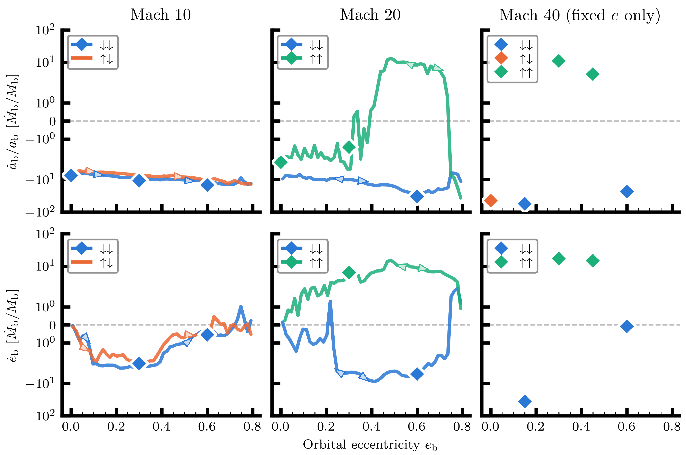
图注：The orbital evolution of equal-mass binaries interacting with retrograde circumbinary disks, as a function of binary eccentricity, for varying Mach numbers. In each panel we show results from fixed-eccentricity simulations (diamonds) and eccentricity sweeps (arrows indicate the sweep direction). For practical reasons, each sweep was initialized at the eccentricity where a given state was most readily obtained, then swept toward both higher and lower eccentricity.
对应解读：建议重点查看的图表第4项；关键图表逐图导读中的“图4：轨道演化率图”；模型拟合段落关于由扭矩推得的 \(\dot a_{\rm b}\) 和 \(\dot e_{\rm b}\)。
入选理由：这是支撑论文核心结论的最关键图，直接展示逆行环双星盘中不同 minidisk 稳定分支随双星偏心率和马赫数给出的轨道演化。日报强调要比较 \(\downarrow\downarrow\)、\(\uparrow\downarrow\) 与 \(\uparrow\uparrow\) 在圆化或偏心增长上的分离，Fig05 正是对应 \(\dot a_{\rm b}\)、\(\dot e_{\rm b}\) 与偏心率扫描的主诊断图。
来源与置信度：\(arxiv_source\)；high；\(arxiv_source\) / main.tex:figure[5]
Fig02
图注：Target surface density maps spanning orbital eccentricity $e=0.0,\,0.3,\,0.6$ (\emph{columns}) and initial disk Mach number $\mathcal{M}_\mathrm{a}=10,\,20,\,40$ (\emph{rows}). The binary orbit is counter-clockwise in all panels, and the grey arrows indicate minidisk orbital directions.
对应解读：建议重点查看的图表第1、2项；关键图表逐图导读中的“图1：参数空间或模拟设置示意”和“图2：面密度快照或速度场”。
入选理由：该图按 \(e_{\rm b}=0.0,0.3,0.6\) 与 \(\mathcal{M}_a=10,20,40\) 排列面密度图，并用箭头标出 minidisk 旋向，最适合让读者直观看到参数网格、空腔、流束、小盘结构以及多种小盘旋向状态。它比单独的理论轨道图更直接对应日报中关于多稳态和小盘形态的解读。
来源与置信度：\(arxiv_source\)；high；\(arxiv_source\) / main.tex:figure[2]
Fig04
图注：Angular momentum transport for three disks of varying Mach number (left to right: $\mathcal{M}_a = 10,~20,~40$) interacting with a circular binary ($e_\mathrm{b} = 0$). \(\emph{Top row}\): A snapshot of the velocity divergence field clearly showing strong Mach dependence with overlaid streamlines of mass flux $\Sigma\mathbf{v}$ (grey). \(\emph{Middle row}\): Decomposition of the angular momementum flux into it's advective, viscous and Reynolds components ($F_{J,\mathrm{hydro}} = F_{J,\mathrm{adv}} + F_{J,\nu} + F_{J,\mathrm{Rey}}$). \(\emph{Bottom row}\): The cumulative gravitational torque $F_{J,\mathrm{grav}}\equiv \int_0^r dr' 2\pi r'\mathcal{T}(r')$ (blue) compared with the total hydrodynamical flux (white). The time and azimuthally averaged angular momentum flux profiles were averaged over a baseline of $10, 50, 150$ orbits respectively with a cadence of $20$ snapshots per orbit.
对应解读：建议重点查看的图表第5项；关键图表逐图导读中的“图5：应力或角动量通量径向分解图”；模型拟合段落关于雷诺应力主导空腔内部角动量输运。
入选理由：该图同时给出速度散度快照、质量流线、角动量通量的 advective、viscous 与 Reynolds 分解，以及累积引力扭矩和总流体通量对比，是检验空腔内输运机制的核心证据。日报特别强调不要只看总通量，而要区分黏滞应力和雷诺应力，Fig04 与这一诊断完全匹配。
来源与置信度：\(arxiv_source\)；high；\(arxiv_source\) / main.tex:figure[4]
Fig03
图注：Time and azimuthally averaged surface density profiles (\emph{top}) and vertically-integrated pressure profiles (\emph{bottom}) for circular binaries ($e_\mathrm{b} = 0$). We compare our findings to the initial conditions \(\citet{SS73}\) (grey, dotted lines) and Eq.~\(\ref{TorquedProfiles}\) (black, dashed lines) using $f = 1+l_0\sqrt{a_\mathrm{b}/r}$ with $l_0= [-0.88,~-1.03,~-1.66]$ for Mach 10, 20 and 40 respectively.
对应解读：建议重点查看的图表第6项；关键图表逐图导读中的“图6：平均盘剖面与一维模型比较”；模型拟合段落关于二维模拟平均剖面与一维径向盘模型的比较。
入选理由：该图展示圆双星情形下时间和方位平均的面密度、垂直积分压力剖面，并与初始 Shakura-Sunyaev 型剖面和带扭矩的一维模型曲线比较。它是判断一维模型是否能捕捉平均盘结构、空腔附近面密度下降和压力分布的主要图，比纯快照更适合支撑模型压缩和剖面残差讨论。
来源与置信度：\(arxiv_source\)；high；\(arxiv_source\) / main.tex:figure[3]
Fig08
图注：Detectability analysis for a catalogue of current and upcoming EM instruments. We consider the thermal emission produced by a face-on retrograde circumbinary disks at redshift $z=1$, (neglecting the subdomain and superdomain contributions of the disk).
对应解读：建议重点查看的图表第7项；关键图表逐图导读中的“图7：电磁谱能量分布或滤光片通量图”；详细解读中关于 \(M_{\rm b}=8\times10^6M_\odot\)、\(z=1\) 系统在光学/紫外仪器中的可探测性。
入选理由：该图直接面向当前和未来电磁仪器的探测性分析，且明确采用红移 \(z=1\) 的面朝向逆行环双星盘热辐射模型。日报要求读者检查模型通量相对仪器灵敏度的位置，Fig08 比仅给出内禀光度或周期图的 Fig06 更贴合这一可观测性判断。
来源与置信度：\(arxiv_source\)；high；\(arxiv_source\) / main.tex:figure[8]
Fig07
图注：Massive binary evolution integrated according to circumbinary disk evolution (on the Mach 20 $\uparrow\uparrow$ branch), mass accretion and gravitational wave-emission \(\citep{Peters1964}.\) We initialise both binaries at $a_\mathrm{i} = 5\times10^{-3}\,\mathrm{pc}$ with $e_\mathrm{i}=0.0$ and we constrain the orbital eccentricity by $e_\mathrm{max}\sim 0.8$ in Fig.~\(\ref{fig:OrbitalEvolution}.\) \(\emph{Top}\): semi-major axis and eccentricity tracks. In \(\emph{red}\) we denote the radiation-pressure dominated region and in \(\emph{blue}\) the separation at which a circular binary will enter the LISA sensitivity band. \(\emph{Bottom}\): higher harmonics in the LISA band using the sensitivity curve given by \(\citet{Robson2019}.\)
对应解读：详细解读中关于 \(\uparrow\uparrow\) 分支可在 LISA 频段保留可观测偏心率；模型拟合段落关于把气体驱动演化接到引力波主导阶段。
入选理由：该图把 Mach 20 的 \(\uparrow\uparrow\) 分支、吸积和 Peters 引力波辐射耦合起来，展示半长轴和偏心率轨迹以及进入 LISA 灵敏频段后的高次谐波。它不是日报列出的基础诊断图之一，但能直接支撑论文最重要的天体物理外推：逆行盘多稳态可能改变 LISA 可观测偏心率分布。
来源与置信度：\(arxiv_source\)；high；\(arxiv_source\) / main.tex:figure[7]
强相关工作
这篇工作应放在 circumbinary disk 与超大质量黑洞双星电磁对应体的大背景下阅读。同类研究包括顺行盘中空腔、流束、minidisk 周期吸积以及双星轨道迁移的二维/三维模拟；历史原型问题则是气体盘能否解决最终秒差距问题。检索关键词可用“supermassive black hole binary circumbinary disk migration eccentricity”、“retrograde circumbinary disk SMBHB”、“minidisk accretion streams binary black holes”。
它也与 \(\rm LISA\) 源环境研究直接相关。已有大量工作讨论恒星散射、三体相互作用和引力波反作用如何塑造进入毫赫兹频段的偏心率；本文提供了一条气体盘偏心化或圆化的替代路径。若未来 \(\rm LISA\) 测到显著偏心，不能简单归因于无气体动力学历史，需要把逆行盘多稳态纳入解释。检索关键词可用“LISA massive black hole binary eccentricity gas disk”、“electromagnetic counterpart massive black hole binary ultraviolet optical”。
可能的张力在于顺行盘文献中关于双星是内迁还是外迁、偏心是增长还是衰减并无统一结论，而本文又加入逆行和小盘旋向多态，使参数空间更复杂。相反观点可能来自全三维 \(\rm MHD\) 模拟：磁湍流、盘风和辐射转移可能改变二维黏滞模型中的应力结构。因此后续检索应特别关注“3D MHD circumbinary disk SMBHB”、“retrograde disk binary black hole MHD”、“Reynolds stress cavity circumbinary disk”。
同一事件 / 同类源线索：
相似工作：
（未提供）
基础理论 / 方法工作：
相反观点 / 张力线索：
（未提供）
12. Overmassive No More: The Case for Little Red Dots Hosting Black Hole Seeds as Massive as Single Supermassive Stars
- 来源：arXiv / astro-ph.HE
- 链接：https://arxiv.org/abs/2609.09274v1
- 作者：Wendy Q. Sun, Rohan P. Naidu, Hanpu Liu, Anna de Graaff, Jenny E. Greene, Jorryt Matthee, Chris Ashall, John Chisholm
- 评分：novelty 8/10，importance 8/10，relevance 7/10，final 8.65/10
- 推荐理由：针对 JWST Little Red Dots 提出伪光球/黑洞星解释，给出 10^4-10^5 太阳质量重种子黑洞质量估计，涉及早期黑洞种子形成这一重要主题，虽非伽马方向但值得关注。
中文题目：不再“过重”：小红点可能容纳质量相当于单颗超大质量恒星的黑洞种子
做了什么：这篇文章重新解释 JWST 发现的“小红点”（Little Red Dots, LRDs）中心红色连续谱：作者不把它们直接当作普通类星体吸积盘来称量，而是假设其中心发动机被一个类似恒星大气的膨胀伪光球包裹，形成所谓“黑洞星”（BH*）。他们对扣除宿主星系后的 \(117\) 个 LRD 堆叠谱拟合定制恒星大气模型，得到 \(T_{\rm eff}\approx4200-4800\,{\rm K}\)、\(L_{\rm bol}\approx10^{43}-10^{45}\,{\rm erg\,s^{-1}}\)、伪光球半径约 \(700-2000\,{\rm au}\)。再用表面重力、超爱丁顿类比、外流逃逸速度和无显著变光给出的动力学时间下限四种方法估计质量，结果都指向 \(M_{\rm BH}\approx10^{4}-10^{5}\,M_\odot\)。这使 LRD 不再需要含有比宿主星系“过重” \(2-3\) 个数量级的黑洞，而可被解释为处在强超爱丁顿阶段的重种子黑洞，质量尺度与单颗超大质量恒星坍缩形成的种子相容。
为什么重要：LRD 是 JWST 高红移宇宙中最令人困惑的源族之一：它们红、紧致、数量不少，既不像正常星系，也不像低红移 AGN 的简单外推。若按常规宽线或 AGN 光度估计黑洞质量，一些 LRD 会落在本地 \(M_{\rm BH}-M_\star\) 关系之上 \(2-3\) dex，逼迫理论接受极早期黑洞异常高效生长。本文的重要性在于，它提出一种物理上自洽、可观测检验的替代图像：红色连续谱来自膨胀伪光球，真实黑洞质量可低到 \(10^{4}-10^{5}\,M_\odot\)，高光度则由 \(L_{\rm bol}/L_{\rm Edd}\sim5-50\) 的超爱丁顿辐射支撑。
理论 / 观测 / 仪器方法价值：对理论而言，本文把 LRD、超大质量恒星（SMS）坍缩、重黑洞种子和超爱丁顿包层模型连接起来，给出一个避免“过重黑洞”张力的参数框架。对观测而言，它提示不能只用标准 AGN 模板或简单连续谱斜率来解释 LRD，而应关注宿主扣除、光谱堆叠、光球温度、谱线外流速度、变光上限和光度函数截断。对方法而言，它展示了在传统维里质量估计不适用时，如何从大气模型、动力学时间、外流速度和爱丁顿比等互相独立的约束合成一个质量尺度。
为什么应该关注：如果这篇文章的解释成立，LRD 可能不是“宇宙早期已经长得太大的黑洞”，而是我们第一次成批看到重种子黑洞刚诞生、仍被膨胀辐射包层包住的阶段。这会改变我们理解 \(z\gtrsim5\) 黑洞种子形成、早期星系反馈、JWST 红色点源选择函数以及未来 Roman、Euclid、ELT 和 X 射线随访策略的方式。即使模型最终被修正，它也迫使领域认真处理一个关键问题：LRD 的红色连续谱究竟是尘埃、老年恒星、标准 AGN 吸积盘，还是更接近恒星爆发/超爱丁顿包层的辐射转移现象。
展开详细解读：文章讲解、背景、理论、重点章节、图表与相关工作
文章详细讲解
科学问题：LRD 的核心难题是它们的外观和能量学互相别扭。JWST 在高红移发现许多紧致、红色、带有 AGN 迹象但又不完全像典型类星体的点源。若把红色连续谱和宽线都放进标准 AGN 框架，常会推出相当大的黑洞质量，甚至使 \(M_{\rm BH}/M_\star\) 明显高于本地星系中的比例。这带来一个理论压力：要么早期宇宙能极快制造并喂养超大质量黑洞，要么我们对这些源的辐射结构和质量估计方法用错了。
作者怎么做：本文选择第二条路。他们把 LRD 的中心红色连续谱解释为一个包裹黑洞的膨胀伪光球，而不是直接暴露的标准薄盘。作者使用扣除宿主星系后的中心发动机谱，并把 \(117\) 个 LRD 做堆叠，以提高信噪比并提取典型 BH* 连续谱。随后用为这种场景定制的恒星大气模型拟合光谱，得到窄范围的有效温度 \(T_{\rm eff}\approx4200-4800\,{\rm K}\)、高玻尔光度 \(L_{\rm bol}\approx10^{43}-10^{45}\,{\rm erg\,s^{-1}}\)，以及巨大的伪光球半径 \(R_{\rm ph}\approx700-2000\,{\rm au}\)。
关键结果：最核心的结果不是单一拟合参数，而是四条独立质量估计路径给出了相近的质量尺度。第一，恒星大气模型中的表面重力 \(g\) 与 \(R_{\rm ph}\) 可给出包层所感受到的中心质量；第二，若这些对象类似超爱丁顿瞬变，其光度与爱丁顿光度之比可反推质量；第三，外流物质速度若接近光球半径处逃逸速度，也能估计 \(M\)；第四，缺乏显著变光意味着系统动力学时间不能太短，从而给出质量或半径约束。四者都落在 \(M_{\rm BH}\approx10^{4}-10^{5}\,M_\odot\) 附近。由此，LRD 中心黑洞可回到本地 \(M_{\rm BH}-M_\star\) 关系散布范围内，而不必是极端“过重”黑洞。
局限和下一步：本文的结论依赖若干关键假设：宿主扣除是否可靠，堆叠谱是否代表单个源的物理状态，伪光球是否可用一维恒星大气近似，外流速度是否真的追踪逃逸速度，缺乏变光是否来自物理平滑而非采样不足。下一步最重要的是逐个源的高信噪光谱、时间域监测、偏振、红外中波段尘埃诊断以及 X 射线/射电约束。若能看到与 \(T_{\rm eff}\)、\(R_{\rm ph}\)、外流速度和 \(L_{\rm bol}/L_{\rm Edd}\) 一致的相关关系，这个 BH* 图像会明显增强；若发现硬 X 射线强、快速变光或标准宽线区尺度，则模型需要大幅修正。
关键结果是怎么做出来的
本文证据链从样本定义开始：作者处理的是 LRD 中扣除宿主星系后的中心发动机谱，并将 \(117\) 个对象堆叠成代表性光谱。堆叠的意义在于，单个高红移 LRD 的连续谱形状、吸收/发射特征和宿主污染都容易受噪声影响；把对象按相近性质组合后，可以更稳定地测量红色连续谱的曲率和温度尺度。但堆叠也会隐藏对象间差异，因此读者应重点检查论文是否按光度、红移、颜色或谱线性质分组堆叠，以及不同堆叠之间是否给出一致温度。
最关键的拟合步骤是把中心连续谱与定制恒星大气模型比较，而不是使用普通 AGN 幂律、尘埃变红模板或纯恒星族模板。模型给出的 \(T_{\rm eff}\approx4200-4800\,{\rm K}\) 是一条强约束：若温度范围真的这么窄，则暗示辐射从一个类光球面逃逸，而不是由任意尘埃屏蔽塑造。由 \(L_{\rm bol}=4\pi R_{\rm ph}^{2}\sigma_{\rm SB}T_{\rm eff}^{4}\) 得到 \(R_{\rm ph}\approx700-2000\,{\rm au}\)，这是后续质量估计的共同支点。
质量估计的稳健性来自四种方法收敛。若大气模型能约束表面重力 \(g\)，则 \(M\sim gR_{\rm ph}^{2}/G\)。若采用超爱丁顿辐射图像，观测 \(L_{\rm bol}\) 与假定 \(L_{\rm bol}/L_{\rm Edd}\) 给出 \(M\)。若谱线或吸收特征显示外流速度 \(v_{\rm out}\)，并把它视为与逃逸速度同量级，则 (M\sim v_{\rm out}^{2}R_{
m ph}/(2G))。若多历元数据没有明显变光，则光球动力学时间 (t_{\rm dyn}\sim(R_{
m ph}^{3}/GM)^{1/2}) 不能短于观测可探测时间尺度，从而给出质量边界。这些估计不是同一个公式的重复，因此一致性是本文最强的论据。
显著性和置信度在本文中更像是模型一致性问题，而不是单一 \(5\sigma\) 探测。读者应查看大气模型相对 AGN 幂律、尘埃红化模型和星系模板的拟合残差、信息准则或似然差；还应查看温度、光度、半径和质量的后验分布是否多峰。若只在连续谱长波端拟合得好，而在短波端、谱线区或 Balmer/4000 Å 附近留下系统残差，则伪光球解释会变弱。
支撑结论的图表应包括：堆叠光谱与最佳拟合大气模型，\(T_{\rm eff}\)-\(R_{\rm ph}\)-\(L_{\rm bol}\) 的参数分布，四种质量估计的对比，\(M_{\rm BH}\)-\(M_\star\) 平面上的位置，以及 LRD 光度函数高光度截断与 SMS 最大质量的比较。主要系统误差包括宿主扣除、红移误差、尘埃消光律、金属丰度、非球对称、光球半径随波长变化和样本选择函数。稳健性检验应看不同堆叠方案、去掉极端光度源、改变消光假设、改变大气模型网格和使用单源而非堆叠谱时结论是否保持。
展开背景、理论、公式、模型、章节和图表导读
背景知识
LRD 是 JWST 深场和光谱巡天中出现的一类高红移紧致红色点源。它们通常在近红外颜色上很红，角尺寸很小，有些显示宽发射线或高电离特征，暗示存在活动黑洞；但它们的连续谱、线强、X 射线弱探测和空间数密度又不完全符合低红移类星体的简单缩放。这种混合性质使 LRD 成为早期黑洞生长和早期星系形成研究的交叉焦点。
历史问题可以概括为“种子质量与生长时间”。在 \(z\gtrsim6\) 已知存在 \(10^{9}\,M_\odot\) 级类星体，传统解释包括轻种子经近爱丁顿连续吸积、重种子由直接坍缩或超大质量恒星形成，以及间歇性超爱丁顿吸积。LRD 的出现把问题推向更早、更低质量和更普遍的种群：它们可能是类星体祖先，也可能是被误分类的紧致星系或尘埃遮蔽系统。
观测背景上，JWST 的灵敏度和红外波段覆盖使人们第一次系统看到静止系光学/近紫外的弱小高红移点源。但这也引入新的退化：红色连续谱可由尘埃、老年恒星、强星云连续谱、吸积盘红化、散射、包层再处理或伪光球共同造成；宽线可来自 AGN 宽线区，也可能受外流、瞬变或辐射转移影响。本文正是在这些退化中提出一种更接近“恒星大气/超爱丁顿包层”的解释。
为什么现在值得重新看？因为早期 LRD 质量估计若按标准 AGN 方法处理，会带来很大的 \(M_{\rm BH}/M_\star\) 张力。这个张力既可能是宇宙学上真实的新现象，也可能是错误质量标尺造成的假象。随着样本量增大、光谱堆叠可行、宿主-核分解更成熟，人们可以开始检验连续谱形状是否具有统一温度尺度，进而判断 LRD 是否构成一个真实物理族群。
该领域常见误区有三点。第一，把所有红色点源都等同于尘埃遮蔽 AGN，而忽略辐射再处理光球的可能性。第二，把宽线维里质量公式机械套用到并不一定有稳定宽线区的系统。第三，把“与本地标度关系偏离”立刻解释为早期宇宙黑洞过度生长，而没有先检查质量估计、宿主质量、选择效应和光度阈值偏差。本文的价值就在于把这些误区转化为可检验的模型假设。
基础理论 / 方法脉络
基本物理图像是：一个黑洞以极高吸积率吞入气体时，释放的引力能不一定直接以标准薄盘多温黑体谱逃逸。若吸积流和外流的光学深度很大，辐射会在较大半径处被热化，最后从有效光深约为 \(1\) 的伪光球逸出。观测者看到的就可能不是蓝色吸积盘，而是类似低温恒星大气的红色连续谱。
在这个图像中，关键量从标准 AGN 的宽线半径和线宽，转变为 \(T_{\rm eff}\)、\(L_{\rm bol}\)、\(R_{\rm ph}\)、\(g\)、\(v_{\rm out}\) 和变光时间尺度。\(T_{\rm eff}\) 决定连续谱形状，\(L_{\rm bol}\) 决定总能量输出，二者通过 Stefan-Boltzmann 关系给出光球半径。若光球上的大气谱线或连续谱压力展宽能约束 \(g\)，就可进一步估计中心质量。
本文的模型假设包括：堆叠后的 LRD 核光谱可以代表典型中心发动机；宿主星系贡献已被合理扣除；伪光球近似热化并可用恒星大气模型描述；外流速度与逃逸速度同量级；缺乏显著变光可反映大尺度包层的动力学平滑。每条假设都有观测后果，例如光球模型要求温度范围窄、半径大、短时标变光弱，而标准 AGN 或尘埃模型可能预言不同的颜色-光度关系。
常见退化在这里非常重要。红色连续谱既可由低 \(T_{\rm eff}\) 光球产生，也可由尘埃消光后的热吸积盘产生；高光度既可来自大质量黑洞近爱丁顿吸积，也可来自小质量黑洞超爱丁顿吸积；弱 X 射线既可说明没有普通日冕，也可说明被厚包层吸收。因而本文没有依赖单一诊断，而是强调四种质量估计收敛。
观测和统计逻辑上，堆叠谱可以降低随机噪声，但会引入平均化偏差。若样本中混有普通 AGN、尘埃星系和真实 BH*，堆叠可能产生看似平滑的伪温度。因此读者应把模型拟合结果与样本选择、分组堆叠、残差结构和单源散布一起看，而不是只看最佳拟合 \(T_{\rm eff}\) 和 \(M_{\rm BH}\)。
公式与推导
第一步是能量守恒。若吸积以效率 \(\eta\) 把质量流率 \(\dot M\) 转化为辐射，则
这里 \(L_{\rm acc}\) 是吸积释放功率，\(c\) 是光速。标准薄盘会把这部分能量从较小半径辐射出来；本文情景则允许辐射在厚外流或包层中被再处理，最后从较大伪光球释放。
第二步是伪光球的热辐射标尺。若光球近似热化，玻尔光度满足
其中 \(R_{\rm ph}\) 是伪光球半径，\(\sigma_{\rm SB}\) 是 Stefan-Boltzmann 常数，\(T_{\rm eff}\) 是有效温度。本文由 \(T_{\rm eff}\approx4200-4800\,{\rm K}\) 和 \(L_{\rm bol}\approx10^{43}-10^{45}\,{\rm erg\,s^{-1}}\) 推出 \(R_{\rm ph}\approx700-2000\,{\rm au}\)。
第三步是由大气表面重力估计质量。若大气模型给出有效重力 \(g\)，并假设该重力主要由中心质量 \(M\) 控制，则
这里 \(G\) 是引力常数，\(M_g\) 是由表面重力路径得到的质量。适用条件是光球近似准静态且辐射压力、外流加速度和几何投影没有完全主导谱线形成。
第四步是爱丁顿标尺。电子散射不透明度为 \(\kappa\) 时，爱丁顿光度为
定义爱丁顿比
则可反推
本文的结论相当于 \(M\approx10^{4}-10^{5}\,M_\odot\) 与 \(L_{\rm bol}/L_{\rm Edd}\sim5-50\) 同时成立，因此这些源是强超爱丁顿而非极大质量近爱丁顿黑洞。
第五步是外流速度诊断。若观测到的外流速度 \(v_{\rm out}\) 与光球半径处逃逸速度同量级，则
这里 \(M_v\) 依赖外流发射或吸收线形成半径确实接近 \(R_{\rm ph}\)。若线形成在更内侧或更外侧，质量会按半径成比例偏移。
第六步是变光时间尺度。光球包层的动力学时间可写为
若观测在时间间隔 \(\Delta t\) 内未发现显著变光，可粗略要求 \(t_{\rm dyn}\gtrsim \Delta t\) 或至少不远小于采样时间，由此得到
这不是精确质量测量，而是检验大半径光球是否自然解释低变光幅度。
第七步是与宿主标度关系比较。可用对数形式写作
其中 \(a\)、\(b\) 和散布 \(\epsilon\) 描述本地 \(M_{\rm BH}-M_\star\) 关系。本文强调新质量估计使 LRD 落回该关系散布内，而传统较大质量估计会使它们高出 \(2-3\) dex。
第八步是模型比较的统计表达。若光谱通量点为 \(F_i\)，模型为 \(F_i^{\rm mod}(\boldsymbol{\theta})\)，协方差为 \(C_{ij}\)，高斯近似下
这里 \(\boldsymbol{\theta}\) 包括 \(T_{\rm eff}\)、归一化、消光、金属丰度或宿主残余等参数。读者可用残差和 \(\Delta\ln\mathcal{L}\) 判断伪光球模型是否真的优于普通 AGN 或尘埃模型。
模型拟合 / 应用方法
本文的拟合核心是光谱能量分布拟合，而不是单条谱线质量估计。待拟合量包括堆叠后核光谱的连续谱形状、归一化、可能的大气吸收/发射特征，以及宿主扣除后的残余。主要参数包括 \(T_{\rm eff}\)、\(R_{\rm ph}\) 或等价的光度归一化、表面重力 \(g\)、金属丰度、消光和可能的额外非热分量。
似然通常可按光谱像素或波段通量的残差构造，但关键是协方差不能被忽略。堆叠谱中的相邻波长点可能相关，宿主扣除误差也会形成低阶连续谱系统误差。若只用对角误差，模型可能看起来过于显著。专业读者应检查作者是否测试不同宿主模板、不同消光律、不同归一化窗口和不同堆叠权重。
参数退化主要有四类。第一，\(T_{\rm eff}\) 与红化 \(E(B-V)\) 退化：较热光球加更多尘埃可能模拟较冷光球。第二，\(R_{\rm ph}\) 与 \(L_{\rm bol}\) 退化：玻尔校正或未观测波段外推会直接影响半径。第三，\(g\) 与谱线形成物理退化：大气模型中的表面重力不一定等于简单牛顿重力。第四，\(M\) 与 \(\lambda_{\rm Edd}\) 退化：同一光度可以来自低质量强超爱丁顿，也可以来自高质量近爱丁顿。
残差诊断比最佳拟合参数更重要。如果伪光球模型正确，残差应在宽波段上平滑且无系统弯曲；若短波端持续过亮，可能需要暴露吸积盘或散射光；若长波端过亮，可能有热尘埃或宿主星光残余；若发射线区残差显著，说明一维大气模型不能处理外流和电离结构。
实际应用上，这套方法可用于未来 LRD 样本的快速物理分类：先用颜色和紧致性选源，再做宿主-核分解和堆叠，随后拟合伪光球温度与半径，最后用外流速度、变光和爱丁顿比给出质量范围。但模型也可能失败：若高信噪单源谱显示标准 AGN 宽线区半径-光度关系、强硬 X 射线日冕和快速随机变光，则伪光球不是主导辐射结构；若不同 LRD 的温度分布很宽，则“统一 BH* 类”也会变弱。
重点章节 / 结果段落怎么读
数据/样本部分应先看作者如何定义 LRD、如何得到 \(117\) 个对象、红移范围和光度范围是什么，以及如何扣除宿主星系。这里决定了堆叠谱是否代表中心发动机，而不是宿主恒星族或尘埃污染的平均结果。
方法部分重点看恒星大气模型如何构造。读者应检查模型网格覆盖的 \(T_{\rm eff}\)、\(g\)、金属丰度和消光范围，以及是否与普通 AGN 幂律、尘埃红化模板、星系恒星族模板做了公平比较。还要看波段遮罩，尤其是强发射线、吸收线和低信噪区域是否被正确处理。
主结果部分应围绕 \(T_{\rm eff}\)、\(L_{\rm bol}\)、\(R_{\rm ph}\) 和四种 \(M_{\rm BH}\) 估计读。不要只看最后给出的 \(10^{4}-10^{5}\,M_\odot\)，而要看四条质量路径的误差条是否真正重叠，以及是否有某一条路径主导了结论。
讨论部分重点看与“过重黑洞”解释的比较。作者将新质量放到 \(M_{\rm BH}-M_\star\) 平面，并讨论 SMS 最大质量和 LRD 光度函数截断之间的关系。这里是本文从谱拟合走向黑洞种子理论的关键跳跃，读者应区分哪些结论由数据直接支持，哪些是模型解释。
附录/稳健性检验若有，应优先阅读。尤其要看改变宿主扣除、堆叠方法、消光律、样本子集、大气模型参数和玻尔校正后，\(T_{\rm eff}\) 窄范围与低质量结论是否保持。
建议重点查看的图表
- 样本选择与颜色-星等图：看 LRD 与普通星系、AGN、恒星污染源是否分离，以及 \(117\) 个对象是否覆盖过宽的性质范围。
- 堆叠核光谱与模型拟合图：看观测谱、最佳拟合伪光球模型、替代 AGN/尘埃模型和残差，尤其是短波端与长波端是否有系统偏差。
- \(T_{\rm eff}\)、\(L_{\rm bol}\)、\(R_{\rm ph}\) 后验或置信区间图：看温度是否真的集中在 \(4200-4800\,{\rm K}\)，半径是否由数据约束而非先验限定。
- 四种质量估计对比图：看表面重力、超爱丁顿、逃逸速度和变光约束是否独立收敛到 \(10^{4}-10^{5}\,M_\odot\)。
- \(M_{\rm BH}-M_\star\) 平面：看新质量相对本地关系和传统“过重”估计的位置，注意宿主质量误差条。
- LRD 光度函数高光度端与 SMS 最大质量图：看所谓截断是否显著，是否受选择函数和体积修正影响。
- 稳健性表或残差诊断：看不同堆叠、不同消光律、不同模板选择对主要结论的影响。
关键图表逐图导读
图 1：建议首先读样本和颜色空间图。横轴可能是某种 JWST 颜色或静止系波长颜色，纵轴可能是星等、红移或另一颜色。数据点应显示 LRD 候选体与比较样本的位置。读图陷阱是颜色选择会天然偏向红、紧致和高表面亮度对象，因此不能把样本数密度直接等同于真实宇宙丰度。
图 2：核心应是 \(117\) 个对象的宿主扣除堆叠谱与最佳拟合大气模型。横轴为静止系波长，纵轴为通量密度或归一化 \(\lambda F_\lambda\)。模型线若能同时匹配连续谱斜率和曲率，就支持伪光球温度；若只在某一窄波段匹配，则证据较弱。残差面板尤其重要，需看是否存在随波长单调变化的系统残差。
图 3：参数约束图应展示 \(T_{\rm eff}\)、\(L_{\rm bol}\)、\(R_{\rm ph}\) 或 \(g\) 的后验。读者应关注置信椭圆方向，因为 \(T_{\rm eff}\) 与消光、归一化和半径通常强相关。若 \(T_{\rm eff}\) 的窄范围来自模型网格边界或先验，而非似然峰，则结论需要谨慎。
图 4：四种质量估计对比图是本文最重要的交叉检验。横轴可能列出不同方法，纵轴为 \(M_{\rm BH}\) 或 \(\log M_{\rm BH}\)。理想情况是四组误差条在 \(10^{4}-10^{5}\,M_\odot\) 附近重叠。读图陷阱是这些方法并非完全独立，因为多条路径都共享 \(R_{\rm ph}\) 和 \(L_{\rm bol}\)，所以应看作者如何传播共同系统误差。
图 5：\(M_{\rm BH}-M_\star\) 关系图应把本文质量估计、传统 AGN 质量估计和本地标度关系放在同一平面。横轴为 \(M_\star\)，纵轴为 \(M_{\rm BH}\)。主要结论是新估计把 LRD 从“过重”区域移回散布范围。读图陷阱是高红移宿主质量本身依赖恒星族模型、星云线污染和 AGN 分量扣除。
图 6：若有光度函数截断与 SMS 最大质量比较图，横轴可能为 \(L_{\rm bol}\) 或红移，纵轴为空间数密度。模型线会把最大 SMS 质量、爱丁顿比和最大可见光度联系起来。读者应检查高光度端是否由少数源决定，以及完备性修正是否足以支持“尖锐截断”。
论文原图 / 可嵌入图片
Fig03
图注：\textbf{Well-constrained pseudo-photospheric parameters from \texttt{dynesty} posterior for the median BH stack.} We adopt uniform priors for all parameters, as listed in Table \(\ref{tab:model_priors}.\) Marginal and joint distributions are shown for the six parameters $\left( T_{\rm{eff}}, \, \log{g}, \, \text{[M/H]}, \, \xi_{\rm{mtb}}, \, s, \, \texttt{norm} \right)$; contours and histograms are importance-weighted over the full set of nested samples. Dashed lines and row titles report the median and 16$^{\rm{th}}$/84$^{\rm{th}}$ percentiles of the marginal posterior for each parameter. The [M/H] and $\xi_{\rm{mtb}}$ posteriors are concentrated at the lower prior bounds; they remain meaningfully constrained, though limited by the extent of the model grid. (Top right) \(\textbf{Atmosphere model fits for the median BH* stack}\) (black), where $1{,}000$ equal-weight posterior draws are plotted (pink), with the per-wavelength median of the draws as the thick curve. Shaded vertical bands mark wavelengths excluded from the fit, including strong emission lines and $\lambda_{\rm{rest}} \leq 4100\rm{\AA}$, so that the fit constrains the continuum shape redward of the Balmer break.
对应解读：对应“堆叠核光谱与模型拟合图”“\(T_eff\)、\(L_bol\)、\(R_ph\) 后验或置信区间图”以及模型拟合段落。
入选理由：这是本文伪光球解释的核心证据图：同时给出 median BH stack 的大气模型拟合和 dynesty 后验，直接检验 \(T_eff\)、log g、金属丰度、归一化等参数是否由数据约束，以及拟合是否只在排除发射线和 Balmer break 蓝端后仍能匹配连续谱形状。相比单独示例谱或预测谱线图，它最直接支撑日报中关于温度窄范围、参数退化和残差/系统偏差的讨论。
来源与置信度：\(arxiv_source\)；high；\(arxiv_source\) / main.tex:figure[3]
Fig07
图注：\(\textbf{Non-virial BH* masses are consistent with BH*s arising from single supermassive stars (SMSs) -- BH* mass vs. host stellar mass for the three substacks.}\) Each panel shows the fiducial masses (Table \ref{tab:mass}) derived from one of the four approaches described in \S\ref{sec:results}, plotted against host stellar masses derived from \(\texttt{Prospector}\) fits (Fig. \ref{fig:host_substacks_prospector}). The BH masses all sit below the maximum theoretical mass of an SMS \(\citep\)[blue band, $\approx 10^{5-6} \, M_\odot$ due to general relativistic instabilities; e.g.,][]{Chandrasekhar64, Fowler66, Woods17, Nandal24gr, Saio24gr}, supporting the picture that BHs may arise from single SMSs. Note that in our proposed picture, the BH* masses may lie below the $z=0$ $M_{\rm{BH}}$ vs. $M_\star$ relation \(\citep\)[][]{RV15}, which is plausible as the black hole could grow significantly from high redshift to $z=0$ via BH-BH mergers \(\citep\)[e.g.,][]{Tanaka24, Merida25, Yanagisawa26} or secular growth such as accretion.
对应解读：对应“四种质量估计对比图”“\(M_BH-M_star\) 平面”以及 SMS 最大质量解释段落。
入选理由：该图按四种非维里质量估计方法分别展示三个 luminosity substack 在 \(M_BH-M_star\) 平面上的位置，并与 SMS 理论最大质量带和本地关系比较，是检验‘四条路径收敛到 10^4-10^5 \(M_sun\)’和‘质量低于单个 SMS 上限’的最关键图。它比 Fig06 更完整，因为不仅有 median stack，还分 luminosity 子样本并逐方法展示。
来源与置信度：\(arxiv_source\)；high；\(arxiv_source\) / main.tex:figure[7]
Fig06
图注：\textbf{The non-virial BH mass is $\gtrsim 3$ dex lower than that derived from the local virial calibrations \(\citep{Reines13}\) -- BH mass vs. host stellar mass for the median stack.} The bottom datapoint shows the median of the non-virial masses derived from the four approaches. We only show the median mass here for visual clarity; Table \(\ref{tab:mass}\) shows that the four approaches all yield BH* masses $\sim 3$ dex lower than that derived from the virial calibrations.
对应解读：对应“关键图表逐图导读”的图 5：\(M_BH-M_star\) 关系图，以及“overmassive no more”的主结论。
入选理由：该图直接把本文非维里质量与传统本地维里校准质量放在 host stellar mass 平面上，显示新质量约低 3 dex，从而支撑 LRD 不再是极端 overmassive 黑洞的结论。虽然只显示 median mass，信息量不如 Fig07，但它最清楚呈现传统估计与本文估计的巨大差异。
来源与置信度：\(arxiv_source\)；high；\(arxiv_source\) / main.tex:figure[6]
Fig02
图注：\textbf{LRD $-$ host $=$ BH decomposition for the three substacks.} Following the decomposition procedure in \(\cite{Sun26},\) we assume that [\(\ion{O}{3}\)]5008\AA\ arises exclusively from the host galaxy. Each LRD is matched to galaxies at similar redshift and [\(\ion{O}{3}\)] luminosity; each candidate host is rescaled to account for all of the [\(\ion{O}{3}\)] before subtracting. The BH spectra therefore have zero [\(\ion{O}{3}\)] by construction, and any residual at that wavelength reflects small differences in line width between the LRD and its candidate hosts. The median stacks are constructed via bootstrap resampling, and the shaded bands indicate uncertainties on the median from bootstrapping (16$^{\rm{th}}$ and 84$^{\rm{th}}$ percentiles). The median BH/LRD fraction is evaluated at 5500\AA. The Balmer break and red optical continuum characteristic of BHs emerge clearly after subtraction. The more luminous a BH, the bluer its peak wavelength -- we mark the peak wavelength $\lambda_{\rm{peak}}$ obtained from modified blackbody fits ($\lambda_{\rm{peak}} = 6122, \, 6792, \, 9081 \rm{\AA}$ for the luminous, intermediate, and faint BHs, respectively).
对应解读：对应“堆叠核光谱与模型拟合图”和模型拟合段落中宿主扣除、堆叠谱、系统误差的讨论。
入选理由：该图展示 LRD-host=BH* 的分解过程、三个 luminosity substack 的 median stacks、bootstrap 不确定性以及 host 扣除后 Balmer break 和红光学连续谱的出现。由于本文所有后续伪光球拟合和质量估计都依赖 host-subtracted 核光谱，Fig02 是评估宿主扣除可靠性和堆叠代表性的基础图。
来源与置信度：\(arxiv_source\)；high；\(arxiv_source\) / main.tex:figure[2]
Fig04
图注：\(\textbf{Atmosphere model fits for the three BH* substacks}\) (black), where $1{,}000$ equal-weight posterior draws are plotted (pink), with the per-wavelength median of the draws as the thick curve. Shaded vertical bands mark wavelengths excluded from the fit. Following Fig. \(\ref{fig:atm_fits_stack}.\)
对应解读：对应“堆叠核光谱与模型拟合图”和“稳健性表或残差诊断”中不同堆叠的模型拟合稳健性。
入选理由：该图把大气模型拟合扩展到 luminous、intermediate、faint 三个 BH* substacks，能检查伪光球模型是否只适用于 median stack，还是在不同光度和不同连续谱峰值的子样本中同样成立。它直接支持日报中关于短波端、长波端系统偏差和不同堆叠稳健性的重点阅读建议。
来源与置信度：\(arxiv_source\)；high；\(arxiv_source\) / main.tex:figure[4]
Fig05
图注：\(\textbf{LRDs/BH*s occupy the coldest yet most luminous corner (top right) on the Hertzsprung-Russell (HR) diagram of known objects with photospheres or pseudo-photospheres.}\) BHs span $\sim 1$ dex in $L_{\rm{bol}}$ while remaining confined to $T_{\rm{eff}} \approx 4200 - 4800$ K. This narrow range of $T_{\rm{eff}}$ is what one would expect if the pseudo-photosphere sits in a dense, optically thick wind. The wind's opacity couples radiation to gas and drives it outward, which requires hydrogen to stay ionized for electron scattering. Expansion cools the wind until hydrogen recombines, at which point the opacity falls sharply and the driving stalls. The pseudo-photosphere is left near that radius, so the narrow temperature range tracks hydrogen recombination \(\citep\)[][]{Owocki16}. For luminous blue variables (LBVs), each dashed line connects the minimum- and maximum-light states of a star during its S Doradus phase characterized by slow pulsations.\(\footnote\)[3]{Data sources for the HR diagram: TDEs \(\citep\)[][]{Gezari21TDE}; Type I superluminous supernovae \(\citep\)[SLSNe; from $\sim 50$ rest-frame days before peak to $\sim 250$ days after peak;][]{Gomez24TypeISLSNe}; Type IIn SNe \(\citep\)[from $\sim 15-200$ rest-frame days before peak to $\sim 40-500$ days after peak;][]{Hiramatsu24}; Type II SNe \(\citep\)[starting from $0-13$ days since explosion;][]{Faran18TypeIISNe}; the Great Eruption of $\eta$ Carinae \(\citep\)[][]{Rest12}; LBVs \(\citep\)[][]{vanGenderen01SDoradus}; luminous red novae \(\citep\)[$200$ days since main peak;][]{Kaminski26rednovae}; LRDs \(\citep\)[][]{degraaff25pop}; main sequence and giants \(\citep\)[][]{GaiaDR2}.}
对应解读：对应“\(T_eff\)、\(L_bol\)、\(R_ph\) 后验或置信区间图”及详细解读中 \(T_eff\)≈4200-4800 K、\(L_bol\)≈10^43-10^45 erg/s 的物理解释。
入选理由：该 HR 图把 BH 放在已知真实光球或伪光球天体背景下，显示其在极高光度且低温的区域，并强调 \(T_eff\) 集中在 4200-4800 K。它有助于读者理解作者为何把窄温度范围解释为氢复合调节的厚风伪光球，虽然不是直接的后验或残差图，但对物理图像支撑很强。
来源与置信度：\(arxiv_source\)；high；\(arxiv_source\) / main.tex:figure[5]
强相关工作
这篇工作直接处在 JWST LRD 和早期黑洞种子研究的交叉处。同类论文包括 LRD 的发现、光谱确认、宽线 AGN 解释、X 射线弱探测、宿主质量估计和光度函数测量；检索关键词可用 “JWST Little Red Dots”, “high redshift compact red AGN”, “broad-line Little Red Dots”, “overmassive black holes JWST”。与本文最接近的相反观点是把 LRD 解释为尘埃遮蔽 AGN、极紧致星暴星系或标准宽线 AGN，并据此保留较高 \(M_{\rm BH}\) 估计。
基础理论方面，本文连接到超大质量恒星、直接坍缩黑洞、超爱丁顿吸积和厚外流伪光球。检索关键词可用 “supermassive stars general relativistic instability”, “direct collapse black hole seeds”, “super-Eddington accretion outflows photosphere”, “quasi-star black hole seed”。所谓 BH* 图像与早期 “quasi-star” 或黑洞嵌入恒星状包层的理论有亲缘关系，但本文强调的是 JWST LRD 的实际连续谱和光度函数证据。
需要特别注意已有张力：若某些 LRD 有可靠的宽线半高宽、可用半径-光度关系和稳定宽线区几何，则传统维里质量可能不支持 \(10^{4}-10^{5}\,M_\odot\) 的低质量；若 X 射线或中红外显示强 AGN 日冕和热尘埃环，也会挑战厚伪光球全覆盖图像。后续应检索 “LRD X-ray constraints”, “JWST broad-line AGN black hole mass high redshift”, “Little Red Dots variability” 来追踪相反证据。
同一事件 / 同类源线索：
相似工作：
基础理论 / 方法工作：
相反观点 / 张力线索：
（未提供）
说明
评分由 LLM 给出初评，再由本地阈值策略过滤；IACT、TeV 伽马射线和高能中微子天文学按重点方向处理。